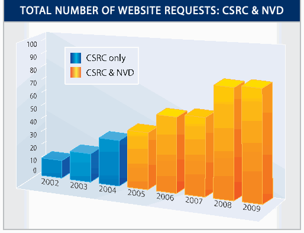
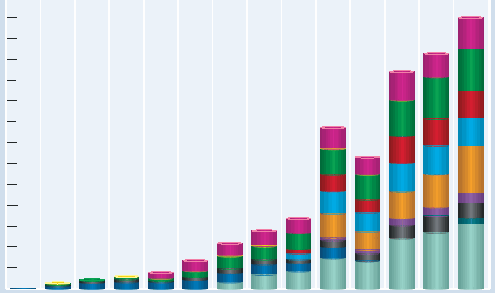

NIST IR 7653 日本語訳
英語タイトル : Computer Security Division 2009 Annual Report日本語タイトル : コンピュータセキュリティ部門 2009 年次報告書
公開日 : 2010-03-23
原文URL : https://csrc.nist.gov/pubs/ir/7653/final
翻訳編集 : 自動生成（有志による非公式の日本語訳）, 原文取得日 : 2026-10-31, 訳文 : 896 / 907 ブロック
[要約] NIST IR 7653 は、NIST のコンピュータセキュリティ部門（CSD）の 2009 年次報告書です。2009 会計年度（FY2009）の活動を、セキュリティマネジメント・保証グループ、暗号技術グループ、システム・新興技術セキュリティ研究グループの各グループについて、戦略目標と概要とともに説明します。FISMA 実施プロジェクト、暗号標準ツールキット、個人識別検証（PIV）、生体認証の標準、セキュリティコンテンツ自動化プロトコル（SCAP）などの取り組みを取り上げています。さらに、栄誉と表彰、FY2009 の部門の刊行物、部門と NIST に関与する方法を掲載しています。
Computer Security Division 2009 Annual Report
コンピュータセキュリティ部門 2009 年次報告書
Table of Contents
目次
Division Organization
部門の組織
Federal Information Security Management Act Implementation Project
連邦情報セキュリティマネジメント法実施プロジェクト
FISMA Implementation Project – Phase I
FISMA 実施プロジェクト – フェーズ I
FISMA Implementation Project – Phase II
FISMA 実施プロジェクト – フェーズ II
Computer Security Resource Center
コンピュータセキュリティリソースセンター
Federal Information Systems Security Educators’ Association
連邦情報システムセキュリティ教育者協会
Information Security and Privacy Advisory Board
情報セキュリティ・プライバシー諮問委員会
Personal Identity Verification
個人の身元確認
NIST Personal Identity Verification Program
NIST の個人識別検証プログラム
Conformance Tests for Transportation Workers Identification Credential Specifications
輸送作業者識別クレデンシャル仕様の適合性試験
Automated Combinatorial Testing for Software
ソフトウェアのための自動組合せテスト
National Vulnerability Database
国家脆弱性データベース
Security Content Automation Protocol
セキュリティコンテンツ自動化プロトコル
Security Content Automation Protocol Validation Program
セキュリティコンテンツ自動化プロトコル検証プログラム
Network Security Analysis Using Attach Graphs
アタックグラフを用いたネットワークセキュリティ分析
Internet Protocol Version 6 and Internet Protocol Security
インターネットプロトコルバージョン 6 とインターネットプロトコルセキュリティ
Securing the Domain Name System
ドメインネームシステムのセキュリティ確保
Welcome
ようこそ
The Computer Security Division (CSD), a component of NIST’s Information Technology Laboratory (ITL), provides standards and technology to protect information systems against threats to the confidentiality, integrity, and availability of information and services. During Fiscal Year 2009 (FY2009), CSD continued its standards development and cybersecurity outreach activities and carried out an expanded research agenda designed to develop and implement high-quality, cost-effective mechanisms needed to improve information security and privacy across the federal government and throughout the national and international information security community. CSD worked with federal partners to establish a unified framework for information security across the federal government. This initiative is resulting in greater standardization and more consistent and cost-effective security for all federal information systems.
NIST の情報技術研究所（ITL）の一部門であるコンピュータセキュリティ部門（CSD）は、情報およびサービスの機密性、完全性、可用性に対する脅威から情報システムを保護するための標準と技術を提供しています。2009 会計年度（FY2009）に CSD は、標準の策定とサイバーセキュリティのアウトリーチ活動を継続し、連邦政府全体および国内外の情報セキュリティコミュニティ全体で情報セキュリティとプライバシーを向上させるために必要な、高品質で費用対効果の高いメカニズムを開発・実装するための研究課題を拡大して実施しました。CSD は連邦のパートナーと協力し、連邦政府全体で情報セキュリティの統一的な枠組みを確立しました。この取組により、すべての連邦情報システムについて、標準化がいっそう進み、より一貫した費用対効果の高いセキュリティが実現しつつあります。
NIST continues to develop automated security tools to improve efficiency and reduce dependence on labor-intensive compliance documentation efforts. This includes efforts to standardize technical security operations, including automated vulnerability management. In parallel with its automation development and support activities, CSD also continues to work closely with federal agencies to improve their understanding and implementation of the Federal Information Security Management Act (FISMA) to protect their information and information systems.
NIST は、効率を高め、労力のかかるコンプライアンス文書作成への依存を減らすため、自動化されたセキュリティツールの開発を続けています。これには、自動化された脆弱性管理を含め、技術的なセキュリティ運用を標準化する取組が含まれます。CSD は、自動化の開発および支援活動と並行して、連邦機関が自らの情報および情報システムを保護するために連邦情報セキュリティマネジメント法（FISMA）への理解と実施を深められるよう、引き続き連邦機関と緊密に協力しています。
In FY2009, CSD continued to develop cybersecurity standards, security metrics, and product assurance programs to promote, measure, and validate the security attributes of information systems and services. As technology advances and security requirements evolve, CSD critically evaluates existing standards, guidelines, and technologies to ensure that they adequately reflect the current state of the art. In FY2009, CSD published revisions of The Digital Signature Standard, Federal Information Processing Standard (FIPS) 198-1 and Secure Hash Standard, FIPS 180-3, published twelve final and twelve draft security guidelines in the form of NIST Special Publications, and drafted ten Interagency Reports on cybersecurity topics. During FY2009 CSD continued its national and international consensus standards activities, particularly in the areas of cryptographic functions, cryptographic product assurance, and identity credentials. Also during FY2009, CSD continued its international competition for a next generation Secure Hash Algorithm (SHA-3) and continued to expand its support for sector-specific national initiatives: electronic voting, Smart Grid, and health information technology.
FY2009 に CSD は、情報システムとサービスのセキュリティ属性を促進、測定、検証するためのサイバーセキュリティ標準、セキュリティ測定指標、製品保証プログラムの開発を続けました。技術が進歩しセキュリティ要件が変化するなかで、CSD は、既存の標準、ガイドライン、技術が最新の技術水準を適切に反映しているかを批判的に評価しています。FY2009 に CSD は、The Digital Signature Standard（連邦情報処理標準（FIPS）198-1）と Secure Hash Standard（FIPS 180-3）の改訂版を発行し、NIST 特別刊行物として 12 件の最終版と 12 件の草案のセキュリティガイドラインを発行し、サイバーセキュリティの話題に関する機関間報告書 10 件の草案を作成しました。FY2009 に CSD は、特に暗号機能、暗号製品の保証、ID 資格証明書の分野で、国内および国際的なコンセンサス標準の活動を続けました。また FY2009 には、次世代の Secure Hash Algorithm（SHA-3）を選定する国際コンペティションを継続し、電子投票、スマートグリッド、医療情報技術といった分野別の国家的取組への支援も引き続き拡大しました。
To better assist the Nation in meeting its ever-increasing cybersecurity needs, in FY2009 CSD became more tightly integrated into both ITL and Department of Commerce cybersecurity activities. CSD provided a Chief Cybersecurity Advisor to the Director of ITL and a cybersecurity coordinator for the Department of Commerce Cybersecurity and Privacy Task Force. These new roles were necessary to better coordinate NIST and Commerce participation in inter-departmental cybersecurity planning and to more effectively leverage the resources necessary to make significant contributions to Departmental and National initiatives. CSD also led ITL’s transition from planning for Comprehensive National Cybersecurity Initiative (CNCI) activities to initiation of CNCI research programs and implementation of recommendations of the President’s 2009 Cyberspace Policy Review.
国家が増え続けるサイバーセキュリティ上の需要により的確に応えられるよう、FY2009 に CSD は、ITL および商務省のサイバーセキュリティ活動の両方にいっそう緊密に統合されました。CSD は、ITL 所長に対する主席サイバーセキュリティ顧問と、商務省サイバーセキュリティ・プライバシータスクフォースのサイバーセキュリティ調整担当者を提供しました。これらの新たな役割は、省庁間のサイバーセキュリティ計画への NIST と商務省の参加をより適切に調整し、省および国家の取組に大きく貢献するために必要な資源をより効果的に活用するために必要でした。CSD はまた、ITL において、包括的国家サイバーセキュリティイニシアチブ（CNCI）活動の計画から、CNCI 研究プログラムの開始と 2009 年の大統領サイバー空間政策レビューの勧告の実施へと移行することを主導しました。
These are just some of the highlights of the CSD program during FY2009. You may obtain more information about CSD’s program at http://csrc.nist.gov or by contacting any of the CSD experts noted in this report. If interested in participating in any CSD challenges – whether current or future – please contact any of the listed CSD experts.
以上は、FY2009 における CSD プログラムの主な成果の一部にすぎません。CSD のプログラムの詳細は http://csrc.nist.gov で入手できるほか、本報告書に記載した CSD の専門家に連絡することでも入手できます。現在または将来の CSD の課題に参加することにご関心のある方は、記載されている CSD の専門家のどなたにでもご連絡ください。
William Curtis Barker
Chief Cybersecurity Advisor
William Curtis Barker
主席サイバーセキュリティ顧問
［人物の写真。人物が写っているため、この非公式サイトには掲載していません。原本 PDF を参照してください。］
The Computer Security Division Implements the Federal Information Security Management Act of 2002
コンピュータセキュリティ部門による 2002 年連邦情報セキュリティマネジメント法の実施
The E-Government Act [Public Law 107-347], passed by the 107th Congress and signed into law by the President in December 2002, recognized the importance of information security to the economic and national security interests of the United States (U.S.). Title III of the E-Government Act, entitled the Federal Information Security Management Act of 2002 (FISMA), included duties and responsibilities for the Computer Security Division (CSD) in Section 303 “National Institute of Standards and Technology (NIST).” In Fiscal Year (FY) 2009, CSD addressed its assignments through the following projects and activities:
第 107 議会で可決され、2002 年 12 月に大統領が署名して成立した電子政府法 [Public Law 107-347] は、米国（U.S.）の経済および国家安全保障上の利益にとって情報セキュリティが重要であることを認めました。電子政府法の第 III 編である 2002 年連邦情報セキュリティマネジメント法（FISMA）は、第 303 条「国立標準技術研究所（NIST）」において、コンピュータセキュリティ部門（CSD）の職務と責任を定めています。2009 会計年度（FY）に CSD は、次のプロジェクトと活動を通じて割り当てられた任務に取り組みました。
•Issued sixteen NIST Special Publications (SP) covering management, operational, and technical security guidance, as well as four NIST Interagency Reports (NISTIRs) on technical topics, and one revised Federal Information Processing Standard (FIPS);
•管理面、運用面、技術面のセキュリティガイダンスを扱う NIST 特別刊行物（SP）16 件、技術的な話題に関する NIST 機関間報告書（NISTIR）4 件、および改訂版の連邦情報処理標準（FIPS）1 件を発行しました。
•Collaborated with the Office of the Director of National Intelligence, Committee on National Security Systems, and the Department of Defense to establish a common foundation for information security across the federal government, including a consistent process for selecting and specifying safeguards and countermeasures (i.e., security controls) for federal information systems;
•国家情報長官室、国家安全保障システム委員会、国防総省と協力して、連邦政府全体の情報セキュリティに共通の基盤を確立しました。これには、連邦情報システムのための保護措置と対策（すなわちセキュリティ管理策）を選定し規定するための一貫したプロセスが含まれます。
•Provided assistance to agencies and private sector. Conducted ongoing, substantial reimbursable and non-reimbursable assistance support, including many outreach efforts such as the Federal Information Systems Security Educators’ Association (FISSEA), the Federal Computer Security Program Managers’ Forum (FCSPM Forum), and the Small Business Corner;
•機関および民間部門を支援しました。連邦情報システムセキュリティ教育者協会（FISSEA）、連邦コンピュータセキュリティプログラム管理者フォーラム（FCSPM Forum）、スモールビジネスコーナーなど多くのアウトリーチ活動を含め、継続的かつ大規模な、費用の償還を伴う支援と償還を伴わない支援を行いました。
•Drafted NISTIR 7621, Small Business Information Security: The Fundamentals, which was released in August 2009. NISTIR 7621 helps small businesses and other small organizations implement the fundamental components of an effective information security program;
•NISTIR 7621、Small Business Information Security: The Fundamentals の草案を作成しました。同報告書は 2009 年 8 月に公表されました。NISTIR 7621 は、中小企業やその他の小規模な組織が、効果的な情報セキュリティプログラムの基本的な構成要素を実装するのに役立ちます。
•Initiated the development of an outreach video for the Small Business Outreach to help promote Information Technology (IT) security awareness for small to medium sized businesses. This video is expected to be publicly available in October 2009 on the CSRC website;
•中小企業向けアウトリーチのために、中小企業の情報技術（IT）セキュリティ意識向上を促進するアウトリーチ用ビデオの開発に着手しました。このビデオは 2009 年 10 月に CSRC の Web サイトで一般公開される予定です。
•Evaluated security policies and technologies from the private sector and national security systems for potential federal agency use. Assembled a growing repository of federal agency security practices, public/private security practices, and security configuration checklists for IT products. In conjunction with the Government of Canada’s Communications Security Establishment, CSD leads the Cryptographic Module Validation Program (CMVP). The Common Criteria Evaluation and Validation Scheme (CCEVS) and CMVP facilitate security testing of IT products usable by the federal government;
•連邦機関が利用できる可能性のある、民間部門および国家安全保障システムのセキュリティポリシーと技術を評価しました。連邦機関のセキュリティ実践、官民のセキュリティ実践、IT 製品のセキュリティ構成チェックリストを集めたリポジトリを拡充しました。CSD は、カナダ政府の通信保安機関（Communications Security Establishment）と共同で、暗号モジュール検証プログラム（CMVP）を主導しています。Common Criteria Evaluation and Validation Scheme（CCEVS）と CMVP は、連邦政府が利用できる IT 製品のセキュリティ試験を円滑にします。
•Solicited recommendations of the Information Security and Privacy Advisory Board (ISPAB) on draft standards and guidelines: solicited recommendations of the Board on information security and privacy issues regularly at quarterly meetings;
•標準とガイドラインの草案について、情報セキュリティ・プライバシー諮問委員会（ISPAB）の勧告を求めました。四半期ごとの会合で定期的に、情報セキュリティとプライバシーの問題について同委員会の勧告を求めました。
•Drafted NIST SP 800-126, The Technical Specification for the Security Content Automation Protocol (SCAP). The Security Content Automation Protocol (SCAP) is a synthesis of interoperable specifications derived from community ideas. Community participation is a great strength for SCAP, because the security automation community ensures that the broadest possible range of use cases is reflected in SCAP functionality;
•NIST SP 800-126、The Technical Specification for the Security Content Automation Protocol (SCAP) の草案を作成しました。セキュリティコンテンツ自動化プロトコル（SCAP）は、コミュニティの発想から生まれた相互運用可能な仕様を統合したものです。セキュリティ自動化コミュニティが、可能な限り幅広いユースケースを SCAP の機能に確実に反映させてくれるため、コミュニティの参加は SCAP の大きな強みです。
•Provided outreach, workshops, and briefings: Conducted ongoing awareness briefings and outreach to CSD’s customer community and beyond to advance the implementation of guidance and awareness of planned and future activities. CSD also held workshops to identify areas that the customer community wishes to be addressed, and to scope guidelines in a collaborative and open format; and
•アウトリーチ、ワークショップ、ブリーフィングを提供しました。CSD の顧客コミュニティおよびそれ以外の人々に対して、継続的に啓発ブリーフィングとアウトリーチを行い、ガイダンスの実装と、計画中および将来の活動に関する認識を促進しました。また CSD は、顧客コミュニティが取り上げてほしいと望む領域を特定し、協調的でオープンな形式でガイドラインの範囲を定めるためのワークショップを開催しました。
•Produced an annual report as a NISTIR. The 2003-2008 Annual Reports are available via our Computer Security Resource Center (CSRC) website or upon request.
•NISTIR として年次報告書を作成しました。2003〜2008 年の年次報告書は、コンピュータセキュリティリソースセンター（CSRC）の Web サイトから、または依頼により入手できます。
Security Management and Assurance Group
セキュリティマネジメント・保証グループ
STRATEGIC GOAL
戦略目標
The Security Management and Assurance (SMA) Group provides leadership, expertise, outreach, validation, standards and guidelines in order to assist the federal IT community in protecting its information and information systems, which allows our federal customers to use these critical assets in accomplishing their missions.
セキュリティマネジメント・保証（SMA）グループは、連邦の IT コミュニティが情報および情報システムを保護できるよう、リーダーシップ、専門知識、アウトリーチ、検証、標準、ガイドラインを提供しています。これにより、連邦政府の顧客はこれらの重要な資産を使って任務を遂行できます。
Overview
概要
Information security is an integral element of sound management. Information and information systems are critical assets that support the mission of an organization. Protecting them can be as important as protecting other organizational resources, such as money, physical assets, or employees. However, including security considerations in the management of information and computers does not completely eliminate the possibility that these assets will be harmed.
情報セキュリティは、健全なマネジメントに不可欠な要素です。情報および情報システムは、組織の任務を支える重要な資産です。これらを保護することは、金銭、物理的資産、従業員といった他の組織資源を保護することと同じくらい重要な場合があります。しかし、情報やコンピュータのマネジメントにセキュリティの考慮事項を含めても、これらの資産が被害を受ける可能性が完全になくなるわけではありません。
Ultimately, responsibility for the success of an organization lies with its senior management. They establish the organization’s computer security program and its overall program goals, objectives, and priorities in order to support the mission of the organization. They are also responsible for ensuring that required resources are applied to the program.
組織の成功に対する最終的な責任は、その上級管理者にあります。上級管理者は、組織の任務を支えるために、組織のコンピュータセキュリティプログラムと、プログラム全体の目標、目的、優先事項を定めます。また、必要な資源がプログラムに充てられるようにする責任も負います。
Collaboration with a number of entities is critical for success. Federally, we collaborate with the U.S. Office of Management and Budget (OMB), the U.S. Government Accountability Office (GAO), the National Security Agency (NSA), the Chief Information Officers (CIO) Council, and all Executive Branch agencies. We also work closely with a number of information technology organizations and standards bodies, as well as public and private organizations. Internationally we work jointly with the governments of our allies to include Canada, Japan and several European and Asian countries to standardize and validate the correct implementation of cryptography.
成功には、数多くの主体との連携が不可欠です。連邦政府内では、米国行政管理予算局（OMB）、米国会計検査院（GAO）、国家安全保障局（NSA）、最高情報責任者（CIO）評議会、およびすべての行政府機関と連携しています。また、多くの情報技術組織や標準化団体、ならびに公的・民間の組織とも緊密に協力しています。国際的には、カナダ、日本、欧州およびアジアの数か国を含む同盟国の政府と共同で、暗号の正しい実装を標準化し検証しています。
Major initiatives in this area include:
この分野の主な取組には、次のものがあります。
•The Federal Information Security Management Act (FISMA) Implementation project;
•連邦情報セキュリティマネジメント法（FISMA）実施プロジェクト
•The Cryptographic Module Validation Program;
•暗号モジュール検証プログラム
•The Cryptographic Algorithm Validation Program;
•暗号アルゴリズム検証プログラム
•Extended outreach initiatives to federal and nonfederal agencies, state and local governments and international organizations;
•連邦機関と連邦以外の機関、州・地方政府、国際組織に対する拡大されたアウトリーチの取組
•Information security training, awareness and education;
•情報セキュリティのトレーニング、意識向上、教育
•Outreach to small and medium business;
•中小企業向けのアウトリーチ
•Standards development; and
•標準の策定
•Producing and updating NIST Special Publications (SP) on security management topics.
•セキュリティマネジメントの話題に関する NIST 特別刊行物（SP）の作成と更新
Key to the success of this area is our ability to interact with a broad constituency – federal and nonfederal--in order to ensure that our program is consistent with national objectives related to or impacted by information security.
この分野の成功の鍵は、当プログラムが情報セキュリティに関連する、あるいは情報セキュリティの影響を受ける国家目標と整合していることを確保するために、連邦および連邦以外の幅広い関係者と交流できることです。
Federal Information Security Management Act (FISMA) Implementation Project
連邦情報セキュリティマネジメント法（FISMA）実施プロジェクト
Federal Information Security Management Act (FISMA) Implementation Project – Phase I
連邦情報セキュリティマネジメント法（FISMA）実施プロジェクト – フェーズ I
The Computer Security Division (CSD) continued to develop the security standards and guidelines required by federal legislation. Phase I of the FISMA Implementation Project included the development of the following publications:
コンピュータセキュリティ部門（CSD）は、連邦法が求めるセキュリティ標準とガイドラインの策定を続けました。FISMA 実施プロジェクトのフェーズ I では、次の刊行物を策定しました。
•Federal Information Processing Standard (FIPS) 199, Standards for Security Categorization of Federal Information and Information Systems;
•連邦情報処理標準（FIPS）199、Standards for Security Categorization of Federal Information and Information Systems;
•FIPS 200, Minimum Security Requirements for Federal Information and Information Systems;
•FIPS 200、Minimum Security Requirements for Federal Information and Information Systems
•NIST Special Publication (SP) 800-37 Revision 1, Guide for Applying the Risk Management Framework to Federal Information Systems: A Security Life Cycle Approach;
•NIST 特別刊行物（SP）800-37 Revision 1、Guide for Applying the Risk Management Framework to Federal Information Systems: A Security Life Cycle Approach
•NIST SP 800-39, Integrated Enterprise-wide Risk Management: Organization, Mission and Information Systems View;
•NIST SP 800-39、Integrated Enterprise-wide Risk Management: Organization, Mission and Information Systems View
•NIST SP 800-53 Revision 3, Recommended Security Controls for Federal Information Systems and Organizations;
•NIST SP 800-53 Revision 3、Recommended Security Controls for Federal Information Systems and Organizations
•NIST SP 800-53A, Guide for Assessing the Security Controls in Federal Information Systems;
•NIST SP 800-53A、Guide for Assessing the Security Controls in Federal Information Systems
•NIST SP 800-59, Guideline for Identifying an Information System as a National Security System; and
•NIST SP 800-59、Guideline for Identifying an Information System as a National Security System
•NIST SP 800-60, Guide for Mapping Types of Information and Information Systems to Security Categories.
•NIST SP 800-60、Guide for Mapping Types of Information and Information Systems to Security Categories.
The security standards and guidelines developed in Phase I will assist federal agencies in—
フェーズ I で策定したセキュリティ標準とガイドラインは、連邦機関による次のことを支援します。
•Implementing the individual steps in the NIST Risk Management Framework as part of a well-defined and disciplined system development life cycle process;
•明確に定義された規律あるシステム開発ライフサイクルのプロセスの一環として、NIST リスクマネジメントフレームワークの個々のステップを実施すること。
•Demonstrating compliance to specific requirements contained within the legislation; and
•法律に定められた特定の要件への準拠を示すこと。
•Establishing a level of security due diligence across the federal government.
•連邦政府全体でセキュリティに関する相当の注意の水準を確立すること。
In FY2009, the SMA group completed or updated the following key publications:
FY2009 に SMA グループは、次の主要な刊行物を完成または更新しました。
•Major revision of NIST SP 800-53, Recommended Security Controls for Federal Information Systems and Organizations, working in cooperation with the Office of the Director of National Intelligence (ODNI), the Department of Defense (DOD), and the Committee on National Security Systems (CNSS), to develop a common set (catalog) of security controls for all federal information systems;
•NIST SP 800-53、Recommended Security Controls for Federal Information Systems and Organizations の大規模な改訂。国家情報長官室（ODNI）、国防総省（DOD）、国家安全保障システム委員会（CNSS）と協力して、すべての連邦情報システムに共通のセキュリティ管理策の一式（カタログ）を作成しました。
•Initial public draft of a major revision to NIST SP 800-37, Guide for the Security Certification and Accreditation of Federal Information Systems, working in cooperation with the ODNI, DOD, and the CNSS, to develop a common process to authorize federal information systems for operation; and
•NIST SP 800-37、Guide for the Security Certification and Accreditation of Federal Information Systems の大規模な改訂の最初の公開草案。ODNI、DOD、CNSS と協力して、連邦情報システムの運用を認可するための共通のプロセスを作成しました。
•Second public draft of NIST SP 800-39, which is the flagship document in the series of FISMA-related publications that provides a structured, yet flexible, approach for managing that portion of risk resulting from the incorporation of information systems into the mission and business processes of organizations.
•NIST SP 800-39 の第 2 次公開草案。これは FISMA 関連の刊行物シリーズの中核となる文書で、情報システムを組織の任務および業務プロセスに組み込むことで生じるリスクの部分を管理するための、構造化されていながら柔軟な手法を提供します。
In addition to the above publications, the division collaborated with the Manufacturing Engineering Laboratory in reviewing comments received and updating the draft guide to industrial control system security, NIST SP 800-82, Guide to Industrial Control Systems (ICS) Security: Supervisory Control and Data Acquisition (SCADA) Systems, Distributed Control Systems (DCS), and Other Control System Configurations Such as Programmable Logic Controllers (PLC).
上記の刊行物に加えて、当部門は製造エンジニアリング研究所と協力し、寄せられたコメントを確認して、産業用制御システムのセキュリティに関するガイドの草案である NIST SP 800-82、Guide to Industrial Control Systems (ICS) Security: Supervisory Control and Data Acquisition (SCADA) Systems, Distributed Control Systems (DCS), and Other Control System Configurations Such as Programmable Logic Controllers (PLC) を更新しました。
Phase II of the FISMA Implementation Project, discussed in more detail in the next section of this annual report, focuses on several initiatives to support security control assessment capability for public and private sector organizations providing security assessment services for federal agencies.
FISMA 実施プロジェクトのフェーズ II については、本年次報告書の次の節で詳しく述べますが、連邦機関にセキュリティ評価サービスを提供する公的・民間部門の組織のために、セキュリティ管理策の評価能力を支援するいくつかの取組に重点を置いています。
For FY2010, CSD intends to continue collaboration with the ODNI, the DOD, and the CNSS, in expanding the series of NIST SPs for a unified information security framework for the federal government. Updates to the following draft publications will be completed in FY2010: NIST SP 800-37 Revision 1, 39 and 53A.
FY2010 に CSD は、連邦政府の統一的な情報セキュリティフレームワークに向けた NIST SP シリーズの拡充において、引き続き ODNI、DOD、CNSS と協力する予定です。次の草案刊行物の更新は FY2010 に完了する予定です: NIST SP 800-37 Revision 1、39、53A。
http://csrc.nist.gov/sec-cert
Contact: Dr. Ron Ross
(301) 975-5390
ron.ross@nist.gov
http://csrc.nist.gov/sec-cert
連絡先: Dr. Ron Ross
(301) 975-5390
ron.ross@nist.gov
Federal Information Security Management Act (FISMA) Implementation Project – Phase II
連邦情報セキュリティマネジメント法（FISMA）実施プロジェクト – フェーズ II
Phase II of the FISMA Implementation Project is focusing on building common understanding and reference guides for organizations applying the NIST suite of publications that support the Risk Management Framework (RMF), and for public and private sector organizations that provide security assessment services of information systems for federal agencies. These security services involve the comprehensive assessment of the management, operational, and technical security controls in federal information systems including the assessment of the information technology products and services used in security control implementation. The security assessment services will determine the extent to which the security controls are implemented correctly, operating as intended, and producing the desired outcome with respect to meeting the security requirements for the system.
FISMA 実施プロジェクトのフェーズ II は、リスクマネジメントフレームワーク（RMF）を支える NIST 刊行物群を適用する組織、および連邦機関のために情報システムのセキュリティ評価サービスを提供する公的・民間部門の組織を対象に、共通理解と参照ガイドを構築することに重点を置いています。これらのセキュリティサービスでは、連邦情報システムにおける管理面、運用面、技術面のセキュリティ管理策を包括的に評価します。これには、セキュリティ管理策の実装に使われる情報技術製品とサービスの評価も含まれます。セキュリティ評価サービスは、セキュリティ管理策が正しく実装され、意図どおりに運用され、システムのセキュリティ要件を満たすうえで望ましい結果を生んでいる程度を判断します。
This phase of the FISMA Implementation Project includes the following initiatives:
FISMA 実施プロジェクトのこのフェーズには、次の取組が含まれます。
(i) Training Initiative: for development of training courses, NIST publication of Quick Start Guides (QSGs), and development of Frequently Asked Questions (FAQs) for establishing common understanding of the NIST standards and guidelines supporting the NIST RMF;
(i) トレーニングの取組: NIST RMF を支える NIST の標準とガイドラインについて共通理解を確立するための、トレーニングコースの開発、クイックスタートガイド（QSG）の NIST による発行、よくある質問（FAQ）の作成。
(ii) Support Tools Initiative: for defining criteria for common reference programs, materials, checklists, technical guides, automated tools and techniques supporting implementation and assessment of SP 800-53-based security controls;
(ii) 支援ツールの取組: SP 800-53 に基づくセキュリティ管理策の実装と評価を支える、共通の参照プログラム、資料、チェックリスト、技術ガイド、自動化ツールと技法の基準を定めること。
(iii) Product and Services Assurance Initiative: for defining minimum criteria and guidelines for security assurances (to include test results from SCAP tools and configuration checklists, etc. where applicable) in products and services supporting implementation and assessment of SP 800-53-based security controls in information system operational environments;
(iii) 製品・サービス保証の取組: 情報システムの運用環境で SP 800-53 に基づくセキュリティ管理策の実装と評価を支える製品およびサービスについて、セキュリティ保証（該当する場合は SCAP ツールや構成チェックリストなどの試験結果を含む）の最小限の基準とガイドラインを定めること。
(iv) International Organization for Standardization (ISO) Harmonization Initiative: for identifying common relationships and mappings of FISMA standards, guidelines, and requirements with: (i) International Organization for Standardization/ International Electrotechnical Commission (ISO/IEC) 27000 series information security management standards; and (ii) ISO/IEC 9000 and 17000 series quality management, and laboratory testing/inspection standards respectively. This harmonization is important for minimizing duplication of effort for organizations that must demonstrate compliance to both FISMA and ISO requirements; and
(iv) 国際標準化機構（ISO）調和の取組: FISMA の標準、ガイドライン、要件と、(i) 国際標準化機構／国際電気標準会議（ISO/IEC）27000 シリーズの情報セキュリティマネジメント標準、および (ii) それぞれ ISO/IEC 9000 および 17000 シリーズの品質マネジメント標準と試験所の試験・検査標準との間の共通の関係とマッピングを特定すること。この調和は、FISMA と ISO の両方の要件への準拠を示さなければならない組織にとって、作業の重複を最小限にするために重要です。
(v) Organizational Security Assessment Capability Initiative: drawing upon material from the above initiatives, define minimum capability and proficiency criteria for public and private sector organizations providing security assessment services for federal agencies.
(v) 組織のセキュリティ評価能力の取組: 上記の取組の成果を活用して、連邦機関にセキュリティ評価サービスを提供する公的・民間部門の組織に求められる最小限の能力と習熟度の基準を定めること。
In FY2009 CSD completed the following activities:
FY2009 に CSD は、次の活動を完了しました。
(i) Training Initiative: completed QSGs and FAQs supporting the categorization and monitor step of the 6-step NIST RMF; and prototyped 2 training courses on the RMF;
(i) トレーニングの取組: 6 ステップの NIST RMF のうち、分類のステップと監視のステップを支える QSG と FAQ を完成させ、RMF に関する 2 つのトレーニングコースの試作版を作成しました。
(ii) Support Tools Initiative: developed an SP 800-53 Revision 3 Reference Database Application that enables users to display and search the SP 800-53 security control catalog in a variety of views, and to export those views in many different file formats for incorporating into automated support tools;
(ii) 支援ツールの取組: SP 800-53 Revision 3 参照データベースアプリケーションを開発しました。これにより、利用者は SP 800-53 のセキュリティ管理策カタログをさまざまなビューで表示・検索でき、それらのビューを多様なファイル形式でエクスポートして自動化された支援ツールに取り込めます。
(iii) Product and Services Assurance Initiative: held meetings with several security product and service providers and federal agencies seeking their views on common types of artifacts that are readily available for assurances that SP 800-53 based security control product and service claims are continuously being meet in organization specific information system operational environments;
(iii) 製品・サービス保証の取組: 複数のセキュリティ製品・サービスの提供者および連邦機関と会合を持ち、SP 800-53 に基づくセキュリティ管理策に関する製品・サービスの主張が、組織固有の情報システムの運用環境で継続的に満たされていることを保証するために、容易に入手できる成果物の一般的な種類について、意見を求めました。
(iv) ISO Harmonization Initiative: developed mapping tables of SP 800-53 Revision 3 security controls to ISO/IEC 27001 (Annex A) controls to aid organizations that need to demonstrate compliance to both sets of security controls; and
(iv) ISO 調和の取組: SP 800-53 Revision 3 のセキュリティ管理策と ISO/IEC 27001（附属書 A）の管理策とのマッピング表を作成しました。これは、両方の管理策への準拠を示す必要がある組織を支援するものです。
(v) Organizational Security Assessment Capability Initiative: updated the initial public draft of NIST Interagency Report 7328, Security Assessment Provider Requirements and Customer Responsibilities, which defines capabilities security assessment providers should satisfy to demonstrate proficiencies in conducting information system security control assessments in accordance with NIST standards and guidelines.
(v) 組織のセキュリティ評価能力の取組: NIST 機関間報告書 7328、Security Assessment Provider Requirements and Customer Responsibilities の最初の公開草案を更新しました。同報告書は、セキュリティ評価の提供者が、NIST の標準とガイドラインに従って情報システムのセキュリティ管理策評価を実施する習熟度を示すために満たすべき能力を定めています。
For FY2010, CSD intends to develop QSGs and FAQs for the select, implement, assess and authorize steps of the 6-step RMF, and prototype a web-based training module for the RMF; draft a guide defining criteria for common support tools and techniques supporting implementation and assessment of SP 800-53-based security controls; outline a guide for submission of supplier claims for product and service assurances; develop additional mappings of NIST standards and guidelines supporting the RMF to ISO/IEC 27001 information security management system (ISMS) framework; and complete update of NISTIR 7328, Security Assessment Provider Requirements and Customer Responsibilities.
FY2010 に CSD は、6 ステップの RMF のうち選択、実装、評価、認可のステップを支える QSG と FAQ を作成し、RMF の Web ベースのトレーニングモジュールの試作版を作成する予定です。また、SP 800-53 に基づくセキュリティ管理策の実装と評価を支える共通の支援ツールと技法の基準を定めるガイドの草案を作成し、製品およびサービスの保証に関する供給者の主張の提出に関するガイドの概要を作成し、RMF を支える NIST の標準とガイドラインと ISO/IEC 27001 情報セキュリティマネジメントシステム（ISMS）フレームワークとのマッピングを追加で作成し、NISTIR 7328、Security Assessment Provider Requirements and Customer Responsibilities の更新を完了する予定です。
http://csrc.nist.gov/sec-cert
http://csrc.nist.gov/sec-cert
Contacts: Mr. Arnold Johnson
(301) 975-3247
arnold.johnson@nist.gov
Ms. Pat Toth
(301) 975-5140
patricia.toth@nist.gov
連絡先: Mr. Arnold Johnson
(301) 975-3247
arnold.johnson@nist.gov
Ms. Pat Toth
(301) 975-5140
patricia.toth@nist.gov
Outreach and Awareness
アウトリーチと啓発
Computer Security Resource Center (CSRC)
コンピュータセキュリティリソースセンター（CSRC）
The Computer Security Resource Center (CSRC) is the Computer Security Division’s website. CSRC is one of the most visited websites at NIST. We use the CSRC to encourage broad sharing of information security tools and practices, to provide a resource for information security standards and guidelines, and to identify and link key security web resources to support the industry. The CSRC is an integral component of all of the work that we conduct and produce. It is our repository for everyone, public or private sector, wanting access to our documents and other valuable information security-related information. CSRC serves as a vital link to all our internal and external customers.
コンピュータセキュリティリソースセンター（CSRC）は、コンピュータセキュリティ部門の Web サイトです。CSRC は、NIST で最も多くアクセスされる Web サイトの 1 つです。当部門は CSRC を、情報セキュリティのツールと実践の幅広い共有を促し、情報セキュリティの標準とガイドラインの情報源を提供し、業界を支援する主要なセキュリティ関連 Web リソースを特定してリンクするために使っています。CSRC は、当部門が行い、生み出すすべての業務に欠かせない構成要素です。公的部門か民間部門かを問わず、当部門の文書やその他の情報セキュリティ関連の有用な情報にアクセスしたい人すべてのためのリポジトリです。CSRC は、当部門のすべての内部および外部の顧客をつなぐ重要な接点となっています。
During FY2009, CSRC had more than 91.4 million requests. Of these, the National Vulnerability Database (NVD) website within CSRC received 48.4 million requests, with the rest of the CSRC receiving 43.0 million requests.
FY2009 に CSRC は 9,140 万件を超えるリクエストを受けました。このうち、CSRC 内の国家脆弱性データベース（NVD）の Web サイトが 4,840 万件、CSRC のそれ以外の部分が 4,300 万件のリクエストを受けました。

「TOTAL NUMBER OF WEBSITE REQUESTS: CSRC & NVD」と題する棒グラフです。縦軸は 0〜100（10 刻み）です。2002 年から 2009 年までの棒があり、2002〜2004 年は「CSRC only」（青）、2005〜2009 年は「CSRC & NVD」（橙）です。棒は 2002 年の約 10 から 2008 年・2009 年の約 65 まで増えています。
The CSRC website is the primary source for gaining access to NIST computer security publications. We post the following publications: Drafts, Federal Information Processing Standards (FIPS), Special Publications (SPs), NIST Interagency Reports (NISTIRs), and ITL Security Bulletins. Every draft document released for public comment or final document published through the Division has been posted to the CSRC website.
CSRC の Web サイトは、NIST のコンピュータセキュリティ刊行物にアクセスするための主要な情報源です。次の刊行物を掲載しています: 草案、連邦情報処理標準（FIPS）、特別刊行物（SP）、NIST 機関間報告書（NISTIR）、ITL セキュリティ速報。パブリックコメントのために公開された草案も、当部門を通じて発行された最終版の文書も、すべて CSRC の Web サイトに掲載されています。
The URL for the Publications homepage is: http://csrc.nist.gov/publications . This URL provides links to the publications listed above. We also have organized the publications by Topic clusters, by Family categories, and by Legal Requirements to help users locate various documents under these topics.
刊行物のホームページの URL は http://csrc.nist.gov/publications です。この URL から、上記の刊行物へのリンクをたどれます。また、利用者がこれらの話題ごとにさまざまな文書を見つけやすいように、刊行物をトピック別のクラスタ、ファミリー別のカテゴリ、法的要件別に整理しています。
The top 10 CSD publications (Drafts, FIPS, SPs, NISTIRs, and ITL Security Bulletins) that were downloaded in FY2009 (October 1, 2008 to September 30, 2009) were:
FY2009（2008 年 10 月 1 日から 2009 年 9 月 30 日）にダウンロードされた CSD の刊行物（草案、FIPS、SP、NISTIR、ITL セキュリティ速報）の上位 10 件は次のとおりでした。
1.SP 800-53 Revision 2 and Revision 3,Recommended Security Controls for Federal Information Systems and Organizations;
1.SP 800-53 Revision 2 および Revision 3、Recommended Security Controls for Federal Information Systems and Organizations
2.SP 800-53 A,Guide for Assessing the Security Controls in Federal Information Systems;
2.SP 800-53 A、Guide for Assessing the Security Controls in Federal Information Systems
3.SP 800-30, Risk Management Guide for Information Technology Systems;
3.SP 800-30、Risk Management Guide for Information Technology Systems
4.SP 800-34,Contingency Planning Guide for Information Technology Systems;
4.SP 800-34、Contingency Planning Guide for Information Technology Systems
5.SP 800-48 Revision 1, Guide to Securing Legacy IEEE 802.11 Wireless Networks;
5.SP 800-48 Revision 1、Guide to Securing Legacy IEEE 802.11 Wireless Networks
6.SP 800-77, Guide to IPsec VPNs;
6.SP 800-77、Guide to IPsec VPNs
7.FIPS 140-2,Security Requirements for Cryptographic Modules;
7.FIPS 140-2、Security Requirements for Cryptographic Modules
8.SP 800-100,Information Security Handbook: A Guide for Managers;
8.SP 800-100、Information Security Handbook: A Guide for Managers
9.FIPS 201-1, Personal Identity Verification (PIV) of Federal Employees and Contractors; and
9.FIPS 201-1、Personal Identity Verification (PIV) of Federal Employees and Contractors
10.NISTIR 7298, Glossary of Key Information Security Terms.
10.NISTIR 7298、Glossary of Key Information Security Terms
During FY2009, the CSRC website was continuously updated with new information on various project pages. Some of the major highlights of the expanded CSRC website during FY2009 were:
FY2009 に CSRC の Web サイトは、各プロジェクトのページの新しい情報で継続的に更新されました。FY2009 に拡充された CSRC の Web サイトの主な成果には、次のものがありました。
•Created web pages for the 2009 Federal Information Systems Security Educators’ Association (FISSEA) Conference;
•2009 年の連邦情報システムセキュリティ教育者協会（FISSEA）カンファレンス用の Web ページを作成しました。
•Updated and created new validated products and algorithms web pages for the Cryptographic Module Validation Program (CMVP) and Cryptographic Algorithm Validation Program (CAVP) project;
•暗号モジュール検証プログラム（CMVP）と暗号アルゴリズム検証プログラム（CAVP）のプロジェクトについて、検証済み製品およびアルゴリズムの Web ページを更新し、新しいページを作成しました。
•Updated the Small Business Community website with new information and workshops that took place in FY2009;
•中小企業コミュニティの Web サイトを更新し、FY2009 に行われたワークショップと新しい情報を追加しました。
•Redesigned and updated the National Vulnerability Database (NVD) website – the Federal Desktop Core Configuration (FDCC) and Security Content Automation Protocol (SCAP) portion of website; and
•国家脆弱性データベース（NVD）の Web サイトのうち、連邦デスクトップ標準構成（FDCC）とセキュリティコンテンツ自動化プロトコル（SCAP）の部分を再設計し、更新しました。
•Created web pages that included assessment cases for the FISMA project.
•FISMA プロジェクトの評価ケースを含む Web ページを作成しました。
In addition to the CSRC website, CSD maintains a publication announcement mailing list. This is a free e-mail list that notifies subscribers about publications that have been posted to the CSRC website and are available to the general public. This e-mail list is a valuable tool for more than 7,700 subscribers who include federal government employees, the private sector, educational institutions, and individuals with a personal interest in IT security. This e-mail list reaches people all over the world. E-mail is sent to the list only when the CSD releases a publication, posts an announcement on the CSRC website, and when the CSD is hosting a security event. E-mails are only sent out by the list administrator – Pat O’Reilly (NIST, CSD).
CSD は CSRC の Web サイトに加えて、刊行物の告知用メーリングリストを運営しています。これは無料の電子メールリストで、CSRC の Web サイトに掲載され、一般公開されている刊行物を購読者に知らせます。このリストは、連邦政府職員、民間部門、教育機関、IT セキュリティに個人的な関心を持つ人々など、7,700 人を超える購読者にとって有用なツールです。リストは世界中の人々に届きます。CSD が刊行物を発行したとき、CSRC の Web サイトに告知を掲載したとき、または CSD がセキュリティイベントを主催しているときに限り、リスト宛てに電子メールが送信されます。電子メールを送信するのは、リスト管理者である Pat O’Reilly（NIST、CSD）だけです。
During FY2009 we have offered more services and technical support for our list. We now offer multiple lists under one main list. We have expanded our publications list into multiple topic lists: Drafts, FIPS, SPs, NISTIRs, ITL Security Bulletins, CSRC News, and CSD sponsored events. Our subscribers have full control of which lists they would like to belong to. Once subscribed to the list, subscribers have an option to join other topics from the list mentioned above. Each subscriber has an individual user preference (profile). We plan to expand the topics offered in FY2010.
FY2009 に当部門は、このリストについてより多くのサービスと技術サポートを提供しました。現在は 1 つの主リストの下に複数のリストを用意しています。刊行物リストを複数のトピック別リストに拡張しました: 草案、FIPS、SP、NISTIR、ITL セキュリティ速報、CSRC ニュース、CSD 主催のイベント。購読者は、どのリストに加入するかを自由に決められます。リストに登録した購読者は、上記のほかのトピックにも加入できます。各購読者は個別のユーザー設定（プロファイル）を持ちます。FY2010 には、提供するトピックを拡充する予定です。
Individuals who are interested in learning more about this list or subscribing to it should visit this web page on CSRC for more information:
このリストについて詳しく知りたい方、または購読を希望する方は、詳細について CSRC の次の Web ページをご覧になるべきです。
http://csrc.nist.gov/publications/subscribe.html
http://csrc.nist.gov/publications/subscribe.html
Questions on the website should be sent to the CSRC Webmaster at: webmaster-csrc@nist.gov.
Web サイトに関するご質問は、CSRC Webmaster（webmaster-csrc@nist.gov）に送るべきです。
http://csrc.nist.gov/
Contact: Mr. Patrick O’Reilly
(301) 975-4751
patrick.oreilly@nist.gov
http://csrc.nist.gov/
連絡先: Mr. Patrick O’Reilly
(301) 975-4751
patrick.oreilly@nist.gov
Federal Computer Security Program Managers’ Forum
連邦コンピュータセキュリティプログラム管理者フォーラム
The Federal Computer Security Program Managers’ Forum (Forum) is an informal group of over 900 members sponsored by NIST to promote the sharing of security-related information among federal agencies. The Forum strives to provide an ongoing opportunity for managers of federal information security programs to exchange information security materials in a timely manner, to build upon the experiences of other programs, and to reduce possible duplication of effort. It provides an organizational mechanism for NIST to share information directly with federal agency information security program managers in fulfillment of NIST’s leadership mandate under FISMA. It assists NIST in establishing and maintaining relationships with other individuals or organizations that are actively addressing information security issues within the federal government. Finally, it helps NIST and other federal agencies in developing and maintaining a strong, proactive stance in the identification and resolution of new strategic and tactical IT security issues as they emerge.
連邦コンピュータセキュリティプログラム管理者フォーラム（以下「フォーラム」）は、連邦機関の間でセキュリティ関連の情報共有を促進するために NIST が後援する、900 人を超える会員からなる非公式のグループです。フォーラムは、連邦の情報セキュリティプログラムの管理者が、情報セキュリティの資料をタイムリーに交換し、他のプログラムの経験を活かし、作業の重複の可能性を減らせるよう、継続的な機会を提供することを目指しています。また、FISMA に基づく NIST のリーダーシップの責務を果たすために、NIST が連邦機関の情報セキュリティプログラム管理者と直接情報を共有するための組織的な仕組みとなっています。さらに、連邦政府内で情報セキュリティの問題に積極的に取り組んでいる他の個人や組織との関係を NIST が確立し維持するのを支援します。最後に、新たな戦略的・戦術的な IT セキュリティ上の問題が生じたときに、それを特定し解決するための強力で先見的な姿勢を、NIST や他の連邦機関が築き維持するのを支援します。
The Forum hosts the Federal Agency Security Practices (FASP) website, maintains an extensive e-mail list, and holds an annual off-site conference and bimonthly meetings to discuss current issues and developments of interest to those responsible for protecting sensitive (unclassified) federal systems [except “Warner Amendment” systems, as defined in 44 USC 3502 (2)]. Ms. Marianne Swanson from NIST serves as the Chairperson of the Forum. NIST also serves as the Secretariat of the Forum, providing necessary administrative and logistical support. Participation in Forum meetings is open to federal government employees who participate in the management of their organization’s information security program. There are no membership dues.
フォーラムは、Federal Agency Security Practices（FASP）の Web サイトを運営し、広範な電子メールリストを維持するとともに、機微（非機密）の連邦システム［44 USC 3502 (2) に定義される「ワーナー修正条項」のシステムを除く］の保護を担当する人々が関心を持つ現在の課題や動向を議論するため、年 1 回の社外会議と隔月の会合を開いています。NIST の Ms. Marianne Swanson がフォーラムの議長を務めています。NIST はフォーラムの事務局も務め、必要な管理上および後方支援上のサポートを提供しています。フォーラムの会合への参加は、自らの組織の情報セキュリティプログラムの管理に携わる連邦政府職員に開かれています。会費はありません。
Topics of discussion at Forum meetings in FY2009 included briefings on Trusted Internet Connection, NIST’s Health Information Technology Security Program, cloud computing, virtual machine monitor security, Networx Trusted Internet Connection/Managed Trusted IP Services, and domain name security. This year’s two-day annual off-site meeting featured updates on the computer security activities of the U.S. Government Accountability Office, NIST, the U.S. Office of Management and Budget, General Services Administration, and the Department of Homeland Security. Briefings were also provided on protecting the confidentiality of personally identifiable information, social media and the Government, training initiatives, Information System Security Line of Business for Certification and Accreditation Shared Service Providers, effectively and securely using cloud computing, integrated enterprise-wide risk management, and contingency planning.
FY2009 のフォーラムの会合では、Trusted Internet Connection、NIST の医療情報技術セキュリティプログラム、クラウドコンピューティング、仮想マシンモニタのセキュリティ、Networx Trusted Internet Connection/Managed Trusted IP Services、ドメイン名のセキュリティに関するブリーフィングが議題となりました。今年は 2 日間にわたる年次の社外会議で、米国会計検査院、NIST、米国行政管理予算局、一般調達局、国土安全保障省によるコンピュータセキュリティ活動の最新情報が紹介されました。また、個人を特定できる情報の機密性の保護、ソーシャルメディアと政府、トレーニングの取組、認証および認定の共有サービスプロバイダ向けの情報システムセキュリティ・ラインオブビジネス、クラウドコンピューティングの効果的で安全な利用、エンタープライズ全体の統合リスクマネジメント、コンティンジェンシープランニングについてもブリーフィングが行われました。
The number of members on the e-mail list steadily grows and continues to provide a valuable resource for federal security program managers. Timely topics such as social media, enterprise security architecture, and personally identifiable information are discussed; policies, procedures, and plans are exchanged; and resources are shared. This year the topic of certification and accreditation cost estimation was explored on the mailing list. The discussion was followed by a half day workshop where members shared their approaches and strategies for determining the cost of conducting an assessment for information systems of various sizes and complexities.
電子メールリストの会員数は着実に増え、連邦のセキュリティプログラム管理者にとって引き続き貴重な情報源となっています。ソーシャルメディア、エンタープライズセキュリティアーキテクチャ、個人を特定できる情報といったタイムリーな話題が議論され、ポリシー、手順、計画が交換され、資源が共有されています。今年は、認証および認定の費用見積りの話題がメーリングリストで取り上げられました。この議論に続いて半日のワークショップが開かれ、会員が、さまざまな規模と複雑さの情報システムについて評価を実施する費用を算定するための手法と戦略を共有しました。
http://csrc.nist.gov/groups/SMA/forum/
Contact: Ms. Marianne Swanson
(301) 975-3293
marianne.swanson@nist.gov
sec-forum@nist.gov
http://csrc.nist.gov/groups/SMA/forum/
連絡先: Ms. Marianne Swanson
(301) 975-3293
marianne.swanson@nist.gov
sec-forum@nist.gov
Federal Information Systems Security Educators’ Association (FISSEA)
連邦情報システムセキュリティ教育者協会（FISSEA）
The Federal Information Systems Security Educators’ Association (FISSEA), founded in 1987, is an organization run by and for information systems security professionals to assist federal agencies in meeting their information systems security awareness, training, and education responsibilities. FISSEA strives to elevate the general level of information systems security knowledge for the federal government and the federally related workforce. FISSEA serves as a professional forum for the exchange of information and improvement of information systems security awareness, training, and education programs. It also seeks to provide for the professional development of its members.
1987 年に設立された連邦情報システムセキュリティ教育者協会（FISSEA）は、連邦機関が情報システムセキュリティの意識向上、トレーニング、教育に関する責任を果たせるよう支援するために、情報システムセキュリティの専門家によって、その専門家のために運営されている組織です。FISSEA は、連邦政府および連邦に関連する職員の情報システムセキュリティに関する知識の全般的な水準を引き上げることを目指しています。FISSEA は、情報の交換と、情報システムセキュリティの意識向上、トレーニング、教育のプログラムの改善のための専門家のフォーラムとして機能します。また、会員の専門能力の開発を図ることも目指しています。
［組織・プログラムのロゴ。ロゴのため、この非公式サイトには掲載していません。原本 PDF を参照してください。］
FISSEA membership is open to information systems security professionals, professional trainers and educators, managers responsible for information systems security training programs in federal agencies, as well as contractors of these agencies and faculty members of accredited educational institutions who are involved in information security training and education. There are no membership fees to join FISSEA; all that is required is a willingness to share products, information, and experiences. Business is administered by a 13-member Executive Board that meets monthly. Board members are elected to serve two-year terms. In March 2009, Susan Hansche was elected to be the FISSEA Executive Board Chair.
FISSEA の会員資格は、情報システムセキュリティの専門家、専門のトレーナーや教育者、連邦機関で情報システムセキュリティのトレーニングプログラムを担当する管理者のほか、これらの機関の請負業者、および情報セキュリティのトレーニングと教育に携わる認定教育機関の教員に開かれています。FISSEA への入会に会費はなく、必要なのは製品、情報、経験を共有する意思だけです。運営は、毎月会合を開く 13 人の執行委員会が行っています。委員は 2 年の任期で選出されます。2009 年 3 月に、Susan Hansche が FISSEA 執行委員会の議長に選出されました。
Each year an award is presented to a candidate selected as FISSEA Educator of the Year; this award honors distinguished accomplishments in information systems security training programs. The Educator of the Year for 2008, awarded in March 2009, is Luke Andersen of Global Knowledge. Louis Numkin received the first FISSEA Life Member Award in appreciation of his leadership, outreach, and dedication to the FISSEA mission. Board member, Gretchen Morris coordinated a contest for the awareness, training, and/or education items used as a part of one’s security program. Terri Cinnamon of the Department of Veterans Affairs won the motivational item contest. Susan Farrand of the Department of Energy won the security newsletter contest. Jane Moser of Service Canada had the winning poster entry. David Kurtz of the Bureau of the Public Debt was selected as having the best security website. DISA, SAIC, and Carney won the training exercise contest. The winning entries are posted to the FISSEA website.
毎年、FISSEA 年間最優秀教育者に選ばれた候補者に賞が贈られます。この賞は、情報システムセキュリティのトレーニングプログラムにおける顕著な功績をたたえるものです。2009 年 3 月に授与された 2008 年の年間最優秀教育者は、Global Knowledge の Luke Andersen です。Louis Numkin は、リーダーシップ、アウトリーチ、FISSEA の使命への献身をたたえられ、初の FISSEA 終身会員賞を受賞しました。委員の Gretchen Morris は、各自のセキュリティプログラムの一環として使われる意識向上、トレーニング、および／または教育用素材のコンテストを取りまとめました。退役軍人省の Terri Cinnamon が、動機付け用素材のコンテストで優勝しました。エネルギー省の Susan Farrand が、セキュリティニュースレターのコンテストで優勝しました。Service Canada の Jane Moser が、ポスター部門で優勝しました。Bureau of the Public Debt の David Kurtz が、最優秀のセキュリティ Web サイトに選ばれました。DISA、SAIC、Carney が、トレーニング演習のコンテストで優勝しました。優勝作品は FISSEA の Web サイトに掲載されています。
FISSEA maintains a website, an interactive list serve, and a semiannual newsletter as a means of communication for its members. Members are encouraged to participate in the annual FISSEA conference and to serve on the FISSEA ad hoc task groups. NIST assists FISSEA with its operations by providing staff support for several of its activities and by being FISSEA’s host agency.
FISSEA は、会員との連絡手段として、Web サイト、双方向のメーリングリスト、年 2 回発行のニュースレターを運営しています。会員には、年次の FISSEA カンファレンスに参加し、FISSEA の臨時タスクグループに加わることが奨励されています。NIST は、いくつかの活動に職員によるサポートを提供し、FISSEA の主催機関を務めることで、FISSEA の運営を支援しています。
FISSEA membership in 2009 spanned federal agencies, industry, military, contractors, state governments, academia, the press, and foreign organizations to reach over 1,250 members in a total of 15 countries. The 700 federal agency members represent 89 agencies from the Executive and Legislative branches of government.
2009 年の FISSEA の会員は、連邦機関、産業界、軍、請負業者、州政府、学界、報道機関、外国の組織にまたがり、合計 15 か国に 1,250 人を超えています。700 人の連邦機関の会員は、行政府と立法府の 89 機関を代表しています。
FISSEA conducted two free workshops during FY2009. On November 13, 2008, board member Susan Hansche, along with Janet Barnes, Dagne Fulcher, David Ascione, and Ruth Kao presented “Information Systems Security Qualifications Matrix: Complexities, Competencies, Experience, and Training” held at NIH. On March 11, board members Mark Wilson, Susan Hansche, Louis Numkin, and John Ippolito presented “FISSEA: Tips for Educating and Training the Cyber Workforce of Today and Tomorrow”. Workshop presentations are posted on the website and FISSEA will continue to offer free workshops in 2010.
FISSEA は FY2009 に 2 回の無料ワークショップを開催しました。2008 年 11 月 13 日には、委員の Susan Hansche が Janet Barnes、Dagne Fulcher、David Ascione、Ruth Kao とともに、NIH で開催された「情報システムセキュリティ資格マトリクス: 複雑性、コンピテンシー、経験、トレーニング」を発表しました。3 月 11 日には、委員の Mark Wilson、Susan Hansche、Louis Numkin、John Ippolito が「FISSEA: 今日と明日のサイバー人材を教育しトレーニングするためのヒント」を発表しました。ワークショップの発表資料は Web サイトに掲載されており、FISSEA は 2010 年も無料のワークショップを提供し続けます。
The 2009 FISSEA conference was held at NIST on March 24-26, 2009. Approximately 170 information systems security professionals and trainers attended, primarily from federal agencies, but including college and university faculty and staff, and industry representatives from firms that support federal information systems and security programs.The theme was“Awareness,Training, and Education –The Catalyst for Organizational Change.” Conference attendees were given the opportunity to tour NIST and participate in a vendor exhibition. FISSEA conferences provide a great networking opportunity for attendees. The 2010 conference will be held at the National Institutes of Health on March 23-25 and the theme is “Unraveling the Enigma of Role-Based Training”. The first two days of the 3-day conference include one track devoted to role-based training and a second track focusing on awareness, training, education, and certification topics. The third day features a special emphasis on Cyber Security Initiatives. Captain Cheryl Seaman is the Conference Director and Daniel Benjamin is the Program Director. Further information regarding the conference is available on the FISSEA website.
2009 年の FISSEA カンファレンスは、2009 年 3 月 24〜26 日に NIST で開催されました。約 170 人の情報システムセキュリティの専門家とトレーナーが参加しました。参加者は主に連邦機関からでしたが、大学の教職員や、連邦情報システムおよびセキュリティプログラムを支援する企業の業界代表も含まれていました。テーマは「意識向上、トレーニング、教育 ― 組織変革の触媒」でした。カンファレンスの参加者には、NIST の見学とベンダー展示への参加の機会が設けられました。FISSEA のカンファレンスは、参加者にとって優れた交流の機会です。2010 年のカンファレンスは 3 月 23〜25 日に国立衛生研究所で開催される予定で、テーマは「ロールベースのトレーニングという謎を解き明かす」です。3 日間のカンファレンスの最初の 2 日間は、ロールベースのトレーニングに特化したトラックと、意識向上、トレーニング、教育、認証の話題に焦点を当てたトラックの 2 つで構成されます。3 日目は、サイバーセキュリティの取組を特に重点的に取り上げます。Captain Cheryl Seaman がカンファレンスディレクター、Daniel Benjamin がプログラムディレクターを務めています。カンファレンスの詳細は、FISSEA の Web サイトで入手できます。
FISSEA strives to improve federal information systems security through awareness, training, and education. Stay aware, trained, and educated with FISSEA.
FISSEA は、意識向上、トレーニング、教育を通じて、連邦の情報システムセキュリティの向上に努めています。FISSEA とともに、意識を高め、トレーニングを受け、教育を受けましょう。
http://csrc.nist.gov/fissea
fisseamembership@nist.gov
http://csrc.nist.gov/fissea
fisseamembership@nist.gov
Contacts: Mr. Mark Wilson
(301) 975-3870
mark.wilson@nist.gov
Ms. Peggy Himes
(301) 975-2489
peggy.himes@nist.gov
連絡先: Mr. Mark Wilson
(301) 975-3870
mark.wilson@nist.gov
Ms. Peggy Himes
(301) 975-2489
peggy.himes@nist.gov
The Information Security and Privacy Advisory Board
情報セキュリティ・プライバシー諮問委員会
The Information Security and Privacy Advisory Board (ISPAB) is a federal advisory committee that brings together senior professionals from industry, government, and academia to help advise NIST, the U.S. Office of Management and Budget (OMB), the Secretary of Commerce, and appropriate committees of the U.S. Congress about information security and privacy issues pertaining to unclassified federal government information systems.
情報セキュリティ・プライバシー諮問委員会（ISPAB）は、産業界、政府、学界の上級専門家が集まり、非機密の連邦政府情報システムに関する情報セキュリティとプライバシーの問題について、NIST、米国行政管理予算局（OMB）、商務長官、米国議会の関係委員会に助言する連邦諮問委員会です。
［人物の写真。人物が写っているため、この非公式サイトには掲載していません。原本 PDF を参照してください。］
Pictured above, Left to Right: Back row: Jaren Doherty, Peter Weinberger, Joseph Guirreri, Howard Schmidt, Lisa Schlosser, Daniel Chenok, and Fred B. Schneider. Front row: Ari Schwartz, Alexander Popowycz, Rebecca Leng, Brian Gouker, Lynn McNulty and Pauline Bowen.
上の写真、左から右へ: 後列: Jaren Doherty、Peter Weinberger、Joseph Guirreri、Howard Schmidt、Lisa Schlosser、Daniel Chenok、Fred B. Schneider。前列: Ari Schwartz、Alexander Popowycz、Rebecca Leng、Brian Gouker、Lynn McNulty、Pauline Bowen。
The membership of the Board consists of 12 individuals and a Chairperson. The Director of NIST approves membership appointments and appoints the Chairperson. Each Board member serves for a four-year term. The Board’s membership draws from experience at all levels of information security and privacy work. The members’ careers cover government, industry, and academia. Members have worked in the Executive and Legislative branches of the federal government, civil service, senior executive service, the military, some of the largest corporations worldwide, small and medium-size businesses, and some of the top universities in the nation. The members’ experience, likewise, covers a broad spectrum of activities including many different engineering disciplines, computer programming, systems analysis, mathematics, management, information technology auditing, legal experience, an extensive history of professional publications, and professional journalism. Members have worked (and in many cases, continue to work in their full-time jobs) on the development and evolution of some of the most important pieces of information security and privacy legislation in the federal government, including the Privacy Act of 1974, the Computer Security Act of 1987, the E-Government Act (including FISMA), and other numerous e-government services and initiatives.
委員会の構成は、12 人の委員と 1 人の議長です。NIST 所長が委員の任命を承認し、議長を任命します。各委員の任期は 4 年です。委員会の委員は、情報セキュリティとプライバシーに関するあらゆる階層の業務の経験を持つ人々から選ばれています。委員の経歴は、政府、産業界、学界にわたります。委員は、連邦政府の行政府と立法府、公務員、上級管理職、軍、世界最大級の企業、中小企業、国内有数の大学で働いてきました。委員の経験も同様に、さまざまな工学分野、コンピュータプログラミング、システム分析、数学、マネジメント、情報技術監査、法務の経験、豊富な専門的出版の実績、専門的なジャーナリズムなど、幅広い活動に及んでいます。委員は、1974 年プライバシー法、1987 年コンピュータセキュリティ法、電子政府法（FISMA を含む）、その他多数の電子政府サービスおよびイニシアチブなど、連邦政府における情報セキュリティとプライバシーに関する最も重要な法令のいくつかの策定と発展に携わってきました（多くの場合は現在も常勤の職務として携わっています）。
This combination of experienced, dynamic, and knowledgeable professionals on an advisory board provides NIST and the federal government with a rich, varied pool of people conversant with an extraordinary range of topics. They bring great depth to a field that has an exceptional rate of change. In FY2008 the board lost two long time members, Leslie A. Reis and Susan Landau. They gained two more members, Ari Schwartz and Peter Weinberger.
経験豊富で意欲的、かつ見識のある専門家がこのように組み合わさった諮問委員会は、NIST と連邦政府に、並外れて幅広い話題に通じた多様で豊富な人材の層を提供します。委員は、変化の速度が並外れて速い分野に深い知見をもたらします。FY2008 に委員会は、長年の委員である Leslie A. Reis と Susan Landau の 2 人を失いました。新たに Ari Schwartz と Peter Weinberger の 2 人が加わりました。
ISPAB was originally created by the Computer Security Act of 1987 (Public Law 100-35) as the Computer System Security and Privacy Advisory Board. As a result of FISMA, the Board’s name was changed and its mandate was amended. The scope and objectives of the Board are to—
ISPAB は、1987 年コンピュータセキュリティ法（Public Law 100-35）により、コンピュータシステムセキュリティ・プライバシー諮問委員会として設置されました。FISMA の結果、委員会の名称が変更され、その任務も改められました。委員会の範囲と目的は次のとおりです。
•Identify emerging managerial, technical, administrative, and physical safeguard issues relative to information security and privacy;
•情報セキュリティとプライバシーに関連する、管理面、技術面、運営面、物理面の保護措置における新たな課題を特定すること。
•Advise NIST, the Secretary of Commerce, and the Director of OMB on information security and privacy issues pertaining to federal government information systems, including thorough review of proposed standards and guidelines developed by NIST; and
•NIST が策定する標準およびガイドラインの案の綿密な審査を含め、連邦政府の情報システムに関する情報セキュリティとプライバシーの問題について、NIST、商務長官、OMB 長官に助言すること。
•Annually report the Board’s findings to the Secretary of Commerce, the Director of OMB, the Director of the National Security Agency, and the appropriate committees of the Congress.
•委員会の調査結果を、商務長官、OMB 長官、国家安全保障局長官、議会の関係委員会に毎年報告すること。
The Board meets three times per year and all meetings are open to the public. NIST provides the Board with its Secretariat. The Board has received numerous briefings from federal and private sector representatives on a wide range of privacy and security topics in the past year. Areas of interest that the Board followed in FY2009 were:
委員会は年 3 回開催され、すべての会合は一般に公開されます。NIST は委員会に事務局を提供しています。委員会は過去 1 年間に、連邦および民間部門の代表者から、プライバシーとセキュリティに関する幅広い話題についてのブリーフィングを数多く受けました。FY2009 に委員会が注目した関心領域は次のとおりです。
•Privacy technology;
•プライバシー技術
•Essential Body of Knowledge;
•Essential Body of Knowledge
•Industry Security Officers Best Practices; and
•業界のセキュリティ責任者のベストプラクティス
•Federal Initiatives such as:
•次のような連邦のイニシアチブ:
•Trusted Internet Connection;
•Trusted Internet Connection
•Federal Desktop Core Configuration;
•連邦デスクトップ標準構成
•Homeland Security Policy Directive 12;
•Homeland Security Policy Directive 12
•IPv6;
•IPv6
•Biometrics and ID management;
•生体認証と ID 管理
•Security metrics;
•セキュリティ測定指標
•Geospatial security and privacy issues;
•地理空間に関するセキュリティとプライバシーの問題
•FISMA reauthorization (and other legislative support);
•FISMA の再承認（およびその他の立法支援）
•Information Systems Security Line of Business – (ISS LOB);
•Information Systems Security Line of Business（ISS LOB）
•National security community activities in areas relevant to civilian agency security (e.g., architectures);
•民間機関のセキュリティに関連する分野（アーキテクチャなど）における国家安全保障コミュニティの活動
•Supervisory Control and Data Acquisition (SCADA) security;
•監視制御およびデータ収集（SCADA）のセキュリティ
•Health care IT;
•医療 IT
•Telecommuting Security;
•テレワークのセキュリティ
•Senior Management’s Role in FISMA Review;
•FISMA レビューにおける上級管理者の役割
•Use and Implementation of Federal IT Security Products;
•連邦 IT セキュリティ製品の使用と実装
•Social Networking and Security;
•ソーシャルネットワーキングとセキュリティ
•Einstein Program;
•Einstein プログラム
•Role of chiefs (such as Chief Privacy Officer and Chief Security Officer); and
•最高責任者（最高プライバシー責任者や最高セキュリティ責任者など）の役割
•NIST’s outreach, research, strategies, partnering approaches, and cyber security leadership in the Executive Branch.
•NIST のアウトリーチ、研究、戦略、連携の手法、および行政府におけるサイバーセキュリティのリーダーシップ
http://csrc.nist.gov/ispab/
Contact: Ms. Pauline Bowen
(301) 975-2938
pauline.bowen@nist.gov
http://csrc.nist.gov/ispab/
連絡先: Ms. Pauline Bowen
(301) 975-2938
pauline.bowen@nist.gov
Security Practices and Policies
セキュリティの実践とポリシー
Today’s federal networks and systems are highly interconnected and interdependent with nonfederal systems. Protection of the nation’s critical infrastructures is dependent upon effective information security solutions and practices that minimize vulnerabilities associated with a variety of threats. The broader sharing of such practices will enhance the overall security of the nation. Information security practices from the public and private sector can sometimes be applied to enhance the overall performance of federal information security programs. We are helping to facilitate a sharing of these practices and implementation guidelines in multiple ways.
今日の連邦のネットワークとシステムは、連邦以外のシステムと高度に相互接続され、相互に依存しています。国の重要インフラの保護は、さまざまな脅威に関連する脆弱性を最小限にする効果的な情報セキュリティのソリューションと実践にかかっています。こうした実践をより広く共有することは、国全体のセキュリティを高めます。公的部門と民間部門の情報セキュリティの実践は、連邦の情報セキュリティプログラム全体の成果を高めるために適用できる場合があります。当部門は、複数の方法でこれらの実践と実装ガイドラインの共有を促進しています。
The Federal Agency Security Practices (FASP) effort was initiated as a result of the success of the federal Chief Information Officers (CIO) Council’s Federal Best Security Practices (BSP) pilot effort to identify, evaluate, and disseminate best practices for critical infrastructure protection and security. We were asked to undertake the transition of this pilot effort to an operational program. As a result, we developed the FASP website. The FASP site contains agency policies, procedures and practices; the CIO Council’s pilot BSPs; and a Frequently Asked Questions (FAQ) section. The FASP site differs from the BSP pilot in material provided and complexity.
Federal Agency Security Practices（FASP）の取組は、連邦の最高情報責任者（CIO）評議会による Federal Best Security Practices（BSP）パイロットの取組が成功したことを受けて始まりました。このパイロットは、重要インフラの保護とセキュリティのベストプラクティスを特定、評価、普及するものでした。当部門は、このパイロットの取組を運用プログラムへ移行する役割を依頼され、その結果として FASP の Web サイトを開発しました。FASP のサイトには、機関のポリシー、手順、実践、CIO 評議会のパイロット BSP、よくある質問（FAQ）のセクションが含まれています。FASP のサイトは、提供される資料と複雑さの点で BSP パイロットとは異なります。
The FASP area contains a list of categories found in many of the NIST Special Publications. Based on these categories, agencies are encouraged to submit their information security practices for posting on the FASP site so they may be shared with others. Any information on, or samples of, position descriptions for security positions and statements of work for contracting security related activities are also encouraged. In the past year, a number of dated practices were removed from the site and new ones were added.
FASP の領域には、多くの NIST 特別刊行物に見られるカテゴリの一覧が含まれています。機関は、これらのカテゴリに基づいて、他者と共有できるよう FASP のサイトに掲載するための自らの情報セキュリティの実践を提出することが奨励されています。セキュリティ職位の職務記述書や、セキュリティ関連の活動を契約で委託する際の作業範囲記述書に関する情報や見本も歓迎します。昨年は、古くなった実践がいくつかサイトから削除され、新しいものが追加されました。
We also invite public and private organizations to submit their information security practices to be considered for inclusion on the list of practices maintained on the website. Policies and procedures may be submitted to us in any area of information security, including accreditation, audit trails, authorization of processing, budget planning and justification, certification, contingency planning, data integrity, disaster planning, documentation, hardware and system maintenance, identification and authentication, incident handling and response, life cycle, network security, personnel security, physical and environmental protection, production input/output controls, security policy, program management, review of security controls, risk management, security awareness training and education (including specific training course and awareness materials), and security planning.
当部門は、公的組織および民間組織にも、情報セキュリティの実践を提出し、Web サイトで維持している実践の一覧への掲載を検討してもらうよう呼びかけています。ポリシーや手順は、情報セキュリティのあらゆる分野について提出できます。たとえば、認定、監査証跡、処理の認可、予算計画とその正当化、認証、コンティンジェンシープランニング、データの完全性、災害計画、文書化、ハードウェアとシステムの保守、識別と認証、インシデントの取扱いと対応、ライフサイクル、ネットワークセキュリティ、要員のセキュリティ、物理的・環境的保護、本番入出力の管理策、セキュリティポリシー、プログラムマネジメント、セキュリティ管理策のレビュー、リスクマネジメント、セキュリティ意識向上のトレーニングと教育（具体的なトレーニングコースや意識向上の資料を含む）、セキュリティ計画です。
In FY2010, we will continue the momentum to expand the number of sample practices and policies made available to federal agencies and the public. We are currently identifying robust sources for more samples to add to this growing repository. We plan to take advantage of the advances in communication technology and combine this outreach with other outreach areas for information security in order to reach many in the federal agencies and the public.
FY2010 に当部門は、連邦機関と一般に提供される実践とポリシーの見本の数を増やす勢いを維持します。現在は、この拡大しつつあるリポジトリに追加する、より多くの見本について、信頼できる情報源を特定しています。通信技術の進歩を活用し、このアウトリーチを情報セキュリティの他のアウトリーチ分野と組み合わせて、連邦機関と一般の多くの人々に届けることを計画しています。
http://fasp.nist.gov/
http://fasp.nist.gov/
Contacts: Ms. Pauline Bowen
(301) 975-2938
pauline.bowen@nist.gov
Mr. Mark Wilson
(301) 975-3870
mark.wilson@nist.gov
連絡先: Ms. Pauline Bowen
(301) 975-2938
pauline.bowen@nist.gov
Mr. Mark Wilson
(301) 975-3870
mark.wilson@nist.gov
Small and Medium-Size Business Outreach
中小企業向けアウトリーチ
What do a business’s invoices have in common with e-mail? If both are done on the same computer, the business owner may want to think more about computer security. Information – payroll records, proprietary information, client or employee data – is essential to a business’s success. A computer failure or other system breach could cost a business anything from its reputation to damages and recovery costs. The small business owner who recognizes the threat of computer crime and takes steps to deter inappropriate activities is less likely to become a victim.
企業の請求書と電子メールには何の共通点があるでしょうか。両方が同じコンピュータで処理されているなら、経営者はコンピュータセキュリティについてもっと考えたほうがよいかもしれません。給与記録、専有情報、顧客や従業員のデータといった情報は、企業の成功に不可欠です。コンピュータの障害やその他のシステム侵害は、企業に評判の失墜から損害や復旧の費用に至るまで、あらゆる損失をもたらす可能性があります。コンピュータ犯罪の脅威を認識し、不適切な行為を抑止するための措置を講じる中小企業の経営者は、被害者になる可能性が低くなります。
The vulnerability of any one small business may not seem significant to many, other than the owner and employees of that business. However, over 20 million U.S. businesses, comprising more than 95 percent of all U.S. businesses, are small and medium-size businesses (SMBs) of 500 employees or less. Therefore, a vulnerability common to a large percentage of all SMBs could pose a threat to the nation’s economic base. Vulnerable SMBs also run the risk of being compromised for use in crimes against governmental or large industrial systems upon which everyone relies. SMBs frequently cannot justify an extensive security program or a full-time expert. Nonetheless, they confront serious security challenges and must address security requirements based on identified needs.
個々の小規模企業の脆弱性は、その企業の経営者と従業員以外の多くの人にとっては重要に思えないかもしれません。しかし、米国の 2,000 万社を超える企業、すなわち米国の全企業の 95 パーセント超は、従業員 500 人以下の中小企業（SMB）です。したがって、多数の SMB に共通する脆弱性は、国の経済基盤に対する脅威となり得ます。脆弱な SMB には、誰もが依存している政府機関や大規模な産業システムに対する犯罪に利用されるために侵害されるリスクもあります。SMB は多くの場合、大規模なセキュリティプログラムや専任の専門家を置くことを正当化できません。それでも、深刻なセキュリティ上の課題に直面しており、特定されたニーズに基づいてセキュリティ要件に対処しなければなりません。
The difficulty for these businesses is to identify needed security mechanisms and training that are practical and cost-effective. Such businesses also need to become more educated in terms of security so that limited resources are well applied to meet the most obvious and serious threats. To address this need, NIST, the Small Business Administration (SBA), and the Federal Bureau of Investigation (FBI) are cosponsoring a series of training meetings on computer security for small businesses. The purpose of the meetings is to provide an overview of information security threats, vulnerabilities, and corresponding protective tools and techniques, with a special emphasis on providing useful information that small business personnel can apply directly or use to task contractor personnel.
こうした企業にとっての課題は、実用的で費用対効果の高い、必要なセキュリティメカニズムとトレーニングを特定することです。また、限られた資源を最も明白で深刻な脅威への対処に的確に充てられるよう、セキュリティに関する知識をさらに深める必要もあります。このニーズに対応するため、NIST、中小企業庁（SBA）、連邦捜査局（FBI）は、中小企業向けのコンピュータセキュリティに関する一連のトレーニング会合を共催しています。会合の目的は、情報セキュリティの脅威、脆弱性、それに対応する保護ツールと技法の概要を示すことです。特に、中小企業の要員が直接適用したり、請負業者の要員に指示するために使ったりできる有用な情報を提供することに重点を置いています。
In FY2009, the SMB outreach effort focused on expanding opportunities to reach more small businesses, and five SMB workshops were held across the country. In October 2008, two half-day workshops were held in Dallas, TX and New Orleans, LA. Similar workshops were held in January 2009 in Guam and in February 2009 in Maui, HI and Hilo, HI.
FY2009 には、中小企業向けアウトリーチの取組は、より多くの中小企業に働きかける機会の拡大に重点を置き、全国で 5 回の SMB ワークショップが開催されました。2008 年 10 月には、テキサス州ダラスとルイジアナ州ニューオーリンズで 2 回の半日ワークショップが開催されました。同様のワークショップが、2009 年 1 月にグアム、2009 年 2 月にハワイ州マウイとハワイ州ヒロで開催されました。
In addition to the workshops, NIST has also published a small business information security guide, NISTIR 7621, Small Business Information Security: The Fundamentals. This short document contains common sense information security advice for small businesses.
ワークショップに加えて、NIST は中小企業向けの情報セキュリティガイド NISTIR 7621、Small Business Information Security: The Fundamentals も発行しました。この短い文書には、中小企業向けの常識的な情報セキュリティの助言が示されています。
As an additional outreach tool, NIST has also recorded a video covering the content of the small business information security workshops. This tool will be used in many ways to reach out and educate small business owners and principals.
NIST は、追加のアウトリーチ手段として、中小企業向け情報セキュリティワークショップの内容を扱うビデオも録画しました。このツールは、中小企業の経営者や責任者に働きかけ、教育するために、さまざまな方法で使われます。
http://sbc.nist.gov
Contact: Mr. Richard Kissel
(301) 975-5017
richard.kissel@nist.gov
http://sbc.nist.gov
連絡先: Mr. Richard Kissel
(301) 975-5017
richard.kissel@nist.gov
Health Information Technology Security
医療情報技術のセキュリティ
The widespread adoption and use of health information technology (HIT) have the potential to enable comprehensive management of medical information and its secure exchange between health care consumers and providers, leading to improvements in healthcare quality, reduced medical errors, increased efficiencies in care delivery and administration, and improved population health. Central to reaching these goals is the assurance of the confidentiality, integrity, and availability of health information. The CSD works actively with federal, state, and local government agencies, industry consortia, and others to provide security tools, technologies, and methodologies that provide for the security and privacy of health information.
医療情報技術（HIT）の広範な導入と利用は、医療情報の包括的な管理と、医療の利用者と提供者の間での安全な交換を可能にし、医療の質の向上、医療過誤の減少、医療提供と運営の効率向上、住民の健康の改善につながる可能性があります。これらの目標を達成する中心となるのは、医療情報の機密性、完全性、可用性の保証です。CSD は、連邦、州、地方の政府機関、業界コンソーシアムなどと積極的に協力して、医療情報のセキュリティとプライバシーを確保するセキュリティツール、技術、方法論を提供しています。
CSD participates with, and is consulted by, agencies, organizations, and standards committees and panels that are shaping the HIT arena, including:
CSD は、HIT の分野を形づくっている次のような機関、組織、標準委員会、パネルに参加し、また助言を求められています。
•The Department of Health and Human Services’ (HHS) Office of the National Coordinator for Health IT (ONC) and Office for Civil Rights (OCR);
•保健福祉省（HHS）の Office of the National Coordinator for Health IT（ONC）と Office for Civil Rights（OCR）；
•The Centers for Medicare and Medicaid Services’(CMS) Office of E-Health Standards and Services (OESS);
•Centers for Medicare and Medicaid Services’（CMS）の Office of E-Health Standards and Services（OESS）；
•The Healthcare Information Technology Standards Panel (HITSP); and
•Healthcare Information Technology Standards Panel（HITSP）
•The Certification Commission for Healthcare Information Technology (CCHIT).
•Certification Commission for Healthcare Information Technology（CCHIT）
In FY2009, CSD issued two publications related to health IT security. The first, an update of NIST SP 800-66, An Introductory Resource Guide for Implementing the Health Insurance Portability and Accountability Act (HIPAA) Security Rule, was issued as a final publication in October 2008. This publication discusses security considerations and resources that may provide value when implementing the requirements of the HIPAA Security Rule, and helps to educate readers about information security concepts and terms used in the HIPAA Security Rule. The revision reflects current NIST resources and publications; discusses the latest threats, vulnerabilities, and exposures, as well as the technologies used to combat those exposures; proposes methodologies for addressing specific Security Rule implementation challenges such as conducting risk assessments and developing contingency plans; and sets the stage, through security control mappings, for security automation of the technical safeguards.
FY2009 に CSD は、医療 IT セキュリティに関する 2 件の刊行物を発行しました。1 件目は、NIST SP 800-66、An Introductory Resource Guide for Implementing the Health Insurance Portability and Accountability Act (HIPAA) Security Rule の更新版で、2008 年 10 月に最終版として発行されました。この刊行物は、HIPAA セキュリティ規則の要件を実装する際に役立つ可能性のあるセキュリティ上の考慮事項と資料を論じ、HIPAA セキュリティ規則で使われる情報セキュリティの概念と用語について読者の理解を助けます。この改訂版は、最新の NIST の資料と刊行物を反映し、最新の脅威、脆弱性、エクスポージャーと、それらのエクスポージャーに対処するために使われる技術を論じ、リスク評価の実施やコンティンジェンシープランの策定など、セキュリティ規則の実施における具体的な課題に対処する方法論を提案し、セキュリティ管理策のマッピングを通じて、技術的保護措置のセキュリティ自動化の下地を整えるものです。
The second publication, issued in draft form in January 2009, was NISTIR 7497, Security Architecture Design Process for Health Information Exchanges (HIEs). The purpose of this draft publication is to provide a systematic approach to designing a technical security architecture for the exchange of health information that leverages common government and commercial practices and that applies them specifically to the HIE domain. It seeks to assist organizations in ensuring that data protection is adequately addressed throughout the system development life cycle, and that these data protection mechanisms are applied when the organization develops technologies that enable the exchange of health information. Final publication is planned for early 2010.
2 件目は、2009 年 1 月に草案の形で発行された NISTIR 7497、Security Architecture Design Process for Health Information Exchanges (HIEs) です。この草案の目的は、政府と民間の一般的な実践を活用し、それを HIE の領域に特化して適用する、医療情報の交換のための技術的セキュリティアーキテクチャを設計する体系的な手法を提供することです。組織が、システム開発ライフサイクル全体を通じてデータ保護に適切に対処し、医療情報の交換を可能にする技術を開発する際にこれらのデータ保護メカニズムを適用するよう確保することを支援しようとしています。最終版は 2010 年初めに発行される予定です。
To provide additional outreach and reinforce the security concepts in the HIPAA Security Rule, NIST, in conjunction with CMS’ OESS, conducted a second annual HIPAA Security Rule conference, “Safeguarding Health Information: Building Assurance through HIPAA Security”, in May 2009. This conference provided nearly 200 attendees with an opportunity to discuss challenges, tips, techniques, and issues surrounding implementing the HIPAA Security Rule. Presentations and panel sessions discussed a variety of HIPAA and HIT security topics including CMS’ security compliance review activities, assessments from the assessor and organization perspectives, ePrescribing, FISMA’s applicability to health information, the role of the HIPAA Privacy Rule, and the HIT security and privacy provisions of the American Recovery and Reinvestment Act (ARRA) of 2009.
NIST は、アウトリーチをさらに行い、HIPAA セキュリティ規則のセキュリティの概念を強化するため、CMS の OESS と共同で、2009 年 5 月に第 2 回の年次 HIPAA セキュリティ規則カンファレンス「医療情報の保護: HIPAA セキュリティによる保証の構築」を開催しました。このカンファレンスでは、200 人近い参加者に、HIPAA セキュリティ規則の実施に関する課題、ヒント、技法、問題点を議論する機会が提供されました。発表とパネルセッションでは、CMS のセキュリティコンプライアンスレビュー活動、評価者と組織それぞれの視点からの評価、電子処方、医療情報への FISMA の適用可能性、HIPAA プライバシー規則の役割、2009 年米国復興・再投資法（ARRA）の HIT のセキュリティおよびプライバシーに関する規定など、HIPAA と HIT のセキュリティに関するさまざまな話題が議論されました。
In FY2010, NIST plans to continue to work closely with health IT and HIPAA authoritative agencies, standards panels, and industry organizations, and to collaborate in areas including standards harmonization, testing infrastructure, and security technologies and methodologies, among others, to advance secure health information technology.
FY2010 に NIST は、安全な医療情報技術を前進させるため、医療 IT と HIPAA に関する権威ある機関、標準パネル、業界組織と引き続き緊密に協力し、標準の調和、試験基盤、セキュリティ技術と方法論などの分野で協働する予定です。
Contacts: Mr. Matthew Scholl
(301) 975-2941
mscholl@nist.gov
Mr. Kevin Stine
(301) 975-4483
kevin.stine@nist.gov
連絡先: Mr. Matthew Scholl
(301) 975-2941
mscholl@nist.gov
Mr. Kevin Stine
(301) 975-4483
kevin.stine@nist.gov
Smart Grid Cyber Security
スマートグリッドのサイバーセキュリティ
Recognizing the benefit of focusing NIST’s technical expertise and industry-oriented mission on what is one of the Nation’s most pressing issues, Congress, in the Energy Independence and Security Act of 2007 (EISA) called on NIST to take a leadership role in ensuring an interoperable, secure, and open energy infrastructure that will enable all electric resources, including demand-side resources, to contribute to an efficient, reliable electricity network.
NIST の技術的専門知識と産業志向の使命を、国の最も差し迫った課題の 1 つに集中させる利点を認識し、議会は 2007 年エネルギー自立・安全保障法（EISA）において、需要側の資源を含むすべての電力資源が効率的で信頼できる電力網に寄与できるようにする、相互運用可能で安全かつオープンなエネルギー基盤を確保するうえで、NIST がリーダーシップを発揮するよう求めました。
The issue of cyber security is specifically called out in the EISA legislation. This is a critical issue due to the increasing potential of cyber attacks and incidents against this critical sector as it becomes more and more interconnected. Existing vulnerabilities might allow an attacker to penetrate a network, gain access to control software, and alter load conditions to destabilize the grid in unpredictable ways.
サイバーセキュリティの問題は、EISA の法律で特に取り上げられています。この重要な部門は、相互接続がますます進むにつれて、サイバー攻撃やインシデントの可能性が高まっているため、これは重大な問題です。既存の脆弱性により、攻撃者がネットワークに侵入し、制御ソフトウェアへのアクセスを得て、負荷条件を変更し、予測できない形で電力網を不安定にするおそれがあります。
To help ensure that the cyber security requirements of the Smart Grid are addressed as part of the NIST Smart Grid Interoperability Framework, NIST has established a Smart Grid Cyber Security Coordination Task Group (CSCTG), which now has more than 250 volunteer members from the public and private sectors, academia, regulatory organizations, federal agencies, and representatives from five countries. The CSCTG is led by CSD. This group and its work are open to the public.
スマートグリッドのサイバーセキュリティ要件が NIST スマートグリッド相互運用性フレームワークの一部として確実に取り扱われるよう、NIST は、スマートグリッドサイバーセキュリティ調整タスクグループ（CSCTG）を設置しました。現在、公的・民間部門、学界、規制機関、連邦機関、5 か国の代表からなる 250 人を超えるボランティアの会員がいます。CSCTG は CSD が主導しています。このグループとその作業は一般に公開されています。
To complete the work, there are several working groups that focus on specific components of the cyber security strategy, e.g., vulnerability analysis, bottom-up security issues, security architecture, high level requirements, and standards assessment. Cyber security is being addressed in a complementary and integral process that will result in a comprehensive set of cyber security requirements. These requirements are being developed using a high-level risk assessment process that is defined in the cyber security strategy for the Smart Grid.
作業を完成させるため、サイバーセキュリティ戦略の特定の構成要素（たとえば脆弱性分析、ボトムアップのセキュリティ問題、セキュリティアーキテクチャ、上位レベルの要件、標準の評価）に焦点を当てるいくつかの作業部会があります。サイバーセキュリティは、相互に補完し合う一体的なプロセスで取り扱われており、その結果としてサイバーセキュリティ要件の包括的な一式が得られます。これらの要件は、スマートグリッドのサイバーセキュリティ戦略で定義された上位レベルのリスク評価プロセスを用いて策定されています。
Although still a work in progress, NIST has published a preliminary report, Draft NISTIR 7628, Smart Grid Cyber Security Strategy and Requirements, which describes the CSCTG’s overall cyber security strategy for the Smart Grid. The preliminary report identifies security-relevant use cases, logical interface diagrams and interface categories, vulnerability classes abstracted from other relevant cyber security documents, specific issues applicable to the Smart Grid, privacy concerns, security requirements applicable to the advanced metering infrastructure, a cross-reference matrix of applicable security requirements from various standards documents. The next draft of NISTIR 7628 is scheduled to be issued at the end of December 2009. The additional content will be high level requirements for the entire Smart Grid and a functional architecture. The final document is scheduled to be published in spring 2010.
作業は進行中ですが、NIST は、CSCTG によるスマートグリッドのサイバーセキュリティ戦略全体を説明する予備報告書、Draft NISTIR 7628、Smart Grid Cyber Security Strategy and Requirements を発行しました。この予備報告書は、セキュリティに関連するユースケース、論理インタフェース図とインタフェースのカテゴリ、他の関連するサイバーセキュリティ文書から抽象化した脆弱性のクラス、スマートグリッドに該当する個別の問題、プライバシー上の懸念、高度メータリングインフラストラクチャに該当するセキュリティ要件、さまざまな標準文書から該当するセキュリティ要件の相互参照マトリクスを特定しています。NISTIR 7628 の次の草案は、2009 年 12 月末に発行される予定です。追加される内容は、スマートグリッド全体の上位レベルの要件と機能アーキテクチャです。最終版は 2010 年春に発行される予定です。
http://collaborate.nist.gov/twiki-sggrid/bin/view/SmartGrid/Cyber-SecurityCTG
Contact: Ms. Annabelle Lee
(301) 975-8897
annabelle.lee@nist.gov
http://collaborate.nist.gov/twiki-sggrid/bin/view/SmartGrid/Cyber-SecurityCTG
連絡先: Ms. Annabelle Lee
(301) 975-8897
annabelle.lee@nist.gov
Supply Chain Risk Management
サプライチェーンのリスクマネジメント
The ever broadening reliance upon globally sourced information system equipment exposes federal information systems and networks to an enlarging risk of exploitation through counterfeit materials, malicious code, or untrustworthy products. NIST participation in the President’s Comprehensive National Cybersecurity Initiative (CNCI) Initiative 11, Develop Multi-Pronged Approach for Global Supply Chain Risk Management, which is co-chaired by the Department of Defense (DoD) and Department of Homeland Security (DHS), will provide federal agencies with a standard, well-understood toolkit of acquisition, technical, and intelligence resources to manage supply chain risk to a level commensurate with the criticality of information systems or networks. This integrated approach is based on the work of subject matter experts operating across the government.
世界各地から調達される情報システム機器への依存がますます広がるにつれ、連邦の情報システムとネットワークは、偽造品、悪意のあるコード、信頼できない製品による悪用のリスクの増大にさらされています。国防総省（DoD）と国土安全保障省（DHS）が共同議長を務める、大統領の包括的国家サイバーセキュリティイニシアチブ（CNCI）の第 11 イニシアチブ、Develop Multi-Pronged Approach for Global Supply Chain Risk Management への NIST の参加により、連邦機関は、情報システムやネットワークの重要度に見合った水準までサプライチェーンのリスクを管理するための、調達、技術、情報の各資源からなる、標準的でよく理解された道具一式を得られることになります。この統合的な手法は、政府全体で活動する専門家の成果に基づいています。
NIST, in coordination with DoD, DHS, and Department of State will be issuing for public review draft NISTIR 7622, Supply Chain Risk Management Practices for Federal Information Systems. This document discusses the following topics:
NIST は、DoD、DHS、国務省と連携して、NISTIR 7622、Supply Chain Risk Management Practices for Federal Information Systems の草案を公開レビューのために発行する予定です。この文書は、次の話題を論じています。
•Determining procurements that are vulnerable to supply chain risk;
•サプライチェーンのリスクに対して脆弱な調達を判断すること。
•Understanding procurement strategies and working with the procurement office to help mitigate supply chain risk;
•調達戦略を理解し、調達部門と協力してサプライチェーンのリスクの軽減に役立てること。
•Mitigating residual supply chain risk by requiring either the contractor or the organization to implement additional applicable practices contained in the planned document and augmenting the baseline of security controls (NIST SP 800-53, Recommended Security Controls for Federal Information Systems and Organizations provides guidelines for selecting and specifying security controls for information systems supporting the executive agencies of the federal government) defined for the information system; and
•計画された文書に含まれる追加の該当する実践を請負業者または組織に実施させ、情報システムに定められたセキュリティ管理策のベースラインを拡張することで、残存するサプライチェーンのリスクを軽減すること（NIST SP 800-53、Recommended Security Controls for Federal Information Systems and Organizations は、連邦政府の行政機関を支える情報システムのセキュリティ管理策を選定し規定するためのガイドラインを提供しています）。
•Describing the roles and responsibilities within the organization as it relates to supply chain risk management.
•サプライチェーンのリスクマネジメントに関連する組織内の役割と責任を説明すること。
NIST intends to expand this document into a NIST SP after many of the practices and organizational structure and methodologies have been piloted under the auspice of the CNCI Initiative.
NIST は、多くの実践、組織構造、方法論が CNCI イニシアチブの下で試行された後に、この文書を NIST SP へ拡張する意向です。
Contact: Ms. Marianne Swanson
(301) 975-3293
marianne.swanson@nist.gov
連絡先: Ms. Marianne Swanson
(301) 975-3293
marianne.swanson@nist.gov
Cryptographic Validation Programs and Laboratory Accreditation
暗号検証プログラムと試験所認定
The Cryptographic Module Validation Program (CMVP) and the Cryptographic Algorithm Validation Program (CAVP) were developed by NIST to support the needs of the user community for strong, independently tested and commercially available cryptographic products. Through these programs, NIST works with the commercial sector and the cryptographic community to achieve security, interoperability, and assurance. The goal of these programs is to promote the use of validated products and provide federal agencies with a security metric to use in procuring cryptographic modules. The testing performed by accredited laboratories provides this metric. Federal agencies, industry, and the public can choose cryptographic modules and/ or products containing cryptographic modules from the CMVP Validated Modules List and have confidence in the claimed level of security.
暗号モジュール検証プログラム（CMVP）と暗号アルゴリズム検証プログラム（CAVP）は、強力で、独立して試験され、市販されている暗号製品に対する利用者コミュニティのニーズを支えるために NIST が開発しました。これらのプログラムを通じて NIST は、民間部門や暗号コミュニティと協力し、セキュリティ、相互運用性、保証を実現しています。これらのプログラムの目標は、検証済み製品の利用を促進し、連邦機関が暗号モジュールを調達する際に使うセキュリティの測定指標を提供することです。この測定指標は、認定された試験所が実施する試験によって得られます。連邦機関、産業界、一般の人々は、CMVP の検証済みモジュール一覧から暗号モジュールまたは暗号モジュールを含む製品を選択でき、主張されたセキュリティ水準に信頼を置くことができます。
「GENERAL FLOW OF FIPS 140 2 TESTING AND VALIDATION CHART」と題する流れ図です（原本の PDF の描画で、ラベルの文字の一部が欠けています。例:「FIPS 14 -」「ic Module Vendor」「le's Test Report」）。箱は、NVLAP 認定 FIPS 140-2 試験所（左上）、暗号モジュールのベンダー（右上）、モジュールの試験報告書（左中）、NIST/CSE（右中）、検証済み FIPS 140-2 モジュールの一覧（左下、赤いチェックマーク付き）です。番号付きの手順は次のとおりです。(1) ベンダーが試験所を選択し、モジュールを試験に提出します。Module IUT。(1a) FIPS 140-2 への適合性を試験し、試験報告書を作成します。(2) CMT Test Report を NIST/CSE に検証のため提出します。Module Review Pending。(3) Reviewer Assigned。Module Under Review。(4) Module Coordination。試験所が指針と明確化を求める質問を提出し、NIST/CSE が試験と実装に関する Guidance を発行します。(5) Finalization。NIST は www.nist.gov/cmvp で検証済みモジュールの一覧にモジュールを追加します。(5a) Issue validation certificate（試験所を通じてベンダーに発行）。検証前に Cost Recovery Fee Received Prior to Validation。米国とカナダの国旗が描かれた FIPS 140-2 検証証明書の小さな画像が示されています。 ［政府の標章が写っている図。公的な標章のため、この非公式サイトには掲載していません。原本 PDF を参照してください。］
［政府の標章が写っている図。公的な標章のため、この非公式サイトには掲載していません。原本 PDF を参照してください。］
The CMVP provides a documented methodology for conformance testing through a defined set of security requirements in FIPS 140-2, Security Requirements for Cryptographic Modules, and other cryptographic standards. Federal agencies are required to use modules that were validated as conforming to the provisions of FIPS 140-2. We developed the standard and an associated metric (the Derived Test Requirements) to ensure repeatability of tests and equivalency in results across the testing laboratories. The commercial Cryptographic and Security Testing (CST) laboratories accredited by the National Voluntary Laboratory Accreditation Program (NVLAP) provide vendors of cryptographic modules a choice of testing facilities and promote healthy competition. In the chart on the previous page, the acronym IUT stands for Implementation Under Test.
CMVP は、FIPS 140-2、Security Requirements for Cryptographic Modules やその他の暗号標準に定められたセキュリティ要件の一式を通じて、適合性試験の文書化された方法論を提供します。連邦機関は、FIPS 140-2 の規定に適合すると検証されたモジュールを使用することが求められています。当部門は、試験所間で試験の再現性と結果の同等性を確保するために、この標準と、これに関連する測定指標（導出試験要件）を策定しました。全米試験所認定プログラム（NVLAP）が認定した民間の Cryptographic and Security Testing（CST）試験所は、暗号モジュールのベンダーに試験施設の選択肢を提供し、健全な競争を促しています。前のページの図では、略語 IUT は Implementation Under Test（試験対象の実装）を表します。
Laboratory Accreditation
試験所認定
Vendors of cryptographic modules and algorithms use independent, private sector testing laboratories accredited as CST laboratories by NVLAP to have their cryptographic modules validated by the CMVP and their cryptographic algorithms validated by the CAVP. As the worldwide growth and use of cryptographic modules has increased, demand to meet the testing needs for both algorithms and modules developed by vendors has also grown. There are currently 18 accredited laboratories in the United States, Canada, the United Kingdom, Germany, Spain, Japan, and Taiwan R.O.C. NVLAP has received several applications for the accreditation of CST Laboratories, both domestically and internationally. A complete list of accredited laboratories may be found at http://csrc.nist.gov/groups/STM/testing_labs/.
暗号モジュールとアルゴリズムのベンダーは、NVLAP により CST 試験所として認定された独立の民間部門の試験所を利用して、暗号モジュールを CMVP により、暗号アルゴリズムを CAVP により検証してもらいます。暗号モジュールの世界的な普及と利用が拡大するにつれ、ベンダーが開発するアルゴリズムとモジュールの両方の試験ニーズに応える需要も増大しています。現在、米国、カナダ、英国、ドイツ、スペイン、日本、台湾（中華民国）に 18 の認定試験所があります。NVLAP は、国内外から CST 試験所の認定に関する申請をいくつも受けています。認定試験所の完全な一覧は、http://csrc.nist.gov/groups/STM/testing_labs/ で参照できます。
http://ts.nist.gov/standards/accreditation/index.cfm
Contact: Mr. Randall J. Easter
(301) 975-4641
randall.easter@nist.gov
http://ts.nist.gov/standards/accreditation/index.cfm
連絡先: Mr. Randall J. Easter
(301) 975-4641
randall.easter@nist.gov
Cryptographic Module Validation Program and Cryptographic Algorithm Validation Program
暗号モジュール検証プログラムと暗号アルゴリズム検証プログラム
The CMVP and the CAVP are separate, collaborative programs based on a partnership between NIST’s CSD and the Communication Security Establishment Canada (CSEC). The programs provide federal agencies—in the United States and Canada—confidence that a validated cryptographic module meets a claimed level of security assurance and that a validated cryptographic algorithm has been implemented correctly. The CMVP and the CAVP validate modules and algorithms used in a wide variety of products, including secure Internet browsers, secure radios, smart cards, space-based communications, munitions, security tokens, storage devices, and products supporting Public Key Infrastructure and electronic commerce. One module may be used in several products, so a small number of modules may account for hundreds of products. Likewise, the CAVP validates cryptographic algorithms that may be integrated in one or more cryptographic modules.
CMVP と CAVP は、NIST の CSD と Communication Security Establishment Canada（CSEC）のパートナーシップに基づく、別個の協働プログラムです。これらのプログラムは、米国とカナダの連邦機関に対して、検証済みの暗号モジュールが主張されたセキュリティ保証の水準を満たしていること、および検証済みの暗号アルゴリズムが正しく実装されていることへの信頼を提供します。CMVP と CAVP は、安全なインターネットブラウザ、安全な無線機、スマートカード、宇宙通信、軍需品、セキュリティトークン、記憶装置、公開鍵基盤と電子商取引を支える製品など、幅広い製品で使われるモジュールとアルゴリズムを検証します。1 つのモジュールが複数の製品で使われることがあるため、少数のモジュールが数百の製品に相当する場合があります。同様に、CAVP は、1 つまたは複数の暗号モジュールに組み込まれる可能性のある暗号アルゴリズムを検証します。
The CMVP and the CAVP have stimulated improved quality and security assurance of cryptographic modules. Statistics from the testing laboratories show that 60 percent of the cryptographic modules and 9 percent of the cryptographic algorithms brought in for voluntary testing had security flaws that were corrected during testing. Without this program, the federal government would have had less than a 50 percent chance of buying correctly implemented cryptography. To date, over 1,185 validation certificates have been issued, representing over 2,420 modules that were validated by the CMVP. These modules have been developed by more than 280 domestic and international vendors.
CMVP と CAVP は、暗号モジュールの品質とセキュリティ保証の向上を促してきました。試験所の統計によると、任意の試験に持ち込まれた暗号モジュールの 60 パーセント、暗号アルゴリズムの 9 パーセントに、試験中に修正されたセキュリティ上の欠陥がありました。このプログラムがなければ、連邦政府が正しく実装された暗号を購入できる可能性は 50 パーセントに満たなかったでしょう。これまでに 1,185 通を超える検証証明書が発行されており、CMVP が検証したモジュールは 2,420 を超えます。これらのモジュールは、国内外の 280 社を超えるベンダーが開発したものです。
![Two stacked bar charts under the title "THE PROGRESS OF THE CMVP". Left: "Validation Certificates by Year and Level (September 30, 2009)", y-axis 0 to 250, Fiscal Year 1995 to 2009; the totals rise to about 195 in 2008, and 2009 reaches about 205 including a "Projected" portion. Right: "Validated Modules by Year and Level (September 30, 2009)", y-axis 0 to 450, Fiscal Year 1995 to 2009; the totals peak at about 420 in 2008, and 2009 reaches about 380 including a "Projected" portion. Bars are stacked by Level 1, Level 2, Level 3, Level 4 and Projected.](assets/ir-7653/p0017-table-01.png)
「THE PROGRESS OF THE CMVP」の題の下に 2 つの積み上げ棒グラフがあります。左は「Validation Certificates by Year and Level (September 30, 2009)」で、縦軸は 0〜250、横軸は会計年度 1995〜2009 年です。合計は 2008 年に約 195 まで増え、2009 年は「Projected」（見込み）の部分を含めて約 205 です。右は「Validated Modules by Year and Level (September 30, 2009)」で、縦軸は 0〜450、横軸は会計年度 1995〜2009 年です。合計は 2008 年の約 420 が最大で、2009 年は見込みの部分を含めて約 380 です。棒は Level 1、Level 2、Level 3、Level 4、Projected で積み上げています。
In FY2009, the CMVP issued 166 module validation certificates. The number of modules submitted for validation continues to grow, representing significant growth in the number of validated products expected to be available in the future.
FY2009 に CMVP は、166 通のモジュール検証証明書を発行しました。検証に提出されるモジュールの数は増え続けており、将来入手できると見込まれる検証済み製品の数が大幅に増えることを表しています。
The CAVP issued 1,345 algorithm validations in FY2009. This is an increase of approximately 220 algorithm validations since FY2008. During the last three years the number of validation certificates issued has grown significantly. In FY2006, 631 algorithm validation certificates were issued, and in FY2007, 1,040 algorithm validation certificates were issued.
CAVP は FY2009 に 1,345 件のアルゴリズム検証を発行しました。これは FY2008 から約 220 件の増加です。過去 3 年間で、発行された検証証明書の数は大幅に増えました。FY2006 には 631 通、FY2007 には 1,040 通のアルゴリズム検証証明書が発行されました。
http://csrc.nist.gov/groups/STM
Contacts:
CMVP Contact: Mr. Randall J. Easter
(301) 975-4641
randall.easter@nist.gov
CAVP Contact: Ms. Sharon Keller
(301) 975-2910
sharon.keller@nist.gov
http://csrc.nist.gov/groups/STM
連絡先:
CMVP 連絡先: Mr. Randall J. Easter
(301) 975-4641
randall.easter@nist.gov
CAVP 連絡先: Ms. Sharon Keller
(301) 975-2910
sharon.keller@nist.gov
Automated Security Testing and Test Suite Development
自動化されたセキュリティ試験と試験スイートの開発
Each approved and recommended cryptographic algorithm is specified in a Federal Information Processing Standards (FIPS) publication or a NIST Special Publication (SP). The detailed instructions on how to implement the specific algorithm are found in these references. Based on these instructions, we design and develop validation test suites containing tests that verify that the detailed instructions of an algorithm are implemented correctly and completely.These tests exercise the mathematical formulas detailed in the algorithm to assure that they work properly for each possible scenario. If the implementer deviates from these instructions or excludes any part of the instructions, the validation test will fail, indicating that the algorithm implementation does not function properly.
承認され推奨される各暗号アルゴリズムは、連邦情報処理標準（FIPS）刊行物または NIST 特別刊行物（SP）で規定されています。特定のアルゴリズムの実装方法の詳細な手順は、これらの文書に示されています。当部門は、この手順に基づいて、アルゴリズムの詳細な手順が正しく完全に実装されていることを検証する試験を含む、検証試験スイートを設計し開発しています。これらの試験は、アルゴリズムに詳述された数式を実行し、起こり得るすべてのシナリオで正しく動作することを確認します。実装者がこの手順から逸脱したり、手順の一部を除外したりすると、検証試験は不合格となり、アルゴリズムの実装が正しく機能していないことが示されます。
The types of validation testing available for each approved cryptographic algorithm include, but are not limited to: Known Answer Tests, Monte Carlo Tests, and Multi-Block Message Tests. The Known Answer Tests are designed to test the conformance of the implementation under test (IUT) to the various specifications in the reference. This involves testing the components of the algorithm to assure that they are implemented correctly. The Monte Carlo Test is designed to exercise the entire IUT. This test is designed to detect the presence of implementation flaws that are not detected with the controlled input of the Known Answer Tests. The types of implementation flaws detected by this validation test include pointer problems, insufficient allocation of space, improper error handling, and incorrect behavior of the IUT.The Multi-Block MessageTest (MMT) is designed to test the ability of the implementation to process multi-block messages, which require the chaining of information from one block to the next. Other types of validation testing exist to satisfy other testing requirements of cryptographic algorithms.
承認された各暗号アルゴリズムで利用できる検証試験の種類には、Known Answer Tests、Monte Carlo Tests、Multi-Block Message Tests があり、これらに限られません。Known Answer Tests は、試験対象の実装（IUT）が参照文書のさまざまな仕様に適合しているかを試験するために設計されています。これには、アルゴリズムの構成要素を試験して、正しく実装されていることを確認することが含まれます。Monte Carlo Test は、IUT 全体を動作させるために設計されています。この試験は、Known Answer Tests の制御された入力では検出されない実装上の欠陥の存在を検出するために設計されています。この検証試験で検出される実装上の欠陥の種類には、ポインタの問題、領域の割当て不足、不適切なエラー処理、IUT の誤動作があります。Multi-Block Message Test（MMT）は、ブロックからブロックへ情報を連鎖させる必要のある複数ブロックのメッセージを、実装が処理できるかを試験するために設計されています。暗号アルゴリズムのその他の試験要件を満たすために、ほかにも検証試験の種類があります。
Automated security testing and test suite development are integral components of the Cryptographic Algorithm Validation Program (CAVP). The CAVP encompasses validation testing for FIPS-approved and NIST-recommended cryptographic algorithms. Cryptographic algorithm validation is a prerequisite to the Cryptographic Module Validation Program (CMVP). All of the tests under the CAVP are handled by the 18 third-party laboratories that are accredited as CMT laboratories by NVLAP. We develop and maintain a Cryptographic Algorithm Validation System (CAVS) tool that automates the validation testing. The CAVS currently has algorithm validation testing for the following cryptographic algorithms:
自動化されたセキュリティ試験と試験スイートの開発は、暗号アルゴリズム検証プログラム（CAVP）の不可欠な構成要素です。CAVP は、FIPS で承認された暗号アルゴリズムと、NIST が推奨する暗号アルゴリズムの検証試験を対象としています。暗号アルゴリズムの検証は、暗号モジュール検証プログラム（CMVP）の前提条件です。CAVP のすべての試験は、NVLAP により CMT 試験所として認定された 18 の第三者試験所が扱います。当部門は、検証試験を自動化する Cryptographic Algorithm Validation System（CAVS）ツールを開発し、維持しています。CAVS には現在、次の暗号アルゴリズムのアルゴリズム検証試験があります。
•The Triple Data Encryption Standard (TDES) algorithm (as specified in SP 800-67, Recommendation for the Triple Data Encryption Algorithm (TDEA) Block Cipher, and SP 800-38A, Recommendation for Block Cipher Modes of Operation - Methods and Techniques);
•Triple Data Encryption Standard（TDES）アルゴリズム（SP 800-67、Recommendation for the Triple Data Encryption Algorithm (TDEA) Block Cipher, および SP 800-38A, Recommendation for Block Cipher Modes of Operation - Methods and Techniques) に規定）
•The Advanced Encryption Standard (AES) algorithm (as specified in FIPS 197, Advanced Encryption Standard and SP 800-38A);
•Advanced Encryption Standard（AES）アルゴリズム（FIPS 197、Advanced Encryption Standard および SP 800-38A に規定）
•The Digital Signature Standard (DSS) (as specified in FIPS 186-2, Digital Signature Standard (DSS) with change notice 1, dated October 5, 2001);
•Digital Signature Standard（DSS）（変更通知 1（2001 年 10 月 5 日付）付きの FIPS 186-2、Digital Signature Standard (DSS) に規定）
•The Digital Signature Standard (DSS2) (as specified in FIPS 186-3, Digital Signature Standard (DSS), dated June 2009);
•Digital Signature Standard（DSS2）（2009 年 6 月付の FIPS 186-3、Digital Signature Standard (DSS) に規定）
•Hashing algorithms SHA-1, SHA-224, SHA-256, SHA-384, and SHA-512 (as specified in FIPS 180-3, Secure Hash Standard (SHS), dated October 2008);
•ハッシュアルゴリズム SHA-1、SHA-224、SHA-256、SHA-384、SHA-512（2008 年 10 月付の FIPS 180-3、Secure Hash Standard (SHS) に規定）
•Three random number generator (RNG) algorithms (as specified in Appendix 3.1 and 3.2 of FIPS 186-2, Appendix A.2.4 of ANSI X9.31, and Appendix A.4 of ANSI X9.62);
•3 つの乱数生成器（RNG）アルゴリズム（FIPS 186-2 の付録 3.1 および 3.2、ANSI X9.31 の付録 A.2.4、ANSI X9.62 の付録 A.4 に規定）
•The Deterministic Random Bit Generators (DRBG) (as specified in SP 800-90, Recommendation for Random Number Generation Using Deterministic Random Bit Generators);
•決定的乱数ビット生成器（DRBG）（SP 800-90、Recommendation for Random Number Generation Using Deterministic Random Bit Generators) に規定）
•The RSA algorithm (as specified in ANSI X9.31 and Public Key Cryptography Standards (PKCS) #1 v2.1: RSA Cryptography Standard-2002);
•RSA アルゴリズム（ANSI X9.31 および Public Key Cryptography Standards（PKCS）#1 v2.1: RSA Cryptography Standard-2002 に規定）
•The Keyed-Hash Message Authentication Code (HMAC) (as specified in FIPS 198, The Keyed-Hash Message Authentication Code (HMAC));
•Keyed-Hash Message Authentication Code（HMAC）（FIPS 198、The Keyed-Hash Message Authentication Code (HMAC) に規定）
•The Counter with Cipher Block Chaining-Message Authentication Code (CCM) mode (as specified in SP 800-38C, Recommendation for Block Cipher Modes of Operation: the CCM Mode for Authentication and Confidentiality);
•Counter with Cipher Block Chaining-Message Authentication Code（CCM）モード（SP 800-38C、Recommendation for Block Cipher Modes of Operation: the CCM Mode for Authentication and Confidentiality に規定）
•The Cipher-based Message Authentication Code (CMAC) Mode for Authentication (as specified in SP 800-38B, Recommendation for Block Cipher Modes of Operation: The CMAC Mode for Authentication);
•認証のための Cipher-based Message Authentication Code（CMAC）モード（SP 800-38B、Recommendation for Block Cipher Modes of Operation: The CMAC Mode for Authentication に規定）
•The Elliptic Curve Digital Signature Algorithm (ECDSA) (as specified in ANSI X9.62);
•Elliptic Curve Digital Signature Algorithm（ECDSA）（ANSI X9.62 に規定）
•Key Agreement Schemes and Key Confirmation (as specified in SP 800-56A, Recommendation for Pair-Wise Key Establishment Schemes Using Discrete Logarithm Cryptography, dated March 2007); and
•鍵合意方式と鍵確認（2007 年 3 月付の SP 800-56A、Recommendation for Pair-Wise Key Establishment Schemes Using Discrete Logarithm Cryptography に規定）
•The Galois/Counter Mode (GCM) GMAC Mode of Operation (as specified in SP 800-38D, Recommendation for Block Cipher Modes of Operation: Galois/Counter Mode (GCM) and GMAC, dated November 2007).
•Galois/Counter Mode（GCM）GMAC 動作モード（2007 年 11 月付の SP 800-38D、Recommendation for Block Cipher Modes of Operation: Galois/Counter Mode (GCM) and GMAC に規定）

「THE PROGRESS OF THE CAVP」と題し、「(October, 2008)」と添えた積み上げ棒グラフです。縦軸は「# validation certificates issued」（発行した検証証明書の数）で 0〜1,400、横軸は「Fiscal Year」（会計年度）で 1996〜2009 年です。各棒を AES、DES、DSA、DRBG、ECDSA、HMAC、RNG、RSA、SHA、SJ、TDES のアルゴリズム別に積み上げています。合計は 1996 年のほぼ 0 から 2005 年の約 770 まで増え、2006 年に約 630 に下がり、2009 年に約 1,300 に達します。
| Fiscal Year | AES | DES | DSA | DRBG | ECDSA | HMAC | KAS | RNG | RSA | SHA | SJ | TDES | Total |
|---|---|---|---|---|---|---|---|---|---|---|---|---|---|
| FY 1996 | 0 | 2 | 0 | 0 | 0 | 0 | 0 | 0 | 0 | 0 | 0 | 0 | 2 |
| FY 1997 | 0 | 11 | 6 | 0 | 0 | 0 | 0 | 0 | 0 | 7 | 2 | 0 | 26 |
| FY 1998 | 0 | 27 | 9 | 0 | 0 | 0 | 0 | 0 | 0 | 6 | 0 | 0 | 42 |
| FY 1999 | 0 | 30 | 14 | 0 | 0 | 0 | 0 | 0 | 0 | 12 | 1 | 0 | 57 |
| FY 2000 | 0 | 29 | 7 | 0 | 0 | 0 | 0 | 0 | 0 | 12 | 1 | 28 | 77 |
| FY 2001 | 0 | 41 | 15 | 0 | 0 | 0 | 0 | 0 | 0 | 28 | 0 | 51 | 135 |
| FY 2002 | 30 | 44 | 21 | 0 | 0 | 0 | 0 | 0 | 0 | 59 | 6 | 58 | 218 |
| FY 2003 | 66 | 49 | 24 | 0 | 0 | 0 | 0 | 0 | 0 | 63 | 3 | 73 | 278 |
| FY 2004 | 82 | 41 | 17 | 0 | 0 | 0 | 0 | 28 | 22 | 77 | 0 | 70 | 337 |
| FY 2005 | 145 | 54 | 31 | 0 | 14 | 115 | 0 | 108 | 80 | 122 | 2 | 102 | 773 |
| FY 2006 | 131 | 3 | 33 | 0 | 19 | 87 | 0 | 91 | 63 | 120 | 1 | 83 | 631 |
| FY 2007 | 240 | 0 | 63 | 0 | 35 | 127 | 0 | 137 | 130 | 171 | 1 | 136 | 1,040 |
| FY 2008 | 269 | 0 | 77 | 4 | 41 | 158 | 0 | 137 | 129 | 191 | 0 | 122 | 1,127 |
| FY 2009 | 376 | 0 | 71 | 23 | 33 | 193 | 3 | 142 | 143 | 224 | 1 | 138 | 1,347 |
| Total | 1,339 | 331 | 388 | 27 | 142 | 680 | 3 | 643 | 567 | 1,092 | 18 | 861 | 6,091 |
| 会計年度 | AES | DES | DSA | DRBG | ECDSA | HMAC | KAS | RNG | RSA | SHA | SJ | TDES | 合計 |
|---|---|---|---|---|---|---|---|---|---|---|---|---|---|
| FY 1996 | 0 | 2 | 0 | 0 | 0 | 0 | 0 | 0 | 0 | 0 | 0 | 0 | 2 |
| FY 1997 | 0 | 11 | 6 | 0 | 0 | 0 | 0 | 0 | 0 | 7 | 2 | 0 | 26 |
| FY 1998 | 0 | 27 | 9 | 0 | 0 | 0 | 0 | 0 | 0 | 6 | 0 | 0 | 42 |
| FY 1999 | 0 | 30 | 14 | 0 | 0 | 0 | 0 | 0 | 0 | 12 | 1 | 0 | 57 |
| FY 2000 | 0 | 29 | 7 | 0 | 0 | 0 | 0 | 0 | 0 | 12 | 1 | 28 | 77 |
| FY 2001 | 0 | 41 | 15 | 0 | 0 | 0 | 0 | 0 | 0 | 28 | 0 | 51 | 135 |
| FY 2002 | 30 | 44 | 21 | 0 | 0 | 0 | 0 | 0 | 0 | 59 | 6 | 58 | 218 |
| FY 2003 | 66 | 49 | 24 | 0 | 0 | 0 | 0 | 0 | 0 | 63 | 3 | 73 | 278 |
| FY 2004 | 82 | 41 | 17 | 0 | 0 | 0 | 0 | 28 | 22 | 77 | 0 | 70 | 337 |
| FY 2005 | 145 | 54 | 31 | 0 | 14 | 115 | 0 | 108 | 80 | 122 | 2 | 102 | 773 |
| FY 2006 | 131 | 3 | 33 | 0 | 19 | 87 | 0 | 91 | 63 | 120 | 1 | 83 | 631 |
| FY 2007 | 240 | 0 | 63 | 0 | 35 | 127 | 0 | 137 | 130 | 171 | 1 | 136 | 1,040 |
| FY 2008 | 269 | 0 | 77 | 4 | 41 | 158 | 0 | 137 | 129 | 191 | 0 | 122 | 1,127 |
| FY 2009 | 376 | 0 | 71 | 23 | 33 | 193 | 3 | 142 | 143 | 224 | 1 | 138 | 1,347 |
| 合計 | 1,339 | 331 | 388 | 27 | 142 | 680 | 3 | 643 | 567 | 1,092 | 18 | 861 | 6,091 |
In FY2010, we expect to augment the CAVS tool to provide algorithm validation testing for:
FY2010 に当部門は、CAVS ツールを拡張して、次のアルゴリズム検証試験を提供する予定です。
•The Elliptic Curve Digital Signature Standard (ECDSA2) (as specified in FIPS 186-3, Digital Signature Standard (DSS), dated June 2009);
•Elliptic Curve Digital Signature Standard（ECDSA2）（2009 年 6 月付の FIPS 186-3、Digital Signature Standard (DSS) に規定）
•RSA2 (as specified in FIPS 186-3, Digital Signature Standard (DSS), dated June 2009);
•RSA2（2009 年 6 月付の FIPS 186-3、Digital Signature Standard (DSS) に規定）
•SP 800-108, Recommendation for Key Derivation Using Pseudorandom Functions, dated November 2008;
•SP 800-108、Recommendation for Key Derivation Using Pseudorandom Functions（2008 年 11 月付）
•SP800-106, Randomized Hashing for Digital Signatures, dated February 2009;
•SP800-106、Randomized Hashing for Digital Signatures（2009 年 2 月付）
•SP800-56B, Recommendation for Pair-Wise Key Establishment Schemes Using Integer Factorization Cryptography, dated August 2009; and
•SP800-56B、Recommendation for Pair-Wise Key Establishment Schemes Using Integer Factorization Cryptography（2009 年 8 月付）
•Draft SP800-38E, Recommendation for Block Cipher Modes of Operation: The XTS-AES Mode for Confidentiality on Block-Oriented Storage Devices.
•Draft SP800-38E、Recommendation for Block Cipher Modes of Operation: The XTS-AES Mode for Confidentiality on Block-Oriented Storage Devices。
http://csrc.nist.gov/groups/STM/cavp
Contact: Ms. Sharon Keller
(301) 975-2910
sharon.keller@nist.gov
http://csrc.nist.gov/groups/STM/cavp
連絡先: Ms. Sharon Keller
(301) 975-2910
sharon.keller@nist.gov
ISO Standardization of Cryptographic Module Testing
暗号モジュール試験の ISO 標準化
CSD has contributed to the activities of the International Organization for Standardization/International Electrotechnical Commission (ISO/IEC), which issued ISO/IEC 19790, Security requirements for cryptographic modules, on March 1, 2006, and ISO/IEC 24759, Test requirements for cryptographic modules, on July 1, 2008. These efforts bring consistent testing of cryptographic modules in the global community.
CSD は、国際標準化機構／国際電気標準会議（ISO/IEC）の活動に貢献してきました。ISO/IEC は、2006 年 3 月 1 日に ISO/IEC 19790、Security requirements for cryptographic modules を、2008 年 7 月 1 日に ISO/IEC 24759、Test requirements for cryptographic modules を発行しました。これらの取組により、国際社会で暗号モジュールの一貫した試験が実現します。
ISO/IEC JTC 1/SC 27 has addressed plans for the revision of ISO/IEC 19790, Security requirements for cryptographic modules. At its fall 2008 ISO/IEC meeting, the Secretariat approved the appointment of editors for this project, including Mr. Randall J. Easter from NIST. Due to the delay in the release of the NIST 2nd draft of FIPS 140-3, there was no further progress in addressing the revision of ISO/IEC 19790 in FY2009.
ISO/IEC JTC 1/SC 27 は、ISO/IEC 19790、Security requirements for cryptographic modules の改訂計画に取り組んできました。2008 年秋の ISO/IEC 会合で、事務局は、NIST の Mr. Randall J. Easter を含むこのプロジェクトの編集者の任命を承認しました。NIST による FIPS 140-3 の第 2 次草案の公開が遅れたため、FY2009 には ISO/IEC 19790 の改訂への対応に、これ以上の進展はありませんでした。
http://csrc.nist.gov/cryptval/
Contact: Mr. Randall J. Easter
(301) 975-4641
randall.easter@nist.gov
http://csrc.nist.gov/cryptval/
連絡先: Mr. Randall J. Easter
(301) 975-4641
randall.easter@nist.gov
Guidelines and Documents
ガイドラインと文書
Guide to NIST Computer Security Documents
NIST コンピュータセキュリティ文書ガイド
Can’t find the NIST CSD document you’re looking for? Are you not sure which CSD documents you should be looking for?
お探しの NIST CSD の文書が見つからないでしょうか。どの CSD の文書を探すべきか分からないでしょうか。
Currently, there are over 300 NIST information security documents. This number includes Federal Information Processing Standards (FIPS), the Special Publication (SP) 800 series, Information Technology Laboratory (ITL) Bulletins, and NIST Interagency Reports (NISTIRs). These documents are typically listed by publication type and number, or by month and year in the case of the ITL Bulletins. This can make finding a document difficult if the number or date is not known.
現在、NIST の情報セキュリティ文書は 300 件を超えています。これには、連邦情報処理標準（FIPS）、特別刊行物（SP）800 シリーズ、情報技術研究所（ITL）速報、NIST 機関間報告書（NISTIR）が含まれます。これらの文書は通常、刊行物の種類と番号で、ITL 速報の場合は年月で一覧にされています。そのため、番号や日付が分からないと、文書を見つけにくいことがあります。
In order to make NIST information security documents more accessible, especially to those just entering the information security field or to those with needs for specific documents, CSD developed the Guide to NIST Information Security Documents. This guide can be found on our CSRC website, under the Publications section. Publications are listed by type and number, and the guide presents three ways to search for documents: by topic cluster (general subject matters or topic areas used in information security), by family (the seventeen minimum security control family names in SP 800-53), and by legal requirement.
特に情報セキュリティの分野に入ったばかりの人や、特定の文書を必要とする人にとって NIST の情報セキュリティ文書をより利用しやすくするため、CSD は Guide to NIST Information Security Documents を作成しました。このガイドは、CSRC の Web サイトの刊行物のセクションにあります。刊行物は種類と番号で一覧にされ、ガイドは文書を検索する 3 つの方法を示しています。トピッククラスタ（情報セキュリティで使われる一般的な主題または話題領域）、ファミリー（SP 800-53 の最小限のセキュリティ管理策ファミリー名 17 種）、法的要件の 3 つです。
This guide is currently updated through the end of August of FY2009, and will be undergoing future updates to make access to CSD publications easier for our customers.
このガイドは現在、FY2009 の 8 月末まで更新されており、顧客が CSD の刊行物をより利用しやすくするため、今後も更新される予定です。
Contact: Ms. Pauline Bowen
(301) 975-2938
pbowen@nist.gov
連絡先: Ms. Pauline Bowen
(301) 975-2938
pbowen@nist.gov
Draft Special Publication 800-16, Revision 1, Information Security Training Requirements: A Role- and Performance-Based Model
特別刊行物 800-16 Revision 1 草案、Information Security Training Requirements: A Role- and Performance-Based Model
During FY2008, CSD made significant changes to SP 800-16, Information Technology Security Training Requirements: A Role- and Performance-Based Model. Originally published in April 1998, SP 800-16 contains a training methodology that federal departments and agencies, as well as private sector and academic institutions, can use to develop role-based information security training material.
FY2008 に CSD は、SP 800-16、Information Technology Security Training Requirements: A Role- and Performance-Based Model に大きな変更を加えました。1998 年 4 月に最初に発行された SP 800-16 には、連邦の省庁や機関、さらに民間部門や学術機関が、ロールベースの情報セキュリティトレーニング教材を開発するために使えるトレーニング方法論が含まれています。
During FY2009, we completed changes to the draft document and announced a three-month public review and comment period. Comments were received and analyzed, and changes made to the document.
FY2009 に当部門は、草案への変更を完了し、3 か月間のパブリックレビューおよびコメント期間を発表しました。コメントを受け取って分析し、文書に変更を加えました。
Related to this guideline, we continued to work with stakeholders of other federally focused information security training and workforce development initiatives. The goal is to create a multi-agency task force to assist our constituents by 1) developing a diagram that shows the interactions and relationships between the various initiatives, and 2) agreeing on a common training “standard” that can be used by various federal communities that currently own or manage the training and workforce development initiatives. SP 800-16, Rev. 1 is expected to be that common training “standard.”
このガイドラインに関連して、連邦政府に焦点を当てた他の情報セキュリティトレーニングおよび人材育成のイニシアチブの関係者との協力を続けました。目標は、1) さまざまなイニシアチブの間の相互作用と関係を示す図を作成すること、2) トレーニングおよび人材育成のイニシアチブを現在所有または管理しているさまざまな連邦のコミュニティが使える共通のトレーニング「標準」に合意することにより、当部門の関係者を支援する複数機関のタスクフォースを作ることです。SP 800-16 Rev. 1 が、その共通のトレーニング「標準」になると期待されています。
We expect the update of SP 800-16 Revision 1 to be completed during FY2010.
SP 800-16 Revision 1 の更新は、FY2010 中に完了する見込みです。
Contacts: Mr. Mark Wilson
(301) 975-3870
mark.wilson@nist.gov
Ms. Pauline Bowen
(301) 975-2938
pauline.bowen@nist.gov
Mr. Kevin Stine
(301) 975-4483
kevin.stine@nist.gov
連絡先: Mr. Mark Wilson
(301) 975-3870
mark.wilson@nist.gov
Ms. Pauline Bowen
(301) 975-2938
pauline.bowen@nist.gov
Mr. Kevin Stine
(301) 975-4483
kevin.stine@nist.gov
SP 800-64 Revision 2, Security Considerations in the System Development Life Cycle
SP 800-64 Revision 2、Security Considerations in the System Development Life Cycle
Consideration of security in the System Development Life Cycle (SDLC) is essential to implementing and integrating a comprehensive risk management strategy for all information systems. To be most effective, information security must be integrated into the SDLC from system inception. Early integration of security in the SDLC enables agencies to maximize return on investment in their security programs, through:
システム開発ライフサイクル（SDLC）におけるセキュリティの考慮は、すべての情報システムについて包括的なリスクマネジメント戦略を実装し統合するために不可欠です。最も効果を上げるには、情報セキュリティをシステムの構想段階から SDLC に統合しなければなりません。SDLC にセキュリティを早期に統合することで、機関は次のことを通じてセキュリティプログラムへの投資収益を最大化できます。
•Early identification and mitigation of security vulnerabilities and misconfigurations, resulting in lower cost of security control implementation and vulnerability mitigation;
•セキュリティの脆弱性と構成不備を早期に特定して緩和することにより、セキュリティ管理策の実装と脆弱性の緩和にかかる費用を下げること。
•Awareness of potential engineering challenges caused by mandatory security controls;
•必須のセキュリティ管理策によって生じる可能性のある工学上の課題を認識すること。
•Identification of shared security services and reuse of security strategies and tools to reduce development cost and schedule while improving security posture through proven methods and techniques; and
•共有されるセキュリティサービスを特定し、セキュリティ戦略とツールを再利用することで、実証された方法と技法によりセキュリティ態勢を改善しつつ、開発費用と期間を減らすこと。
•Facilitating informed executive decision making through comprehensive risk management in a timely manner.
•包括的なリスクマネジメントを適時に行うことで、情報に基づく経営層の意思決定を促進すること。
In October 2008, NIST issued SP 800-64, Revision 2, Security Considerations in the System Development Life Cycle. This publication addresses the FISMA direction to develop guidelines recommending security integration into the agency’s established SDLC, and is intended to assist agencies in integrating essential IT security steps into their established IT SDLC, resulting in more cost effective, risk appropriate security control identification, development, and testing.
2008 年 10 月に NIST は SP 800-64、Revision 2、Security Considerations in the System Development Life Cycle を発行しました。この刊行物は、機関が確立している SDLC へのセキュリティの統合を推奨するガイドラインを策定するという FISMA の指示に対応するもので、機関が不可欠な IT セキュリティのステップを確立済みの IT SDLC に統合するのを支援することを目的としており、その結果、より費用対効果が高く、リスクに見合ったセキュリティ管理策の特定、開発、試験が行われます。
Contacts: Mr. Richard Kissel
(301) 975-5017
richard.kissel@nist.gov
Mr. Kevin Stine
(301) 975-4483
kevin.stine@nist.gov
連絡先: Mr. Richard Kissel
(301) 975-5017
richard.kissel@nist.gov
Mr. Kevin Stine
(301) 975-4483
kevin.stine@nist.gov
SP 800-65 Revision 1, Recommendations for Integrating Information Security into the Capital Planning and Investment Control Process
SP 800-65 Revision 1、Recommendations for Integrating Information Security into the Capital Planning and Investment Control Process
In December 2008, CSD started to review and update SP 800-65, and to develop Revision 1 of the publication. SP 800-65 was approaching five years of age and was in need of updating to reflect recent laws, regulations, and guidance.
2008 年 12 月に CSD は、SP 800-65 の見直しと更新、およびこの刊行物の Revision 1 の作成を開始しました。SP 800-65 は発行から 5 年近くが経過しており、最近の法律、規則、ガイダンスを反映するための更新が必要でした。
This document discusses how information security considerations, including continuous monitoring, Plans of Action and Milestones (POA&M), external evaluations, new mandates, evolving threats, and system life cycle considerations, impact capital planning considerations. This document also discusses considerations and frameworks agencies can use to prioritize security investments and help ensure that security concerns are incorporated into the capital planning process to deliver maximum security and mission value to the agency.
この文書は、継続的監視、行動と節目の計画（POA&M）、外部評価、新しい義務、進化する脅威、システムライフサイクルに関する考慮事項を含む情報セキュリティの考慮事項が、資本計画の考慮事項にどのように影響するかを論じています。また、機関がセキュリティ投資の優先順位を決め、機関に最大限のセキュリティと任務上の価値をもたらすようセキュリティ上の懸念が資本計画プロセスに確実に組み込まれるようにするために使える、考慮事項とフレームワークも論じています。
The process presented in this guidance document is intended to serve as a model methodology. Agencies should work within their investment planning environments to adapt and incorporate the pieces of this process into their own unique processes to develop workable approaches for CPIC. If incorporated into an agency’s processes, the methodology can help ensure that IT security is appropriately planned for and funded throughout the investment’s life cycle, thus strengthening the agency’s overall security posture.
このガイダンス文書で示すプロセスは、モデルとなる方法論として役立つことを意図しています。機関は、自らの投資計画環境の中で、このプロセスの各部分を自らの固有のプロセスに合わせて適応させ組み込み、CPIC に対する実行可能な手法を策定すべきです。機関のプロセスに組み込まれれば、この方法論は、投資のライフサイクル全体を通じて IT セキュリティが適切に計画され、資金が確保されるようにするのに役立ち、機関全体のセキュリティ態勢を強化します。
SP 800-65 Revision 1 was published in draft form for public comment in August 2009. It is expected to be released in final form in the first quarter of FY2010.
SP 800-65 Revision 1 は、2009 年 8 月にパブリックコメントのための草案の形で発行されました。FY2010 の第 1 四半期に最終版が公開される見込みです。
Contacts: Mr. Richard Kissel
(301) 975-5017
rkissel@nist.gov
Ms. Pauline Bowen
(301) 975-2938
pbowen@nist.gov
連絡先: Mr. Richard Kissel
(301) 975-5017
rkissel@nist.gov
Ms. Pauline Bowen
(301) 975-2938
pbowen@nist.gov
NISTIR 7298, Glossary of Key Information Security Terms
NISTIR 7298、Glossary of Key Information Security Terms
Over the years, CSD has produced many information security guidance documents with definitions of key terms used. The definition for any given term was not standardized; therefore, there were multiple definitions for a given term. In 2004, CSD identified a need to increase consistency in definitions for key information security terms in our documents.
CSD は長年にわたり、重要な用語の定義を含む多くの情報セキュリティのガイダンス文書を作成してきました。ある用語の定義は標準化されておらず、そのため同じ用語に複数の定義がありました。2004 年に CSD は、文書中の主要な情報セキュリティ用語の定義の一貫性を高める必要性を認識しました。
The first step was a review of NIST publications (NISTIRs, SPs, and FIPS) to determine how key information security terms were defined in each document. This review was completed in 2005 and resulted in a listing of each term and all definitions for each term. Several rounds of internal and external reviews were completed, and comments and suggestions were incorporated into the document. The document was published in April 2006 as NISTIR 7298, Glossary of Key Information Security Terms.
最初のステップは、NIST の刊行物（NISTIR、SP、FIPS）を見直して、各文書で主要な情報セキュリティ用語がどのように定義されているかを確認することでした。この見直しは 2005 年に完了し、各用語とそれぞれのすべての定義の一覧ができました。内部および外部で複数回のレビューが実施され、コメントと提案が文書に反映されました。文書は 2006 年 4 月に NISTIR 7298、Glossary of Key Information Security Terms として発行されました。
In 2007, CSD initiated an update to the Glossary to reflect new terms and any different definitions used in our publications, as well as to incorporate those information assurance terms from the Committee on National Security Systems Instruction No 4009 (CNSSI-4009). The glossary update was well underway when CSD was notified that CNSSI-4009 was being updated. NIST obtained a position on the CNSSI-4009 Glossary Working Group and has been working on that project since early 2008.
2007 年に CSD は、当部門の刊行物で使われている新しい用語や異なる定義を反映するとともに、国家安全保障システム委員会指示第 4009 号（CNSSI-4009）の情報保証用語を取り込むため、用語集の更新に着手しました。用語集の更新は順調に進んでいましたが、そのとき CSD は CNSSI-4009 が更新されていることを知らされました。NIST は CNSSI-4009 用語集作業部会の席を得て、2008 年初めからそのプロジェクトに取り組んでいます。
The updated draft NIST glossary was released for public comment in the forth quarter of FY2009 and includes all terms and definitions in the updated CNSSI-4009.
更新された NIST 用語集の草案は、FY2009 の第 4 四半期にパブリックコメントのために公開され、更新後の CNSSI-4009 のすべての用語と定義を含んでいます。
Contact: Mr. Richard Kissel
(301) 975-5017
richard.kissel@nist.gov
連絡先: Mr. Richard Kissel
(301) 975-5017
richard.kissel@nist.gov
NISTIR 7621, Small Business Information Security: The Fundamentals
NISTIR 7621、Small Business Information Security: The Fundamentals
NIST, in partnership with the Small Business Administration and the Federal Bureau of Investigation has had educational outreach to the small business community since 2002. With full participation from our partners, we schedule, promote, and conduct information security workshops for small businesses throughout the United States.
NIST は、中小企業庁および連邦捜査局と連携して、2002 年から中小企業コミュニティへの教育的アウトリーチを行っています。パートナーの全面的な参加を得て、米国全土で中小企業向けの情報セキュリティワークショップを計画、推進、開催しています。
The core information in the workshops has been collected in NISTIR 7621, Small Business Information Security: The Fundamentals. This document covers the fundamentals of information security for small business. The intent was to publish a short, easy to read document that small business owners could use to protect the information, computers, and networks used in their small businesses.
ワークショップの中核となる情報は、NISTIR 7621、Small Business Information Security: The Fundamentals. にまとめられています。この文書は、中小企業向けの情報セキュリティの基礎を扱っています。意図したのは、中小企業の経営者が、自社で使う情報、コンピュータ、ネットワークを保護するために使える、短くて読みやすい文書を発行することでした。
The draft of NISTIR 7621 was released for public comment in September 2009 and is planned for release as a final document in the first quarter of FY2010.
NISTIR 7621 の草案は 2009 年 9 月にパブリックコメントのために公開され、FY2010 の第 1 四半期に最終版として公開される予定です。
Contact: Mr. Richard Kissel
(301) 975-5017
richard.kissel@nist.gov
連絡先: Mr. Richard Kissel
(301) 975-5017
richard.kissel@nist.gov
Cryptographic Technology Group
暗号技術グループ
STRATEGIC GOAL
戦略目標
Develop and improve mechanisms to protect the integrity, confidentiality, and authenticity of federal agency information by developing security mechanisms, standards, testing methods, and supporting infrastructure requirements and procedures.
セキュリティメカニズム、標準、試験方法、支援基盤の要件と手順を開発することにより、連邦機関の情報の完全性、機密性、真正性を保護するメカニズムを開発し、改善すること。
Overview
概要
The Cryptographic Technology (CT) Group continues to make an impact in cryptography within and outside the federal government. Strong cryptography can be used to improve the security of systems and the information they process. IT users enjoy the enhanced availability of secure applications in the marketplace that is made possible by the appropriate use of cryptography. Our main work in this area addresses topics such as hash algorithms, symmetric and asymmetric cryptography techniques, key management and transport, authentication, cryptographic protocols, Internet security services, security applications, biometrics, and smart tokens. A few examples of the impact of our work are changes to how users authenticate their identities for online government services and new methods for authentication and key management of wireless applications. This work also supports the NIST’s Personal Identity Verification (PIV) project in response to the Homeland Security Presidential Directive 12 (HSPD-12).
暗号技術（CT）グループは、連邦政府の内外で暗号分野に影響を与え続けています。強力な暗号は、システムとそれが処理する情報のセキュリティを向上させるために使えます。IT の利用者は、暗号の適切な利用によって可能になった、市場で入手できる安全なアプリケーションの充実を享受しています。この分野での当グループの主な作業は、ハッシュアルゴリズム、共通鍵暗号と公開鍵暗号の技法、鍵管理と鍵輸送、認証、暗号プロトコル、インターネットセキュリティサービス、セキュリティアプリケーション、生体認証、スマートトークンなどの話題を扱っています。当グループの作業の影響の例としては、利用者が政府のオンラインサービスに対して自らの ID を認証する方法の変更や、無線アプリケーションの認証と鍵管理の新しい方法があります。この作業は、国土安全保障大統領令 12（HSPD-12）に対応する NIST の個人識別検証（PIV）プロジェクトも支えています。
The CT Group collaborates with national and international agencies, academic and research organizations, and standards bodies to develop interoperable security standards and guidelines. Federal agency collaborators include the Department of Energy, the Department of State, the National Security Agency (NSA), the Election Assistance Commission (EAC), and the Communications Security Establishment of Canada, while national and international standards bodies include the American Standards Committee (ASC) X9 (financial industry standards), the International Organization for Standardization (ISO), the Institute of Electrical and Electronics Engineers (IEEE), the Liberty Alliance, the Internet Engineering Task Force (IETF), and the Organization for the Advancement of Structured Information Standards (OASIS). Industry collaborators include Booz Allen Hamilton, Certicom, Entrust Technologies, Microsoft, Orion Security, RSA Security, Voltage Security, and Cisco. Academic and research organizations include the Computer Security and Industrial Cryptography-Katholieke University Leuven, the University of Malaga, the International Association for Cryptologic Research (IACR), the European Network of Excellence in Cryptology (ECRYPT) II, and the Japanese Cryptography Research and Evaluation Committees (CRYPTREC).
CT グループは、相互運用可能なセキュリティ標準とガイドラインを策定するため、国内外の機関、学術・研究組織、標準化団体と協力しています。連邦機関の協力先には、Department of Energy、Department of State、National Security Agency（NSA）、Election Assistance Commission（EAC）、Communications Security Establishment of Canada があり、国内外の標準化団体には、American Standards Committee（ASC）X9（金融業界の標準）、International Organization for Standardization（ISO）、Institute of Electrical and Electronics Engineers（IEEE）、Liberty Alliance、Internet Engineering Task Force（IETF）、Organization for the Advancement of Structured Information Standards（OASIS）があります。業界の協力先には、Booz Allen Hamilton、Certicom、Entrust Technologies、Microsoft、Orion Security、RSA Security、Voltage Security、Cisco があります。学術・研究組織には、Computer Security and Industrial Cryptography-Katholieke University Leuven、University of Malaga、International Association for Cryptologic Research（IACR）、European Network of Excellence in Cryptology（ECRYPT）II、日本の Cryptography Research and Evaluation Committees（CRYPTREC）があります。
Cryptographic Standards Toolkit
暗号標準ツールキット
Hash Algorithms
ハッシュアルゴリズム
A hash algorithm processes a message, which can be very large, and produces a condensed representation, called the message digest. A cryptographic hash algorithm is designed to achieve certain security properties and is typically used with other cryptographic algorithms, such as digital signature algorithms, key derivation functions, and keyed-hash message authentication codes, or in the generation of random numbers. Cryptographic hash algorithms are frequently used in Internet protocols or in other applications.
ハッシュアルゴリズムは、非常に大きくなり得るメッセージを処理し、メッセージダイジェストと呼ばれる凝縮された表現を生成します。暗号ハッシュアルゴリズムは、特定のセキュリティ特性を達成するよう設計されており、通常は、デジタル署名アルゴリズム、鍵導出関数、鍵付きハッシュメッセージ認証コードなどの他の暗号アルゴリズムとともに、または乱数の生成において使われます。暗号ハッシュアルゴリズムは、インターネットプロトコルやその他のアプリケーションで頻繁に使われています。
In 2005, researchers developed an attack that threatens the security of the NIST-approved, government hash algorithm standard SHA-1. Since 2005 researchers at NIST and elsewhere have also discovered several generic limitations in the basic Merkle-Damgard construct that is used by SHA-1 and most other existing hash algorithms. To address these threats, NIST initiated a public competition in November 2007 for a SHA-3 hash algorithm. 64 entries were received by the submission deadline of October 31, 2008, of which 51 first round candidates were announced on December 9, 2008 as meeting the minimum submission requirements.
2005 年に、研究者が、NIST が承認した政府のハッシュアルゴリズム標準 SHA-1 のセキュリティを脅かす攻撃を開発しました。2005 年以降、NIST などの研究者は、SHA-1 や既存のほとんどの他のハッシュアルゴリズムで使われている基本的な Merkle-Damgard 構成に、いくつかの一般的な限界があることも発見しています。これらの脅威に対処するため、NIST は 2007 年 11 月に SHA-3 ハッシュアルゴリズムの公開コンペティションを開始しました。2008 年 10 月 31 日の提出期限までに 64 件の応募があり、そのうち 51 件が最低限の提出要件を満たす第 1 ラウンドの候補として 2008 年 12 月 9 日に発表されました。
Submitters of the first round candidates were invited to present their algorithms at the First SHA-3 Candidate Conference in Leuven, Belgium in February 2009. Cryptanalysis and public feedback on these candidates were requested by June 1, 2009. NIST announced 14 second round candidates on July 24, 2009. A year is allocated for the public review of the second round candidates, and NIST plans to host the Second SHA-3 Candidate Conference on August 23-24, 2010 at the University of California, Santa Barbara. The competition is expected to be completed in 2012.
第 1 ラウンドの候補の提出者は、2009 年 2 月にベルギーのルーヴェンで開催された第 1 回 SHA-3 候補カンファレンスで自らのアルゴリズムを発表するよう招かれました。これらの候補に対する暗号解読と一般からのフィードバックは、2009 年 6 月 1 日までに求められました。NIST は 2009 年 7 月 24 日に、14 件の第 2 ラウンドの候補を発表しました。第 2 ラウンドの候補のパブリックレビューには 1 年が充てられ、NIST は 2010 年 8 月 23〜24 日にカリフォルニア大学サンタバーバラ校で第 2 回 SHA-3 候補カンファレンスを主催する予定です。コンペティションは 2012 年に完了する見込みです。
Security Guidelines of Using Approved Hash Algorithms
承認されたハッシュアルゴリズムを使用するためのセキュリティガイドライン
Two NIST SPs were completed during FY2009: SP 800-106, Randomized Hashing for Digital Signatures, and SP 800-107, Recommendation for Applications Using Approved Hash Algorithms. SP 800-106 specifies a method to enhance the security of the cryptographic hash algorithms used in certain digital signature applications by randomizing the messages that are signed. SP 800-107 addresses security issues related to applications of approved hash algorithms as specified in FIPS 180-3, The Secure Hash Standard (SHS), including the use of HMAC as specified in FIPS 198-1, The Keyed-Hash Message Authentication Code (HMAC). Additional technical details for using FIPS 180-3 and 198-1 are also provided in SP 800-107.
FY2009 に 2 件の NIST SP が完成しました。SP 800-106、Randomized Hashing for Digital Signatures と SP 800-107、Recommendation for Applications Using Approved Hash Algorithms です。SP 800-106 は、署名するメッセージをランダム化することにより、特定のデジタル署名アプリケーションで使われる暗号ハッシュアルゴリズムのセキュリティを強化する方法を規定しています。SP 800-107 は、FIPS 180-3、The Secure Hash Standard (SHS) に規定された承認済みハッシュアルゴリズムの応用に関連するセキュリティ上の問題を取り扱い、FIPS 198-1、The Keyed-Hash Message Authentication Code (HMAC) に規定された HMAC の使用も含みます。FIPS 180-3 と 198-1 を使うための追加の技術的な詳細も、SP 800-107 に示されています。
Digital Signatures
デジタル署名
The completion of FIPS 186-3, Digital Signature Standard (DSS), was announced in June 2009. This revision includes additional key sizes for the Digital Signature Algorithm (DSA) to provide higher security strengths, and guidance on the use of Rivest-Shamir-Adelman (RSA) and the Elliptic Curve Digital Signature Algorithm (ECDSA) to promote interoperability when using digital signatures. An additional publication on the use of digital signatures, SP 800-102, Recommendation for Digital Signature Timeliness, was completed in September 2009.
FIPS 186-3、Digital Signature Standard (DSS) の完成は、2009 年 6 月に発表されました。この改訂版には、より高いセキュリティ強度を提供するための Digital Signature Algorithm（DSA）の追加の鍵長と、デジタル署名を使う際の相互運用性を促進するための Rivest-Shamir-Adelman（RSA）と Elliptic Curve Digital Signature Algorithm（ECDSA）の使用に関するガイダンスが含まれています。デジタル署名の使用に関する追加の刊行物である SP 800-102、Recommendation for Digital Signature Timeliness は、2009 年 9 月に完成しました。
Random Number Generation
乱数生成
Random numbers are needed by most cryptographic applications and algorithms. For example, random numbers are used to generate the keys needed for encryption and digital signature applications. NIST SP 800-90, Recommendation for Random Number Generation Using Deterministic Random Bit Generators (DRBGs), specifies approved deterministic methods for random number generation. We have been working with Accredited Standards Committee X9 (ASC X9) on the development of Draft American National Standard (DANS) X9.82, Random Number Generation, which will include guidance on entropy sources and the construction of random bit generators from entropy sources and DRBGs.
乱数は、ほとんどの暗号アプリケーションとアルゴリズムで必要とされます。たとえば、乱数は、暗号化やデジタル署名のアプリケーションで必要な鍵を生成するために使われます。NIST SP 800-90、Recommendation for Random Number Generation Using Deterministic Random Bit Generators (DRBGs) は、乱数生成のための承認された決定的な方法を規定しています。当部門は、Accredited Standards Committee X9（ASC X9）と協力して、エントロピー源、ならびにエントロピー源と DRBG から乱数ビット生成器を構築する方法に関するガイダンスを含む、Draft American National Standard（DANS）X9.82、Random Number Generation の策定に取り組んできました。
Key Establishment using Public Key Cryptography
公開鍵暗号を用いた鍵確立
Key establishment is a process that results in shared secret keying material among different parties. NIST SP 800-56A, Recommendation for Pair-Wise Key Establishment Schemes Using Discrete Logarithm Cryptography, was completed in 2006, and contains specifications for Diffie-Hellman and MQV key agreement schemes. In August 2009, SP 800-56B, Recommendation for Pair-Wise Key Establishment Schemes Using Integer Factorization Cryptography, (e.g., RSA) was completed. It contains specifications for key transport and key agreement schemes using RSA, and is based on American National Standard (ANS) X9.44, Key Establishment Using Integer Factorization Cryptography.
鍵確立は、異なる当事者の間で共有シークレット鍵素材が得られるプロセスです。NIST SP 800-56A、Recommendation for Pair-Wise Key Establishment Schemes Using Discrete Logarithm Cryptography は 2006 年に完成し、Diffie-Hellman と MQV の鍵合意方式の仕様を含んでいます。2009 年 8 月には、SP 800-56B、Recommendation for Pair-Wise Key Establishment Schemes Using Integer Factorization Cryptography（RSA など）が完成しました。これは、RSA を使った鍵輸送と鍵合意の方式の仕様を含み、American National Standard（ANS）X9.44、Key Establishment Using Integer Factorization Cryptography. に基づいています。
Block Cipher Modes of Operation
ブロック暗号の動作モード
The XTS-AES mode was submitted to NIST by the Chair of the IEEE P1619 Task Group. The XTS-AES mode is designed to encrypt data for storage applications, without expansion of the data, to avoid disrupting existing data pathways. Although this requirement precludes the incorporation of a tag-based authentication method, XTS-AES is designed to mitigate the resulting vulnerability to manipulation of the encrypted data. Last year NIST proposed to approve XTS-AES by reference to IEEE Std 1619-2007. This year, after considering the public comments on the proposal and follow-up comments from the submitters, we decided to proceed with the proposal. Draft SP 800-38E, Recommendation for Block Cipher Modes of Operation: The XTS-AES Mode for Confidentiality on Block-Oriented Storage Devices, is the vehicle for the approval; the document underwent a period of public comment in August and September 2009 and is nearly finalized.
XTS-AES モードは、IEEE P1619 タスクグループの議長から NIST に提出されました。XTS-AES モードは、既存のデータ経路を乱さないよう、データを拡張せずにストレージアプリケーション向けにデータを暗号化するよう設計されています。この要件はタグベースの認証方式の組込みを妨げますが、XTS-AES は、その結果生じる暗号化データの改ざんに対する脆弱性を緩和するよう設計されています。昨年、NIST は IEEE Std 1619-2007 を参照して XTS-AES を承認することを提案しました。今年は、この提案に対する一般からのコメントと提出者からのフォローアップのコメントを検討した結果、提案を進めることにしました。承認の手段は SP 800-38E の草案、Recommendation for Block Cipher Modes of Operation: The XTS-AES Mode for Confidentiality on Block-Oriented Storage Devices であり、この文書は 2009 年 8 月と 9 月にパブリックコメントの期間を経て、ほぼ最終版となっています。
A proposed specification of the AES Key Wrap mode has been available for many years on our website. This mode provides an option for authenticated encryption, intended for applications that need to segregate the protection of cryptographic keys from the protection of other data. The mode can be considered as a kind of “meta” block cipher, in that each bit of output data depends, in a nontrivial manner, on each bit of input data, at the cost of relatively slow performance. This year we expect to specify and approve an extension of that specification that supports the padding method specified in Request for Comments (RFC) 5649.
AES Key Wrap モードの提案仕様は、長年にわたり当部門の Web サイトで公開されてきました。このモードは、暗号鍵の保護を他のデータの保護から分離する必要のあるアプリケーション向けに、認証付き暗号の選択肢を提供します。このモードは、出力データの各ビットが入力データの各ビットに自明でない形で依存する、一種の「メタ」ブロック暗号と考えることができますが、その代償として性能は比較的遅くなります。今年は、Request for Comments（RFC）5649 に規定されたパディング方式をサポートする、この仕様の拡張を規定し承認する見込みです。
We also will continue to consider two submissions for format-preserving encryption, where the format of the data might be a credit card number or a social security number. Such a mode could facilitate the analysis of databases by concealing personally-identifiable information without disrupting existing data structures and any applications that rely on those structures. The two submissions are the Feistel Finite Set Encryption Mode, whose submitter has indicated that a revision is forthcoming, and the Format Controlling Encryption Mode.
また、データの形式がクレジットカード番号や社会保障番号などであり得る、形式保存暗号の 2 件の提出についても、引き続き検討します。このようなモードは、既存のデータ構造とそれに依存するアプリケーションを乱すことなく、個人を特定できる情報を隠すことで、データベースの分析を円滑にする可能性があります。2 件の提出は、Feistel Finite Set Encryption Mode（提出者は改訂版が近く出ると述べています）と Format Controlling Encryption Mode です。
Contacts:
Ms. Shu-jen Chang (Hash Algorithms)
(301) 975-2940
shu-jen.chang@nist.gov
連絡先:
Ms. Shu-jen Chang（ハッシュアルゴリズム）
(301) 975-2940
shu-jen.chang@nist.gov
Mr. Quynh Dang (FIPSs 180-3 & 198-1, SPs 800-106 & 107)
(301) 975-3610
qdang@nist.gov
Mr. Quynh Dang（FIPS 180-3 および 198-1、SP 800-106 および 107）
(301) 975-3610
qdang@nist.gov
Ms. Elaine Barker (Digital signatures, RNG, Key Establishment)
(301) 975-2911
ebarker@nist.gov
Ms. Elaine Barker（デジタル署名、RNG、鍵確立）
(301) 975-2911
ebarker@nist.gov
Dr. Morris Dworkin (Block cipher modes of operation)
(301) 975-2354
moris.dworkin@nist.gov
Dr. Morris Dworkin（ブロック暗号の動作モード）
(301) 975-2354
moris.dworkin@nist.gov
Key Management
鍵管理
The requirements for key management continue to expand as new types of devices and connectivity mechanisms become available (e.g., laptops, broadband access, smart cell phones). We continue to address the needs of the federal government by defining the basic principles required for key management, including key establishment, wireless applications, and the Public Key Infrastructure (PKI).
鍵管理の要件は、新しい種類の機器や接続メカニズム（ノート PC、ブロードバンドアクセス、スマートフォンなど）が利用可能になるにつれ、拡大し続けています。当部門は、鍵確立、無線アプリケーション、公開鍵基盤（PKI）を含む、鍵管理に必要な基本原則を定義することで、連邦政府のニーズに引き続き応えています。
In 2009, public comments were requested on Draft SP 800-57, Recommendation for Key Management - Part 3: Application-Specific Key Management Guidance. This document addresses application-specific guidance that includes guidance on using a PKI; protocols such as Internet Protocol Security (IPsec), Transport Layer Security (TLS), Secure/Multipart Internet Mail Extensions (S/MIME), Kerberos, and Over-the-Air Rekeying (OTAR); and applications such as Domain Name Systems Security Extensions (DNSSEC), and Encrypted File Systems. This Recommendation is expected to be published in the first quarter of FY2010.
2009 年に、SP 800-57 の草案、Recommendation for Key Management - Part 3: Application-Specific Key Management Guidance について、パブリックコメントが求められました。この文書は、PKI の使用に関するガイダンス、Internet Protocol Security（IPsec）、Transport Layer Security（TLS）、Secure/Multipart Internet Mail Extensions（S/MIME）、Kerberos、Over-the-Air Rekeying（OTAR）などのプロトコル、Domain Name Systems Security Extensions（DNSSEC）や暗号化ファイルシステムなどのアプリケーションを含む、アプリケーション固有のガイダンスを扱います。この勧告は FY2010 の第 1 四半期に発行される見込みです。
In June 2009, a Cryptographic Key Management (CKM) workshop was conducted by CSD to identify and develop technologies that would allow organizations to leap ahead of normal development lifecycles to vastly improve the security of future sensitive and valuable computer applications. The workshop was the first step in developing a CKM framework. Draft NISTIR 7609, Cryptographic Key Management Workshop Summary, is a draft report of the workshop. This draft report is available on our CSRC website under the NISTIR publications section. This draft should become final during Q1 FY2010. This summary provides the highlights of the presentations, organized by both topic and by presenter. A draft of a general CKM framework is expected to be available for comment during Q2 FY2010. Further information about this project is available on the CSRC website.
2009 年 6 月に CSD は、将来の機微で価値の高いコンピュータアプリケーションのセキュリティを大幅に改善するために、組織が通常の開発ライフサイクルを飛び越えられるようにする技術を特定し開発するため、暗号鍵管理（CKM）ワークショップを開催しました。このワークショップは、CKM フレームワークを策定する最初のステップでした。NISTIR 7609 の草案、Cryptographic Key Management Workshop Summary は、ワークショップの報告書の草案です。この草案は、CSRC の Web サイトの NISTIR 刊行物のセクションで入手できます。この草案は FY2010 の第 1 四半期中に最終版になる見込みです。この要約は、発表の要点をトピック別および発表者別に整理して示しています。一般的な CKM フレームワークの草案は、FY2010 の第 2 四半期中にコメント用として入手できる見込みです。このプロジェクトに関する詳細は、CSRC の Web サイトで入手できます。
http://csrc.nist.gov/groups/ST/key_mgmt/
http://csrc.nist.gov/groups/ST/key_mgmt/
Contacts: Mr. Quynh Dang
(301) 975-3610
qdang@nist.gov
Ms. Elaine Barker
(301) 975-2911
ebarker@nist.gov
連絡先: Mr. Quynh Dang
(301) 975-3610
qdang@nist.gov
Ms. Elaine Barker
(301) 975-2911
ebarker@nist.gov
Authentication and Key Management for Wireless Applications
無線アプリケーションのための認証と鍵管理
An access authentication with key establishment protocol allows a mobile device to be securely connected to the network. The Extensible Authentication Protocol (EAP), specified by the Internet Engineering Task Force (IETF), is commonly employed as a framework for authentication and key establishment in well-launched wireless technologies, such as the wireless local area network (WLAN) specified by the Institute of Electrical and Electronics Engineers in IEEE 802.11.
鍵確立を伴うアクセス認証プロトコルにより、モバイル機器をネットワークに安全に接続できます。Internet Engineering Task Force（IETF）が規定する Extensible Authentication Protocol（EAP）は、米国電気電子学会が IEEE 802.11 で規定する無線ローカルエリアネットワーク（WLAN）など、広く普及した無線技術における認証と鍵確立のフレームワークとして一般的に使われています。
In FY2009, we published NIST SP 800-120, Recommendation for EAP Methods Used in Wireless Network Access Authentication. The Recommendation formalizes a set of core security requirements for EAP methods when employed by the U.S. Government for wireless access authentication and key establishment.
FY2009 に当部門は、NIST SP 800-120、Recommendation for EAP Methods Used in Wireless Network Access Authentication. を発行しました。この勧告は、米国政府が無線アクセスの認証と鍵確立に EAP メソッドを用いる場合の、中核となるセキュリティ要件一式を正式に定めています。
In FY2009, we also published NIST SP 800-108, Recommendation for Key Derivation Using Pseudorandom Functions. SP 800-108 specifies three families of key derivation functions using pseudorandom functions. They incorporate the most commonly used key derivation functions in wireless and mobility applications.
FY2009 に当部門は、NIST SP 800-108、Recommendation for Key Derivation Using Pseudorandom Functions. も発行しました。SP 800-108 は、擬似乱数関数を用いる鍵導出関数の 3 つのファミリーを規定しています。これらは、無線およびモバイルのアプリケーションで最も一般的に使われている鍵導出関数を取り込んでいます。
Contact: Dr. Lily Chen
(301) 975-6974
lily.chen@nist.gov
連絡先: Dr. Lily Chen
(301) 975-6974
lily.chen@nist.gov
Internet Security
インターネットセキュリティ
We continue to support the development and enhancement of key management standards for Public Key Infrastructure (PKI). NIST has led the development of an interoperability report for RFC 5280, The Internet X.509 Public Key Infrastructure Certificate and Certificate Revocation List (CRL) Profile. RFC 5280 profiles the X.509 standard for Internet use, and is used as the basis for the development of most PKI products and the deployment of PKIs in both the public and private sectors. The development of the interoperability report will demonstrate the maturity of Internet Engineering Task Force (IETF) PKI standards, identify implementation gaps, and will ultimately result in promoting RFC 5280 from proposed standard to draft standard. NIST has also contributed editors to three companion drafts for RFC 5280. These documents focus on encoding rules for public keys and digital signatures for some of the more advanced NIST-approved algorithms (e.g., elliptic curves and digital signatures with robust padding schemes). One of these documents, Elliptic Curve Cryptography Subject Public Key Information, was published as RFC 5480 in March 2009.
当部門は、公開鍵基盤（PKI）の鍵管理標準の策定と強化を引き続き支援しています。NIST は、RFC 5280、The Internet X.509 Public Key Infrastructure Certificate and Certificate Revocation List (CRL) Profile の相互運用性報告書の策定を主導してきました。RFC 5280 は、インターネットで使うための X.509 標準のプロファイルを定めており、官民両方の部門で、ほとんどの PKI 製品の開発と PKI の展開の基礎として使われています。この相互運用性報告書の策定は、Internet Engineering Task Force（IETF）の PKI 標準の成熟度を示し、実装上のギャップを特定し、最終的には RFC 5280 を提案標準からドラフト標準へ昇格させることにつながります。NIST はまた、RFC 5280 の 3 件の関連草案に編集者を出しました。これらの文書は、NIST が承認した比較的高度なアルゴリズム（楕円曲線や、堅牢なパディング方式を用いたデジタル署名など）に対する、公開鍵とデジタル署名の符号化規則に焦点を当てています。これらの文書の 1 つである Elliptic Curve Cryptography Subject Public Key Information は、2009 年 3 月に RFC 5480 として発行されました。
The CSD has been collaborating with the Advanced Network Technologies Division of ITL to support the development of security enhancements for routing protocols. The goal of this work is to develop protocols that allow for the validation of Internet routing information in order to prevent attacks against the infrastructure which are intended to misroute Internet traffic or cause denial of service conditions. Other ongoing activities are focused on key management and cryptographic agility to support the authentication of routing components (e.g., to support the Border Gateway Protocol).
CSD は、ルーティングプロトコルのセキュリティ強化の開発を支援するため、ITL の高度ネットワーク技術部門と協力してきました。この作業の目標は、インターネットのトラフィックを誤った経路に導いたりサービス拒否状態を引き起こしたりすることを意図した、基盤に対する攻撃を防ぐため、インターネットのルーティング情報の検証を可能にするプロトコルを開発することです。進行中のその他の活動は、ルーティング構成要素の認証（たとえば Border Gateway Protocol の支援）を支えるための鍵管理と暗号アジリティに焦点を当てています。
Contacts: Mr. William Polk
(301) 975-3348
william.polk@nist.gov
Dr. David Cooper
(301) 975-3194
david.cooper@nist.gov
連絡先: Mr. William Polk
(301) 975-3348
william.polk@nist.gov
Dr. David Cooper
(301) 975-3194
david.cooper@nist.gov
Quantum Computing
量子コンピューティング
Quantum computing has the potential to become a major disruptive technology affecting cryptography and cryptanalysis. While a scalable quantum computing architecture has not been built, the physics and mathematics governing what can be done by a quantum computer are fairly well understood, and several algorithms have already been written for a quantum computing platform. Two of these algorithms are specifically applicable to cryptanalysis. Grover’s quantum algorithm for database search potentially gives a quadratic speedup to brute force cryptanalysis of block ciphers and hash functions. Grover’s algorithm may, therefore, have a long-term effect on the necessary key lengths and digest sizes required for the secure operation of cryptographic protocols. An even larger threat is presented by Shor’s quantum algorithms for discrete logarithms and factorization. Given a quantum computer large enough to perform simple cryptographic operations, Shor’s algorithm provides a practical computational mechanism for solving the two ostensibly hard problems that underlie all widely-used public key cryptographic primitives. In particular, all the digital signature algorithms and public key-based key establishment schemes that are currently approved by NIST would be rendered insecure by the presence of even a fairly primitive quantum computer.
量子コンピューティングは、暗号と暗号解読に影響を与える大きな破壊的技術になる可能性があります。拡張可能な量子コンピューティングアーキテクチャはまだ構築されていませんが、量子コンピュータで何ができるかを支配する物理学と数学はかなりよく理解されており、量子コンピューティングプラットフォーム向けのアルゴリズムがすでにいくつも書かれています。そのうち 2 つのアルゴリズムは、暗号解読に特に当てはまります。データベース検索のための Grover の量子アルゴリズムは、ブロック暗号とハッシュ関数に対する総当たりの暗号解読を、2 次的に高速化する可能性があります。したがって Grover のアルゴリズムは、暗号プロトコルの安全な運用に必要な鍵長とダイジェストサイズに、長期的な影響を与える可能性があります。さらに大きな脅威となるのが、離散対数と因数分解のための Shor の量子アルゴリズムです。単純な暗号演算を実行できる程度に大きな量子コンピュータがあれば、Shor のアルゴリズムは、広く使われているすべての公開鍵暗号プリミティブの基礎となっている、一見困難な 2 つの問題を解くための実用的な計算メカニズムを提供します。特に、現在 NIST が承認しているすべてのデジタル署名アルゴリズムと公開鍵ベースの鍵確立方式は、かなり原始的な量子コンピュータが存在するだけでも、安全でなくなります。
While practical quantum computers are not expected to be built in the next decade or so, it seems inevitable that they will eventually be built. NIST plans to respond to this eventuality by identifying and adding primitives to the cryptographic toolkit for public key-based key agreement and digital signatures that are not susceptible to cryptanalysis by quantum algorithms. In the event that such algorithms cannot be found, NIST intends to draft standards for computer security architectures that do not rely on public key cryptographic primitives. In addition, NIST will examine new approaches, such as quantum key distribution.
実用的な量子コンピュータは今後 10 年程度では構築されないと見込まれていますが、いずれ構築されることは避けられないように思われます。NIST は、この事態に備えて、量子アルゴリズムによる暗号解読を受けない、公開鍵ベースの鍵合意とデジタル署名のためのプリミティブを特定し、暗号ツールキットに追加する計画です。そうしたアルゴリズムが見つからない場合に備えて、NIST は、公開鍵暗号プリミティブに依存しないコンピュータセキュリティアーキテクチャの標準を起草する意向です。さらに NIST は、量子鍵配送などの新しい手法を検討します。
In FY2009, we published two research papers related to quantum computing and quantum information. Alan Mink, Sheila Frankel, and Ray Perlner published a journal article on the integration of quantum key distribution with the popular commodity security protocols, TLS and IPSec. Ray Perlner and David Cooper also published a survey paper on public key cryptographic algorithms that resist quantum attacks, and Ray Perlner presented the paper at the 8th Symposium on Identity and Trust (IDTrust2009).
FY2009 に当部門は、量子コンピューティングと量子情報に関する 2 本の研究論文を発表しました。Alan Mink、Sheila Frankel、Ray Perlner は、量子鍵配送と広く普及している一般向けセキュリティプロトコルである TLS および IPSec との統合に関する学術誌の論文を発表しました。Ray Perlner と David Cooper も、量子攻撃に耐性のある公開鍵暗号アルゴリズムに関するサーベイ論文を発表し、Ray Perlner が第 8 回 Symposium on Identity and Trust（IDTrust2009）でこの論文を発表しました。
We will continue to study security technologies that may be resistant to attack by quantum computers, especially those that have generated some degree of commercial impact. If any of these technologies emerges as both commercially viable and widely trusted within the cryptographic community, we hope to move towards standardization.
当部門は、量子コンピュータによる攻撃に耐性のある可能性のあるセキュリティ技術、特にある程度の商業的な影響を生んでいるものについて、引き続き研究します。こうした技術のいずれかが、商業的に実現可能であり、かつ暗号コミュニティで広く信頼されるものとして現れた場合には、標準化に向けて動きたいと考えています。
Contact: Mr. Ray Perlner
(301)975-3357
ray.perlner@nist.gov
連絡先: Mr. Ray Perlner
(301)975-3357
ray.perlner@nist.gov
Authentication
認証
In December 2008, we completed a second draft update of SP 800-63, Electronic Authentication Guideline, and requested public comments. This followed a similar first draft and a public comment request period early in 2008. SP 800-63 supports the Office of Management and Budget (OMB) Memorandum 04-04, E-Authentication Guidance for Federal Agencies. The OMB policy memorandum defines four levels of authentication in terms of assurance about the validity of an asserted identity. SP 800-63 gives technical requirements and example authentication technologies that work by making individuals demonstrate possession and control of a secret for each of the four levels. The first draft updated SP 800-63 to address additional authentication mechanisms that are now available in the marketplace. Extensive comments were received that reflect the extent to which SP 800-63 has been adopted by many non-federal users and indicate a number of applications that were not anticipated in the original version of SP 800-63 or in the draft. The most difficult issues involve proposed new methods for reaching level 4, the highest authentication level, with current technologies. Comments on the second draft, along with additional comments from the OpenID Consortium and the Federal CIO Council’s Citizen Outreach Focus Group, raised concerns with the password entropy and identity proofing requirements in the first two drafts. These concerns have been addressed. A third draft is expected late in 2009, leading to final publication in 2010.
2008 年 12 月に当部門は、SP 800-63、Electronic Authentication Guideline の第 2 次更新草案を完成させ、パブリックコメントを求めました。これは、2008 年初めに同様の第 1 次草案を作成し、パブリックコメントを募集したのに続くものでした。SP 800-63 は、行政管理予算局（OMB）の Memorandum 04-04、E-Authentication Guidance for Federal Agencies を支えるものです。OMB の政策メモは、主張された身元の正当性に関する保証の観点から、4 つの認証レベルを定義しています。SP 800-63 は、4 つの各レベルについて、個人がシークレットを所持し、管理していることを実証することで機能する技術的要件と認証技術の例を示しています。第 1 次草案は、現在市場で入手可能な追加の認証メカニズムを扱うために SP 800-63 を更新しました。多数のコメントが寄せられ、SP 800-63 が連邦政府以外の多くの利用者に採用されていることが示されるとともに、SP 800-63 の初版や草案では想定されていなかった多数の用途が示されました。最も困難な問題は、現在の技術で最高の認証レベルであるレベル 4 に到達するために提案された新しい方法に関するものです。第 2 次草案へのコメントや、OpenID Consortium と連邦 CIO 評議会の Citizen Outreach Focus Group からの追加コメントは、最初の 2 つの草案におけるパスワードのエントロピーと本人確認の要件について懸念を示しました。これらの懸念には対処済みです。第 3 次草案は 2009 年末頃に予定されており、2010 年の最終版発行につながります。
Contacts: Mr. William Burr
(301) 975-2934
william.burr@nist.gov
Mr. Ray Perlner
(301) 975-3357
ray.perlner@nist.gov
連絡先: Mr. William Burr
(301) 975-2934
william.burr@nist.gov
Mr. Ray Perlner
(301) 975-3357
ray.perlner@nist.gov
Security Aspects of Electronic Voting
電子投票のセキュリティ面
In 2002, Congress passed the Help America Vote Act (HAVA) to encourage the upgrade of voting equipment across the United States. HAVA established the Election Assistance Commission (EAC) and the Technical Guidelines Development Committee (TGDC), chaired by the Director of NIST. HAVA calls on NIST to provide technical support to the EAC and TGDC in efforts related to human factors, security, and laboratory accreditation. As part of NIST’s efforts led by the Software and Systems Division of ITL, CSD supports the activities of the EAC and the TGDC related to voting equipment security.
2002 年に議会は、米国全土の投票機器の更新を促すため、Help America Vote Act（HAVA）を可決しました。HAVA は、選挙支援委員会（EAC）と、NIST 所長が議長を務める技術ガイドライン策定委員会（TGDC）を設立しました。HAVA は、ヒューマンファクター、セキュリティ、試験所認定に関連する取組において、NIST が EAC と TGDC に技術支援を提供するよう求めています。ITL のソフトウェア・システム部門が主導する NIST の取組の一環として、CSD は、投票機器のセキュリティに関連する EAC と TGDC の活動を支援しています。
In the past year, we assisted the EAC in updating the i by incorporating security requirements found in the draft of the next version of these guidelines, the VVSG 2.0. Updated security requirements included software verification techniques, cryptographic modules, securing electronic records, voter verifiable paper audit trails (VVPAT), and security documentation. As part of this effort, we supported the EAC with resolutions to public comments on the incorporated security requirements. Associated test suites were also developed for the updated requirements. We supported the EAC’s efforts to improve the voting process for citizens under the Uniformed and Overseas Citizens Voting Act (UOCAVA) by leveraging electronic technologies. This work included the development of NISTIR 7551, A Threat Analysis on UOCAVA Voting Systems, which identified threats to systems which electronically transmit election materials. In addition, the test suites for the security requirements found in the VVSG 2.0 were updated based on public comments received.
昨年、当部門は、これらのガイドラインの次版である VVSG 2.0 の草案に記載されたセキュリティ要件を取り入れて、EAC がガイドラインを更新するのを支援しました。更新されたセキュリティ要件には、ソフトウェア検証技法、暗号モジュール、電子記録の保護、投票者が検証できる紙の監査証跡（VVPAT）、セキュリティ文書が含まれます。この取組の一環として、取り込まれたセキュリティ要件に関するパブリックコメントへの対応でEACを支援しました。更新された要件に関連する試験スイートも開発されました。当部門は、電子技術を活用して、Uniformed and Overseas Citizens Voting Act（UOCAVA）に基づく市民の投票プロセスを改善するEACの取組を支援しました。この作業には、選挙資料を電子的に送信するシステムに対する脅威を特定した NISTIR 7551、A Threat Analysis on UOCAVA Voting Systems の作成が含まれていました。さらに、VVSG 2.0 のセキュリティ要件の試験スイートを、寄せられたパブリックコメントに基づいて更新しました。
In FY2010, we will investigate how to incorporate open-ended vulnerability testing (OEVT) into the voting system conformance testing process and plan to revise the security test suites for the updated VVSG based on public comments. We will provide technical support to the EAC on their UOCAVA efforts and continue to conduct research on threats to voting systems and innovative voting system architectures. NIST will be holding an end-to-end (E2E) voting system workshop to investigate the viability of using these novel voting systems for large-scale elections. In addition, we will support the NIST National Voluntary Laboratory Accreditation Program (NVLAP) efforts to accredit voting system test laboratories and host the TGDC plenary meetings. We plan to engage voting system manufacturers, voting system test laboratories, state election officials, and the academic community in exploring ways to increase voting system security and transparency.
FY2010 に当部門は、オープンエンドの脆弱性試験（OEVT）を投票システムの適合性試験プロセスに組み込む方法を調査し、更新された VVSG のセキュリティ試験スイートをパブリックコメントに基づいて改訂する計画です。EAC の UOCAVA に関する取組に技術支援を提供し、投票システムに対する脅威と革新的な投票システムアーキテクチャの研究を引き続き行います。NIST は、これらの新しい投票システムを大規模な選挙で使う実現可能性を調査するため、エンドツーエンド（E2E）投票システムのワークショップを開催します。加えて、投票システム試験所を認定する NIST の全米試験所認定プログラム（NVLAP）の取組を支援し、TGDC の全体会合を主催します。投票システムのセキュリティと透明性を高める方法を探求するため、投票システムの製造者、投票システム試験所、州の選挙管理官、学界の関与を図る計画です。
http://vote.nist.gov/
Contacts:
Dr. Nelson Hastings
(301) 975-5237
nelson.hastings@nist.gov
Mr. Andrew Regenscheid
(301) 975-5155
andrew.regenscheid@nist.gov
http://vote.nist.gov/
連絡先:
Dr. Nelson Hastings
(301) 975-5237
nelson.hastings@nist.gov
Mr. Andrew Regenscheid
(301) 975-5155
andrew.regenscheid@nist.gov
Development of FIPS 140-3, Security Requirements for Cryptographic Modules
FIPS 140-3『暗号モジュールのセキュリティ要件』の策定
FIPS 140-3 (draft), Security Requirements for Cryptographic Modules, provides four increasing qualitative levels of security that are intended to cover a wide range of potential applications and environments. The security requirements cover areas related to the secure design and implementation of a cryptographic module. These areas include cryptographic module specification; cryptographic module physical ports and logical interfaces; roles, authentication, and services; software security; operational environment; physical security; physical security – non-invasive attacks; sensitive security parameter management; self-tests; life-cycle assurance; and mitigation of other attacks. The standard provides users with a specification of security features that are required at each of four security levels, flexibility in choosing security requirements, a guide to ensuring that the cryptographic modules incorporate necessary security features, and the assurance that the modules are compliant with cryptography-based standards.
FIPS 140-3（草案）、Security Requirements for Cryptographic Modules は、幅広い潜在的な用途と環境を対象とすることを意図した、段階的に高まる 4 つの定性的なセキュリティレベルを提供します。セキュリティ要件は、暗号モジュールの安全な設計と実装に関連する領域を対象としています。これらの領域には、暗号モジュールの仕様、暗号モジュールの物理ポートと論理インタフェース、役割、認証、サービス、ソフトウェアセキュリティ、運用環境、物理セキュリティ、物理セキュリティ – 非侵襲攻撃、機微なセキュリティパラメータの管理、自己試験、ライフサイクル保証、その他の攻撃の緩和が含まれます。この標準は、利用者に対して、4 つのセキュリティレベルのそれぞれで必要なセキュリティ機能の仕様、セキュリティ要件の選択の柔軟性、暗号モジュールに必要なセキュリティ機能が組み込まれていることを確保するための指針、モジュールが暗号ベースの標準に準拠しているという保証を提供します。
The FIPS 140-3 draft is a result of the reexamination and reaffirmation of the current standard, FIPS 140-2. The draft standard adds new security requirements imposed on cryptographic modules to reflect the latest advances in technology and security, and to mirror other new or updated standards published by NIST in the area of cryptography and key management. Additionally, software and firmware requirements are addressed in a new area dedicated to software and firmware security, while another new area specifying requirements to protect against non-invasive attacks is also provided.
FIPS 140-3 の草案は、現行標準である FIPS 140-2 の再検討と再確認の結果です。この草案は、技術とセキュリティの最新の進歩を反映し、暗号と鍵管理の分野で NIST が発行した他の新しい標準または更新された標準に沿うよう、暗号モジュールに課される新たなセキュリティ要件を追加しています。さらに、ソフトウェアとファームウェアの要件は、ソフトウェアとファームウェアのセキュリティに特化した新しい領域で扱われ、非侵襲攻撃に対する防御の要件を規定する別の新しい領域も設けられています。
The development of FIPS 140-3 started in 2005 and relied on the preliminary inputs provided by users, laboratories, and vendors during the September 2004 NIST-CSE Cryptographic Module Validation Symposium and the September 2005 NIST-CSE Physical Security Workshop. In 2007, the first draft of the standard was released for public comment, and NIST received over 1,200 comments, which were sorted by sections and subsections and centralized in a dedicated database.
FIPS 140-3 の策定は 2005 年に始まり、2004 年 9 月の NIST-CSE Cryptographic Module Validation Symposium と 2005 年 9 月の NIST-CSE Physical Security Workshop で、利用者、試験所、ベンダーから寄せられた予備的な意見に基づいています。2007 年には標準の第 1 次草案がパブリックコメントのために公開され、NIST は 1,200 件を超えるコメントを受け取りました。これらは節と小節ごとに整理され、専用のデータベースに集約されました。
During the past year, the comments were thoroughly reviewed and discussed, and the working group’s resolutions were implemented in the second draft of the standard. As a result of this process, the working group revisited the five security levels introduced in the previous draft and decided to provide only four increasing security levels, to introduce the notion of a trusted channel and define the associated requirements, to keep the firmware concept that was removed in the first draft of the revised standard, to dedicate a separate section for the software and firmware security requirements, and to introduce a new section specifying requirements to address non-invasive attack methods that will be listed in a new, dedicated annex.
昨年は、コメントが徹底的に見直され議論され、作業部会の結論が標準の第 2 次草案に反映されました。このプロセスの結果、作業部会は、前の草案で導入された 5 つのセキュリティレベルを見直し、段階的に高まる 4 つのセキュリティレベルのみを提供することを決定しました。また、トラステッドチャネルの概念を導入して関連する要件を定義すること、改訂標準の第 1 次草案で削除されたファームウェアの概念を維持すること、ソフトウェアとファームウェアのセキュリティ要件に独立した節を充てること、新たに設ける専用の附属書に列挙される非侵襲攻撃の手法に対処するための要件を規定する新しい節を導入することも決定しました。
The second draft of FIPS 140-3 was submitted for internal review to NIST specialists and partners. The feedback of this review process was analyzed, and the draft was updated to include the provided comments. Prior to the submission of this proposed revised standard (i.e., FIPS 140-3) to the Secretary of Commerce for review and approval, NIST considered it essential that consideration be given to the needs and views of the public, users, the information technology industry, and federal, state and local government organizations; therefore, in September 2009 a revised draft of FIPS 140-3 was prepared for a second public review. The Federal Register Notice announcing the revised draft standard for public review and comment is being reviewed prior to publication.
FIPS 140-3 の第 2 次草案は、NIST の専門家とパートナーによる内部レビューに提出されました。このレビュープロセスのフィードバックが分析され、草案は寄せられたコメントを含めるよう更新されました。この改訂標準案（すなわち FIPS 140-3）を商務長官に提出してレビューと承認を受ける前に、NIST は、一般、利用者、情報技術産業、連邦・州・地方の政府組織のニーズと見解を考慮することが不可欠であると考えました。そのため、2009 年 9 月に FIPS 140-3 の改訂草案が、第 2 回のパブリックレビューのために準備されました。パブリックレビューとコメントのための改訂標準草案を告知する Federal Register Notice は、公表に先立って確認中です。
Contact: Dr. Michaela Iorga
(301) 975-8431
michaela.iorga@nist.gov
連絡先: Dr. Michaela Iorga
(301) 975-8431
michaela.iorga@nist.gov
Systems and Emerging Technologies Security Research Group
システム・新興技術セキュリティ研究グループ
STRATEGIC GOAL
戦略目標
Devise advanced security methods, tools, and guidelines through conducting near-term and midterm security research.
短期および中期のセキュリティ研究を行うことにより、高度なセキュリティ手法、ツール、ガイドラインを考案すること。
Overview
概要
In our security research, we focus on identifying emerging technologies and developing new security solutions that will have a high impact on the critical information infrastructure. We perform research and development on behalf of government and industry from the earliest stages of technology development through proof-of-concept, reference and prototype implementations, and demonstrations. We work to transfer new technologies to industry, to produce new standards, and to develop tests, test methodologies, and assurance methods.
当グループのセキュリティ研究では、新興技術を特定し、重要な情報基盤に大きな影響を与える新しいセキュリティソリューションを開発することに焦点を当てています。政府と産業界のために、技術開発の最も初期の段階から、概念実証、参照実装とプロトタイプ実装、デモンストレーションに至るまで、研究開発を行っています。新しい技術を産業界に移転し、新しい標準を作成し、試験、試験方法論、保証方法を開発するために取り組んでいます。
To keep pace with the rate of change in emerging technologies, we conduct a large amount of research in existing and emerging technology areas. Some of the many topics we research include smart card infrastructure and security, wireless and mobile device security, Voice over Internet Protocol (IP) security issues, digital forensics tools and methods, access control and authorization management, IP security, intrusion detection systems, quantum information system security and quantum cryptography, and vulnerability analysis. Our research helps to fulfill specific needs by the federal government that would not be easily or reliably filled otherwise.
新興技術の変化の速さに対応するため、既存および新興の技術分野で多くの研究を行っています。研究している多くの話題には、スマートカード基盤とセキュリティ、無線およびモバイル機器のセキュリティ、Voice over Internet Protocol（IP）のセキュリティ上の問題、デジタルフォレンジックのツールと方法、アクセス制御と認可の管理、IP セキュリティ、侵入検知システム、量子情報システムのセキュリティと量子暗号、脆弱性分析があります。当グループの研究は、他の方法では容易にも確実にも満たされない、連邦政府の特定のニーズを満たすのに役立っています。
We collaborate extensively with government, academia, and private sector entities. In the past year, this included the National Security Agency, the Department of Defense, the Defense Advanced Research Projects Agency, the Department of Justice, the University of Maryland, George Mason University, Rutgers University, Purdue University, George Washington University, the University of Maryland-Baltimore County, Columbia University, Microsoft Corporation, Sun Microsystems, the Boeing Company, Intel Corporation, Lucent Technologies, Oracle Corporation, and MITRE.
政府、学界、民間部門の組織と幅広く協力しています。昨年の協力先には、National Security Agency、Department of Defense、Defense Advanced Research Projects Agency、Department of Justice、University of Maryland、George Mason University、Rutgers University、Purdue University、George Washington University、University of Maryland-Baltimore County、Columbia University、Microsoft Corporation、Sun Microsystems、The Boeing Company、Intel Corporation、Lucent Technologies、Oracle Corporation、MITRE が含まれます。
Identity Management Systems
アイデンティティ管理システム
Personal Identity Verification (PIV)
個人識別検証（PIV）
In response to Homeland Security Presidential Directive 12 (HSPD-12), Federal Information Processing Standard (FIPS) 201, Personal Identity Verification (PIV) of Federal Employees and Contractors, was developed and was approved by the Secretary of Commerce in February 2005. HSPD-12 calls for the creation of a new identity credential for federal employees and contractors. FIPS 201 is the technical specification of the new identity credential and the PIV System that produces, manages, and uses the credential. The release of FIPS 201 marked the beginning of a learn-design-develop-testvalidate phase for both HSPD-12 product suppliers and federal departments and agencies. During this phase, over 450 standardconformant products were developed, validated, and brought to market. By early 2008, production PIV issuance systems were operating, and the emphasis had shifted to high-volume enrollment of federal employees and contractors in the PIV System. According to the Office of Management and Budget (OMB), as of June 2009 approximately 2.7 million federal employees (60 percent of the federal workforce) have completed background investigations, and 2.6 million of them (59 percent of the federal workforce) have been issued their PIV cards.
国土安全保障大統領令 12（HSPD-12）に対応して、連邦情報処理標準（FIPS）201、Personal Identity Verification (PIV) of Federal Employees and Contractors が策定され、2005 年 2 月に商務長官により承認されました。HSPD-12 は、連邦職員と請負業者のための新しい ID 資格証明書の作成を求めています。FIPS 201 は、新しい ID 資格証明書と、その資格証明書を発行、管理、利用する PIV システムの技術仕様です。FIPS 201 の公開は、HSPD-12 の製品供給者と連邦の省庁や機関の双方にとって、学習・設計・開発・試験・検証の段階の始まりを示しました。この段階で、450 を超える標準適合製品が開発、検証され、市場に出されました。2008 年初めまでに、本番の PIV 発行システムが稼働し、重点は、連邦職員と請負業者の PIV システムへの大量登録に移りました。行政管理予算局（OMB）によると、2009 年 6 月時点で、約 270 万人の連邦職員（連邦の労働力の 60 パーセント）が身元調査を完了し、そのうち 260 万人（連邦の労働力の 59 パーセント）に PIV カードが発行されています。
CSD activities in FY2009 related to the FIPS 201 standard directly supported the increase in operational use of the identity credential. To achieve this level of use,
FY2009 の CSD の FIPS 201 標準に関連する活動は、ID 資格証明書の運用上の利用の増加を直接支えました。この水準の利用を達成するために、
•Priority was given to requests for assistance from federal departments and agencies and their suppliers.
•連邦の省庁や機関とその供給者からの支援要請を優先しました。
•To maintain the stability of the technical standard, FIPS 201-1, the provisions of Change Notice 1 (in effect) were kept in effect.
•技術標準 FIPS 201-1 の安定性を維持するため、（有効な）Change Notice 1 の規定を引き続き有効にしました。
•Modifications to the supporting Special Publications (SP) were limited to those committed to and scheduled in previous years, a small number of necessary, backward-compatible process and technical improvements (detailed below), and editorial improvements for clarity.
•支えとなる特別刊行物（SP）への変更は、過去の年度に約束され予定されていたもの、少数の必要な後方互換のプロセスおよび技術の改善（下記に詳述）、明確化のための編集上の改善に限りました。
In 2008, we released SP 800-73-2, Interfaces for Personal Identity Verification. The four parts that comprise SP 800-73-2 supersede the single document SP 800-73-1, published in April 2006. Further PIV Card enhancements were introduced in September 2009 with the third edition of SP 800-73 (draft SP 800-73-3, Interfaces for Personal Identity Verification). This draft features technical improvements and clarifications for PIV cards and related PIV systems such as:
2008 年に当部門は、SP 800-73-2、Interfaces for Personal Identity Verification を公開しました。SP 800-73-2 を構成する 4 つの部は、2006 年 4 月に発行された単一の文書 SP 800-73-1 に取って代わります。PIV カードのさらなる強化は、2009 年 9 月に SP 800-73 の第 3 版（SP 800-73-3 の草案、Interfaces for Personal Identity Verification)）で導入されました。この草案は、PIV カードと関連する PIV システムについて、次のような技術的な改善と明確化を特徴としています。
(1) Encryption Key History Management - to enable on-card retention of retired Key Management keys and corresponding X.509 certificates for the purpose of deriving or decrypting data encryption keys with the help of retired Key Management key(s);
(1) 暗号鍵履歴管理 - 失効した鍵管理鍵と、対応する X.509 証明書をカード上に保持して、失効した鍵管理鍵の助けを借りてデータ暗号化鍵を導出または復号できるようにすること。
(2) Key Establishment – to clarify the use of the Elliptic Curve Diffie-Hellman (ECDH) key establishment scheme with the Key Management key, as specified in SP 800-78-1; and
(2) 鍵確立 – SP 800-78-1 に規定された鍵管理鍵を用いた Elliptic Curve Diffie-Hellman（ECDH）鍵確立方式の使用を明確にすること。
(3) Non-Federal Issuer (NFI) provisions – to enable the use of PIV Compatible (PIV-C) and PIV Interoperable (PIV-I) cards for NFI credentials, in accordance with the Federal CIO Council’s NFI card specifications.
(3) Non-Federal Issuer（NFI）の規定 – 連邦 CIO 評議会の NFI カード仕様に従って、NFI 資格証明書に PIV Compatible（PIV-C）カードと PIV Interoperable（PIV-I）カードを使えるようにすること。
The public comment periods on NIST SP 800-73-3 elicited many valuable suggestions from federal departments, agencies and industry. Two of these, (1) encryption key history management and (2) NFI provisions, were strongly supported by the industry and governmental agencies alike.
NIST SP 800-73-3 に対するパブリックコメント期間には、連邦の省庁、機関、業界から多くの貴重な提案が寄せられました。そのうち 2 つ、すなわち (1) 暗号鍵履歴管理と (2) NFI の規定は、業界と政府機関の双方から強く支持されました。
NIST responds to many questions relating to HSPD-12, FIPS 201-1, and Personal Identity Verification each month. Questions originate from the OMB, the Federal Identity & Credentialing Committee, the Government Smart Card-Interagency Advisory Board (GSC-IAB), Executive Branch departments and agencies, Legislative Branch offices, the media, the technology industry, and concerned citizens. Whenever possible, we try to answer questions immediately. Occasionally, new questions are received concerning publications that are not currently under revision. These questions will be considered when the relevant publications are selected for revision.
NIST は毎月、HSPD-12、FIPS 201-1、個人識別検証に関する多くの質問に回答しています。質問は、OMB、Federal Identity & Credentialing Committee、Government Smart Card-Interagency Advisory Board（GSC-IAB）、行政府の省庁や機関、立法府の事務所、メディア、技術業界、関心のある市民から寄せられます。可能な限り、質問にはすぐに回答するようにしています。現在改訂中でない刊行物について、新たな質問が寄せられることもあります。これらの質問は、該当する刊行物が改訂対象に選ばれた際に検討されます。
NIST will review FIPS 201-1 by February 2010 to assess its adequacy and ability to adapt to advancements and innovations in science and technology.
NIST は、FIPS 201-1 の十分性と、科学技術の進歩や革新に適応する能力を評価するため、2010 年 2 月までに FIPS 201-1 を見直します。
http://csrc.nist.gov/groups/SNS/piv
Contacts:
Mr. William I. MacGregor
(301) 975-8721
william.macgregor@nist.gov
Ms. Hildegard Gerraiolo
(301) 975-6972
hildegard.ferraiolo@nist.gov
http://csrc.nist.gov/groups/SNS/piv
連絡先:
Mr. William I. MacGregor
(301) 975-8721
william.macgregor@nist.gov
Ms. Hildegard Gerraiolo
(301) 975-6972
hildegard.ferraiolo@nist.gov
NIST Personal Identity Verification Program (NPIVP)
NIST 個人識別検証プログラム（NPIVP）
Program Objectives & Organization: The objective of the NIST Personal Identity Verification Program (NPIVP) is to validate Personal Identity Verification (PIV) components as required by FIPS 201, Personal Identity Verification (PIV) of Federal Employees and Contractors, for conformance to specifications in FIPS 201 and its companion documents. The two PIV components that come under the scope of NPIVP are PIV Smart Card Application and PIV Middleware. All of the tests under NPVIP are handled by third-party laboratories that are accredited as Cryptographic and Security Testing (CST) Laboratories by the National Voluntary Laboratory Accreditation Program (NVLAP) and are called accredited NPIVP test facilities. As of September 2009, there are ten such facilities.
プログラムの目的と組織: NIST 個人識別検証プログラム（NPIVP）の目的は、FIPS 201、Personal Identity Verification (PIV) of Federal Employees and Contractors で求められている個人識別検証（PIV）コンポーネントが、FIPS 201 とその関連文書の仕様に適合していることを検証することです。NPIVP の範囲に入る PIV コンポーネントは、PIV スマートカードアプリケーションと PIV ミドルウェアの 2 つです。NPVIP のすべての試験は、全米試験所認定プログラム（NVLAP）により Cryptographic and Security Testing（CST）試験所として認定され、認定 NPIVP 試験施設と呼ばれる第三者試験所が扱います。2009 年 9 月時点で、そのような施設は 10 あります。
Specifications and Conformance Testing Toolkit Updates: To facilitate development of PIV Smart Card Application and PIV Middleware for conformance to interface specifications in SP 800-73-1, NPIVP published SP 800-85A, PIV Card Application and Middleware Interface Test Guidelines. In addition to the tests, this document also provides an interpretation of SP 800-73-1, Interfaces for Personal Identity Verification, specifications through publication of C-language bindings for PIV Middleware interface commands as well as detailed mapping of PIV Card Command Interface return codes to PIV Middleware Interface return codes. We also developed an integrated toolkit called “PIV Interface Test Runner” for conducting tests on both PIV Card Application and PIV Middleware products, and provided the toolkit to accredited NPIVP test facilities.
仕様と適合性試験ツールキットの更新: SP 800-73-1 のインタフェース仕様に適合する PIV スマートカードアプリケーションと PIV ミドルウェアの開発を円滑にするため、NPIVP は SP 800-85A、PIV Card Application and Middleware Interface Test Guidelines を発行しました。この文書は、試験に加えて、PIV ミドルウェアのインタフェースコマンドの C 言語バインディングを公開し、PIV カードのコマンドインタフェースの戻りコードを PIV ミドルウェアのインタフェースの戻りコードに詳細に対応付けることで、SP 800-73-1、Interfaces for Personal Identity Verification の仕様の解釈も示しています。また、PIV カードアプリケーションと PIV ミドルウェア製品の両方を試験するための「PIV Interface Test Runner」という統合ツールキットを開発し、認定 NPIVP 試験施設に提供しました。
To facilitate testing of credential data on PIV Cards for conformance to the data model specifications in Appendix A of SP 800-73-1, NPIVP published SP 800-85B, PIV Data Model Test Guidelines, and developed an associated toolkit, “PIV Data Model Test Runner.” In order to enable the toolkit to be used for supporting the GSA’s FIPS 201 Evaluation Program’s Electronic Personalization Product certification, NPIVP made several enhancements to the PIV Data Model Test Runner, including reporting capabilities. NPIVP also enhanced the PIV Data Model Test Runner to include the functionality to generate multiple sample data sets in addition to the feature for populating a PIV Card with a single data set. To facilitate development of conformant PIV products by vendors, NPIVP also made the PIV Data Model Test Runner available for download from the NIST website.
SP 800-73-1 の付録 A にあるデータモデル仕様に対する PIV カード上の資格証明書データの適合性試験を円滑にするため、NPIVP は SP 800-85B、PIV Data Model Test Guidelines を発行し、関連するツールキット「PIV Data Model Test Runner」を開発しました。このツールキットを、GSA の FIPS 201 評価プログラムの電子パーソナライゼーション製品の認証を支えるために使えるようにするため、NPIVP は PIV Data Model Test Runner にレポート機能を含むいくつかの強化を行いました。NPIVP はまた、PIV Data Model Test Runner を強化し、PIV カードに単一のデータセットを書き込む機能に加えて、複数のサンプルデータセットを生成する機能を含めました。ベンダーによる適合した PIV 製品の開発を円滑にするため、NPIVP は PIV Data Model Test Runner を NIST の Web サイトからダウンロードできるようにもしました。
In FY2008, the second edition of SP 800-73 (SP 800-73-2), Interfaces for Personal Identity Verification, was published. After SP 800-73-2 was finalized, we updated SP 800-85A-1, PIV Card Application and Middleware Interface Test Guidelines, to provide test guidelines that align with the second edition of SP 800-73 (SP800-73-2). After a public comment period and resolution of received comments, the final publication of SP 800-85A-1 was released in April 2009.
FY2008 に、SP 800-73 の第 2 版（SP 800-73-2）、Interfaces for Personal Identity Verification が発行されました。SP 800-73-2 が最終化された後、当部門は SP 800-85A-1、PIV Card Application and Middleware Interface Test Guidelines を更新し、SP 800-73 の第 2 版（SP800-73-2）に沿った試験ガイドラインを提供しました。パブリックコメントの期間と、寄せられたコメントへの対応を経て、SP 800-85A-1 の最終版が 2009 年 4 月に公開されました。
Similarly, to facilitate testing of credential data on PIV Cards for conformance to the data model specifications in the second edition of SP 800-73 (SP 800-73-2) Appendix A, we updated and published SP 800-85B-1, PIV Data Model Test Guidelines.
同様に、SP 800-73 の第 2 版（SP 800-73-2）の付録 A にあるデータモデル仕様に対する PIV カード上の資格証明書データの適合性試験を円滑にするため、SP 800-85B-1、PIV Data Model Test Guidelines を更新して発行しました。
After SP 800-73-2 was published, NPIVP identified the necessary updates for the PIV Interface Test Runner to align with SP 800-73-2 and the revised PIV card interface test guidelines in SP 800-85A-1. The PIV Interface Test Runner was updated to perform additional tests needed for SP 800-73-2 compliance and made available to accredited NPIVP test facilities in FY2009. The NPIVP test facilities were also provided the directive that all future evaluations of PIV Card application and PIV Middleware products should only be performed for SP 800-73-2 compliance. safeguarding personal information and protecting the integrity of IT systems. Smart cards coupled with security protections provide the necessary elements of such a solution. They provide cryptographic mechanisms, store biometrics and keys, support interoperability, and address privacy considerations. Technological solutions chosen for identity credentials should serve to increase the reliability of information, improve consumer/user trust and protect privacy, and do so while enabling interoperable government-wide applications. An example of such a credential is the U.S. Government HSPD-12 PIV smart card based token.
SP 800-73-2 の発行後、NPIVP は、PIV Interface Test Runner を SP 800-73-2 と SP 800-85A-1 の改訂版 PIV カードインタフェース試験ガイドラインに合わせるために必要な更新を特定しました。PIV Interface Test Runner は、SP 800-73-2 への準拠に必要な追加試験を実施するよう更新され、FY2009 に認定 NPIVP 試験施設で利用可能になりました。NPIVP 試験施設には、今後のすべての PIV カードアプリケーションおよび PIV ミドルウェア製品の評価を、SP 800-73-2 への準拠についてのみ実施すべきであるという指示も出されました。個人情報を保護し、IT システムの完全性を守ること。セキュリティ保護を備えたスマートカードは、このようなソリューションに必要な要素を提供します。スマートカードは暗号メカニズムを提供し、生体情報と鍵を格納し、相互運用性を支え、プライバシーへの配慮に対応します。ID 資格証明書に採用する技術的ソリューションは、情報の信頼性を高め、消費者／利用者の信頼を向上させ、プライバシーを保護するとともに、政府全体で相互運用可能なアプリケーションを実現すべきです。そのような資格証明書の例は、米国政府の HSPD-12 PIV スマートカードベースのトークンです。
With the release of NIST SP 800-78, Cryptographic Algorithms and Key Sizes for Personal Identity Verification, in 2005, and continuing with the release of NIST SP 800-78-1, Cryptographic Algorithms and Key Sizes for Personal Identity Verification in 2007, dates were established for discontinuing the use of certain cryptographic algorithms in the PIV System and PIV Cards (specifically, the RivestShamir-Adelman (RSA) 1024 cryptographic algorithm on the PIV card for Digital Signatures and Key Management). This action was necessary to ensure adequate cryptographic strength for PIV applications. The use of higher strength cryptographic algorithms specified in SP 800-78-1 caused the discontinuation of use of the RSA 1024 cryptographic algorithm for Digital Signature and Key Management functionality of validated PIV card application products at the end of 2008. Instead of RSA 1024, SP 800-78-1 specifies alternative cryptographic algorithms that provide a minimum of 112 bits of security strength for digital signature and key management functionality on the PIV card. In advance of the sunset date, we coordinated the upgrade to 112 bit security strength and provided re-validation guidelines for the affected client products. Sixteen PIV Card Application products were affected by the discontinuation of RSA 1024. Three vendors re-submitted their PIV Card application products to support the higher strength security for their digital signature key and Key Management functionality.
2005 年の NIST SP 800-78、Cryptographic Algorithms and Key Sizes for Personal Identity Verification の公開と、それに続く 2007 年の NIST SP 800-78-1、Cryptographic Algorithms and Key Sizes for Personal Identity Verification の公開により、PIV システムと PIV カードにおける特定の暗号アルゴリズム（具体的には、PIV カード上のデジタル署名と鍵管理のための Rivest-Shamir-Adelman（RSA）1024 暗号アルゴリズム）の使用を廃止する日付が定められました。この措置は、PIV アプリケーションに十分な暗号強度を確保するために必要でした。SP 800-78-1 に規定された、より強度の高い暗号アルゴリズムの使用により、検証済み PIV カードアプリケーション製品のデジタル署名と鍵管理の機能における RSA 1024 暗号アルゴリズムの使用は、2008 年末に廃止されました。RSA 1024 に代えて、SP 800-78-1 は、PIV カード上のデジタル署名と鍵管理の機能に最低 112 ビットのセキュリティ強度を提供する代替の暗号アルゴリズムを規定しています。当部門は、サンセット日に先立って、112 ビットのセキュリティ強度へのアップグレードを調整し、影響を受けるクライアント製品に再検証のガイドラインを提供しました。RSA 1024 の廃止により、16 の PIV カードアプリケーション製品が影響を受けました。3 社のベンダーが、デジタル署名鍵と鍵管理の機能のセキュリティ強度を高めることに対応するため、PIV カードアプリケーション製品を再提出しました。
Additions to Validated Product List: In FY2009, four more PIV Card application products were validated and certificates issued, bringing the total number of NPIVP-validated PIV Card application products to 19. Two more PIV Middleware products were validated and issued certificates, bringing the total number of NPIVP-validated PIV Middleware products to 11.
検証済み製品リストへの追加: FY2009 には、さらに 4 つの PIV カードアプリケーション製品が検証されて証明書が発行され、NPIVP が検証した PIV カードアプリケーション製品は合計 19 になりました。さらに 2 つの PIV ミドルウェア製品が検証されて証明書が発行され、NPIVP が検証した PIV ミドルウェア製品は合計 11 になりました。
http://csrc.nist.gov/groups/SNS/piv/npivp
Contacts:
Dr. Ramaswamy Chandramouli
(301) 975-5013
chandramouli@nist.gov
Ms. Hildegard Ferraiolo
(301) 975-6972
hildegard.ferraiolo@nist.gov
http://csrc.nist.gov/groups/SNS/piv/npivp
連絡先:
Dr. Ramaswamy Chandramouli
(301) 975-5013
chandramouli@nist.gov
Ms. Hildegard Ferraiolo
(301) 975-6972
hildegard.ferraiolo@nist.gov
Conformance Tests for Transportation Worker Identification Credential (TWIC) Specifications
運輸労働者識別資格証明書（TWIC）仕様に対する適合性試験
The TWIC Reader Hardware and Card Application Specification document was developed by the Transportation Worker Identification Credential (TWIC) Working Group (TWG) set up by the National Maritime Security Advisory Committee (NMSAC). This committee was set up under the provisions of the Maritime Transportation Security Act (MTSA), and is a joint initiative of the Transportation Security Administration (TSA) and the U.S. Coast Guard, both organizations under the Department of Homeland Security (DHS). TWIC is a common identification credential for all personnel requiring unescorted access to secure areas of MTSA-regulated facilities and vessels, and all mariners must hold Coast Guard-issued credentials. TSA will issue workers a tamper-resistant “Smart Card” containing the worker’s biometric (fingerprint template) to allow for a positive link between the card itself and the individual.
TWIC Reader Hardware and Card Application Specification 文書は、National Maritime Security Advisory Committee（NMSAC）が設置した運輸労働者識別資格証明書（TWIC）作業部会（TWG）が作成しました。この委員会は海上輸送セキュリティ法（MTSA）の規定に基づいて設置され、国土安全保障省（DHS）傘下の 2 つの組織である運輸保安局（TSA）と米国沿岸警備隊の共同の取組です。TWIC は、MTSA が規制する施設と船舶の保安区域に、護衛なしで立ち入る必要があるすべての要員のための共通の識別資格証明書であり、すべての船員は沿岸警備隊が発行する資格証明書を保持しなければなりません。TSA は、カードそのものと個人との確実な結び付きを可能にするため、労働者の生体情報（指紋テンプレート）を含む改ざん耐性のある「スマートカード」を労働者に発行します。
In order to facilitate commercial development of Smart Cards and Credential data for conformance to the TWIC Reader Hardware and Card Application Specification, the DHS Directorate of Science and Technology’s (S&T) Office of Standards and Certification approached NIST to develop conformance tests. In FY2008, NIST completed the development of the “TWIC Interface and Data Model Test Runner” consisting of a suite of 102 tests under the following categories:
TWIC Reader Hardware and Card Application Specification への適合性についてのスマートカードと資格証明書データの商用開発を円滑にするため、DHS 科学技術局（S&T）の標準・認証室は、適合性試験を開発するよう NIST に依頼しました。FY2008 に NIST は、次のカテゴリに属する 102 件の試験群からなる「TWIC Interface and Data Model Test Runner」の開発を完了しました。
•TWIC Card Application Interface Conformance Tests; and
•TWIC カードアプリケーションのインタフェース適合性試験
•TWIC Data Model Conformance Tests.
•TWIC データモデル適合性試験
The Data Model Conformance Tests validate conformance of data present in both the Smart Card chip as well as in the magnetic stripe. Following validation of the tests by running them against a sample TWIC card produced by TSA, NIST suggested enhancements to the test runner in the form of additional tests. Following approval of funding from the DHS S & T Directorate for this proposal, NIST has initiated development of these additional tests in the test runner. In addition, NIST also suggested improvements to the specifications to remove ambiguities in interpretation and to facilitate precise test outcomes.
データモデル適合性試験は、スマートカードのチップと磁気ストライプの両方にあるデータの適合性を検証します。TSA が作成したサンプルの TWIC カードに対して実行して試験を検証した後、NIST は、追加の試験という形でテストランナーの強化を提案しました。この提案について DHS S & T 局から資金の承認を受けた後、NIST はテストランナーにこれらの追加の試験の開発を開始しました。加えて NIST は、解釈の曖昧さをなくし、正確な試験結果を得やすくするため、仕様の改善も提案しました。
In FY2009, NIST performed enhancements to the TWIC Testing toolkit to reflect some updates to “The TWIC Reader Hardware and Card Application Specification” document as well as to incorporate tests for all Authentication Use Cases.
FY2009 に NIST は、「The TWIC Reader Hardware and Card Application Specification」文書の更新の一部を反映し、すべての認証ユースケースの試験を取り込むため、TWIC 試験ツールキットの強化を行いました。
Contact: Dr. Ramaswamy Chandramouli
(301) 975-5013
chandramouli@nist.gov
連絡先: Dr. Ramaswamy Chandramouli
(301) 975-5013
chandramouli@nist.gov
Identity Credential Smart Card Interoperability: ISO/IEC 24727 Identification Cards-Integrated Circuit Cards Programming Interfaces
ID 資格証明書スマートカードの相互運用性: ISO/IEC 24727 識別カード-集積回路カード プログラミングインタフェース
According to recent reports, identity theft continues to be a growing problem and is considered the number one cyber threat by many experts. The use of solutions that provide secure and strongly authenticated identity credentials is increasingly important for
最近の報告によると、ID の窃取は増え続ける問題であり、多くの専門家がサイバー上の最大の脅威と考えています。安全で強力に認証された ID 資格証明書を提供するソリューションの利用は、ますます重要になっており
The United States led effort to address interoperability limitations and the lack of normative identity related services resulted in a new standard, International Organization for Standardization/ International Electrotechnical Commission (ISO/IEC) 24727, Identification Cards – Integrated Circuit Cards Programming Interfaces. This multipart standard strives to resolve existing ambiguities in current standards that challenge interoperability and introduces much needed application programming interfaces and normative processes for identification, authentication, and signature services (IAS).
米国が主導した、相互運用性の限界と規範的な ID 関連サービスの欠如に対処する取組から、国際標準化機構／国際電気標準会議（ISO/IEC）24727、Identification Cards – Integrated Circuit Cards Programming Interfaces という新しい標準が生まれました。この複数部からなる標準は、相互運用性を妨げている現行標準の既存の曖昧さを解消しようとするものであり、識別、認証、署名サービス（IAS）のために強く求められていたアプリケーションプログラミングインタフェースと規範的なプロセスを導入します。
ISO/IEC 24727 established the architecture required to develop secure and interoperable frameworks for integrated circuit card technology based identity credentials. It enables interoperable and interchangeable smart card systems, eliminating consumer reliance on proprietary-based solutions historically provided by industry. Existing standards provide the consumer a great degree of flexibility, which can introduce challenges to achieving interoperable solutions for identity credentials, card readers, and card applications. ISO/IEC 24727 builds on these standards, fine-tuning them to improve interoperability and addressing areas that were lacking, such as a normative set of authentication protocols and IAS services.
ISO/IEC 24727 は、集積回路カード技術に基づく ID 資格証明書の、安全で相互運用可能なフレームワークを開発するために必要なアーキテクチャを確立しました。これにより、相互運用可能で互換性のあるスマートカードシステムが実現し、これまで業界が提供してきた独自仕様のソリューションに消費者が依存することがなくなります。既存の標準は消費者に大きな柔軟性を与えますが、そのために、ID 資格証明書、カードリーダ、カードアプリケーションの相互運用可能なソリューションを実現する際に課題が生じることがあります。ISO/IEC 24727 は、これらの標準を土台として、相互運用性を改善するよう微調整し、認証プロトコルや IAS サービスの規範的な一式など、不足していた領域に対処しています。
ISO/IEC 24727 provides a set of programming interfaces for interactions between integrated circuit cards and applications to include multi-sector use of generic services for identification, authentication, and signature. ISO/IEC 24727 is specifically relevant to identity management applications that require secure transactions and interoperability among diverse application domains. This standard defines interfaces such that independent implementations are interoperable. Card application and associated services are discoverable without reliance on proprietary information. This multi-part standard will allow conformant interfaces devices, such as reader devices, to read and interact with conformant identity credentials. The parts consist of:
ISO/IEC 24727 は、識別、認証、署名のための汎用サービスを複数分野で利用することを含め、集積回路カードとアプリケーションの間のやり取りのためのプログラミングインタフェース一式を提供します。ISO/IEC 24727 は、多様なアプリケーション領域間で安全なトランザクションと相互運用性を必要とするアイデンティティ管理アプリケーションに特に関係します。この標準は、独立した実装同士が相互運用できるようインタフェースを定義します。カードアプリケーションと関連サービスは、独自情報に依存せずに発見できます。この複数部構成の標準により、リーダ機器などの適合インタフェース機器は、適合するID資格証明書を読み取り、やり取りできるようになります。各部は次のとおりです。
•ISO/IEC 24727-1 – Identification cards – Integrated circuit card programming interfaces – Part 1: Architecture;
•ISO/IEC 24727-1 – Identification cards – Integrated circuit card programming interfaces – Part 1: Architecture
•ISO/IEC 24727-1 specifies the framework and supporting mechanisms and interfaces. It provides essential background information for the subsequent parts.
•ISO/IEC 24727-1 は、フレームワークと、それを支えるメカニズムおよびインタフェースを規定しています。後続の各部に必要な基礎的な背景情報を提供します。
•ISO/IEC 24727-2 – Identification cards – Integrated circuit card programming interfaces – Part 2: Generic card interface;
•ISO/IEC 24727-2 – Identification cards – Integrated circuit card programming interfaces – Part 2: Generic card interface
•ISO/IEC 24727-2 details the functionality and related information structures available to the implementation of the application interface defined in ISO/IEC 24727-3. It provides a generic card interface.
•ISO/IEC 24727-2 は、ISO/IEC 24727-3 で定義されるアプリケーションインタフェースの実装で利用できる機能と関連する情報構造を詳述しています。汎用のカードインタフェースを提供します。
•ISO/IEC 24727-3 – Identification cards – Integrated circuit card programming interfaces – Part 3: Application interface;
•ISO/IEC 24727-3 – Identification cards – Integrated circuit card programming interfaces – Part 3: Application interface
•ISO/IEC 24727-3 details service access mechanisms for use by any application to include authentication protocols that are in use by identity systems (e.g., personal identification number [PIN], biometric, symmetric key). It provides a common application programming interface (API) and interoperable authentication protocols, the first to be standardized by a standards-setting group.
•ISO/IEC 24727-3 は、アイデンティティシステムで使われている認証プロトコル（たとえば、個人識別番号 [PIN]、生体情報、共通鍵）を含め、あらゆるアプリケーションが使うサービスアクセスのメカニズムを詳述しています。共通のアプリケーションプログラミングインタフェース（API）と、標準策定団体として初めて標準化された、相互運用可能な認証プロトコルを提供します。
•ISO/IEC 24727-4 – Identification cards – Integrated circuit card programming interfaces – Part 4: API administration;
•ISO/IEC 24727-4 – Identification cards – Integrated circuit card programming interfaces – Part 4: API administration
•ISO/IEC 24727-4 details the security model and interface for secure messaging within the framework. It provides API administration between Part 2 and Part 3, and a standard API for interface devices (card readers).
•ISO/IEC 24727-4 は、フレームワーク内のセキュアメッセージングのためのセキュリティモデルとインタフェースを詳述しています。第 2 部と第 3 部の間の API 管理と、インタフェース機器（カードリーダ）の標準 API を提供します。
•ISO/IEC CD 24727-5 – Identification cards – Integrated circuit card programming interfaces – Part 5: Testing;
•ISO/IEC CD 24727-5 – Identification cards – Integrated circuit card programming interfaces – Part 5: Testing
•ISO/IEC 24727-5 contains conformance testing requirements. and
•ISO/IEC 24727-5 は、適合性試験の要件を含んでいます。
•ISO/IEC CD 24727-6 – Identification cards – Integrated circuit card programming interfaces – Part 6: Registration procedures for the authentication protocols for interoperability;
•ISO/IEC CD 24727-6 – Identification cards – Integrated circuit card programming interfaces – Part 6: Registration procedures for the authentication protocols for interoperability
•ISO/IEC 24727-6 outlines the registration process for ISO/IEC 24727 authentication protocols and for registering use of ISO/IEC 24727 using a registration authority. Using a registration authority prevents the need to amend the standard when new authentication protocols are introduced for ISO/IEC 24727-3. Standards Australia International has the contract with ISO for this registration authority.
•ISO/IEC 24727-6 は、ISO/IEC 24727 の認証プロトコルの登録プロセスと、登録機関を用いた ISO/IEC 24727 の使用の登録について概説しています。登録機関を用いることで、ISO/IEC 24727-3 に新しい認証プロトコルが導入されたときに標準を修正する必要がなくなります。Standards Australia International が、この登録機関について ISO と契約しています。
As of September 30, 2009, ISO/IEC 24727-1, ISO/IEC 24727-2, ISO/IEC 24727-3, and ISO/IEC 24727-4 are finalized and available for purchase. ISO/IEC 24727-5 is at final committee draft stage, with an anticipated publication date in late calendar year 2009. ISO/IEC 24727-6 is nearing completion and is expected to be published by the end of calendar year 2009. NIST also published NISTIR 7611, Use of ISO/IEC 24727, Service Access Layer Interface for Identity (SALII): Support for Development and use of Interoperable Identity Credentials, which describes the use of the standard for the development and use of interoperable identity credentials.
2009 年 9 月 30 日時点で、ISO/IEC 24727-1、ISO/IEC 24727-2、ISO/IEC 24727-3、ISO/IEC 24727-4 は最終化され、購入できます。ISO/IEC 24727-5 は最終委員会原案の段階にあり、2009 年末の発行が見込まれています。ISO/IEC 24727-6 は完成に近づいており、2009 年末までの発行が見込まれています。NIST は、相互運用可能な ID 資格証明書の開発と利用のための標準の使い方を説明する NISTIR 7611、Use of ISO/IEC 24727, Service Access Layer Interface for Identity (SALII): Support for Development and use of Interoperable Identity Credentials も発行しました。
Furthering the development of formally recognized international standards through collaborative efforts with public and private sectors will support organizations in providing an interoperable and secure method for interagency use of smart card technology, in particular for identity management activities.
公的部門と民間部門との協働により、正式に認められた国際標準の策定を前進させることは、特にアイデンティティ管理の活動において、スマートカード技術を機関間で使うための相互運用可能で安全な方法を組織が提供するのを支えます。
This standard (ISO/IEC 24727) has been publicly adopted by the European community for the European Union Citizens Card, by Germany for the German health card, by Australia for their smart card framework, and by Queensland for the next generation driver’s license. We continue to work with the U.S. national standards committee to ensure compatibility with federal credentials and to address the needs of nonfederal communities.
この標準（ISO/IEC 24727）は、欧州コミュニティにより European Union Citizens Card に、ドイツによりドイツの健康保険カードに、オーストラリアによりスマートカードのフレームワークに、クイーンズランド州により次世代の運転免許証に、公的に採用されています。当部門は、連邦の資格証明書との互換性を確保し、連邦以外のコミュニティのニーズに対応するため、米国の国家標準委員会と引き続き協力しています。
Contact: Ms. Teresa Schwarzhoff
(301) 975-5727
teresa.schwarzhoff@nist.gov
連絡先: Ms. Teresa Schwarzhoff
(301) 975-5727
teresa.schwarzhoff@nist.gov
Biometric Standards and Conformity Assessment Activities
生体認証の標準と適合性評価の活動
For decades, biometric technologies were used primarily in law enforcement applications. Over the past several years, the marketplace for biometrics solutions has widened significantly and includes public and private sector applications worldwide. Biometric technologies are used in diverse applications such as border control, aviation, maritime, and transportation security and physical / logical access control. Market opportunities for biometrics include financial institutions, the healthcare industry, and educational applications. Consumer uses are also expected to significantly increase for personal security and convenience in home automation and security systems, and in retail, gaming and hospitality industries. Biometric technologies are also used in cell phones, mobile computing devices and portable memory storage.
数十年にわたり、生体認証技術は主に法執行の用途で使われてきました。ここ数年で、生体認証ソリューションの市場は大きく広がり、世界中の公的部門と民間部門の用途を含むようになりました。生体認証技術は、国境管理、航空、海上、輸送のセキュリティ、物理／論理アクセス制御など、多様な用途で使われています。生体認証の市場機会には、金融機関、医療産業、教育用途があります。家庭の自動化やセキュリティシステム、小売、ゲーム、接客業における個人のセキュリティと利便性のための消費者利用も、大きく増えると見込まれています。生体認証技術は、携帯電話、モバイルコンピューティング機器、可搬型記憶装置にも使われています。
Biometric Standards Activities
生体認証の標準に関する活動
The NIST biometrics program supports the development of open standards for biometrics, and responds to government, industry and market requirements for open systems standards by:
NIST の生体認証プログラムは、生体認証のオープンな標準の策定を支援し、次のことによって、オープンシステム標準に対する政府、産業界、市場の要求に応えています。
•Accelerating development of formal national and international biometric standards and associated conformity assessment;
•正式な国内および国際的な生体認証標準と関連する適合性評価の策定を加速すること。
•Educating users on the capability of standards-based open-systems solutions;
•標準に基づくオープンシステムのソリューションの能力について利用者を教育すること。
•Promoting standards adoption;
•標準の採用を促進すること。
•Developing conformance test architectures and test tools to test implementations of these standards;
•これらの標準の実装を試験するための適合性試験アーキテクチャと試験ツールを開発すること。
•Supporting harmonization of biometric, tokens and security standards; and
•生体認証、トークン、セキュリティの標準の調和を支援すること。
•Addressing the use of biometric-based solutions for ID Management applications.
•ID 管理アプリケーションにおける生体認証ベースのソリューションの利用に取り組むこと。
In FY2009, NIST continued to work in close partnership with government agencies, industry and academic institutions to develop formal national and international biometric standards. NIST actively participated in the National Science and Technology Council (NSTC) Subcommittee on Biometrics and Identity Management. NIST participated in the Standards and Conformity Assessment Working Group (SCA WG) and collaborated within this group in the development of an updated version of the Registry of U.S. Government Recommended Biometric Standards, which outlines those standards recommended for U.S. Government (USG) use in its operational systems (Registry of USG Recommended Biometric Standards, Version 2.0, August 10, 2009, NSTC Subcommittee on Biometrics and Identity Management http://www.biometrics.gov/Standards/Biometric_Standards_Registry_v2.pdf.)
FY2009 に NIST は、正式な国内および国際的な生体認証標準を策定するため、政府機関、産業界、学術機関との緊密なパートナーシップの下で作業を続けました。NIST は、国家科学技術会議（NSTC）の生体認証・アイデンティティ管理小委員会に積極的に参加しました。NIST は、標準・適合性評価作業部会（SCA WG）に参加し、このグループ内で、米国政府（USG）の運用システムでの使用が推奨される標準を概説した Registry of U.S. Government Recommended Biometric Standards の更新版の策定に協力しました（Registry of USG Recommended Biometric Standards, Version 2.0, August 10, 2009, NSTC Subcommittee on Biometrics and Identity Management http://www.biometrics.gov/Standards/Biometric_Standards_Registry_v2.pdf.）
NIST participates in the Department of Homeland Security Biometrics Working Group, the Department of Defense Biometrics Task Force’s Biometric Standards Working Group and other government groups. Our program experts work in close collaboration with the ITL’s Information Access Division (IAD) biometric experts to advance the adoption of biometric standards. Our program has gained national and international recognition for its achievements.
NIST は、国土安全保障省の生体認証作業部会、国防総省 Biometrics Task Force の生体認証標準作業部会、その他の政府のグループに参加しています。当プログラムの専門家は、ITL の情報アクセス部門（IAD）の生体認証の専門家と緊密に協力して、生体認証標準の採用を推進しています。当プログラムは、その成果により国内外で認められています。
［装飾の画像。本文を読むのに必要のない装飾のため、この非公式サイトには掲載していません。原本 PDF を参照してください。］
NIST provides the chair of Technical Committee M1 – Biometrics under the InterNational Committee for Information Technology Standards (INCITS), and actively participates in the development of its standards. NIST also provides the chair of Subcommittee 37 (SC 37) - Biometrics under the ISO/IEC Joint Technical Committee 1 (ISO/IEC JTC 1). Additionally, NIST chairs one of its six Working Groups, and provides technical editors to JTC 1/SC 37 projects.
NIST は、InterNational Committee for Information Technology Standards（INCITS）傘下の Technical Committee M1 – Biometrics の議長を務め、その標準の策定に積極的に参加しています。NIST はまた、ISO/IEC Joint Technical Committee 1（ISO/IEC JTC 1）傘下の Subcommittee 37（SC 37）- Biometrics の議長も務めています。さらに NIST は、同委員会の 6 つの作業部会の 1 つで議長を務め、JTC 1/SC 37 のプロジェクトで技術編集者を務めています。
Conformity Assessment to Biometric Standards
生体認証標準への適合性評価
At the present time, biometric base standards (e.g., biometric data interchange and technical interface standards), do not contain the conditions to demonstrate that products meet the technical requirements specified in the standards. Conformance testing captures the technical description of a specification and measures whether an implementation faithfully implements the specification. A conformance test suite implementation is test software that is used to ascertain conformance to a testing methodology described in a specification or standard. NIST actively contributes to the development of biometric conformance testing methodology standards and other conformity assessment efforts, and to the development of associated conformance test architectures and Conformance Test Suites (CTSs). These activities support users who require conformance to selected biometric standards, as well as product developers who are interested in conforming to biometric standards by using the same testing tools available to users.
現時点では、生体認証の基本標準（たとえば、生体データ交換や技術インタフェースの標準）には、製品が標準に規定された技術要件を満たしていることを示すための条件が含まれていません。適合性試験は、仕様の技術的記述を具体化し、実装が仕様を忠実に実現しているかを測定します。適合性試験スイートの実装は、仕様または標準に記述された試験方法論への適合を確認するために使われる試験ソフトウェアです。NIST は、生体認証の適合性試験方法論の標準やその他の適合性評価の取組、ならびに関連する適合性試験アーキテクチャと適合性試験スイート（CTS）の開発に積極的に貢献しています。これらの活動は、選定した生体認証標準への適合を求める利用者と、利用者が使えるのと同じ試験ツールを使って生体認証標準に適合させることに関心のある製品開発者の双方を支援します。
Conformance Test Architectures for Biometric Data Interchange Formats
生体データ交換形式のための適合性試験アーキテクチャ
In August 2009, NIST completed the development of an advanced Conformance Test Architecture (CTA) that supports CTSs for biometric data interchange formats. Four CTSs designed to test implementations of finger minutiae and finger image data records were completed as well. They include CTSs to test implementations of: (a) ANSI INCITS 378-2004 (referred to in the Registry of USG Recommended Biometric Standards); (b) ANSI INCITS 381-2004 (referred to in the Registry of USG Recommended Biometric Standards – PIV program); (c) ANSI INCITS 378-2009; and (d) ANSI INCITS 381-2009. The advanced CTA and the four CTSs are at pre-release final test status. The advanced CTA incorporates features such as strong test cases for data, structure and full testing of the CTSs, independent component development (each can be independently developed and tested), and dynamically-loaded CTS modules (modules automatically loaded at runtime).
2009 年 8 月に NIST は、生体データ交換形式のための CTS を支える高度な適合性試験アーキテクチャ（CTA）の開発を完了しました。指のマニューシャと指の画像のデータレコードの実装を試験するよう設計された 4 つの CTS も完成しました。これには、次の実装を試験する CTS が含まれます。(a) ANSI INCITS 378-2004（Registry of USG Recommended Biometric Standards で言及）、(b) ANSI INCITS 381-2004（Registry of USG Recommended Biometric Standards – PIV プログラムで言及）、(c) ANSI INCITS 378-2009、(d) ANSI INCITS 381-2009。この高度な CTA と 4 つの CTS は、リリース前の最終試験段階にあります。この高度な CTA は、データと構造を対象としたテストケース、CTS の完全な試験、独立したコンポーネント開発（それぞれを独立して開発し試験できる）、動的にロードされる CTS モジュール（実行時に自動的にロードされるモジュール）といった機能を備えています。
Ongoing and Planned work
進行中および計画中の作業
Beta 3 of the advanced conformance test architecture is planned for the fourth Quarter of FY2010. Some of the features that are being researched and/or implemented are providing for full web services support and the development of a CTS developer’s kit to promote third-party development of CTS modules that can be incorporated into our architecture. Sample data (conformant/non-conformant) to the biometric data interchange formats that can be tested with our existing CTSs is under development. NIST has initiated the development of CTSs for selected international versions of biometric data interchange formats. The associated sample data will also be generated. Research is planned on the need for the development of additional CTSs to test implementations of new biometric technical interface standards being developed. NIST will also research the adaptation of existing modules to our architecture. The detailed analysis of the base standards that are the target of our CTS development has already led to a number of technical contributions towards the development of national and international biometric standards taking place in INCITS and JTC 1/SC37 (e.g., finger minutiae and finger image standards, conformance testing methodology standards).
高度な適合性試験アーキテクチャのベータ 3 は、FY2010 の第 4 四半期に予定されています。研究中または実装中の機能の一部には、Web サービスの完全なサポートの提供と、当アーキテクチャに組み込める CTS モジュールの第三者による開発を促進するための CTS 開発者キットの開発があります。既存の CTS で試験できる、生体データ交換形式に対するサンプルデータ（適合／不適合）は開発中です。NIST は、生体データ交換形式の選定された国際版のための CTS の開発に着手しました。関連するサンプルデータも生成されます。策定中の新しい生体認証技術インタフェース標準の実装を試験するための追加 CTS の開発が必要かどうかについて、研究が計画されています。NIST はまた、既存のモジュールを当アーキテクチャに適応させることも研究します。CTS 開発の対象である基本標準の詳細な分析は、INCITS と JTC 1/SC37 で策定が進められている国内および国際的な生体認証標準（たとえば、指紋マニューシャと指紋画像の標準、適合性試験方法論の標準）の策定に向けた、多数の技術的な貢献をすでに生んでいます。
The Biometric Consortium
The Biometric Consortium
The Biometric Consortium (BC), co-chaired by NIST and NSA, serves as a focal point for research, development, testing, evaluation, and application of biometric-based personal identification/verification technology. The BC’s primary function is to organize and host an annual conference, which enables federal government participants to engage in exchanges with national and international participants on topics such as biometric technologies for defense, homeland security, identity management, border crossing and electronic commerce.
NIST と NSA が共同議長を務める Biometric Consortium（BC）は、生体認証に基づく個人の識別／検証技術の研究、開発、試験、評価、応用の中心として機能しています。BC の主な機能は、年次カンファレンスを企画し開催することです。これにより、連邦政府の参加者が、防衛、国土安全保障、アイデンティティ管理、国境通過、電子商取引のための生体認証技術などの話題について、国内外の参加者と交流できます。
The 2009 conference, co-sponsored by NIST, NSA, DHS, DoD Biometrics Task Force, the National Institute of Justice (NIJ), GSA, the Volpe National Transportation Systems Center, and the Armed Forces Communications and Electronics Association (AFCEA), was held September 22-24. It addressed the important role that biometrics can play in the identification and verification of individuals in government and commercial applications worldwide. Topics included technology innovations, biometric standards and the latest trends in biometrics research, development and applications of biometric technologies as well as current government initiatives and commercial applications in the United States and abroad. One of the largest conferences dedicated to biometrics worldwide, the conference attracted over 1,500 participants from the United States and foreign governments, commercial organizations, industry, and academia. Over 120 internationally recognized experts in biometric technology, system application and standards developers, IT strategists, government and commercial executives, and university researchers participated in the pro-gram. Presentations are available at the conference website: http://www.nist.gov/bc2009.
2009 年のカンファレンスは、NIST、NSA、DHS、DoD Biometrics Task Force、国立司法研究所（NIJ）、GSA、Volpe National Transportation Systems Center、Armed Forces Communications and Electronics Association（AFCEA）の共催で、9 月 22〜24 日に開催されました。世界中の政府および商用のアプリケーションにおいて、生体認証が個人の識別と検証で果たし得る重要な役割を取り上げました。話題には、技術革新、生体認証の標準、生体認証技術の研究、開発、応用の最新動向、米国内外の現在の政府のイニシアチブと商用アプリケーションが含まれました。世界で生体認証に特化した最大級のカンファレンスの 1 つであり、米国と外国の政府、商業組織、産業界、学界から 1,500 人を超える参加者を集めました。生体認証技術、システム応用、標準策定者、IT 戦略家、政府と商業の幹部、大学の研究者として国際的に認められた 120 人を超える専門家が、プログラムに参加しました。発表資料は、カンファレンスの Web サイト http://www.nist.gov/bc2009 で入手できます。
http://www.nist.gov/biometrics
Contact: Mr. Fernando Podio
(301) 975-2947
fernando.podio@nist.gov
http://www.nist.gov/biometrics
連絡先: Mr. Fernando Podio
(301) 975-2947
fernando.podio@nist.gov
Research in Emerging Technologies
新興技術の研究
Access Control – Information Sharing Environment
アクセス制御 – 情報共有環境
Information flow within an organization may be controlled mostly by operational and management procedures. Organizations may avoid sharing information when they aren’t sure what access rules should be applied when information is requested from another organization and, as a result, they may not fully share information. This project explores more protections, privacy and accountability, and provides a means to give the right information to authorized users at the right time while complying with and enforcing federal, state, local, or tribal security and privacy policies.
組織内の情報の流れは、主に運用手順と管理手順によって制御される場合があります。組織は、他の組織から情報を要求されたときにどのアクセスルールを適用すべきか確信が持てないと、情報の共有を避けることがあり、その結果、情報を十分に共有しない場合があります。このプロジェクトは、保護、プライバシー、アカウンタビリティをさらに探求し、連邦、州、地方、部族のセキュリティおよびプライバシーポリシーに従い、それを強制しながら、適切な情報を適切な時に認可された利用者に提供する手段を提供します。
This project involves applying electronic security and privacy policy access controls in an information sharing environment such as the Privilege Management project for Fusion Centers. This project will develop the supporting standards and guidance for reference implementations. A pilot will be built upon the multi-year Global Federated Identity and Privilege Management (GFIPM) work to help the National Information Exchange Model (NIEM) leap forward in supporting institutionalized secure information sharing, and to provide critical support for Identity and Authorization Management challenges within the Information Sharing Environment (ISE).
このプロジェクトは、Fusion Centers のための Privilege Management プロジェクトのような情報共有環境に、電子的なセキュリティおよびプライバシーのポリシーによるアクセス制御を適用するものです。このプロジェクトでは、参照実装を支える標準とガイダンスを開発します。National Information Exchange Model（NIEM）が、制度化された安全な情報共有の支援で前進し、Information Sharing Environment（ISE）におけるアイデンティティと認可管理の課題に重要な支援を提供できるよう、複数年にわたる Global Federated Identity and Privilege Management（GFIPM）の成果を土台にパイロットを構築します。
During the past year, we worked on the Director of National Intelligence (DNI) Privilege Management Pilot project, which will address the concerns of law enforcement officials, fusion center analysts, and privacy advocates by enabling sharing of more information in a timely manner with enforceable and auditable access policies. The tasks included the following:
昨年、当部門は国家情報長官（DNI）の Privilege Management Pilot プロジェクトに取り組みました。このプロジェクトは、強制可能で監査可能なアクセスポリシーにより、より多くの情報をタイムリーに共有できるようにすることで、法執行官、フュージョンセンターのアナリスト、プライバシー擁護者の懸念に対処します。作業には次のものが含まれていました。
•Wrote proposal, work statements, and design documents;
•提案書、作業記述書、設計文書の作成
•Developed architecture and functional specification for the design of the Pilot system;
•パイロットシステムの設計のためのアーキテクチャと機能仕様の開発
•Extended Access Control Protocol Testing (ACPT) tool for access control (AC) model and property composing and verification; and
•アクセス制御（AC）モデルとプロパティの構成および検証のための Extended Access Control Protocol Testing（ACPT）ツール
•Developed privacy AC control framework, which supports sharing of data from fusion center.
•フュージョンセンターからのデータ共有を支えるプライバシー AC 制御フレームワークを開発しました。
Contacts: Dr. Vincent Hu
(301) 975-4975
vhu@nist.gov
Dr. Stephen Quirolgico
(301) 975-8246
stephn.quirolgico@nist.gov
Dr. Tom Karygiannis
(301) 975-4782
tom.karygiannis@nist.gov
連絡先: Dr. Vincent Hu
(301) 975-4975
vhu@nist.gov
Dr. Stephen Quirolgico
(301) 975-8246
stephn.quirolgico@nist.gov
Dr. Tom Karygiannis
(301) 975-4782
tom.karygiannis@nist.gov
Automated Combinatorial Testing for Software (ACTS)
ソフトウェアの自動化された組合せテスト（ACTS）
NIST research suggests that software faults are triggered by only a few interacting variables. These results have important implications for testing. If all faults in a system can be triggered by a combination of n or fewer parameters (where n is the number of parameters), then testing all n-way combinations of parameters can provide high confidence that nearly all faults have been discovered. For example, if we know from historical failure data that failures for a particular application never involved more than four parameters, then testing all 4-way or 5-way combinations of parameters gives strong confidence that flaws will be found in testing.
NIST の研究は、ソフトウェアの欠陥が、少数の相互作用する変数だけで引き起こされることを示唆しています。この結果は、テストに重要な意味を持ちます。システムのすべての欠陥が n 個以下のパラメータ（n はパラメータの数）の組合せで引き起こされるのであれば、パラメータのすべての n 因子間組合せをテストすることで、ほぼすべての欠陥が発見されたという高い確信を得られます。たとえば、過去の障害データから、特定のアプリケーションの障害に 4 個を超えるパラメータが関わったことがないと分かっている場合、パラメータのすべての 4 因子間または 5 因子間組合せをテストすれば、欠陥がテストで見つかるという強い確信が得られます。
We are working with the University of Texas, Arlington on a project that was initiated in 2006 to take advantage of this empirical observation by developing software test methods and tools that can test all n-way combinations of parameter values. The methods have been demonstrated in a proof-of-concept study that was presented at a National Aeronautics and Space Administration (NASA) conference and are being further developed through application to real-world projects at NIST and elsewhere.
NIST は、この経験的な観察を活かして、パラメータ値のすべての n 因子間組合せをテストできるソフトウェアテストの方法とツールを開発するため、2006 年に始まったプロジェクトで、テキサス大学アーリントン校と協力しています。この方法は、米国航空宇宙局（NASA）のカンファレンスで発表された概念実証の研究で実証されており、NIST などでの実世界のプロジェクトへの適用を通じて、さらに開発が進められています。
This work uses two relatively recent advances in software engineering—algorithms for efficiently generating covering arrays and automated generation of test oracles using model checking. Covering arrays are test data sets that cover all n-way combinations of parameter values. Pairwise (all pairs of values) testing has been popular for some time, but our research indicates that pair-wise testing is not sufficient for high assurance software. Model checking technology enables the construction of the results expected from a test case by exploring all states of a mathematical model of the system being tested. Tools developed in this project will have applications in high assurance software, safety and security, and combinatorial testing.
この作業は、ソフトウェア工学における比較的新しい 2 つの進歩、すなわちカバリング配列を効率的に生成するアルゴリズムと、モデル検査を用いたテストオラクルの自動生成を利用しています。カバリング配列は、パラメータ値のすべての n 因子間組合せを網羅するテストデータセットです。ペアワイズ（値のすべてのペア）のテストはしばらく前から普及していますが、当部門の研究は、ペアワイズのテストは高保証ソフトウェアには十分でないことを示しています。モデル検査の技術は、テスト対象のシステムの数学的モデルのすべての状態を探索することで、テストケースから期待される結果を構築できるようにします。このプロジェクトで開発されるツールは、高保証ソフトウェア、安全性とセキュリティ、組合せテストに応用できます。
Our focus is on empirical results and real-world problems. Accomplishments for FY2009 include the following:
当部門は、経験的な結果と実世界の問題に焦点を当てています。FY2009 の成果には、次のものがあります。
•Release of a new version of the ACTS covering array generator that includes constraint handling, a critical requirement for many real-world software projects; development of new methods and software tools for measuring several different forms of combinatorial coverage; completion of software in a joint project with North Carolina State University on combinatorial testing for analyzing access control systems; and distribution of over 230 copies of a beta version of the testing tool. The team won the Excellence in Technology Transfer Award from the Federal Laboratory Consortium, Mid-Atlantic Region, for the ACTS tool. and
•多くの実世界のソフトウェアプロジェクトにとって重要な要件である制約の処理を含む、ACTS カバリング配列生成器の新しいバージョンの公開、さまざまな形の組合せカバレッジを測定する新しい方法とソフトウェアツールの開発、アクセス制御システムを分析するための組合せテストに関する、ノースカロライナ州立大学との共同プロジェクトでのソフトウェアの完成、テストツールのベータ版 230 部以上の配布。チームは、ACTS ツールで Federal Laboratory Consortium Mid-Atlantic Region の Excellence in Technology Transfer Award を受賞しました。
•The team also initiated research on applying combinatorial methods to domains beyond software testing, including analysis of gene expression data in microarrays, evolutionary programming, and modeling and simulation.
•チームはまた、マイクロアレイの遺伝子発現データの分析、進化的プログラミング、モデリングとシミュレーションなど、ソフトウェアテスト以外の領域へ組合せ手法を適用する研究にも着手しました。
Plans for FY2010 include working with another national laboratory on measurements of combinatorial coverage in spacecraft software and correlation with fault detection; methods and tools for identification of failure-causing combination (fault localization); combinatorial test sequence generation; combinatorial security testing; design for testability; and a generic interface to integrate ACTS in existing hardware-software testing infrastructures. A planned addition is ‘robustness testing’ to check and reject invalid inputs. We also plan to work with industry researchers and practitioners to transition the tools and methods into practical application. Tansuo is the prototype tool to build navigation graphs for dynamic web applications and generate combinatorial tests for the applications. We are working with researchers from several major universities, other NIST divisions and labs, and private industry to gather data on fault detection effectiveness of combinatorial test methods.
FY2010 の計画には、別の国立研究所と協力して宇宙機ソフトウェアにおける組合せカバレッジの測定と欠陥検出との相関を調べること、障害を引き起こす組合せの特定（障害箇所の特定）のための方法とツール、組合せテスト系列の生成、組合せセキュリティテスト、テスト容易性のための設計、既存のハードウェア・ソフトウェアのテスト基盤に ACTS を統合する汎用インタフェースが含まれます。追加が計画されているものとして、無効な入力を確認して拒否するための「ロバストネステスト」があります。また、ツールと方法を実用的な応用へ移行するため、業界の研究者や実務者とも協力する計画です。Tansuo は、動的 Web アプリケーションのナビゲーショングラフを構築し、そのアプリケーションの組合せテストを生成するプロトタイプツールです。組合せテスト手法の欠陥検出の有効性に関するデータを収集するため、複数の主要大学、NIST の他の部門や研究所、民間企業の研究者と協力しています。
http://csrc.nist.gov/acts
Contacts: Mr. Rick Kuhn
(301) 975-3337
kuhn@nist.gov
Dr. Raghu Kacker
Mathematical and Computational Sciences Division
(301) 975-2109
raghu.kacker@nist.gov
http://csrc.nist.gov/acts
連絡先: Mr. Rick Kuhn
(301) 975-3337
kuhn@nist.gov
Dr. Raghu Kacker
Mathematical and Computational Sciences Division
(301) 975-2109
raghu.kacker@nist.gov
Conformance Verification for Access Control Policies
アクセス制御ポリシーの適合性検証
Access control (AC) systems are among the most critical of network security components. Faulty policies, misconfigurations, or flaws in software implementation can result in serious vulnerabilities. The specification of access control policies is often a challenging problem. It is common that a system’s privacy and security are compromised due to the misconfiguration of access control policies instead of the failure of cryptographic primitives or protocols. This problem becomes increasingly severe as software systems become more and more complex, and are deployed to manage a large amount of sensitive information and resources that are organized into sophisticated structures. Identifying discrepancies between policy specifications and their properties (intended function) is crucial because correct implementation and enforcement of policies by applications is based on the premise that the policy specifications are correct. As a result, policy specifications must undergo rigorous verification and validation through systematic testing to ensure that the policy specifications truly encapsulate the desires of the policy authors.
アクセス制御（AC）システムは、ネットワークセキュリティの構成要素の中で最も重要なものの 1 つです。欠陥のあるポリシー、構成不備、ソフトウェア実装の欠陥は、深刻な脆弱性につながる可能性があります。アクセス制御ポリシーを仕様化することは、しばしば困難な問題です。システムのプライバシーとセキュリティが、暗号プリミティブやプロトコルの失敗ではなく、アクセス制御ポリシーの構成不備によって侵害されることはよくあります。この問題は、ソフトウェアシステムがますます複雑になり、高度な構造に編成された大量の機微な情報と資源を管理するために展開されるにつれて、ますます深刻になっています。ポリシーの仕様と、その特性（意図された機能）との食い違いを特定することは極めて重要です。なぜなら、アプリケーションによるポリシーの正しい実装と強制は、ポリシーの仕様が正しいという前提に基づいているからです。その結果、ポリシーの仕様がポリシー作成者の意向を真に反映していることを確保するため、体系的なテストを通じてポリシー仕様の厳格な検証と妥当性確認を実施する必要があります。
To formally and precisely capture the security properties that access control should adhere to, AC models are usually written to bridge the rather wide gap in abstraction between policy and mechanism: users see an access control model as an unambiguous and precise expression of requirements; vendors and system developers see access control models as design and implementation requirements. Thus, techniques are required for verifying whether an AC model is correctly expressed in the AC policies and whether the properties are satisfied in the model. In practice, the same access control policies may express multiple access control models or express a single model in addition to extra access control constraints outside of the model. Ensuring the conformance of access control models and policies is a non-trivial and critical task.
アクセス制御が遵守すべきセキュリティ特性を正式かつ正確に捉えるため、ポリシーとメカニズムの間にある、抽象度のかなり大きなギャップを橋渡しする AC モデルが通常は書かれます。利用者は、アクセス制御モデルを要件の曖昧さのない正確な表現と見なし、ベンダーやシステム開発者は、アクセス制御モデルを設計と実装の要件と見なします。したがって、AC モデルが AC ポリシーに正しく表現されているか、また特性がモデルで満たされているかを検証する技法が必要です。実際には、同じアクセス制御ポリシーが複数のアクセス制御モデルを表現する場合や、単一のモデルに加えてモデル外の追加のアクセス制御の制約を表現する場合があります。アクセス制御のモデルとポリシーの適合性を確保することは、自明でない重要な作業です。
During the past year, we extended our prototype system to a practical system that can be applied to generic AC models with limited capability. We investigated in-depth issues such as code assertion verification, limitation, and none-model applications. Our reports were published in an international journal and at some conferences. In the coming year, we will add more model templates and eXtensible Access Control Markup Language (XACML) generating capability in the Access Control Property Testing (ACPT) tool. We will also perform testing of the tool in a testbed environment, as well as continue investigating different testing methods for access control properties.
昨年度、当部門は、能力が限られた汎用 AC モデルに適用できる実用的なシステムへ、プロトタイプシステムを拡張しました。コードのアサーション検証、制約、モデルを持たないアプリケーションなどの問題を詳細に調査しました。報告は国際的な学術誌といくつかのカンファレンスで発表されました。今後 1 年で、Access Control Property Testing（ACPT）ツールに、モデルのテンプレートと eXtensible Access Control Markup Language（XACML）の生成機能を追加します。また、テストベッド環境でツールを試験し、アクセス制御の特性に関するさまざまな試験方法の調査も続けます。
This project is expected to:
このプロジェクトは、次の成果をもたらすことが期待されています。
•Provide generic paradigm and framework of access control model/property conformance testing;
•アクセス制御のモデルと特性の適合性テストの汎用的なパラダイムとフレームワークを提供すること。
•Provide tools or services for checking the security and safety of access control implementation;
•アクセス制御の実装のセキュリティと安全性を確認するためのツールまたはサービスを提供すること。
•Promote (or accelerate) the adoption of combinatorial testing for large system testing; and
•大規模システムのテストに対する組合せテストの採用を促進（または加速）すること。
•Assist system architects, security administrators, and security managers whose expertise is related to access control in man-aging their systems, and to learn the limitations and practical approaches for their applications.
•アクセス制御に関連する専門知識を持つシステムアーキテクト、セキュリティ管理者、セキュリティ責任者が、システムを管理し、アプリケーションの限界と実用的な手法を学ぶのを支援すること。
Contacts: Dr. Vincent Hu
(301) 975-4975
vhu@nist.gov
Mr. Rick Kuhn
(301) 975-3337
kuhn@nist.gov
連絡先: Dr. Vincent Hu
(301) 975-4975
vhu@nist.gov
Mr. Rick Kuhn
(301) 975-3337
kuhn@nist.gov
Forensics for Web Services
Web サービスのフォレンジック
Web services are becoming a popular way to design and implement a Service Oriented Architecture (SOA) in areas such as financial, government, and military applications. Web services enable a seamless integration of different systems over the Internet using choreographies, orchestrations, and dynamic invocations. Web services based on the eXtensible Markup Language (XML), Simple Object Access Protocol, and related open standards, and deployed in SOA allow data and applications to interact without human intervention through dynamic ad hoc connections.
Web サービスは、金融、政府、軍事のアプリケーションなどの分野で、サービス指向アーキテクチャ（SOA）を設計し実装する一般的な方法になりつつあります。Web サービスは、コレオグラフィ、オーケストレーション、動的な呼出しを使って、インターネット上でさまざまなシステムをシームレスに統合できるようにします。eXtensible Markup Language（XML）、Simple Object Access Protocol、関連するオープン標準に基づき、SOA に展開された Web サービスは、動的なアドホック接続を通じて、人手を介さずにデータとアプリケーションをやり取りさせます。
The security challenges presented by the Web services approach are formidable. Many of the features that make Web services attractive, including greater accessibility of data, dynamic application-to-application connections, and relative autonomy (lack of human intervention) are at odds with traditional security models and controls. The complexity in web services arises due to composing new services. These compositions create service interdependencies that can be misused for monetary or other gains. When a misuse is reported, investigators have to navigate through a collection of logs to recreate the attack. In order to facilitate that task, we are investigating techniques for forensics on web services (FWS), a specialized web service that when used would securely maintain transactional records between other web services. These secure records can be re-linked to reproduce the transactional history by an independent agency. In FY2009, we did a proof of concept implementation to validate our results. In FY2010, we plan to enhance our techniques for different kinds of attacks on web services and publish our results in conferences and workshops.
Web サービスの手法がもたらすセキュリティ上の課題は手強いものです。データのアクセス性の向上、動的なアプリケーション間接続、相対的な自律性（人手を介さないこと）など、Web サービスを魅力的にしている機能の多くは、従来のセキュリティモデルや管理策と相容れません。Web サービスの複雑さは、新しいサービスを組み合わせることで生じます。こうした組合せは、金銭的その他の利益のために悪用され得るサービス間の相互依存性を生み出します。悪用が報告されると、調査員は攻撃を再現するためにログの集まりをたどらなければなりません。この作業を容易にするため、当部門は、Web サービスのフォレンジック（FWS）の技法を調査しています。FWS は特殊な Web サービスであり、使用すれば、他の Web サービス間のトランザクション記録を安全に保持します。これらの記録は、独立した機関が再び関連付けることで、トランザクションの履歴を再現できます。FY2009 には、結果を検証するための概念実証の実装を行いました。FY2010 には、Web サービスに対するさまざまな種類の攻撃に対応する技法を強化し、結果をカンファレンスやワークショップで発表する計画です。
Contact: Dr. Anoop Singhal
(301) 975-4432
anoop.singhal@nist.gov
連絡先: Dr. Anoop Singhal
(301) 975-4432
anoop.singhal@nist.gov
Mobile Handheld Device Security and Forensics
モバイルハンドヘルド機器のセキュリティとフォレンジック
Cell phones and other mobile handheld devices are ubiquitous, used by individuals for both personal and professional purposes. Mobile devices allow users to place calls; perform text, multimedia, and instant messaging; exchange electronic mail (e-mail); browse the Web; manage personal information, such as address book, task list, and calendar entries; capture photos and videos; and create, edit, and read digital documents. The significant amount of information that tends to accumulate on them over time may need to be protected from intruders or to be recovered as evidence for a security incident or crime investigation. For these reasons, mobile handheld devices are an emerging but rapidly growing area of computer security and forensics.
携帯電話やその他のモバイルハンドヘルド機器は、どこにでもあり、個人が私的にも業務でも使っています。モバイル機器により、利用者は、通話を発信し、テキスト、マルチメディア、インスタントメッセージを送り、電子メール（e-mail）を交換し、Web を閲覧し、住所録、タスクリスト、予定表の項目などの個人情報を管理し、写真やビデオを撮影し、デジタル文書を作成、編集、閲覧できます。時間とともに機器に蓄積される傾向のある大量の情報は、侵入者から保護する必要が生じたり、セキュリティインシデントや犯罪捜査の証拠として復元が必要になったりする場合があります。これらの理由から、モバイルハンドヘルド機器は、コンピュータセキュリティとフォレンジックにおける、新しいものの急速に成長している領域です。
Although mobile handheld devices are approaching the functionality of desktop computers, their organization and operation are quite different in certain areas. For example, most cell phones do not contain a hard drive and rely instead on flash memory for persistent storage. They also are generally treated more as fixed appliances with a limited set of functions than as general-purpose systems with the capability for expansion, and no single operating system dominates cell phones. Such differences make the application of traditional computer security and forensic techniques difficult.
モバイルハンドヘルド機器はデスクトップコンピュータの機能に近づいていますが、その構成と動作は、特定の面でかなり異なります。たとえば、ほとんどの携帯電話にはハードドライブがなく、永続的な記憶にはフラッシュメモリを使っています。また、拡張能力を持つ汎用システムというよりも、機能が限られた固定的な機器として扱われることが一般的で、携帯電話では 1 つのオペレーティングシステムが支配的というわけでもありません。こうした違いにより、従来のコンピュータセキュリティとフォレンジックの技法の適用は困難になっています。
The focus of the mobile security and forensics project is twofold:
モバイルのセキュリティとフォレンジックのプロジェクトの焦点は 2 つあります。
•To improve the security of mobile devices; and
•モバイル機器のセキュリティを向上させること。
•To improve the state-of-the-art of mobile device forensics.
•モバイル機器のフォレンジック技術を進歩させること。
Past work in handheld device security includes several proof-of-concept implementations of security mechanisms suited for the capabilities and limitations of such devices. Detailed descriptions can be found on the project website (see below). This past year we published an additional conference paper on the design and implementation of an authentication mechanism that uses wireless security beacons to provide location data and control device behavior. We also finalized NIST SP 800-124, Guidelines on Cell Phone and PDA Security. This publication provides an overview of security issues with mobile devices and offers insights into making informed security decisions. It includes details about the threats and technology risks involved and the available safeguards to mitigate them. Users of cell phones and other business-oriented mobile devices, as well as security professionals and officials responsible for information technology security in government and elsewhere, should find the information useful.
ハンドヘルド機器のセキュリティに関するこれまでの作業には、そのような機器の能力と制約に適したセキュリティメカニズムの、いくつかの概念実証の実装があります。詳細な説明は、プロジェクトの Web サイト（下記参照）で参照できます。昨年は、無線セキュリティビーコンを用いて位置データを提供し機器の動作を制御する認証メカニズムの設計と実装に関する、追加のカンファレンス論文を発表しました。また、NIST SP 800-124、Guidelines on Cell Phone and PDA Security も最終化しました。この刊行物は、モバイル機器に関するセキュリティ上の問題の概要を示し、十分な情報に基づくセキュリティ判断を行うための知見を提供します。関係する脅威と技術的リスク、およびそれらを緩和するために利用できる保護措置の詳細も含まれています。携帯電話やその他の業務用モバイル機器の利用者、ならびに政府などで情報技術セキュリティを担当するセキュリティ専門家や職員は、この情報が有用だと感じるはずです。
Prior work at NIST in the mobile device forensics area examined the quality and use of forensic tools and identified ways to remove impediments to the practice of cell phone forensics. During FY2009, our work has progressed along both fronts. We improved our methodology for validating the correct functioning of forensic tools quickly and accurately. The approach, called identity module programming, automatically populates devices with reference test data that serves as baseline reference material for validating the correct functioning of related forensic tools. An application and set of reference test data was developed that illustrates the methodology for identity modules of certain classes of cell phones. The distribution package can be found at the project website. Draft NISTIR 7617, Mobile Forensic Reference Materials: A Methodology and Reification describes the methodology and test results from applying the distribution to assess popular forensic tools was also prepared and is available on the project website. This draft NISTIR will be finalized in early FY2010. Follow-on work includes investigating ways to improve the reference test data, using techniques such as fuzzing and combinatorial test generation. The intended audience for these products ranges broadly from computer response team members, to organizational security officials, to law enforcement.
モバイル機器のフォレンジックの分野における NIST のこれまでの作業では、フォレンジックツールの品質と利用を調べ、携帯電話のフォレンジックの実践を妨げる障害を取り除く方法を特定しました。FY2009 には、その両面で作業が進みました。フォレンジックツールが正しく機能していることを、迅速かつ正確に検証する方法論を改善しました。この手法は ID モジュールプログラミングと呼ばれ、関連するフォレンジックツールが正しく機能していることを検証するためのベースライン参照資料となる参照試験データを、機器に自動的に投入します。特定のクラスの携帯電話の ID モジュールについて、この方法論を例示するアプリケーションと参照試験データの一式を開発しました。配布パッケージは、プロジェクトの Web サイトで入手できます。配布物を適用して一般的なフォレンジックツールを評価した際の方法論と試験結果を説明する草案 NISTIR 7617、Mobile Forensic Reference Materials: A Methodology and Reification も作成され、プロジェクトの Web サイトで入手できます。この NISTIR の草案は、FY2010 の初めに最終化される予定です。後続の作業には、ファジングや組合せテスト生成などの技法を使って、参照試験データを改善する方法の調査が含まれます。これらの成果物の想定読者は、コンピュータ対応チームのメンバーから、組織のセキュリティ責任者、法執行機関まで幅広く及びます。
http://csrc.nist.gov/groups/SNS/mobile_security/
Contact: Mr. Wayne Jansen
(301) 975-5148
wjansen@nist.gov
http://csrc.nist.gov/groups/SNS/mobile_security/
連絡先: Mr. Wayne Jansen
(301) 975-5148
wjansen@nist.gov
![Diagram titled "The NIST Definition of Cloud Framework", in four labeled rows. "Deployment Models": four cloud shapes, a hybrid cloud above the private, community and public clouds. "Service Models": three boxes for software, platform and infrastructure as a service. "Essential Characteristics": "On Demand Self-Service" across the top, then "Broad Network Access", "Rapid Elasticity", "Resource Pooling" and "Measured Service". "Common Characteristics": "Massive Scale", "Resilient Computing", "Homogeneity", "Geographic Distribution", "Virtualization", "Service Orientation", "Low Cost Software" and "Advanced Security". In the original PDF some letters of the cloud and service-model labels and of "On Demand Self-Service" are not rendered (for example "Hyb louds", "Publi loud", " latform as a Ser ").](assets/ir-7653/p0038-figure-01.png)
「The NIST Definition of Cloud Framework」（NIST によるクラウドの定義の枠組み）と題した 4 段の図です。「Deployment Models」（配置モデル）の段には雲の形が 4 つあり、ハイブリッドクラウドが、プライベート、コミュニティ、パブリックの各クラウドの上にあります。「Service Models」（サービスモデル）の段には、ソフトウェア・プラットフォーム・インフラストラクチャをサービスとして提供する 3 つの箱があります。「Essential Characteristics」（基本的な特性）の段には、上に「On Demand Self-Service」（オンデマンドのセルフサービス）、その下に「Broad Network Access」（幅広いネットワークアクセス）、「Rapid Elasticity」（迅速な拡張性）、「Resource Pooling」（リソースの共用）、「Measured Service」（サービスの計測）があります。「Common Characteristics」（共通の特性）の段には、「Massive Scale」（大規模）、「Resilient Computing」（回復力のあるコンピューティング）、「Homogeneity」（均質性）、「Geographic Distribution」（地理的な分散）、「Virtualization」（仮想化）、「Service Orientation」（サービス指向）、「Low Cost Software」（低コストのソフトウェア）、「Advanced Security」（高度なセキュリティ）があります。原本 PDF では、クラウドとサービスモデルのラベル、および「On Demand Self-Service」の一部の文字が描画されていません（例：「Hyb louds」「Publi loud」「 latform as a Ser 」）。
NIST Cloud Computing Project
NIST クラウドコンピューティングプロジェクト
NIST is promoting the effective and secure use of cloud computing within government and industry by providing technical guidance and promoting standards. Our first effort was to define cloud computing and its models so that organizations could prudently adopt technology that would best provide them the promised benefits. This includes reduced costs for enterprise applications and physical hardware, decreased power consumption, enabling data transparency, green computing, and increased organizational agility in deploying new IT services.
NIST は、技術的なガイダンスを提供し標準を推進することにより、政府と産業界におけるクラウドコンピューティングの効果的で安全な利用を促進しています。最初の取組は、組織が、期待される利点を最もよくもたらす技術を慎重に採用できるよう、クラウドコンピューティングとそのモデルを定義することでした。これには、エンタープライズアプリケーションと物理的なハードウェアのコスト削減、消費電力の低減、データの透明性の実現、グリーンコンピューティング、新しい IT サービスの展開における組織の機敏性の向上が含まれます。
According to the NIST cloud computing definition, “cloud computing is a model for enabling convenient, on-demand network access to a shared pool of configurable computing resources (e.g., networks, servers, storage, applications, and services) that can be rapidly provisioned and released with minimal management effort or service provider interaction.” The full extended definition describes five essential characteristics, three service models, and four deployment models.
NIST のクラウドコンピューティングの定義によると、「クラウドコンピューティングは、設定可能なコンピューティング資源（たとえば、ネットワーク、サーバ、ストレージ、アプリケーション、サービス）の共有プールに、便利でオンデマンドなネットワークアクセスを可能にするモデルであり、最小限の管理労力またはサービスプロバイダとのやり取りで、迅速に提供し解放できる」とされています。完全な拡張定義は、5 つの本質的特性、3 つのサービスモデル、4 つのデプロイメントモデルを説明しています。
This definition is available from the NIST cloud computing website (http://csrc.nist.gov/groups/SNS/cloud-computing/) and will be published in our upcoming NIST cloud computing SP. The publication will also cover cloud security advantages and challenges, architecture strategies, and deployment guidance.
この定義は、NIST クラウドコンピューティングの Web サイト（http://csrc.nist.gov/groups/SNS/cloud-computing/）で入手でき、近く発行される NIST のクラウドコンピューティング SP で公表されます。この刊行物は、クラウドセキュリティの利点と課題、アーキテクチャ戦略、デプロイメントのガイダンスも扱います。
The NIST cloud computing project is also supporting the cloud computing groups under the Federal Chief Information Officers (CIO) Council. This includes providing technical advice to the Cloud Computing Executive Steering Committee (ESC), the Cloud Computing Advisory Council (CCAC), and the Information Security and Identity Management Committee’s (ISIMC) Web 2.0 working group.
NIST クラウドコンピューティングプロジェクトは、連邦最高情報責任者（CIO）評議会の下にあるクラウドコンピューティングのグループも支援しています。これには、Cloud Computing Executive Steering Committee（ESC）、Cloud Computing Advisory Council（CCAC）、Information Security and Identity Management Committee（ISIMC）の Web 2.0 作業部会への技術的な助言の提供が含まれます。
http://csrc.nist.gov/groups/SNS/cloud-computing/
Contact: Mr. Peter Mell
(301) 975-5572
peter.mell@nist.gov
http://csrc.nist.gov/groups/SNS/cloud-computing/
連絡先: Mr. Peter Mell
(301) 975-5572
peter.mell@nist.gov
Policy Machine
ポリシーマシン
As a major component of any operating system or application, access control mechanisms come in a wide variety of forms, each with their individual attributes, functions, methods for configuring policy, and a tight coupling to a class of policies. A natural consequence of the deployment of many heterogeneous systems is a lack of interoperability. A lack of interoperability may not be a problem for systems that can adequately operate independently of one another, but access control mechanisms require interoperability to function efficiently. Users with vastly different credentials have a need to access resources protected under different mechanisms, and resources that are protected under different mechanisms differ vastly in their sensitivity and therefore accessibility. This lack of interoperability introduces significant privilege and identity management issues.
アクセス制御メカニズムは、あらゆるオペレーティングシステムやアプリケーションの主要な構成要素として、さまざまな形をとり、それぞれに固有の属性、機能、ポリシーの設定方法、特定のポリシーの種類との密な結合があります。多くの異種システムを展開した当然の結果として、相互運用性が欠如します。相互運用性の欠如は、互いに独立して適切に動作できるシステムにとっては問題ではないかもしれませんが、アクセス制御メカニズムが効率的に機能するには相互運用性が必要です。大きく異なる資格証明を持つ利用者は、異なるメカニズムで保護された資源にアクセスする必要があり、異なるメカニズムで保護された資源は機微性が大きく異なるため、そのアクセス可能性も大きく異なります。この相互運用性の欠如は、特権管理とアイデンティティ管理に重大な問題をもたらします。
Lack of interoperation is one problem associated with today’s access control operations. Another problem pertains to policy enforcement. Since the early days of shared computing, research programs have focused on creating access control models that support specific organization and resource sensitivity requirements. Of the numerous recognized access control policies, today’s operating systems (OSs) are limited to the enforcement of instances of Discretionary Access Control (DAC) and simple variations of Role-Based Access Control (RBAC) policies, and, to a lesser extent, instances of Mandatory Access Control (MAC) policies. As a consequence, there are a number of important policies (orphan policies) that lack a commercially viable OS mechanism for their enforcement.
相互運用性の欠如は、現在のアクセス制御の運用に関連する問題の 1 つです。もう 1 つの問題は、ポリシーの強制に関するものです。共有コンピューティングの初期から、研究プログラムは、特定の組織や資源の機微性の要件を支えるアクセス制御モデルの作成に焦点を当ててきました。認識されている数多くのアクセス制御ポリシーのうち、現在のオペレーティングシステム（OS）は、任意アクセス制御（DAC）のインスタンスとロールベースアクセス制御（RBAC）ポリシーの単純な変種の強制に限られ、強制アクセス制御（MAC）ポリシーのインスタンスの強制は、それよりも限られています。その結果、強制するための商業的に成立する OS のメカニズムがない、重要なポリシー（孤児ポリシー）が数多くあります。
To fill policy voids, policies are routinely accommodated through the implementation of access control mechanisms at the application level. Essentially, any application that requires a user’s authentication implements some form of access control. Not only do applications aggravate interoperation, identity, and privilege management problems, but applications can also undermine policy enforcement objectives. For instance, although a file management system may narrowly restrict access to a specific file, chances are that the contents of that file can be attached to or copied to a message and mailed to anyone in the organization or the world.
ポリシーの空白を埋めるため、ポリシーは日常的に、アプリケーションレベルでのアクセス制御メカニズムの実装によって対応されています。基本的に、利用者の認証を必要とするアプリケーションはどれも、何らかの形のアクセス制御を実装しています。アプリケーションは、相互運用、アイデンティティ、特権管理の問題を悪化させるだけでなく、ポリシー強制の目的を損なうこともあります。たとえば、ファイル管理システムが特定のファイルへのアクセスを厳しく制限していても、そのファイルの内容がメッセージに添付またはコピーされ、組織内や世界中の誰にでもメールで送られる可能性があります。
To solve the interoperability and policy enforcement problems of today’s access control paradigm, NIST (in part under sponsorship of the Department of Homeland Security) has designed and developed a reference implementation for a standard access control mechanism referred to as the Policy Machine (PM). The PM is not an extension of any existing access control model or mechanism, but instead is an attempt to fundamentally redefine access control in general from its basic abstractions and principles. In doing so, we believe that the PM as currently specified and implemented represents a paradigm shift not only in the way we can specify and enforce policy, but also in the way we can develop applications, interact with, and approach our computer systems. The PM requires changes only in its configuration in the enforcement of arbitrary and organization-specific, attribute-based access control policies. Included among the PM’s enforceable policies are combinations of policy instances (e.g., RBAC and Multi-Level Security). In its protection of objects under one or more policy instances, the PM categorizes users and resources and their attributes into policy classes and transparently enforces these policies through a series of fixed PM functions that are invoked in response to user or subject (process) access requests.
現在のアクセス制御パラダイムの相互運用性とポリシー強制の問題を解決するため、NIST は（一部は国土安全保障省の支援の下で）、ポリシーマシン（PM）と呼ばれる標準的なアクセス制御メカニズムの参照実装を設計し開発しました。PM は、既存のアクセス制御モデルやメカニズムの拡張ではなく、基本的な抽象化と原則から、アクセス制御全般を根本的に再定義しようとする試みです。そうすることで、現在規定され実装されている PM は、ポリシーを規定し強制する方法だけでなく、アプリケーションを開発し、コンピュータシステムとやり取りし、それに向き合う方法においても、パラダイムシフトを表すものと考えています。PM は、任意の組織固有の属性ベースアクセス制御ポリシーを強制する際、PM の設定変更だけを必要とします。PM が強制できるポリシーには、ポリシーインスタンスの組合せ（たとえば RBAC と Multi-Level Security）が含まれます。1 つまたは複数のポリシーインスタンスの下でオブジェクトを保護する際に、PM は、利用者と資源とその属性をポリシークラスに分類し、利用者またはサブジェクト（プロセス）のアクセス要求に応答して呼び出される一連の固定の PM 機能を通じて、これらのポリシーを透過的に強制します。
In FY2009, NIST developed new specifications for defining the new concept of PM process; creating, managing, and destroying PM processes; defining/generating constraints on processes; eliminating the computation and activation of a set of user attributes for a session in order to gain access to a resource; and redefining the link value attributes in order to improve scalability. In addition we implemented and tested the new specifications in our PM reference implementation.
FY2009 に NIST は、PM プロセスという新しい概念の定義、PM プロセスの作成、管理、破棄、プロセスに対する制約の定義／生成、資源にアクセスするためにセッションの利用者属性の集合を計算し有効化することの排除、スケーラビリティを向上させるためのリンク値属性の再定義について、新しい仕様を策定しました。加えて、新しい仕様を PM の参照実装に実装して試験しました。
Also, in FY2009, NIST and Symantec jointly submitted three PM related project proposals to International Committee for Information Technology Standards (INCITS) under the title of “Next Generation Access Control” (NGAC), which were approved:
また FY2009 に、NIST と Symantec は共同で、「Next Generation Access Control」（NGAC）という名称で、PM に関する 3 件のプロジェクト提案を International Committee for Information Technology Standards（INCITS）に提出し、承認されました。
•Project 2193-D: Next Generation Access Control - Generation Access Control - Implementation Requirements, Protocols and API Definitions;
•Project 2193-D: Next Generation Access Control - Generation Access Control - Implementation Requirements, Protocols and API Definitions
•Project 2194-D: Next Generation Access Control - Functional Architecture; and
•Project 2194-D: Next Generation Access Control - Functional Architecture
•Project 2195-D: Next Generation Access Control - Generic Operations & Abstract Data Structures.
•Project 2195-D: Next Generation Access Control - Generic Operations & Abstract Data Structures
The Technical Committee on Cyber Security of the InterNational Committee for Information Technology Standards, CS1, further created an “NGAC Ad Hoc” group, and directed the group to work on Projects 2193-D, 2194-D & 2195-D
InterNational Committee for Information Technology Standards の Technical Committee on Cyber Security である CS1 は、さらに「NGAC Ad Hoc」グループを設置し、このグループに Project 2193-D、2194-D、2195-D に取り組むよう指示しました。
If successful, we believe that the PM can benefit organizations in a number of ways, including—
成功すれば、PM は次のようなさまざまな点で組織に利益をもたらすと考えています。
•Policy flexibility – Virtually any collection of attribute-based access control policies can be configured and enforced.
•ポリシーの柔軟性 – 属性ベースのアクセス制御ポリシーのほぼあらゆる集合を設定し、強制できます。
•Policy combinations – Resources (objects) could be selectively protected under any combination of currently configured policies (e.g., DAC only, or DAC and RBAC).
•ポリシーの組合せ – 資源（オブジェクト）を、現在設定されているポリシーのあらゆる組合せ（たとえば DAC のみ、または DAC と RBAC）で選択的に保護できます。
•Single scope of control – Policies implemented at the file management and application levels today can be configured and enforced and as such are included in the PM’s scope of control. Demonstrated application services include internal e-mail, workflow management, and database management.
•単一の管理範囲 – 現在、ファイル管理とアプリケーションのレベルで実装されているポリシーを設定して強制できるため、PM の管理範囲に含まれます。実証されたアプリケーションサービスには、内部電子メール、ワークフロー管理、データベース管理が含まれます。
•Enterprise wide scope of protection – One administrative domain is provided vs. access control management being performed on an OS-by-OS and application-by-application basis. Also, access control policies are uniformly enforced over resources that are physically stored on a multitude of heterogeneous systems.
•エンタープライズ全体の保護範囲 – OS ごと、アプリケーションごとにアクセス制御の管理を行うのに対し、1 つの管理ドメインが提供されます。また、アクセス制御ポリシーは、多数の異種システムに物理的に格納された資源に対して一様に強制されます。
•Comprehensive enforcement – All user and process access requests, all exchange of data among applications and between sessions, and all exportation of data outside the PM’s bounds of control can be uniformly controlled under the PM’s protection policies.
•包括的な強制 – すべての利用者とプロセスのアクセス要求、アプリケーション間およびセッション間のすべてのデータ交換、PM の管理範囲外へのすべてのデータの持ち出しを、PM の保護ポリシーの下で一様に制御できます。
•Assurance – Configuration strategies could render malicious application code harmless, all enforcement could be implemented at the kernel level, and attributes could be automatically and minimally assigned to sessions (least privilege) to fit a user’s access requests (as opposed to a user’s attribute selection). and
•保証 – 構成の戦略により、悪意のあるアプリケーションコードを無害にでき、すべての強制をカーネルレベルで実装でき、属性を（利用者の属性選択ではなく）利用者のアクセス要求に合わせて、セッションに自動的かつ最小限に割り当てることができます（最小特権）。
•True single-sign on – By virtue of the PM’s single scope of control and a personal object system (POS) that includes the potential to view and open all user accessible resources, the need for a user to authenticate to multiple applications and systems is effectively eliminated.
•真のシングルサインオン – PM の単一の管理範囲と、利用者がアクセスできるすべての資源を閲覧して開く可能性を含む個人オブジェクトシステム（POS）により、利用者が複数のアプリケーションやシステムに認証する必要が事実上なくなります。
Contacts: Mr. David Ferraiolo
(301) 975-3046
david.ferraiolo@nist.gov
Dr. Vincent Hu
(301) 975-4975
vhu@nist.gov
連絡先: Mr. David Ferraiolo
(301) 975-3046
david.ferraiolo@nist.gov
Dr. Vincent Hu
(301) 975-4975
vhu@nist.gov
Security for Grid and Pervasive Systems
グリッドおよびパーベイシブシステムのセキュリティ
While grid and pervasive computing have become closer to reality due to the maturity of the current computing technologies, these technologies present greater challenges compared to static network systems with infrastructure security issues such as authorization, directory services, and firewalls. The research available on grid and pervasive security-related topics is targeted to one specific system, is incomplete by making assumptions, or is ambiguous regarding the critical elements in their works. Because of the complexities of architecture and applications of the grid, a practical and conceptual guidance for their security is needed.
現在のコンピューティング技術の成熟により、グリッドコンピューティングとパーベイシブコンピューティングは現実に近づいていますが、これらの技術は、認可、ディレクトリサービス、ファイアウォールといった基盤のセキュリティ上の問題を持つ静的なネットワークシステムと比べて、より大きな課題をもたらします。グリッドとパーベイシブのセキュリティに関連する話題について利用できる研究は、特定の 1 つのシステムを対象としているか、仮定を置くことで不完全であるか、研究内の重要な要素について曖昧です。グリッドのアーキテクチャとアプリケーションが複雑であるため、そのセキュリティについて、実用的かつ概念的なガイダンスが必要です。
During FY2009, we researched the authorization and trust management in grid/scalable environment using Web 2.0 technologies. The result is published in the paper, Access Control Policy Composition for Resource Federation Networks Using Semantic Web and Resource Description Framework (RDF). This paper is publicly available on-line at: http://dspace.lib.fcu.edu.tw/bitstream/2377/11126/1/ce07ics002008000070.pdf . We also researched the authorization and authentication for non-human pervasive devices, especially for the privacy and transfer-of-the-ownership capabilities. The result is incorporated in the “Device Lifecycle Identification Management” section of the document, NIST Proposal for Supply Chain Product Counterfeiting Threat Assessment and Countermeasures. This proposal is not publicly available.
FY2009 に当部門は、Web 2.0 技術を用いたグリッド／スケーラブルな環境における認可と信頼の管理を研究しました。結果は論文 Access Control Policy Composition for Resource Federation Networks Using Semantic Web and Resource Description Framework (RDF) として発表されました。この論文は、http://dspace.lib.fcu.edu.tw/bitstream/2377/11126/1/ce07ics002008000070.pdf でオンラインで公開されています。また、人間でないパーベイシブ機器の認可と認証、特にプライバシーと所有権移転の能力についても研究しました。その結果は、文書 NIST Proposal for Supply Chain Product Counterfeiting Threat Assessment and Countermeasures の「Device Lifecycle Identification Management」の節に取り込まれています。この提案書は一般には公開されていません。
In FY2010, we will continue our investigation on trust management frameworks, functional stacks, protocols, and application programming interfaces (APIs) for the pervasive systems’ security functions that have either been embedded or recommended by commercial or standards organizations. In the future, we will focus on analyzing the capabilities and limitations of authorization management infrastructures that the selected grid or pervasive systems of previous research are capable of providing. We will also develop guide documentations or reference implementations using already-developed tools (such as Globus and Access Control languages) to demonstrate how to configure a grid or pervasive system to satisfy the security requirements.
FY2010 に当部門は、営利企業または標準化団体によって組み込まれているか推奨されている、パーベイシブシステムのセキュリティ機能のための信頼管理フレームワーク、機能スタック、プロトコル、アプリケーションプログラミングインタフェース（API）の調査を続けます。今後は、先行研究で選定したグリッドまたはパーベイシブシステムが提供できる認可管理基盤の能力と限界の分析に焦点を当てます。また、Globus やアクセス制御言語など、すでに開発されたツールを使って、セキュリティ要件を満たすようグリッドまたはパーベイシブシステムを構成する方法を示すガイド文書または参照実装も開発します。
We expect that this project will:
このプロジェクトには、次のことが期待されます。
•Promote (or accelerate) the adoption of community computing that utilizes the power of shared resources and computing time of grid and pervasive infrastructure;
•グリッドとパーベイシブ基盤の共有資源と計算時間の力を活用するコミュニティコンピューティングの採用を促進（または加速）すること。
•Provide prototype security standards for the authorization management of community computing environments;
•コミュニティコンピューティング環境の認可管理のための、試作のセキュリティ標準を提供すること。
•Increase security and safety of static (connected) distributed systems by applying the trust domain concept of grid and pervasive computing; and
•グリッドとパーベイシブコンピューティングのトラストドメインの概念を適用することで、静的な（接続された）分散システムのセキュリティと安全性を高めること。
•Assist system architects, security administrators, and security managers whose expertise is related to community computing in managing their systems, and to learn the limitations and practical approaches for their applications.
•コミュニティコンピューティングに関連する専門知識を持つシステムアーキテクト、セキュリティ管理者、セキュリティ責任者が、システムを管理し、アプリケーションの限界と実用的な手法を学ぶのを支援すること。
Contact: Dr. Vincent Hu
(301) 975-4975
vhu@nist.gov
連絡先: Dr. Vincent Hu
(301) 975-4975
vhu@nist.gov
Security Ontologies: Modeling Quantitative Risk Analysis of Enterprise Systems
セキュリティオントロジー: エンタープライズシステムの定量的リスク分析のモデル化
Over the past years, computer security has become a very diversified field of research. It has become increasingly difficult for experts of different domains to understand each other and to use a precisely defined terminology. Therefore, there is a need for a security ontology, which can clearly define security related concepts and their relationships, and which can then be used to do quantitative risk analysis for enterprise information systems. The main goal of our research in this project is to develop an ontology that “knows” which threats endanger which assets and which countermeasures can reduce the probability of attacks. In addition, each asset and each countermeasure in the ontology can be annotated with various types of costs as well as benefits. By comparing various scenarios during a quantitative risk analysis, companies can choose which safeguard packages are more effective. The ontology will guarantee a shared and accurate knowledge of threats and countermeasures. It will provide objective data for decision making about the countermeasures to implement and the countermeasures to avoid because they are not cost effective.
ここ数年で、コンピュータセキュリティは非常に多様化した研究分野になりました。異なる分野の専門家が互いを理解し、厳密に定義された用語を使うことは、ますます難しくなっています。そのため、セキュリティに関連する概念とその関係を明確に定義でき、その上でエンタープライズ情報システムの定量的リスク分析に使えるセキュリティオントロジーが必要です。このプロジェクトにおける当部門の研究の主な目標は、どの脅威がどの資産を危険にさらし、どの対策が攻撃の確率を下げられるかを「知っている」オントロジーを開発することです。加えて、オントロジー内の各資産と各対策に、さまざまな種類のコストと便益を注記できます。定量的リスク分析の際にさまざまなシナリオを比較することで、企業は、どの保護措置のパッケージがより効果的かを選べます。オントロジーは、脅威と対策に関する共有された正確な知識を保証します。また、実装する対策と、費用対効果が低いため避ける対策についての意思決定のために、客観的なデータを提供します。
In FY2009, we developed a security ontology that describes entities such as threats, vulnerabilities, countermeasures, assets, and security objectives. We have described these entities in RDF and Web Ontology Language (OWL). In FY2010, we plan to develop graphical tools for a user to visualize and edit ontologies and to generate database schemas in Structured Query Language (SQL) that can be used to generate reports about enterprise level security metrics.
FY2009 に当部門は、脅威、脆弱性、対策、資産、セキュリティ目的などのエンティティを記述するセキュリティオントロジーを開発しました。これらのエンティティを RDF と Web Ontology Language（OWL）で記述しました。FY2010 には、利用者がオントロジーを可視化し編集するためのグラフィカルツールと、エンタープライズレベルのセキュリティ測定指標に関するレポートの生成に使える Structured Query Language（SQL）のデータベーススキーマを生成するツールを開発する計画です。
Contact: Dr. Anoop Singhal
(301) 975-4432
anoop.singhal@nist.gov
連絡先: Dr. Anoop Singhal
(301) 975-4432
anoop.singhal@nist.gov
Automated Vulnerability Management
自動化された脆弱性管理
National Vulnerability Database (NVD)
国家脆弱性データベース（NVD）
The National Vulnerability Database (NVD) is the U.S. Government repository of standards-based vulnerability management reference data. The NVD provides information regarding security vulnerabilities and configuration settings, vulnerability impact metrics, technical assessment methods, and references to remediation assistance and IT product identification data. The NVD reference data supports security automation efforts based on the Security Content Automation Protocol (SCAP). As of September 2009, NVD contained the following resources:
国家脆弱性データベース（NVD）は、標準に基づく脆弱性管理の参照データの、米国政府のリポジトリです。NVD は、セキュリティ脆弱性と構成設定に関する情報、脆弱性の影響の測定指標、技術的評価の方法、是正支援への参照、IT 製品識別データを提供します。NVD の参照データは、セキュリティコンテンツ自動化プロトコル（SCAP）に基づくセキュリティ自動化の取組を支えています。2009 年 9 月時点で、NVD には次のリソースが含まれていました。
•Over 38,000 vulnerability advisories with an average of 14 new vulnerabilities added daily;
•38,000 件を超える脆弱性アドバイザリ。毎日平均 14 件の新しい脆弱性が追加されています。
•17 SCAP-expressed checklists containing thousands of low-level security configuration checks that can be used by SCAP validated security products to perform automated evaluations of system state;
•SCAP で表現された 17 のチェックリスト。SCAP 検証済みのセキュリティ製品がシステムの状態の自動評価を行うために使える、数千の低水準のセキュリティ構成チェックを含んでいます。
•111 non-SCAP security checklists (e.g., English prose guidance and configuration scripts);
•111 の非 SCAP のセキュリティチェックリスト（たとえば、英語の散文のガイダンスや構成スクリプト）
•182 U.S. Computer Emergency Readiness Team (US-CERT) alerts, 2,346 US-CERT vulnerability summaries, and 2,517 SCAP machine-readable software flaw checks;
•182 件の US-CERT（U.S. Computer Emergency Readiness Team）のアラート、2,346 件の US-CERT の脆弱性要約、2,517 件の SCAP の機械可読なソフトウェア欠陥チェック
•Product dictionary containing over 18,000 operating system, application, and hardware name entries; and
•18,000 を超えるオペレーティングシステム、アプリケーション、ハードウェアの名称項目を含む製品辞書
•23,335 vulnerability advisories translated into Spanish.
•スペイン語に翻訳された 23,335 件の脆弱性アドバイザリ
NVD is sponsored by the Department of Homeland Security’s National Cyber Security Division and the National Security Agency.
NVD は、国土安全保障省の National Cyber Security Division と国家安全保障局が後援しています。
NVD’s effective reach has extended through the use of NVD SCAP data by commercial security products that are deployed to thousands of organizations worldwide. Increased adoption of SCAP is evidenced by the increasing demand for NVD XML data feeds and SCAP-expressed content from the NVD website.
NVD の実効的な影響範囲は、世界中の数千の組織に展開されている商用のセキュリティ製品が NVD の SCAP データを使うことで広がってきました。SCAP の採用の拡大は、NVD の Web サイトからの NVD XML データフィードと SCAP で表現されたコンテンツに対する需要の増加によって裏付けられています。
NVD continues to play a pivotal role in the Payment Card Industry (PCI) efforts to mitigate vulnerabilities in credit card systems. PCI mandates the use of NVD vulnerability severity scores in measuring the risk to payment card servers worldwide and for prioritizing vulnerability patching. PCI’s use of NVD severity scores helps enhance credit card transaction security and protects consumers’ personal information.
NVD は、クレジットカードシステムの脆弱性を軽減する Payment Card Industry（PCI）の取組において、引き続き極めて重要な役割を果たしています。PCI は、世界中の決済カードサーバのリスクを測定し、脆弱性のパッチ適用の優先順位を決めるために、NVD の脆弱性深刻度スコアの使用を義務付けています。PCI による NVD の深刻度スコアの使用は、クレジットカード取引のセキュリティを高め、消費者の個人情報を保護するのに役立っています。
Throughout FY2009, NVD continued to provide vulnerability reference data while expanding its support of security checklists, providing a data feed containing authoritative mappings of checklist-level security settings to NIST Special Publication (SP) 800-53, Recommended Security Controls for Federal Information Systems. Accomplishments under the NVD program include development of an advanced product dictionary search capability and significant enhancements to the National Checklist Program website.
FY2009 を通じて NVD は、脆弱性の参照データの提供を続けるとともに、セキュリティチェックリストへの支援を拡大し、チェックリストレベルのセキュリティ設定と NIST 特別刊行物（SP）800-53、Recommended Security Controls for Federal Information Systems との権威あるマッピングを含むデータフィードを提供しました。NVD プログラムの成果には、高度な製品辞書検索機能の開発と、National Checklist Program の Web サイトの大幅な強化があります。
NVD data is a fundamental component of modern security infrastructure and is substantially increasing the security of networks worldwide. The CSD plans to expand and improve the NVD in FY2010.
NVD のデータは、現代のセキュリティ基盤の基本的な構成要素であり、世界中のネットワークのセキュリティを大幅に高めています。CSD は FY2010 に、NVD を拡張し改善する計画です。
http://nvd.nist.gov
Contact: Mr. Christopher Johnson
(301) 975-5981
christopher.johnson@nist.gov
http://nvd.nist.gov
連絡先: Mr. Christopher Johnson
(301) 975-5981
christopher.johnson@nist.gov
Security Content Automation Protocol (SCAP)
セキュリティコンテンツ自動化プロトコル（SCAP）
To support the broad security automation vision, it is necessary to have both trusted information and a standardized means to store and share it. Through close work with its government and industry partners, NIST has developed the Security Content Automation Protocol (SCAP) to provide the standardized technical mechanisms to share information between systems. Through the NVD and the National Checklist Program, NIST is providing relevant and important information to the areas of vulnerability and configuration management.
セキュリティ自動化の幅広いビジョンを支えるためには、信頼できる情報と、それを格納し共有する標準化された手段の両方が必要です。NIST は、政府と産業界のパートナーとの緊密な協力を通じて、システム間で情報を共有する標準化された技術的メカニズムを提供するため、セキュリティコンテンツ自動化プロトコル（SCAP）を開発しました。NIST は、NVD と National Checklist Program を通じて、脆弱性管理と構成管理の分野に、関連性のある重要な情報を提供しています。
Combined, SCAP and the programs that leverage it are moving the information assurance industry in a direction of being able to standardize communications, collect and store relevant data in standardized formats, and provide automated means for the assessment and remediation of systems for both vulnerabilities and configuration compliance.
SCAP とそれを活用するプログラムは、全体として、情報保証業界を、通信を標準化し、関連するデータを標準化された形式で収集し格納し、脆弱性と構成コンプライアンスの両面でシステムの評価と是正の自動化された手段を提供できる方向へと動かしています。
SCAP
SCAP
SCAP is a suite of specifications that use the eXtensible Markup Language (XML) to standardize the format and nomenclature by which security software products communicate information about software flaws and security configurations. SCAP includes software flaw and security configuration standard reference data, also known as SCAP content. This reference data is provided by the NVD (The National Vulnerability Database can be found at http://nvd.nist.gov/), which is managed by NIST and sponsored by the Department of Homeland Security (DHS). SCAP is a multi-purpose protocol that supports automated vulnerability checking, technical control compliance activities, and security measurement. The U.S. Government, in cooperation with academia and private industry, is adopting SCAP and encourages its use in support of security automation activities and initiatives.
SCAP は、セキュリティソフトウェア製品がソフトウェアの欠陥とセキュリティ構成に関する情報を伝達する際の形式と命名法を標準化するために、eXtensible Markup Language（XML）を使用する仕様の一式です。SCAP には、SCAP コンテンツとも呼ばれる、ソフトウェアの欠陥とセキュリティ構成の標準の参照データが含まれます。この参照データは NVD（国家脆弱性データベースは http://nvd.nist.gov/ にあります）が提供しており、NVD は NIST が管理し、国土安全保障省（DHS）が後援しています。SCAP は、自動化された脆弱性チェック、技術的管理策のコンプライアンス活動、セキュリティ測定を支える多目的のプロトコルです。米国政府は、学界および民間産業界と協力して SCAP を採用しており、セキュリティ自動化の活動とイニシアチブを支える SCAP の使用を奨励しています。
Draft NIST SP 800-126 is the SCAP technical specification (http://csrc/publications/drafts/sp800-126/Draft-SP800-126.pdf.) CSD plans to publish SP 800-126, The Technical Specification for the Security Content Automation Protocol (SCAP): SCAP Version 1.1, in final form in the first quarter of FY2010. This document describes the six component specifications comprising SCAP:
NIST SP 800-126 の草案は、SCAP の技術仕様です（http://csrc/publications/drafts/sp800-126/Draft-SP800-126.pdf.）。CSD は、SP 800-126、The Technical Specification for the Security Content Automation Protocol (SCAP): SCAP Version 1.1 を、FY2010 の第 1 四半期に最終版として発行する計画です。この文書は、SCAP を構成する 6 つの構成要素仕様を説明しています。
•Extensible Configuration Checklist Description Format (XCCDF), an XML specification for structured collections of security configuration rules used by operating system (OS) and application platforms;
•Extensible Configuration Checklist Description Format（XCCDF）: オペレーティングシステム（OS）とアプリケーションプラットフォームが使うセキュリティ構成ルールの構造化された集合のための、XML 仕様
•Open Vulnerability and Assessment Language (OVAL), an XML specification for exchanging technical details on how to check systems for security-related software flaws, configuration issues, and patches;
•Open Vulnerability and Assessment Language（OVAL）: セキュリティに関連するソフトウェアの欠陥、構成上の問題、パッチについて、システムをチェックする方法の技術的な詳細を交換するための、XML 仕様
•Common Configuration Enumeration (CCE), a dictionary of names for software security configuration issues (e.g., access control settings, password policy settings);
•Common Configuration Enumeration（CCE）: ソフトウェアのセキュリティ構成上の問題（たとえば、アクセス制御の設定、パスワードポリシーの設定）の名称の辞書
![Timeline diagram of the SCAP update cycle. On the left, a circular three-arrow cycle with the partially rendered labels "Update Can…" and "NIST … Req…". A horizontal bar (grey, orange, green, blue segments) shows numbered milestones: above the bar – 3 "Deadline for Publication of Draft SCAP SP 80[0-…] (…IR 7511) 0 Months"; 5 "Deadline for Publication of Draft SCAP SP 80[0-…] (…IR 7511) + 12 Months"; 7 "Laboratory Tool Validation Period Begins (DTR Effective Date) + 15 Months"; a callout "Minimal period of NVD support for any given version of SCAP" spans the right part. Below the bar – 2 "Review Candidate SCAP Specifications - 3 Months"; 4 "SCAP Beta Content Available + 3 Months"; "SCAP Product Development Period 15 Months"; 6 "SCAP Beta Content Final + 14 Months"; 8 "Laboratory Tool Validation Period Ends (DTR Expiration Date) + 27 Months"; 9 "Tool Validations Expire and Mandatory Content Maintenance Period Ends + 39 Months". Some glyphs (the title bar, step 1 and parts of the document numbers) are not rendered in the original PDF.](assets/ir-7653/p0042-table-01.png)
SCAP の更新サイクルを示すタイムラインの図です。左に 3 本の矢印が循環する図があり、「Update Can…」「NIST … Req…」というラベルが一部だけ表示されています。灰・橙・緑・青に色分けされた横棒に沿って番号付きの節目が並びます。棒の上: 3「SCAP ドラフト SP 80[0-…]（…IR 7511）の公開期限、0 か月」; 5「SCAP ドラフト SP 80[0-…]（…IR 7511）の公開期限 + 12 か月」; 7「試験ツールの検証期間の開始（DTR 発効日）+ 15 か月」。右側に「SCAP の各バージョンに対する NVD の最短サポート期間」の吹き出しがあります。棒の下: 2「SCAP 仕様候補のレビュー - 3 か月」; 4「SCAP ベータコンテンツの提供 + 3 か月」; 「SCAP 製品開発期間 15 か月」; 6「SCAP ベータコンテンツの確定 + 14 か月」; 8「試験ツールの検証期間の終了（DTR 失効日）+ 27 か月」; 9「ツール検証の失効と必須コンテンツの保守期間の終了 + 39 か月」。表題の帯、手順 1、文書番号の一部は原本 PDF で文字が描画されていません。
•Common Platform Enumeration (CPE), a naming convention for hardware, OS, and application products;
•Common Platform Enumeration（CPE）: ハードウェア、OS、アプリケーション製品の命名規則
•Common Vulnerabilities and Exposures (CVE), a dictionary of names for publicly known security-related software flaws; and
•Common Vulnerabilities and Exposures（CVE）: 公に知られているセキュリティ関連のソフトウェア欠陥の名称の辞書
•Common Vulnerability Scoring System (CVSS), a method for classifying characteristics of software flaws and assigning severity scores based on these characteristics.
•Common Vulnerability Scoring System（CVSS）: ソフトウェアの欠陥の特性を分類し、その特性に基づいて深刻度スコアを割り当てる方法
The SCAP specification identifies the SCAP components and how they relate to each other within the context of SCAP. However, the SCAP specification does not define the SCAP components themselves; each component has its own standalone specification. The SCAP components were created and are maintained by several entities, including the MITRE Corporation, the National Security Agency (NSA), and the Forum of Incident Response and Security Teams (FIRST).
SCAP 仕様は、SCAP の構成要素と、SCAP の文脈でそれらが互いにどう関係するかを特定しています。ただし、SCAP 仕様は SCAP の構成要素そのものを定義するものではなく、各構成要素には独立した仕様があります。SCAP の構成要素は、MITRE Corporation、国家安全保障局（NSA）、Forum of Incident Response and Security Teams（FIRST）などの複数の組織が作成し、維持しています。
SCAP is being widely adopted by major software and hardware manufacturers and has become a significant component of large information security management and governance programs. The protocol is expected to evolve and expand in support of the growing need to define and measure effective security controls, assess and monitor ongoing aspects of that information security, remediate non-compliance, and successfully manage systems in accordance with the risk management framework described in NIST SP 800-53 (The Risk Management Framework is described within NIST Special Publication 800-53, available at http://csrc.nist.gov/publications/.) To manage that evolution, a timeline has been constructed to balance progress against stability:
SCAP は、主要なソフトウェアおよびハードウェアの製造者に広く採用されており、大規模な情報セキュリティマネジメントおよびガバナンスのプログラムの重要な構成要素になっています。このプロトコルは、効果的なセキュリティ管理策を定義し測定し、その情報セキュリティの継続的な側面を評価し監視し、不適合を是正し、NIST SP 800-53 に記載されたリスクマネジメントフレームワークに従ってシステムを適切に管理するという、高まるニーズを支えるために、進化し拡張すると見込まれています（リスクマネジメントフレームワークは、http://csrc.nist.gov/publications/ で入手できる NIST 特別刊行物 800-53 に記載されています）。この進化を管理するため、進歩と安定性のバランスをとるタイムラインが作成されました。
The timeline on the previous page allows for new specifications to be added to SCAP and the SCAP Validation Program, while ensuring vendors and users have a 15 month window to update their products and/or processes to accommodate for the changes. A full description of the timeline can be found at http://scap.nist.gov/timeline.html .
前のページのタイムラインにより、新しい仕様を SCAP と SCAP 検証プログラムに追加できる一方で、ベンダーと利用者が変更に対応するために製品やプロセスを更新できる 15 か月の猶予が確保されます。タイムラインの完全な説明は、http://scap.nist.gov/timeline.html で参照できます。
Specifications have both intrinsic and synergistic value. They have intrinsic value in that the specification demonstrates value on its own merits. For example, XCCDF is a standard way of expressing checklist content. XCCDF also has a synergistic value when combined with other specifications such as CPE, CCE, and OVAL to create an SCAP-expressed checklist that can be processed by SCAP-validated products. Likewise, CVE has use cases in simply being a consistent way to enumerate vulnerabilities for tracking purposes; however, when combined with CPE and OVAL, CVE is elevated to formulate a greater use case, namely that of automated checks for vulnerabilities that can be processed by SCAP-validated products. These relationships are captured in NIST SP 800-126. However, it is important to recognize that specifications can and should demonstrate value in their own right without being SCAP specifications. To address this, NIST will explore the possibility of implementing separate but related validation programs for individual specifications. For example, NIST is in the process of implementing an OVAL Validation program with the purpose of allowing products to be tested for OVAL functionality that may not be used in SCAP use cases.
仕様には、本質的な価値と相乗的な価値の両方があります。仕様は、それ自体の長所で価値を示すという意味で、本質的な価値を持ちます。たとえば、XCCDF はチェックリストの内容を表現する標準的な方法です。XCCDF は、CPE、CCE、OVAL などの他の仕様と組み合わせて、SCAP 検証済み製品が処理できる SCAP で表現されたチェックリストを作成することで、相乗的な価値も持ちます。同様に CVE は、追跡のために脆弱性を列挙する一貫した方法というだけでも利用事例がありますが、CPE や OVAL と組み合わせることで、SCAP 検証済み製品が処理できる、脆弱性の自動化されたチェックというより大きな利用事例を形成するところまで高められます。これらの関係は NIST SP 800-126 に記載されています。ただし、仕様は SCAP の仕様でなくても、それ自体で価値を示せるし、示すべきであることを認識することが重要です。これに対処するため、NIST は、個々の仕様について別個の、しかし関連する検証プログラムを実施する可能性を探ります。たとえば NIST は、SCAP の利用事例では使われない可能性のある OVAL の機能について製品を試験できるようにする目的で、OVAL 検証プログラムを実施する過程にあります。
It is expected that new specifications will be developed on an ongoing basis. In response, NIST has established an e-mail list and web page specifically for emerging specifications. More information can be found at http://scap.nist.gov/emerging-specs/.
新しい仕様は継続的に策定されると見込まれています。それに対応して NIST は、新興の仕様のための電子メールリストと Web ページを特別に設けました。詳細は http://scap.nist.gov/emerging-specs/ で参照できます。
Currently, NIST is leveraging SCAP in multiple areas, both to support their own mission and to enable other agencies and private sector entities to meet their goals. For NIST, SCAP is a critical component of the SCAP Validation Program, the NVD, and the National Checklist Program.
現在 NIST は、自らの任務を支えるため、また他の機関や民間部門の組織が目標を達成できるようにするため、複数の分野で SCAP を活用しています。NIST にとって SCAP は、SCAP 検証プログラム、NVD、National Checklist Program の重要な構成要素です。
Contact: Mr. Dave Waltermire
(301) 975-3390
david.waltermire@nist.gov
連絡先: Mr. Dave Waltermire
(301) 975-3390
david.waltermire@nist.gov
National Checklist Program
国家チェックリストプログラム
There are many threats to users’ computers, ranging from remotely launched network service exploits to malicious code spread through e-mails, malicious websites, and download of infected files. Vulnerabilities in IT products are discovered daily, and many ready-to-use exploitation techniques are widely available on the Internet. Because IT products are often intended for a wide variety of audiences, restrictive security configuration controls are usually not enabled by default, so many out-of-the-box IT products are immediately vulnerable. In addition, identifying a reasonable set of security settings for many IT products is a complicated, arduous, and time-consuming task, even for experienced system administrators.
利用者のコンピュータに対する脅威は、リモートから仕掛けられるネットワークサービスの悪用から、電子メール、悪意のある Web サイト、感染したファイルのダウンロードを通じて拡散する悪意のあるコードまで、数多くあります。IT 製品の脆弱性は毎日発見されており、すぐに使える多くの悪用技法がインターネット上で広く入手できます。IT 製品は幅広い層の利用者を想定していることが多いため、制限的なセキュリティ構成の管理策は通常、デフォルトでは有効にされておらず、箱から出したままの多くの IT 製品は直ちに脆弱になります。加えて、多くの IT 製品について合理的なセキュリティ設定の集合を特定することは、経験豊富なシステム管理者にとっても、複雑で骨が折れ、時間のかかる作業です。
To facilitate development of security configuration checklists for IT products and to make checklists more organized and usable, NIST established the National Checklist Program (NCP). The goals of the NCP are to –
IT 製品のセキュリティ構成チェックリストの開発を円滑にし、チェックリストをより整理され使いやすいものにするため、NIST は国家チェックリストプログラム（NCP）を設立しました。NCP の目標は次のとおりです。
•Facilitate development and sharing of checklists by providing a formal framework for vendors and other checklist developers to submit checklists to NIST;
•ベンダーやその他のチェックリスト開発者が NIST にチェックリストを提出するための正式な枠組みを提供することにより、チェックリストの開発と共有を円滑にすること。
•Provide guidance to developers to help them create standardized, high-quality checklists that conform to common operations environments;
•開発者が、共通の運用環境に適合する、標準化された高品質のチェックリストを作成できるよう、ガイダンスを提供すること。
•Help developers and users by providing guidelines for making checklists better documented and more usable;
•チェックリストの文書化と使いやすさを改善するためのガイドラインを提供することにより、開発者と利用者を支援すること。
•Encourage software vendors and other parties to develop checklists;
•ソフトウェアベンダーやその他の関係者に、チェックリストの開発を奨励すること。
•Provide a managed process for the review, update, and maintenance of checklists;
•チェックリストのレビュー、更新、保守のための、管理されたプロセスを提供すること。
•Provide an easy-to-use repository of checklists;
•使いやすいチェックリストのリポジトリを提供すること。
•Provide checklist content in a standardized format; and
•チェックリストの内容を標準化された形式で提供すること。
•Encourage the use of automation technologies for checklist application such as the SCAP.
•SCAP など、チェックリストの適用に自動化技術を使うことを奨励すること。
Checklists can take many forms, including files that can automatically set or verify security configurations. Having automated methods has become increasingly important for several reasons, including the complexity of achieving compliance with various laws, Executive Orders, directives, policies, regulations, standards, and guidance; the increasing number of vulnerabilities in information systems; and the growing sophistication of threats against those vulnerabilities. Automation ensures that the security controls and configuration settings are applied consistently within an information system, and that the controls and settings can be effectively verified.
チェックリストには、セキュリティ構成を自動的に設定または検証できるファイルなど、さまざまな形があります。自動化された方法を持つことは、いくつもの理由から、ますます重要になっています。その理由には、さまざまな法律、大統領令、指令、ポリシー、規則、標準、ガイダンスへの準拠を達成する複雑さ、情報システムの脆弱性の増加、それらの脆弱性を狙う脅威の高度化があります。自動化により、セキュリティ管理策と構成設定が情報システム内で一貫して適用され、管理策と設定を効果的に検証できるようになります。
The SCAP program addresses these needs by enabling standards-based security tools to automatically perform configuration checking using NCP checklists. Security products and checklist authors assemble content from SCAP data repositories to create viable SCAP-expressed security guidance. A security configuration checklist that documents desired security configuration settings, installed patches, and other system security elements using SCAP in a standardized format is known as an SCAP-expressed checklist. Such a checklist would use XCCDF to describe the checklist, CCE to identify security configuration settings to be addressed or assessed, and CPE to identify platforms for which the checklist is valid. The use of CCE and CPE entries within XCCDF checklists is an example of an SCAP convention — a requirement for valid SCAP usage (See NIST SP 800-126 for more information.) Another example of an SCAP convention is the mapping of individual checks within a checklist to external requirements such as security controls from NIST SP 800-53, Recommended Security Controls for Federal Information Systems and Organizations. Organizations producing SCAP content should adhere to these conventions to ensure the highest degree of interoperability.
SCAP プログラムは、標準に基づくセキュリティツールが NCP のチェックリストを使って構成チェックを自動的に実行できるようにすることで、こうしたニーズに対応します。セキュリティ製品とチェックリストの作成者は、SCAP のデータリポジトリから内容を組み立てて、実用的な SCAP で表現されたセキュリティガイダンスを作成します。望ましいセキュリティ構成設定、インストールされたパッチ、その他のシステムのセキュリティ要素を、標準化された形式の SCAP を用いて文書化したセキュリティ構成チェックリストは、SCAP で表現されたチェックリストと呼ばれます。そのようなチェックリストは、チェックリストの記述に XCCDF を、対処または評価するセキュリティ構成設定の識別に CCE を、チェックリストが有効なプラットフォームの識別に CPE を使います。XCCDF のチェックリスト内での CCE と CPE の項目の使用は、SCAP の規約（有効な SCAP の使用のための要件）の一例です（詳細は NIST SP 800-126 を参照）。SCAP の規約のもう 1 つの例は、チェックリスト内の個々のチェックを、NIST SP 800-53、Recommended Security Controls for Federal Information Systems and Organizations のセキュリティ管理策などの外部の要件にマッピングすることです。SCAP の内容を作成する組織は、最高度の相互運用性を確保するため、これらの規約に従うべきです。
There are 128 checklists posted on the website; 17 of the checklists are SCAP-expressed and can be used with SCAP-validated products. It is anticipated that a minimum of 26 more SCAP-expressed checklists will be added in FY2010 as contributions come from other federal agencies and product vendors. This allows organizations to use checklists obtained from the NCP website (checklists.nist.gov) for automated security configuration patch assessment. NCP currently hosts SCAP checklists for Internet Explorer 7.0, Office 2007, Red Hat Linux, Symantec AntiVirus, Windows 2000, Windows 2003 Server, Windows Vista, Windows XP and other products.
Web サイトには 128 件のチェックリストが掲載されており、そのうち 17 件は SCAP で表現されていて、SCAP 検証済み製品とともに使えます。FY2010 には、他の連邦機関や製品ベンダーから提供されるものとして、少なくとも 26 件の SCAP で表現されたチェックリストが追加される見込みです。これにより組織は、NCP の Web サイト（checklists.nist.gov）から入手したチェックリストを、自動化されたセキュリティ構成とパッチの評価に使えます。NCP は現在、Internet Explorer 7.0、Office 2007、Red Hat Linux、Symantec AntiVirus、Windows 2000、Windows 2003 Server、Windows Vista、Windows XP などの製品の SCAP チェックリストを提供しています。
［NIST のロゴが写っている図。公的な標章のため、この非公式サイトには掲載していません。原本 PDF を参照してください。］
To assist users in identifying automated checklist content, NCP groups checklists into tiers, from tier I to tier IV as in Figure 2 on the previous page. NCP uses the tiers to rank checklists according to their automation capability. Tier IV checklists are considered production-ready and have been validated by NIST SP 800-70 Revision 1, National Checklist Program for IT Products—Guidelines for Checklist Users and Developers, to ensure, to the maximum extent possible, interoperability with SCAP-validated products. Tier III checklists have not been validated, but they can be executed by SCAP-validated products. Tier II checklists document recommended security settings in a machine-readable, non-standard format, such as a proprietary format or a product-specific configuration script. Tier I checklists are prose-based and contain no machine-readable content.
利用者が自動化されたチェックリストの内容を特定するのを支援するため、NCP はチェックリストを、前のページの図 2 にあるように、ティア I からティア IV に分類しています。NCP は、チェックリストを自動化の能力に従ってランク付けするためにティアを使っています。ティア IV のチェックリストは本番利用が可能と見なされ、SCAP 検証済み製品との相互運用性を可能な限り確保するため、NIST SP 800-70 Revision 1、National Checklist Program for IT Products—Guidelines for Checklist Users and Developers に従って検証されています。ティア III のチェックリストは検証されていませんが、SCAP 検証済み製品で実行できます。ティア II のチェックリストは、推奨されるセキュリティ設定を、独自形式や製品固有の構成スクリプトなど、機械可読だが標準ではない形式で文書化しています。ティア I のチェックリストは散文ベースで、機械可読な内容を含みません。
Checklists are sorted by default according to tier, from tier IV to tier I. Users can browse the checklists based on the checklist tier, IT product, IT product category, or authority, and also through a keyword search that searches the checklist name and summary for user-specified terms. The search results show the detailed checklist metadata and a link to any SCAP content for the checklist, as well as links to any supporting resources associated with the checklist.
チェックリストは、デフォルトではティア IV からティア I の順に並べられています。利用者は、チェックリストのティア、IT 製品、IT 製品のカテゴリ、権限機関に基づいてチェックリストを閲覧できます。また、チェックリストの名称と要約を対象に、利用者が指定した用語を検索するキーワード検索も利用できます。検索結果には、チェックリストの詳細なメタデータと、そのチェックリストの SCAP コンテンツへのリンク、およびチェックリストに関連する支援資料へのリンクが表示されます。
Although checklists are encouraged for use in both the private and public sectors, federal agencies are required to use security configuration checklists from the NCP. In February 2008, revised Part 39 of the Federal Acquisition Regulation (FAR) was published. Paragraph (d) of section 39.101 states, “In acquiring information technology, agencies shall include the appropriate IT security policies and requirements, including use of common security configurations available from the NIST website at http://checklists.nist.gov. Agency contracting officers should consult with the requiring official to ensure the appropriate standards are incorporated.” In Memorandum M08-22, Office of Management and Budget (OMB) mandated the use of SCAP Validated products for continuous monitoring of Federal Desktop Core Configuration (FDCC) compliance.
チェックリストの利用は、民間部門でも公的部門でも奨励されていますが、連邦機関は NCP のセキュリティ構成チェックリストを使用することが求められています。2008 年 2 月に、Federal Acquisition Regulation（FAR）の改訂された Part 39 が発行されました。第 39.101 節の (d) 項は次のように述べています。「情報技術を調達する際、機関は、NIST の Web サイト http://checklists.nist.gov で入手できる共通のセキュリティ構成の使用を含む、適切な IT セキュリティポリシーと要件を含めなければなりません。機関の契約担当官は、適切な標準が組み込まれるよう、要求元の担当者と協議すべきです。」行政管理予算局（OMB）は Memorandum M08-22 で、連邦デスクトップ標準構成（FDCC）への準拠の継続的監視のために、SCAP 検証済み製品の使用を義務付けました。
The NCP is defined in NIST SP 800-70 Revision 1, which can be found at http://csrc.nist.gov/publications/ ,
NCP は NIST SP 800-70 Revision 1 で定義されており、同文書は http://csrc.nist.gov/publications/ で入手でき、
http://checklists.nist.gov
Contact: Mr. Stephen Quinn
(301) 975-6967
stephen.quinn@nist.gov
http://checklists.nist.gov
連絡先: Mr. Stephen Quinn
(301) 975-6967
stephen.quinn@nist.gov
Security Content Automation Protocol (SCAP) Validation Program
セキュリティコンテンツ自動化プロトコル（SCAP）検証プログラム
The Security Content Automation Protocol (SCAP) Validation Program performs conformance testing to ensure that products correctly implement SCAP. Conformance testing is necessary because SCAP is a complex specification consisting of six individual specifications that work together to meet various use cases. A single error in product implementation could result in undetected vulnerabilities or policy non-compliance within agency and industry networks.
セキュリティコンテンツ自動化プロトコル（SCAP）検証プログラムは、製品が SCAP を正しく実装していることを保証するために、適合性試験を行います。適合性試験が必要なのは、SCAP がさまざまな利用事例を満たすために連携して動作する 6 つの個別の仕様からなる、複雑な仕様だからです。製品の実装における 1 つの誤りが、機関や産業界のネットワーク内で、脆弱性やポリシー不適合が検出されないままになる結果につながる可能性があります。
The SCAP Validation Program was created on request by the OMB to support the Federal Desktop Core Configuration (FDCC). It works with the NIST National Voluntary Laboratory Accreditation Program (NVLAP) to set up independent conformance testing laboratories that conduct the testing based on draft NISTIR 7511 Revision 1, Security Content Automation Protocol (SCAP) Version 1.0 Validation Program Test Requirements. When testing is completed, the laboratory submits a test report to NIST for review and approval. Product validations are currently active for one year, at which time vendors have the option to renew their validation by submitting the product for testing. SCAP validation testing has been designed to be inexpensive, yet effective. The SCAP conformance tests are either easily human verifiable or automated through NIST provided reference tools. To date, the program has accredited ten independent laboratories and validated 25 products from 19 different vendors.
SCAP 検証プログラムは、連邦デスクトップ標準構成（FDCC）を支えるため、OMB の要請により作られました。このプログラムは、NIST の全米試験所認定プログラム（NVLAP）と連携して、NISTIR 7511 Revision 1 の草案、Security Content Automation Protocol (SCAP) Version 1.0 Validation Program Test Requirements に基づいて試験を実施する独立の適合性試験所を設置します。試験が完了すると、試験所は試験報告書を NIST に提出してレビューと承認を受けます。製品の検証は現在 1 年間有効で、その時点でベンダーは、製品を試験に提出することで検証を更新できます。SCAP 検証試験は、安価でありながら効果的であるよう設計されています。SCAP の適合性試験は、人間が容易に検証できるか、NIST が提供する参照ツールで自動化されています。これまでにプログラムは、10 の独立の試験所を認定し、19 のベンダーの 25 製品を検証しました。
While FDCC SCAP testing is an important part of the program, it is only one of several SCAP capabilities which vendors can apply to test their products. The others cover product capabilities such as configuration scanning, vulnerability scanning, patch checking, and remediation capabilities, all within the SCAP context.
FDCC の SCAP 試験はプログラムの重要な部分ですが、ベンダーが製品の試験に適用できる複数の SCAP の能力の 1 つにすぎません。その他は、構成スキャン、脆弱性スキャン、パッチチェック、是正の能力といった製品の能力を扱っており、すべて SCAP の文脈におけるものです。
Use of SCAP validation has already expanded beyond FDCC. The General Services Administration (GSA) SmartBUY program is conducting enterprise wide blanket purchase agreements for vulnerability and configuration scanners. This procurement mandates SCAP validation for participating products and was publically announced on July 15, 2009. The Department of Defense (DOD) Computer Network Defense (CND) initiative also relies of SCAP validation for the future DOD cyber security strategy.
SCAP 検証の利用は、すでに FDCC を超えて広がっています。一般調達局（GSA）の SmartBUY プログラムは、脆弱性スキャナと構成スキャナについて、企業全体を対象とした包括購入契約を進めています。この調達は参加製品に SCAP 検証を義務付けており、2009 年 7 月 15 日に公表されました。国防総省（DOD）の Computer Network Defense（CND）イニシアチブも、将来の DOD サイバーセキュリティ戦略のために SCAP 検証に依拠しています。
The SCAP Validation Program will continue to operate in FY2010. It will expand to include additional capabilities, will provide enhanced testing support, and will evolve to include new technologies as SCAP itself matures. This expansion may include changes to SCAP or the introduction of new validation program scopes.
SCAP 検証プログラムは FY2010 も運営されます。追加の能力を含むよう拡張され、強化された試験支援を提供し、SCAP 自体の成熟に合わせて新しい技術を含むよう進化します。この拡張には、SCAP の変更や、新しい検証プログラムの範囲の導入が含まれる可能性があります。
Another new area, currently in its early stages, is the SCAP Content Validation Program. Its purpose will be to ensure that SCAP content is available through the National Checklist Program (NCP) is assured to work in SCAP Validation Products within the same use case. As the use of SCAP continues to grow into mission critical areas, it is increasingly important that users of the technology can be assured that it will function as expected. This means that when SCAP content is processed by a SCAP validated product, it should work without error. Achieving this goal requires the creation of the SCAP Content Validation Program. Carried out in conjunction with the SCAP Product Validation Program and the NCP, SCAP Content Validation will ensure that content designed to meet a specific use case, such as configuration compliance, can be processed fully and accurately by SCAP validated products for that same use case. The NCP, using a tiered structure, will highlight SCAP validated content by placing it in the highest tier, Tier IV (See NIST SP 800-70 Rev 1 at http://csrc.nist.gov.) This provides end users a fast and simple way to identify the content they need, pair it with their SCAP validated products, and achieve their mission goals.
もう 1 つの新しい分野は、現在は初期段階にある SCAP コンテンツ検証プログラムです。その目的は、国家チェックリストプログラム（NCP）を通じて提供される SCAP コンテンツが、同じ利用事例の SCAP 検証製品で確実に動作するよう保証することです。SCAP の利用がミッションクリティカルな領域へと拡大し続けるなかで、この技術の利用者が、期待どおりに機能することを確信できることはますます重要になっています。これは、SCAP コンテンツが SCAP 検証済み製品で処理されるとき、エラーなく動作すべきであることを意味します。この目標を達成するには、SCAP コンテンツ検証プログラムの創設が必要です。SCAP 製品検証プログラムと NCP とともに実施される SCAP コンテンツ検証は、構成コンプライアンスなどの特定の利用事例を満たすよう設計されたコンテンツが、同じ利用事例について SCAP 検証済み製品によって完全かつ正確に処理できることを確保します。NCP は、ティア構造を用いて、SCAP 検証済みコンテンツを最上位のティア IV に置くことで目立たせます（http://csrc.nist.gov の NIST SP 800-70 Rev 1 を参照）。これにより、エンドユーザーは、必要なコンテンツを迅速かつ簡単に特定し、SCAP 検証済み製品と組み合わせて、任務上の目標を達成できます。
Contact: Mr. John Banghart
(301) 975-8514
john.banghart@nist.gov
連絡先: Mr. John Banghart
(301) 975-8514
john.banghart@nist.gov
Technical Security Metrics
技術的なセキュリティ測定指標
Measurement is the key to making major advancements in any scientific field, and computer security is no exception. Measures give us a standardized way of expressing security characteristics. Because of the ever-increasing complexity of threats, vulnerabilities, and mitigation strategies, there is a particularly strong need for additional research on attack, vulnerability, and security control measurement. Improved measurement capabilities in these areas would allow organizations to make scientifically sound decisions when planning, implementing, and configuring security controls. This would improve the effectiveness of security controls, while reducing cost by eliminating unnecessary, ineffective controls.
測定は、あらゆる科学分野で大きな進歩を遂げるための鍵であり、コンピュータセキュリティも例外ではありません。測定は、セキュリティの特性を表現する標準化された方法を与えてくれます。脅威、脆弱性、緩和戦略の複雑さが増し続けているため、攻撃、脆弱性、セキュリティ管理策の測定に関する追加の研究が特に強く必要とされています。これらの分野の測定能力が向上すれば、組織は、セキュリティ管理策を計画、実装、構成する際に、科学的に妥当な判断を下せるようになります。これにより、セキュリティ管理策の有効性が向上し、不要で効果のない管理策を排除することで費用も削減されます。
In FY2009, CSD continued its long-term research efforts on technical security metrics, focused primarily on attack, vulnerability, and security control measurement. The first stage of this work involves developing specifications for measuring and scoring individual vulnerabilities, and researching how vulnerabilities from multiple hosts can be used in sequence to compromise particular targets. A summary of these efforts from the past year is presented below. NIST also released NISTIR 7564, Directions in Security Metrics Research, in April 2009. NISTIR 7564 provides an overview of the security metrics area and looks at possible avenues of research that could be pursued to advance the state of the art.
FY2009 に CSD は、主に攻撃、脆弱性、セキュリティ管理策の測定に焦点を当てた、技術的なセキュリティ測定指標に関する長期的な研究の取組を続けました。この作業の最初の段階は、個々の脆弱性を測定しスコアリングするための仕様を策定することと、複数のホストの脆弱性を順に使って特定の標的を危殆化する方法を研究することです。昨年のこれらの取組の概要を以下に示します。NIST は 2009 年 4 月に、NISTIR 7564、Directions in Security Metrics Research も公開しました。NISTIR 7564 は、セキュリティ測定指標の分野の概要を示し、最先端を前進させるために追求できる研究の方向性の可能性を検討しています。
Vulnerability Measurement and Scoring
脆弱性の測定とスコアリング
The Common Vulnerability Scoring System (CVSS) is an industry standard that enables the security community to calculate the relative severity of software flaw vulnerabilities within information technology systems through sets of security metrics and formulas. The CVSS version 2 standard is being promoted by a special interest group within the international Forum of Incident Response and Security Teams (FIRST). During the past year, NIST security staff provided technical leadership in determining how CVSS could be adapted for use with other types of vulnerabilities besides software flaws. This work resulted in the development of the following publications:
共通脆弱性評価システム（CVSS）は、一連のセキュリティ測定指標と数式を通じて、情報技術システム内にあるソフトウェア欠陥に起因する脆弱性の相対的な深刻度を、セキュリティコミュニティが計算できるようにする業界標準です。CVSS バージョン 2 の標準は、国際的な Forum of Incident Response and Security Teams（FIRST）内の特定分野の関心グループが推進しています。昨年、NIST のセキュリティ職員は、CVSS をソフトウェア欠陥以外の種類の脆弱性に使えるよう適応させる方法を決定するうえで、技術的なリーダーシップを提供しました。この作業の結果、次の刊行物が作成されました。
•Draft NISTIR 7517, The Common Misuse Scoring System (CMSS): Metrics for Software Feature Misuse Vulnerabilities, published in February 2009. CMSS adapts CVSS for use with feature misuse and trust relationship misuse vulnerabilities;
•草案 NISTIR 7517、The Common Misuse Scoring System (CMSS): Metrics for Software Feature Misuse Vulnerabilities（2009 年 2 月に発行）。CMSS は、機能の悪用および信頼関係の悪用に関する脆弱性に使えるよう CVSS を適応させたものです。
•Second public comment period for draft NISTIR 7502, The Common Configuration Scoring System (CCSS): Metrics for Software Security Configuration Vulnerabilities, published in June 2009. CCSS is based on CVSS and CMSS but has been customized for use with software security configuration-related vulnerabilities; and
•NISTIR 7502 の草案、The Common Configuration Scoring System (CCSS): Metrics for Software Security Configuration Vulnerabilities（2009 年 6 月に発行）に対する第 2 回のパブリックコメント期間。CCSS は CVSS と CMSS に基づいていますが、ソフトウェアのセキュリティ構成に関連する脆弱性に使えるようカスタマイズされています。
•Paper on an analysis of CVSS version 2 measurements and scores from software flaw vulnerabilities in the National Vulnerability Database, to be presented at the 2009 International Workshop on Security Measurements and Metrics (MetriSec 2009) in October 2009.
•国家脆弱性データベースにあるソフトウェア欠陥の脆弱性の CVSS バージョン 2 の測定値とスコアの分析に関する論文。2009 年 10 月の 2009 International Workshop on Security Measurements and Metrics（MetriSec 2009）で発表される予定です。
During FY2010, we plan on finalizing the CMSS and CCSS specifications.
FY2010 に当部門は、CMSS と CCSS の仕様を最終化する計画です。
http://nvd.nist.gov/cvss.cfm?version=2
Contacts: Ms. Karen Scarfone
(301) 975-8136
karen.scarfone@nist.gov
Mr. Peter Mell
(301) 975-5572
mell@nist.gov
http://nvd.nist.gov/cvss.cfm?version=2
連絡先: Ms. Karen Scarfone
(301) 975-8136
karen.scarfone@nist.gov
Mr. Peter Mell
(301) 975-5572
mell@nist.gov
Network Security Analysis Using Attack Graphs
攻撃グラフを用いたネットワークセキュリティ分析
At present, computer networks constitute the core component of IT infrastructures in areas such as power grids, financial data systems, and emergency communication systems. Protection of these networks from malicious intrusions is critical to the economy and security of our nation. To improve the security of these networked systems, it is necessary to measure the amount of security provided by different network configurations. The objective of our research is to develop a standard model for measuring the security of computer networks. A standard model will enable us to answer questions such as “are we more secure than yesterday” or “how does the security of one network configuration compare with another one”. Also, having a standard model to measure network security will bring together users, vendors, and researchers to evaluate methodologies and products for network security.
現在、コンピュータネットワークは、電力網、金融データシステム、緊急通信システムなどの分野で、IT 基盤の中核的な構成要素となっています。これらのネットワークを悪意のある侵入から保護することは、国の経済と安全保障にとって極めて重要です。これらのネットワーク化されたシステムのセキュリティを向上させるには、異なるネットワーク構成によって提供されるセキュリティの量を測定する必要があります。当部門の研究の目的は、コンピュータネットワークのセキュリティを測定する標準モデルを開発することです。標準モデルにより、「昨日より安全になったか」や「あるネットワーク構成のセキュリティは別の構成と比べてどうか」といった問いに答えられるようになります。また、ネットワークセキュリティを測定する標準モデルがあれば、利用者、ベンダー、研究者が一堂に会して、ネットワークセキュリティの方法論と製品を評価できるようになります。
Good metrics should be measured consistently; they are inexpensive to collect, are expressed numerically, have units of measure, and have specific context. We meet this challenge by capturing vulnerability interdependencies and measuring security in the exact way that real attackers penetrate the network. Our methodology for security risk analysis is based on the model of attack graphs. We analyze all attack paths through a network, providing a probabilistic metric of the overall system risk. Through this metric, we analyze tradeoffs between security costs and security benefits. Our metric is consistent, unambiguous, and provides context for understanding security risk of computer networks.
優れた測定指標は、一貫して測定され、収集に費用がかからず、数値で表現され、測定の単位を持ち、特定の文脈を持ちます。当部門は、脆弱性の相互依存性を捉え、現実の攻撃者がネットワークに侵入するまさにその方法でセキュリティを測定することで、この課題に対応しています。当部門のセキュリティリスク分析の方法論は、攻撃グラフのモデルに基づいています。ネットワーク内のすべての攻撃経路を分析し、システム全体のリスクの確率的な測定指標を提供します。この測定指標を通じて、セキュリティのコストとセキュリティの便益のトレードオフを分析します。当部門の測定指標は一貫していて曖昧さがなく、コンピュータネットワークのセキュリティリスクを理解するための文脈を提供します。
In FY2009, we developed a new model of security analysis based on Bayesian Networks. This required the availability and widespread use of automated vulnerability scanning tools, and a new type of algorithm to construct attack graphs. We also did performance analysis of our techniques to understand how our method will scale up for enterprise networks consisting of several thousand hosts. Numerous papers were published in conferences and workshops based on this work. In FY2010, we plan to enhance our techniques to handle previously unknown types of exploits, such as “zero day attacks”. We also plan to publish our results in conferences and journals.
FY2009 に当部門は、ベイジアンネットワークに基づく新しいセキュリティ分析のモデルを開発しました。これには、自動化された脆弱性スキャンツールが利用可能で広く使われていることと、攻撃グラフを構築する新しい種類のアルゴリズムが必要でした。また、当部門の方法が数千台のホストからなるエンタープライズネットワークにどのように拡張できるかを理解するため、当部門の技法の性能分析も行いました。この作業に基づく多数の論文が、カンファレンスやワークショップで発表されました。FY2010 には、「ゼロデイ攻撃」など、これまで知られていなかった種類の悪用を扱えるよう技法を強化する計画です。また、結果をカンファレンスや学術誌で発表する計画です。
Contact: Dr. Anoop Singhal
(301) 975-4432
anoop.singhal@nist.gov
連絡先: Dr. Anoop Singhal
(301) 975-4432
anoop.singhal@nist.gov
Infrastructure Services, Protocols, and Applications
インフラストラクチャのサービス、プロトコル、アプリケーション
Internet Protocol Version 6 (IPv6) and Internet Protocol Security (IPsec)
インターネットプロトコルバージョン 6（IPv6）とインターネットプロトコルセキュリティ（IPsec）
The Internet Protocol Version 6 (IPv6) is an updated version of the current Internet Protocol, IPv4. It has been, and continues to be, developed and defined by the Internet Engineering Task Force (IETF) in a series of consensus-based standards documents—Requests for Comment (RFCs), which are approved standards documents, and Internet Drafts (IDs), which are works-in-progress that may progress to become standards. These documents define the contents and behavior of network communications at every level of the networking stack, from applications down to the physical layer.
インターネットプロトコルバージョン 6（IPv6）は、現在のインターネットプロトコルである IPv4 の更新版です。IPv6 は、Internet Engineering Task Force（IETF）により、一連のコンセンサスに基づく標準文書、すなわち承認済みの標準文書である Requests for Comment（RFC）と、標準へ進展する可能性がある作業中の文書である Internet Drafts（IDs）において、策定・定義されてきており、現在も続いています。これらの文書は、アプリケーションから物理層まで、ネットワークスタックのあらゆる階層におけるネットワーク通信の内容と動作を定義しています。
The primary motivations for the development of IPv6 were to increase the number of unique IP addresses and to handle the needs of new Internet applications and devices. In addition, IPv6 was designed with the following goals: increased ease of network management and configuration, expandable IP headers, improved mobility and security, and quality of service controls.
IPv6 が開発された主な動機は、一意の IP アドレスの数を増やすことと、新しいインターネットアプリケーションや機器のニーズに対応することでした。加えて IPv6 は、ネットワークの管理と構成の容易さの向上、拡張可能な IP ヘッダ、モビリティとセキュリティの改善、サービス品質の制御という目標を持って設計されました。
The U.S. OMB mandated that government agencies should incorporate IPv6 capability into their backbone systems (routers, gateways, etc.) by 2008. NIST personnel actively participated in the federal IPv6 Working Group, formed to help government agencies plan and execute the transition in an interoperable and secure manner. We also developed an IPv6 profile to define which pieces and features of IPv6 are mandatory for government agencies, which are optional, and where these elements are precisely defined.
米国 OMB は、政府機関に対し、2008 年までにバックボーンシステム（ルータ、ゲートウェイなど）へ IPv6 の機能を組み込むよう義務付けました。NIST の職員は、政府機関が相互運用可能で安全な方法で移行を計画し実行するのを支援するために設置された、連邦の IPv6 作業部会に積極的に参加しました。また、IPv6 のどの部分と機能が政府機関にとって必須で、どれが任意であり、それらの要素がどこで正確に定義されているかを定める IPv6 プロファイルも作成しました。
Internet Protocol Security (IPsec) is a framework of open standards for ensuring private communications over IP networks, which has become the most popular network layer security control. IPSec can provide several types of data protection—confidentiality; integrity; data origin authentication; prevention of packet replay and traffic analysis; and access control. IPsec typically uses the Internet Key Exchange (IKE) protocol to negotiate IPsec connection settings, exchange keys, authenticate endpoints to each other, and establish security associations, which define the security of IPsec protected connections. IPsec and IKE were added to IPv4 after it had been deployed for some time, but are now integrated into all of the major operating systems. For IPv6, IPsec and IKE are planned to be an integral part of the network protocols.
インターネットプロトコルセキュリティ（IPsec）は、IP ネットワーク上の私的な通信を確保するためのオープンな標準のフレームワークであり、最も普及しているネットワーク層のセキュリティ管理策になっています。IPsec は、機密性、完全性、データ出所認証、パケットのリプレイとトラフィック分析の防止、アクセス制御など、いくつかの種類のデータ保護を提供できます。IPsec は通常、IPsec 接続の設定をネゴシエートし、鍵を交換し、エンドポイントを相互に認証し、IPsec で保護された接続のセキュリティを定義するセキュリティアソシエーションを確立するために、Internet Key Exchange（IKE）プロトコルを使います。IPsec と IKE は、IPv4 がしばらく展開された後に追加されましたが、現在ではすべての主要なオペレーティングシステムに統合されています。IPv6 では、IPsec と IKE はネットワークプロトコルの不可欠な部分となる予定です。
IPsec has several uses, with the most common being a virtual private network (VPN). This is a virtual network built on top of existing physical networks that can provide a secure communications mechanism for data and IP information transmitted between networks. Although VPNs can reduce the risks of networking, they cannot totally eliminate them. For example, a virtual private network (VPN) implementation may have flaws in algorithms or software, or insecure configuration settings and values that attackers can exploit.
IPsec にはいくつかの用途があり、最も一般的なのは仮想プライベートネットワーク（VPN）です。これは、既存の物理ネットワークの上に構築される仮想ネットワークで、ネットワーク間で送信されるデータと IP 情報に、安全な通信メカニズムを提供できます。VPN はネットワーキングのリスクを減らせますが、完全になくすことはできません。たとえば、仮想プライベートネットワーク（VPN）の実装には、アルゴリズムやソフトウェアの欠陥、または攻撃者が悪用できる安全でない構成設定や値があるかもしれません。
NIST SP 500-267, A Profile for IPv6 in the United States Government (USG) - Version 1.0, was published in July 2008. This document is a profile to assist federal agencies in developing plans to acquire and deploy products that implement IPv6. The profile recommends IPv6 capabilities for common network devices, including hosts, routers, intrusion detection systems, and firewalls, and includes a selection of IPv6 standards and specifications needed to meet the minimum operational requirements of most federal agencies. Developed to help ensure that IPv6-enabled federal information systems are interoperable and secure, the publication addresses how such systems can interoperate and coexist with the current IPv4 systems. Agencies with unique information technology requirements are expected to use the NIST profile as a basis for further refined specifications and policies.
NIST SP 500-267、A Profile for IPv6 in the United States Government (USG) - Version 1.0, は 2008 年 7 月に発行されました。この文書は、連邦機関が IPv6 を実装した製品を調達し展開する計画を策定するのを支援するプロファイルです。このプロファイルは、ホスト、ルータ、侵入検知システム、ファイアウォールなどの一般的なネットワーク機器について IPv6 の能力を推奨し、ほとんどの連邦機関の最低限の運用要件を満たすために必要な IPv6 の標準と仕様の選択を含んでいます。IPv6 に対応した連邦情報システムが相互運用可能で安全であることを確保するのに役立つよう作成されたこの刊行物は、そうしたシステムが現在の IPv4 システムとどのように相互運用し共存できるかを扱っています。固有の情報技術要件を持つ機関は、NIST のプロファイルを、さらに精緻化された仕様とポリシーの基礎として使うことが期待されます。
In OMB Memorandum 05-22 (OMB URL: http://www.whitehouse.gov/omb/memoranda/fy2005/m05-22.pdf ) NIST is tasked to develop a standard that addresses compliance with IPv6. The USG v6 Profile (USGv6 Profile: http://www.antd.nist.gov/usgv6/profile.html) has been published to specify the technical requirements for IPv6 in the federal government. In that document we suggest that product testing services are likely to be needed to ensure the confidence and to protect the investment of early IPv6 adopters. We surveyed the existing testing programs and concluded that a distinct USG testing program is needed, but with the commitment to harmonization and convergence into a broad collaborative user/vendor testing initiative, which can accommodate the technical and profiling requirements of the USG.
OMB Memorandum 05-22（OMB の URL: http://www.whitehouse.gov/omb/memoranda/fy2005/m05-22.pdf）で、NIST は IPv6 への準拠を扱う標準の策定を課されました。連邦政府における IPv6 の技術要件を規定するため、USG v6 プロファイル（USGv6 Profile: http://www.antd.nist.gov/usgv6/profile.html）が発行されました。この文書で当部門は、IPv6 の初期採用者の信頼を確保し投資を保護するために、製品試験サービスが必要になる可能性が高いことを示唆しています。既存の試験プログラムを調査し、USG 独自の試験プログラムが必要であると結論付けましたが、USG の技術要件とプロファイリング要件に対応できる、利用者／ベンダーの幅広い協働の試験イニシアチブへの調和と収斂にコミットすることを前提としています。
In order to promote confidence and mutual recognition of test results, we added the requirement for test results to be developed at laboratories that are accredited for these test methods in accordance with ISO/IEC 17025. The accreditation landscape has itself changed in recent years. Where it was once possible to designate a single, usually government-run accrediting authority, there is now competition from private accreditors who compete on a level playing field. The qualifications for laboratory accreditation organizations include compliance with ISO/IEC 17011, and being signatory to the International Laboratory Accreditation Cooperation (ILAC) Mutual Recognition Agreement (MRA). In order to promote comparability of test results across the accredited testing laboratories, we encourage qualified accreditors to collaborate in the development of IPV6 testing specific accreditation requirements and to publish or reference the technical criteria to be applied in addition to the requirements of ISO/IEC 17025 in the accreditation of IPV6 testing laboratories. NIST SP 500-273, USGv6 Test Methods: General Description and Validation, was developed to provide guidance to all accreditors and test laboratories on units of accreditation, standard reference tests, test method validation criteria, and vital feedback mechanisms to maintain quality improvement in test suites, in addition to maintaining consistency of test interpretations.
試験結果の信頼性と相互承認を促進するため、試験結果を、これらの試験方法について ISO/IEC 17025 に従って認定された試験所で得ることを要件に加えました。認定をめぐる状況自体も近年変化しています。かつては、通常は政府が運営する単一の認定機関を指定できましたが、現在は対等な条件で競争する民間の認定機関があります。試験所認定機関の資格には、ISO/IEC 17011 への準拠と、International Laboratory Accreditation Cooperation（ILAC）Mutual Recognition Agreement（MRA）の署名機関であることが含まれます。認定された試験所間で試験結果の比較可能性を促進するため、資格のある認定機関に、IPV6 試験に固有の認定要件の策定で協力し、IPV6 試験所の認定において ISO/IEC 17025 の要件に加えて適用される技術基準を公表または参照するよう奨励しています。NIST SP 500-273、USGv6 Test Methods: General Description and Validation は、試験解釈の一貫性を維持することに加え、認定の単位、標準の参照試験、試験方法の検証基準、試験スイートの品質改善を維持するための重要なフィードバックメカニズムについて、すべての認定機関と試験所にガイダンスを提供するために作成されました。
Testing of network protection devices requires a separate infrastructure. It involves functional testing, local interface, environment, and document inspection.
ネットワーク保護機器の試験には、別個の基盤が必要です。これには、機能試験、ローカルインタフェース、環境、文書検査が含まれます。
Claims of compliance with the USGv6 profile shall be documented using a Supplier's Declaration of Conformity (SDoC) which details the USGv6 capabilities supported and the results of testing each capability by an accredited laboratory. In this scheme, the product is tested for conformance and interoperability in accredited laboratories; based on a review of the test results and the requirements of the USGv6 document, the supplier issues an SDoC recording what the product is, its specifications, equivalent machines, and the high level categories supported. A standardized format for the supplier's declaration will promote the acceptance of this approach to testing and conformity assessment of IPV6.
USGv6 プロファイルへの準拠の主張は、サポートされる USGv6 の能力と、認定試験所による各能力の試験結果を詳述した Supplier's Declaration of Conformity（SDoC）を用いて文書化しなければなりません。この方式では、製品は認定試験所で適合性と相互運用性について試験され、試験結果と USGv6 文書の要件のレビューに基づいて、供給者は、製品が何であるか、その仕様、同等の機器、サポートされる上位レベルのカテゴリを記録した SDoC を発行します。供給者の宣言の標準化された形式は、IPV6 の試験と適合性評価に対するこの手法の受入れを促進します。
NIST SP 800-119, Guidelines for the Secure Deployment of IPv6, will be posted for public comment in FY2010. This document describes and analyzes the numerous protocols that comprise IPv6, including addressing, domain name system (DNS), routing, mobility, quality of service, multihoming, IPsec, etc. For each component, there is a detailed analysis of the differences between IPv4 and IPv6, the security ramifications and any unknown aspects. New sections were added to address late-breaking, significant changes in the approach to IPv6 transition.
NIST SP 800-119、Guidelines for the Secure Deployment of IPv6 は、FY2010 にパブリックコメントのために公開される予定です。この文書は、アドレッシング、ドメインネームシステム（DNS）、ルーティング、モビリティ、サービス品質、マルチホーミング、IPsec など、IPv6 を構成する多数のプロトコルを説明し分析しています。各構成要素について、IPv4 と IPv6 の違い、セキュリティ上の影響、未知の側面を詳細に分析しています。IPv6 移行の手法における直近の重要な変更に対応するため、新しい節が追加されました。
Contacts: Ms. Sheila Frankel
(301) 975-3297
sheila.frankel@nist.gov
Mr. Douglas Montgomery (ANTD)
(301) 975-3630
dougm@nist.gov
連絡先: Ms. Sheila Frankel
(301) 975-3297
sheila.frankel@nist.gov
Mr. Douglas Montgomery (ANTD)
(301) 975-3630
dougm@nist.gov
Securing the Domain Name System (DNS)
ドメインネームシステム（DNS）のセキュリティ確保
The Domain Name System (DNS) is a global distributed system in which Internet addresses in mnemonic form such as http://csrc.nist.gov are converted into the equivalent numeric Internet Protocol (IP) addresses such as 129.6.13.39. Certain servers throughout the world maintain the databases needed, as well as perform the translations. A DNS server that is performing a translation may communicate with other Internet DNS servers if it does not have the data needed to translate the address itself.
ドメインネームシステム（DNS）は、http://csrc.nist.gov のような覚えやすい形のインターネットアドレスを、129.6.13.39 のような同等の数値のインターネットプロトコル（IP）アドレスに変換する、世界規模の分散システムです。世界中の特定のサーバが、必要なデータベースを維持し、変換も行います。変換を行う DNS サーバは、アドレスの変換に必要なデータを自身で持っていない場合、インターネット上の他の DNS サーバと通信することがあります。
As with other Internet-based systems, DNS is subject to several threats. To counter these threats, the Internet Engineering Task Force (IETF)—an international standards body—developed a set of specifications for securing DNS called DNS Security Extensions (DNSSEC) to provide origin authentication and data integrity for all responses from the DNS. In partnership with the Department of Homeland Security, NIST has been actively involved in promoting the deployment of DNSSEC since 2004.
他のインターネットベースのシステムと同様に、DNS はいくつかの脅威にさらされています。これらの脅威に対抗するため、国際標準化団体である Internet Engineering Task Force（IETF）は、DNS からのすべての応答に対して出所認証とデータの完全性を提供する、DNS Security Extensions（DNSSEC）と呼ばれる DNS のセキュリティ確保のための仕様の一式を開発しました。NIST は、国土安全保障省と連携して、2004 年から DNSSEC の展開の推進に積極的に関わってきました。
As part of this continuing effort, we published guidelines for DNSSEC deployment in NIST SP 800-81, Secure Domain Name System (DNS) Deployment Guide, in May 2006. This year, the first revision was begun (SP 800-81r1). The revision includes updated configuration and operational guidance based on lessons learned from early deployments. Some of these changes include:
この継続的な取組の一環として、当部門は 2006 年 5 月に、NIST SP 800-81、Secure Domain Name System (DNS) Deployment Guide で、DNSSEC の展開に関するガイドラインを発行しました。今年は、最初の改訂（SP 800-81r1）に着手しました。この改訂には、初期の展開で得られた教訓に基づく、更新された構成と運用のガイダンスが含まれます。変更点の一部には、次のものがあります。
•Aligning cryptographic algorithm and key recommendations with NIST approved algorithms and key sizes;
•暗号アルゴリズムと鍵の推奨事項を、NIST が承認したアルゴリズムと鍵長に合わせること。
•Guidance on the use of Next Secure 3 (NSEC3) DNS Resource Record that presents authenticated denial of existence so as to minimize information leakage; and
•情報漏えいを最小限に抑えるため、認証された不在の証明を示す Next Secure 3（NSEC3）DNS リソースレコードの使用に関するガイダンス。
•Guidance on cryptographic algorithm rollover and DNSSEC deployment in split zones (e.g., firewall, Network Address Translation (NAT)) environments.
•暗号アルゴリズムのロールオーバーと、分割ゾーン（たとえば、ファイアウォール、Network Address Translation（NAT））環境における DNSSEC の展開に関するガイダンス
Because of the amount of new material in the revised publication, there have been two periods of public comments to enable us to gather the viewpoints of as broad a community as possible. The second public comment period ended on September 30, 2009 with the final version due after all comments are reviewed.
改訂版の刊行物には新しい内容が多いため、できるだけ幅広いコミュニティの見解を集められるよう、2 回のパブリックコメント期間が設けられました。第 2 回のパブリックコメント期間は 2009 年 9 月 30 日に終了し、すべてのコメントのレビュー後に最終版が公開される予定です。
Also, NIST authors submitted an article to the IEEE Security & Privacy special issue on DNS Security. The article, titled Open Issues in Secure DNS Deployment addresses open issues in DNSSEC deployment such as algorithm maturity and migration, key sizes and response packet size problems, and operational considerations. It was published in the September/October 2009 issue of IEEE Security & Privacy.
また、NIST の執筆者は、IEEE Security & Privacy の DNS セキュリティ特集号に記事を提出しました。Open Issues in Secure DNS Deployment と題するこの記事は、アルゴリズムの成熟度と移行、鍵長と応答パケットサイズの問題、運用上の考慮事項といった、DNSSEC の展開における未解決の問題を扱っています。IEEE Security & Privacy の 2009 年 9/10 月号に掲載されました。
NIST also assisted the General Services Administration (GSA) in deploying DNSSEC on the .gov Top Level Domain (TLD) to meet the OMB mandate. NIST provided a technical review of contractor plans, and developed a comprehensive test plan for the .gov delegation holder interface on http://www.dotgov.gov/. The DNSSEC deployment was successful, with NIST continuing to provide technical support for contractors.
NIST はまた、OMB の義務付けを満たすため、一般調達局（GSA）が .gov トップレベルドメイン（TLD）に DNSSEC を展開するのを支援しました。NIST は、請負業者の計画の技術的レビューを提供し、http://www.dotgov.gov/ の .gov 委任保持者インタフェースの包括的な試験計画を作成しました。DNSSEC の展開は成功し、NIST は請負業者への技術支援を引き続き提供しています。
NIST continued the Secure Naming Infrastructure Pilot (SNIP) operations in 2009. The SNIP is a distributed testbed to help U.S. Government DNS administrators deploy DNSSEC and test new DNSSEC implementations. Recent advancements on the SNIP include:
NIST は 2009 年に、Secure Naming Infrastructure Pilot（SNIP）の運用を継続しました。SNIP は、米国政府の DNS 管理者が DNSSEC を展開し、新しい DNSSEC 実装を試験するのを支援する、分散テストベッドです。SNIP の最近の進展には、次のものがあります。
•Continued support for federal agencies to test DNSSEC operations. Support includes acting as the test registrar when performing key rollovers and monitoring test zone status;
•連邦機関による DNSSEC の運用試験への支援の継続。支援には、鍵のロールオーバーを行う際の試験用レジストラとしての役割や、試験ゾーンの状態の監視が含まれます。
•Granted delegation request to state and local governments as well as federal agencies; and
•連邦機関に加えて、州政府および地方政府からの委任要求を認めたこと。
•Tested different implementations (Secure64, Microsoft Server, Xelerance) with the SNIP and the dotgov.gov interface and the signed .gov TLD.
•SNIP、dotgov.gov のインタフェース、署名された .gov TLD を用いた、さまざまな実装（Secure64、Microsoft Server、Xelerance）の試験
NIST is also involved in providing technical review and assistance to the National Telecommunications and Information Administration (NTIA) in developing a set of requirements and testing plan for deploying DNSSEC at the root “.” zone. Since the root zone is queried by every client connected to the Internet, it is important to ensure the security and stability of the system when deploying any new technology, including DNSSEC. NTIA, partnering with their contractors (Verisign and the Internet Corporation for Assigned Names and Numbers [ICANN]), plans to deploy DNSSEC on the root zone by December 2009. NIST will continue to provide technical comments to NTIA plans and tests as required to meet this deadline.
NIST はまた、ルート「.」ゾーンに DNSSEC を展開するための要件一式と試験計画を策定している国家電気通信情報庁（NTIA）に、技術的なレビューと支援を提供しています。ルートゾーンは、インターネットに接続されたすべてのクライアントから問合せを受けるため、DNSSEC を含むあらゆる新しい技術を展開する際に、システムのセキュリティと安定性を確保することが重要です。NTIA は、同庁の請負業者（Verisign と Internet Corporation for Assigned Names and Numbers [ICANN]）と連携して、2009 年 12 月までにルートゾーンに DNSSEC を展開する計画です。NIST は、この期限を満たすために必要に応じて、NTIA の計画と試験に技術的なコメントを提供し続けます。
Contacts:
Dr. Ramaswamy Chandramouli
(301) 975-5013
mouli@nist.gov
Mr. Scott Rose (ANTD)
(301) 975-8439
scott.rose@nist.gov
連絡先:
Dr. Ramaswamy Chandramouli
(301) 975-5013
mouli@nist.gov
Mr. Scott Rose (ANTD)
(301) 975-8439
scott.rose@nist.gov
Wireless Security Standards
無線セキュリティ標準
Wireless communications and devices are convenient, flexible, and easy to use. For example, users of many wireless devices have the flexibility to move from one place to another while maintaining connectivity with the wireless network.
無線通信と無線機器は、便利で柔軟であり、使いやすいものです。たとえば、多くの無線機器の利用者は、無線ネットワークへの接続を維持したまま、ある場所から別の場所へ移動できる柔軟性を持っています。
While wireless networks are exposed to many of the same risks as wired networks, they are vulnerable to additional risks as well. Wireless networks transmit data through radio frequencies and are open to intruders unless protected. Intruders have exploited this openness to access systems and services, destroy and steal data, and launch attacks that tie up network bandwidth and deny service to authorized users.
無線ネットワークは、有線ネットワークと同じ多くのリスクにさらされているだけでなく、追加のリスクに対しても脆弱です。無線ネットワークは、無線周波数でデータを送信するため、保護されていない限り侵入者に対して開かれています。侵入者はこの開放性を悪用して、システムやサービスにアクセスし、データを破壊または窃取し、ネットワーク帯域を占有して認可された利用者へのサービスを拒否する攻撃を仕掛けてきました。
This past year, we developed a new Special Publication (SP) dealing with wireless security issues. Draft NIST SP 800-127, Guide to Security for WiMAX Technologies, was published in September 2009. It discusses security considerations for current and past IEEE 802.16 specifications for Worldwide Interoperability for Microwave Access (WiMAX) technologies. WiMAX is a wireless metropolitan area network (WLAN) communications technology that can be used for last-mile broadband access or cellular-like mobile architectures. Draft SP 800-127 explains the security features provided by the IEEE 802.16 standards and provides recommendations to federal agencies on securing their WiMAX technologies. We expect to finalize the publication during FY2010.
昨年、当部門は、無線セキュリティの問題を扱う新しい特別刊行物（SP）を作成しました。NIST SP 800-127 の草案、Guide to Security for WiMAX Technologies は、2009 年 9 月に発行されました。この文書は、Worldwide Interoperability for Microwave Access（WiMAX）技術に関する、現在および過去の IEEE 802.16 仕様のセキュリティ上の考慮事項を論じています。WiMAX は、ラストワンマイルのブロードバンドアクセスや携帯電話に似たモバイルアーキテクチャに使用できる、無線メトロポリタンエリアネットワーク（WMAN）の通信技術です。SP 800-127 の草案は、IEEE 802.16 標準が提供するセキュリティ機能を説明し、連邦機関に WiMAX 技術を保護するための推奨事項を提供しています。この刊行物は FY2010 中に最終化する見込みです。
Contact: Ms. Karen Scarfone
(301) 975-8136
karen.scarfone@nist.gov
連絡先: Ms. Karen Scarfone
(301) 975-8136
karen.scarfone@nist.gov
CSD’s Part in National and International IT Security Standards Processes
国内および国際的な IT セキュリティ標準化プロセスにおける CSD の役割
Figure 1 on the next page shows the many national and international standards developing organizations (SDOs) involved in cybersecurity standardization. The International Organization for Standardization (ISO) is a network of the national standards institutes of 148 countries, with the representation of one member per country. The scope of ISO covers standardization in all fields except electrical and electronic engineering standards, which are the responsibility of the International Electrotechnical Commission (IEC).
次のページの図 1 は、サイバーセキュリティの標準化に関わる多くの国内および国際的な標準策定機関（SDO）を示しています。国際標準化機構（ISO）は、148 か国の国家標準機関のネットワークで、各国から 1 つの会員が参加しています。ISO の範囲は、国際電気標準会議（IEC）の責任である電気・電子工学の標準を除く、あらゆる分野の標準化を対象としています。
![Diagram titled "CYBER SECURITY STANDARDS DEVELOPERS" in two tiers. International: ISO and IEC above "ISO/IEC JTC 1 Information Technology", which has the subcommittees "SC 17 Cards & Personal Identification", "SC 27 IT Security Techniques", "SC 37 Biometrics" and further unlabeled boxes; "TC 68 Banking, Securities and Other Financial Services" under ISO; separate ovals and boxes for IETF, ITU-T, ICAO, OASIS and Open Group (with further unlabeled ovals). National: ANSI above "NIST/ITL", "X9 (US TAG ISO TC 68)", INCITS and IEEE; "Department of State" and NIST (stacked boxes) at the right; X9 has "X9F Data & Information Security" and further unlabeled boxes; INCITS has "B10 Identification Cards & Related Devices", "M1 Biometrics", "CS1 Cyber Security" and further unlabeled boxes.](assets/ir-7653/p0050-table-01.png)
「CYBER SECURITY STANDARDS DEVELOPERS」（サイバーセキュリティの標準化団体）と題した、国際と国内の 2 段の図です。国際: ISO と IEC の下に「ISO/IEC JTC 1 Information Technology」があり、その下に分科委員会「SC 17 Cards & Personal Identification」「SC 27 IT Security Techniques」「SC 37 Biometrics」と、名前のない箱が続きます。ISO の下には「TC 68 Banking, Securities and Other Financial Services」があります。別に IETF、ITU-T、ICAO、OASIS、Open Group（ほかに名前のない楕円）が並びます。国内: ANSI の下に「NIST/ITL」「X9 (US TAG ISO TC 68)」「INCITS」「IEEE」があり、右に「Department of State」と NIST（重ねた箱）があります。X9 の下に「X9F Data & Information Security」と名前のない箱、INCITS の下に「B10 Identification Cards & Related Devices」「M1 Biometrics」「CS1 Cyber Security」と名前のない箱があります。
The IEC prepares and publishes international standards for all electrical, electronic, and related technologies, including electronics, magnetics and electromagnetics, electroacoustics, multimedia, telecommunication, and energy production and distribution, as well as associated general disciplines such as terminology and symbols, electromagnetic compatibility, measurement and performance, dependability, design and development, safety, and the environment.
IEC は、電子工学、磁気と電磁気、電気音響、マルチメディア、電気通信、エネルギーの生産と配分など、すべての電気、電子、関連技術の国際標準と、用語と記号、電磁両立性、測定と性能、ディペンダビリティ、設計と開発、安全性、環境といった関連する一般分野の国際標準を作成し発行しています。
Joint Technical Committee 1 (JTC1) was formed by ISO and IEC to be responsible for international standardization in the field of Information Technology (IT). It develops, maintains, promotes, and facilitates IT standards required by global markets meeting business and user requirements concerning—
Joint Technical Committee 1（JTC1）は、情報技術（IT）の分野の国際標準化を担当するために、ISO と IEC が設置しました。JTC1 は、次の事項に関する業務上および利用者の要件を満たす、世界市場が必要とする IT 標準を、開発し、維持し、促進し、円滑にしています。
•Design and development of IT systems and tools;
•IT システムとツールの設計と開発
•Performance and quality of IT products and systems;
•IT 製品とシステムの性能と品質
•Security of IT systems and information;
•IT システムと情報のセキュリティ
•Portability of application programs;
•アプリケーションプログラムの移植性
•Interoperability of IT products and systems;
•IT 製品とシステムの相互運用性
•Unified tools and environments;
•統一されたツールと環境
•Harmonized IT vocabulary; and
•調和した IT 用語
•User-friendly and ergonomically designed user interfaces.
•使いやすく、人間工学的に設計されたユーザーインタフェース
JTC1 consists of a number of subcommittees (SCs) and working groups that address specific technologies. SCs that produce standards relating to IT security include:
JTC1 は、特定の技術に取り組む複数の小委員会（SC）と作業部会で構成されています。IT セキュリティに関連する標準を作成する SC には、次のものがあります。
•SC 06 - Telecommunications and Information Exchange Between Systems;
•SC 06 - Telecommunications and Information Exchange Between Systems
•SC 17 - Cards and Personal Identification;
•SC 17 - Cards and Personal Identification
•SC 27 - IT Security Techniques; and
•SC 27 - IT Security Techniques
•SC 37 – Biometrics.
•SC 37 – Biometrics
JTC1 also has—
JTC1 には、次のものがあります—
•Technical Committee 68 – Financial Services;
•Technical Committee 68 – Financial Services
•SC 2 - Operations and Procedures including Security;
•SC 2 - Operations and Procedures including Security
•SC 4 – Securities;
•SC 4 – Securities
•SC 6 - Financial Transaction Cards, Related Media and Operations; and
•SC 6 - Financial Transaction Cards, Related Media and Operations
•SC 7 - Core Banking.
•SC 7 - Core Banking
The American National Standards Institute (ANSI) is a private, nonprofit organization (501(c)(3)) that administers and coordinates the U.S. voluntary standardization and conformity assessment system.
米国規格協会（ANSI）は、米国の自主的な標準化と適合性評価の制度を運営し調整する、民間の非営利組織（501(c)(3)）です。
National Standardization
国内の標準化
ANSI facilitates the development of American National Standards (ANSs) by accrediting the procedures of standards-developing organizations (SDOs). The InterNational Committee for Information Technology Standards (INCITS) is accredited by ANSI.
ANSI は、標準策定機関（SDO）の手順を認定することにより、米国国家標準（ANS）の策定を促進しています。InterNational Committee for Information Technology Standards（INCITS）は ANSI により認定されています。
International Standardization
国際的な標準化
ANSI promotes the use of U.S. standards internationally, advocates U.S. policy and technical positions in international and regional standards organizations, and encourages the adoption of international standards as national standards where they meet the needs of the user community.
ANSI は、米国の標準を国際的に推進し、国際および地域の標準化機関で米国の政策と技術的立場を擁護し、国際標準が利用者コミュニティのニーズを満たす場合には、それを国家標準として採用するよう奨励しています。
ANSI is the sole U.S. representative and dues-paying member of the two major non-treaty international standards organizations, the ISO and, via the U.S. National Committee (USNC), the IEC.
ANSI は、条約に基づかない 2 つの主要な国際標準化機関である ISO と、米国国内委員会（USNC）を通じた IEC の、唯一の米国代表であり、会費を支払う会員です。
INCITS serves as the ANSI Technical Advisory Group (TAG) for ISO/IEC Joint Technical Committee 1. INCITS is sponsored by the Information Technology Industry (ITI) Council, a trade association representing the leading U.S. providers of IT products and services. INCITS currently has more than 750 published standards.
INCITS は、ISO/IEC Joint Technical Committee 1 に対する ANSI の Technical Advisory Group（TAG）を務めています。INCITS は、米国の主要な IT 製品・サービスの提供者を代表する業界団体である Information Technology Industry（ITI）Council が後援しています。INCITS は現在、750 を超える発行済みの標準を持っています。
INCITS is organized into Technical Committees that focus on the creation of standards for different technology areas. Technical committees that focus on IT security and IT security-related technologies include:
INCITS は、さまざまな技術分野の標準の作成に注力する Technical Committee で構成されています。IT セキュリティと IT セキュリティ関連技術に注力する Technical Committee には、次のものがあります。
•B10 – Identification Cards and Related Devices;
•B10 – Identification Cards and Related Devices
•CS1 – Cyber Security;
•CS1 – Cyber Security
•E22 – Item Authentication;
•E22 – Item Authentication
•M1 – Biometrics;
•M1 – Biometrics
•T3 – Open Distributed Processing (ODP); and
•T3 – Open Distributed Processing (ODP)
•T6 – Radio Frequency Identification (RFID) Technology.
•T6 – Radio Frequency Identification (RFID) Technology
As a technical committee of INCITS, CS1 develops U.S. national, ANSI-accredited standards in the area of cyber security. Its scope encompasses—
CS1 は、INCITS の Technical Committee として、サイバーセキュリティの分野で、ANSI が認定する米国の国家標準を策定しています。その範囲には、次のものが含まれます—
•Management of information security and systems;
•情報セキュリティとシステムのマネジメント
•Management of third-party information security service providers;
•第三者の情報セキュリティサービスプロバイダのマネジメント
•Intrusion detection;
•侵入検知
•Network security;
•ネットワークセキュリティ
•Incident handling;
•インシデント対応
•IT security evaluation and assurance;
•IT セキュリティの評価と保証
•Security assessment of operational systems;
•運用システムのセキュリティ評価
•Security requirements for cryptographic modules;
•暗号モジュールのセキュリティ要件
•Protection profiles;
•プロテクションプロファイル
•Role-based access control;
•ロールベースアクセス制御
•Security checklists;
•セキュリティチェックリスト
•Security metrics;
•セキュリティ測定指標
•Cryptographic and non-cryptographic techniques and mechanisms including:
•次を含む、暗号および非暗号の技法とメカニズム
•Confidentiality,
•機密性、
•Entity authentication,
•エンティティ認証、
•Non-repudiation,
•否認防止、
•Key management,
•鍵管理、
•Data integrity,
•データの完全性、
•Message authentication,
•メッセージ認証、
•Hash functions, and
•ハッシュ関数、
•Digital signatures;
•デジタル署名
•Future service and applications standards supporting the implementation of control objectives and controls as defined in ISO 27001, in the areas of—
•次の分野における、ISO 27001 で定義された管理目的と管理策の実装を支える、将来のサービスとアプリケーションの標準
•Business continuity, and
•事業継続、
•Outsourcing;
•アウトソーシング
•Identity management, including:
•次を含むアイデンティティ管理
•Identity management framework,
•アイデンティティ管理フレームワーク、
•Role-based access control, and
•ロールベースアクセス制御、
•Single sign-on;
•シングルサインオン
•Privacy technologies, including:
•次を含むプライバシー技術
•Privacy framework,
•プライバシーフレームワーク、
•Privacy reference architecture,
•プライバシー参照アーキテクチャ、
•Privacy infrastructure,
•プライバシー基盤、
•Anonymity and credentials, and
•匿名性と資格証明書、
•Specific privacy enhancing technologies.
•特定のプライバシー強化技術
The scope of CS1 explicitly excludes the areas of work on cyber security standardization presently underway in INCITS B10, M1, T3, T10 and T11; as well as other standard groups, such as the Alliance for Telecommunications Industry Solutions, the Institute of Electrical and Electronics Engineers, Inc., the Internet Engineering Task Force (IETF), the Travel Industry Association of America, and Accredited Standards Committee (ASC) X9. The CS1 scope of work includes standardization in most of the same cyber security areas as are covered in the NIST Computer Security Division.
CS1 の範囲は、現在 INCITS の B10、M1、T3、T10、T11 や、Alliance for Telecommunications Industry Solutions、Institute of Electrical and Electronics Engineers, Inc.、Internet Engineering Task Force（IETF）、Travel Industry Association of America、Accredited Standards Committee（ASC）X9 などの他の標準グループで進行中のサイバーセキュリティ標準化の作業分野を、明示的に除外しています。CS1 の作業範囲には、NIST コンピュータセキュリティ部門が扱うのとほぼ同じサイバーセキュリティ分野の標準化が含まれます。
As the U.S. TAG to ISO/IEC JTC 1/SC 27, CS1 contributes to the SC 27 program of work on IT Security Techniques in terms, comments, and contributions on SC 27 standards projects; votes on SC 27 standards documents at various stages of development; and identifying U.S. experts to work on various SC 27 projects or to serve in various SC 27 leadership positions. Currently a number of CS1 members are serving as SC 27 document editors or coeditors on various standards projects, including Randy Easter of NIST for ISO/IEC 24759, Test Requirements for Cryptographic Modules, and Allen Roginsky of NIST, Co-Editor on 29150, Signcryption. Erika McCallister will take over as Editor of 29115, Entity Authentication Assurance.
ISO/IEC JTC 1/SC 27 に対する米国の TAG として、CS1 は、IT Security Techniques に関する SC 27 の作業計画に対し、SC 27 の標準プロジェクトに関する意見、コメントおよび貢献を提供し、開発のさまざまな段階にある SC 27 の標準文書に投票し、さまざまな SC 27 プロジェクトに取り組む、またはさまざまな SC 27 の指導的役職を務める米国の専門家を特定することで貢献しています。現在、多くの CS1 メンバーが、さまざまな標準プロジェクトで SC 27 文書の編集者または共同編集者を務めています。その中には、ISO/IEC 24759、Test Requirements for Cryptographic Modules の NIST の Randy Easter と、29150、Signcryption の共同編集者である NIST の Allen Roginsky がいます。Erika McCallister は、29115、Entity Authentication Assurance の編集者を引き継ぐ予定です。
All input from CS1 goes through INCITS to ANSI, then to SC 27. This arrangement is also a conduit for getting U.S.-based new work item proposals and U.S.-developed national standards into the international SC 27 standards development process. In its international efforts, CS1 has consistently, efficiently, and in a timely manner responded to all calls for contributions on all international security standards projects in ISO/IEC JTC1 SC 27. In addition CS1 is making contributions on several new areas of work in SC 27, including study periods and/or new work item proposals on Information security management guidelines for financial and insurance services, Guidance on the integrated implementation of ISO/IEC 20000-1 and ISO/IEC 27001, Secure System Engineering principles and techniques (Technical report type 2), Lightweight cryptography, an Information security governance (ISG) framework, Guidelines for identification, collection and/or acquisition and preservation of digital evidence, Guidelines for security of outsourcing, Requirements on relative anonymity with identity escrow, and a Privacy Capability Maturity Model.
CS1 からのすべての入力は、INCITS を通じて ANSI に送られ、その後 SC 27 に届きます。この仕組みは、米国発の新規作業項目提案や米国で策定された国家標準を、国際的な SC 27 の標準策定プロセスに取り込むための経路にもなっています。CS1 は、その国際的な取組において、ISO/IEC JTC1 SC 27 のすべての国際セキュリティ標準プロジェクトに対する貢献の要請に、一貫して、効率的に、タイムリーに対応してきました。加えて CS1 は、SC 27 のいくつかの新しい作業分野に貢献しており、これには、金融・保険サービス向けの情報セキュリティマネジメントのガイドライン、ISO/IEC 20000-1 と ISO/IEC 27001 の統合的な実施に関するガイダンス、Secure System Engineering の原則と技法（Technical report type 2）、軽量暗号、情報セキュリティガバナンス（ISG）フレームワーク、デジタル証拠の識別、収集または取得、保全のガイドライン、アウトソーシングのセキュリティのガイドライン、ID エスクローを伴う相対的匿名性の要件、プライバシー能力成熟度モデルに関する、検討期間または新規作業項目提案が含まれます。
Through its membership on CS1, where Dan Benigni serves as the nonvoting chair, and Richard Kissel is the NIST Primary with vote, NIST contributes to all CS1 national and international IT security standards efforts. Internationally, there are over 80 published standards, and almost all are National Standards. There are more than 63 current international standards projects.
Dan Benigni が議決権のない議長を務め、Richard Kissel が議決権を持つ NIST の主担当である CS1 への参加を通じて、NIST は、CS1 のすべての国内および国際的な IT セキュリティ標準の取組に貢献しています。国際的には 80 を超える発行済みの標準があり、そのほとんどは国家標準です。現在進行中の国際標準プロジェクトは 63 を超えます。
During this reporting period the following have been added to the CS1 membership roster: Plum Hall Inc., Veridion, Yaana Technologies, Amper Politziner & Mattia, Fidelity, GMAC Financial Services, VHA, Boeing, Home Federal, and Direct Computer Resources (DCR).
この報告期間中に、Plum Hall Inc.、Veridion、Yaana Technologies、Amper Politziner & Mattia、Fidelity、GMAC Financial Services、VHA、Boeing、Home Federal、Direct Computer Resources（DCR）が CS1 の会員名簿に追加されました。
NIST’s Cybersecurity research plays a direct role in the Cybersecurity Standardization efforts of CS1. During this fiscal year:
NIST のサイバーセキュリティ研究は、CS1 のサイバーセキュリティ標準化の取組で直接的な役割を果たしています。この会計年度には、次のことがありました。
1.The CS1 Task Group CS1.1 RBAC has finished and INCITS is about to publish the national standard titled Requirements for the Implementation and Interoperability of Role Based Access Control. In addition, the task group has started work on the revision of INCITS 359 – 2004, Role Based Access Control (RBAC). NIST originally authored RBAC, and both Rick Kuhn and Richard Kissel are working in this task group.
1.CS1 のタスクグループ CS1.1 RBAC が作業を終え、INCITS は、Requirements for the Implementation and Interoperability of Role Based Access Control という名称の国家標準を発行しようとしています。加えて、このタスクグループは INCITS 359 – 2004、Role Based Access Control (RBAC) の改訂作業に着手しました。RBAC は元々 NIST が作成したもので、Rick Kuhn と Richard Kissel がこのタスクグループで作業しています。
2.The NIST Policy Machine R&D has resulted in three national projects that CS1 has recommended, and which the INCITS Executive Board has recently approved as national standards projects:
2.NIST の Policy Machine の研究開発から、CS1 が推奨し、INCITS 執行委員会が最近国家標準プロジェクトとして承認した、3 つの国家プロジェクトが生まれました。
a.New INCITS Project Proposal -- Next Generation Access Control - Implementation Requirements, Protocols and API Definitions (NGAC-IRPADS). Its assigned project number is 2193-D, and Roger Cummings will be the editor;
a.INCITS の新しいプロジェクト提案 -- Next Generation Access Control - Implementation Requirements, Protocols and API Definitions（NGAC-IRPADS）。割り当てられたプロジェクト番号は 2193-D で、Roger Cummings が編集者を務めます。
b.New INCITS Project Proposal -- Next Generation Access Control – Functional Architecture (NGAC-FA). Its as-signed project number is 2194-D, and David Ferraiolo will be the editor; and
b.INCITS の新しいプロジェクト提案 -- Next Generation Access Control – Functional Architecture（NGAC-FA）。割り当てられたプロジェクト番号は 2194-D で、David Ferraiolo が編集者を務めます。
c.New INCITS Project Proposal -- Next Generation Access Control - Generic Operations & Abstract Data Structures (NGAC-GOADS). Its assigned project number is 2195-D, and Serban Gavrila will be the editor.
c.INCITS の新しいプロジェクト提案 -- Next Generation Access Control - Generic Operations & Abstract Data Structures（NGAC-GOADS）。割り当てられたプロジェクト番号は 2195-D で、Serban Gavrila が編集者を務めます。
3.CS1 has an ad hoc group working on the national standards project titled Small Organization Baseline Information Security Handbook. The NIST Principal member of CS1 is Richard Kissel, who interacts with small business organizations on security issues. His recently released draft NISTIR 7621, Small Business Information Security: The Fundamentals, is the base document for this CS1 national standards project. This work will have a direct impact on NIST’s outreach on security to small and medium sized businesses in future.
3.CS1 には、Small Organization Baseline Information Security Handbook という名称の国家標準プロジェクトに取り組む臨時グループがあります。CS1 の NIST の主担当メンバーは Richard Kissel で、中小企業とセキュリティの問題についてやり取りしています。彼が最近公開した NISTIR 7621 の草案、Small Business Information Security: The Fundamentals が、この CS1 の国家標準プロジェクトの基礎文書です。この作業は、今後の中小企業に対する NIST のセキュリティのアウトリーチに直接影響を与えます。
4.Two NIST documents recently became inputs to international projects:
4.最近、2 件の NIST の文書が国際プロジェクトへの入力となりました。
•NIST SP 800-64, Security Considerations in the System Development Life Cycle, became an input to ISO/IEC 1st Working Draft 27036 -- Information Technology -- Security techniques -- Guidelines for security of outsourcing; and
•NIST SP 800-64、Security Considerations in the System Development Life Cycle は、ISO/IEC 第 1 次作業草案 27036 -- Information Technology -- Security techniques -- Guidelines for security of outsourcing への入力となりました。
•NIST SP 800-27 Revision A, Engineering Principles for Information Technology Security (A Baseline for Achieving Security), Revision A, became an input to ISO/IEC TR 29193, Secure System Design principles and techniques
•NIST SP 800-27 Revision A、Engineering Principles for Information Technology Security (A Baseline for Achieving Security), Revision A は、ISO/IEC TR 29193、Secure System Design principles and techniques への入力となりました。
Within CS1, liaisons are maintained with nearly 20 organizations. In this reporting period, additional liaison relationships have been established with:
CS1 内では、20 近い組織との連絡関係が維持されています。この報告期間中に、次の組織との連絡関係が新たに確立されました。
•Financial Services Technology Consortium (FSTC);
•Financial Services Technology Consortium（FSTC）
•American Bar Association (ABA) Science and Technology committee;
•American Bar Association（ABA）Science and Technology committee
•Liberty Alliance Identity Assurance Expert Group, now known as Kantara Initiative (IAWG);
•Liberty Alliance Identity Assurance Expert Group（現在の名称は Kantara Initiative（IAWG））
•Internet Security Alliance;
•Internet Security Alliance
•SC 7 U.S. TAG;
•SC 7 U.S. TAG
•Scientific Working Group on Digital Evidence;
•Scientific Working Group on Digital Evidence
•Scientific Working Group on Imaging Technology;
•Scientific Working Group on Imaging Technology
•ITU-T Q4/17 and ITU-T Q10/17;
•ITU-T Q4/17 および ITU-T Q10/17
•Commercial Data Privacy Coordinating Committee (CDPCC);
•Commercial Data Privacy Coordinating Committee（CDPCC）
•INCITS Technical Committee on Corporate Governance of IT; and
•INCITS Technical Committee on Corporate Governance of IT
•Scientific Working Group on imaging Technology.
•Scientific Working Group on Imaging Technology.
CS1 Chair Dan Benigni holds several liaison positions through CS1 and NIST:
CS1 の議長 Dan Benigni は、CS1 と NIST を通じて、いくつかの連絡担当の役職に就いています。
1.He is currently a Liaison to the follow-on Phase II "Workshop of The Financial Impact of Cyber Risk- 50 Questions Every CFO Should Ask", a joint initiative to identify and respond to the current needs of the C-suite community regarding cyber risk. While Phase I focused on providing questions that organizations/CFOs should be asking and provided guidance on the identification and quantification of the financial risk associated with cyber security, Phase II focuses on the developing an implementation strategy/process for the Phase I questions. Additionally, this initiative is focusing on filling out that framework to make better informed decisions related to cyber risk from an economic standpoint. The final Workshop framework document from Phase I is available for your review at http://webstore.ansi.org/cybersecurity.
1.彼は現在、サイバーリスクに関する C スイート（経営幹部）コミュニティの現在のニーズを特定し、それに対応するための共同イニシアチブである、後続のフェーズ II「Workshop of The Financial Impact of Cyber Risk- 50 Questions Every CFO Should Ask」の連絡担当です。フェーズ I は、組織や CFO が尋ねるべき質問を示し、サイバーセキュリティに関連する財務リスクの特定と定量化に関するガイダンスを提供することに重点を置きました。一方、フェーズ II は、フェーズ I の質問に対する実施戦略やプロセスの策定に重点を置いています。さらに、このイニシアチブは、経済的な観点からサイバーリスクに関するより十分な情報に基づいた意思決定を行えるよう、その枠組みを充実させることに重点を置いています。フェーズ I の最終版ワークショップ枠組み文書は、http://webstore.ansi.org/cybersecurity で確認できます。
2.He is also the Liaison from CS1 to the newly formed INCITS technical committee on Corporate Governance of IT, which had its formation meeting in September 2009.
2.彼はまた、2009 年 9 月に結成会合が開かれた、新たに設立された INCITS の Corporate Governance of IT に関する Technical Committee への、CS1 からの連絡担当でもあります。
3.He represents Curt Barker, CSD Division Chief, at meetings of the Common Terrorism Information Sharing Standards (CTISS) committee. CTISS are business process-driven, performance-based "common standards" for preparing terrorism information for maximum distribution and access, to enable the acquisition, access, retention, production, use, management, and sharing of terrorism information within the Information Sharing Environment (ISE).
3.彼は、CSD 部長の Curt Barker の代理として、Common Terrorism Information Sharing Standards（CTISS）委員会の会合に出席しています。CTISS は、Information Sharing Environment（ISE）内でテロリズム情報の取得、アクセス、保持、作成、利用、管理、共有を可能にするため、テロリズム情報を最大限の配布とアクセスに向けて準備するための、業務プロセス主導で性能に基づく「共通標準」です。
Contact: Mr. Daniel Benigni
(301) 975-3279
benigni@nist.gov
連絡先: Mr. Daniel Benigni
(301) 975-3279
benigni@nist.gov
Systems and Network Security Technical Guidelines
システムおよびネットワークセキュリティの技術ガイドライン
The items below provide brief summaries of system and network security technical guidelines released for public comment or as final publications during FY2009.
以下の項目は、FY2009 にパブリックコメントのために、または最終版の刊行物として公開された、システムおよびネットワークセキュリティの技術ガイドラインの簡単な要約です。
Security for WiMAX Technologies
WiMAX 技術のセキュリティ
NIST SP 800-127, Guide to Security for WiMAX Technologies, was released for public comment in September 2009. Worldwide In-teroperability for Microwave Access (WiMAX) is a wireless metropolitan area network communications technology based on the IEEE 802.16 standard. WiMAX technologies were originally developed to provide last-mile broadband wireless access, but are now more focused on cellular-like mobile architectures. Draft SP 800-127 explains the basics of WiMAX, provides information on the security capabilities of WiMAX, and gives recommendations on securing WiMAX technologies effectively. It also explains the security differences among the major versions of the IEEE 802.16 standard.
NIST SP 800-127、Guide to Security for WiMAX Technologies は、2009 年 9 月にパブリックコメントのために公開されました。Worldwide Interoperability for Microwave Access（WiMAX）は、IEEE 802.16 標準に基づく無線メトロポリタンエリアネットワークの通信技術です。WiMAX 技術は元々、ラストワンマイルのブロードバンド無線アクセスを提供するために開発されましたが、現在は携帯電話に似たモバイルアーキテクチャにいっそう重点を置いています。SP 800-127 の草案は、WiMAX の基本を説明し、WiMAX のセキュリティ機能に関する情報を提供し、WiMAX 技術を効果的に保護するための推奨事項を示しています。また、IEEE 802.16 標準の主要なバージョン間のセキュリティ上の違いも説明しています。
SCAP Technical Specification
SCAP 技術仕様
NIST SP 800-126, The Technical Specification for the Security Content Automation Protocol (SCAP), was released for public comment in July 2009. SCAP comprises specifications for organizing and expressing security-related information in standardized ways, as well as related reference data such as unique identifiers for vulnerabilities. SP 800-126 provides a technical overview of SCAP, focusing on how software developers can integrate SCAP technology into their product offerings and interfaces.
NIST SP 800-126、The Technical Specification for the Security Content Automation Protocol (SCAP) は、2009 年 7 月にパブリックコメントのために公開されました。SCAP は、セキュリティ関連の情報を標準化された方法で整理し表現するための仕様と、脆弱性の一意の識別子などの関連する参照データで構成されています。SP 800-126 は、SCAP の技術的な概要を示し、ソフトウェア開発者が SCAP 技術を自社の製品やインタフェースに統合する方法に焦点を当てています。
Securing Cell Phones and PDAs
携帯電話と PDA のセキュリティ確保
NIST SP 800-124, Guidelines on Cell Phone and PDA Security, provides an overview of cell phone and personal digital assistant (PDA) devices in use today and offers insights into making informed information technology security decisions on their treatment. SP 800-124 gives details about the threats and technology risks associated with the use of these devices and the available safeguards to mitigate them. Organizations can use the information presented in SP 800-124 to enhance security and reduce incidents involving cell phone and PDA devices. SP 800-124 was published as final in October 2008.
NIST SP 800-124、Guidelines on Cell Phone and PDA Security, は、現在使われている携帯電話と携帯情報端末（PDA）機器の概要を示し、それらの扱いに関して、十分な情報に基づく情報技術セキュリティ上の判断を行うための知見を提供します。SP 800-124 は、これらの機器の使用に伴う脅威と技術的リスク、およびそれらを緩和するために利用できる保護措置の詳細を示しています。組織は、SP 800-124 に示された情報を使って、セキュリティを強化し、携帯電話や PDA 機器に関わるインシデントを減らすことができます。SP 800-124 は 2008 年 10 月に最終版として発行されました。
Protecting Personally Identifiable Information (PII)
個人を特定できる情報（PII）の保護
NIST SP 800-122, Guide to Protecting the Confidentiality of Personally Identifiable Information (PII), was released for public comment in January 2009. SP 800-122 is intended to assist federal organizations in identifying PII and determining what level of protection each instance of PII requires, based on the potential impact of a breach of the PII's confidentiality. The publication also suggests safeguards that may offer appropriate protection for PII and makes recommendations regarding PII data breach handling.
NIST SP 800-122、Guide to Protecting the Confidentiality of Personally Identifiable Information (PII) は、2009 年 1 月にパブリックコメントのために公開されました。SP 800-122 は、連邦組織が PII を特定し、PII の機密性の侵害が及ぼし得る影響に基づいて、PII の個々の事例にどの程度の保護が必要かを判断するのを支援することを意図しています。この刊行物は、PII に適切な保護を提供し得る保護措置を示し、PII のデータ侵害への対応に関する推奨事項も示しています。
Enterprise Password Management
エンタープライズのパスワード管理
NIST SP 800-118, Guide to Enterprise Password Management, is intended to help organizations understand and mitigate common threats against their character-based passwords. The guide focuses on topics such as defining password policy requirements and selecting centralized and local password management solutions. SP 800-118 was released for public comment in April 2009.
NIST SP 800-118、Guide to Enterprise Password Management は、組織が、文字ベースのパスワードに対する一般的な脅威を理解し、緩和するのを支援することを意図しています。このガイドは、パスワードポリシーの要件の定義や、集中型とローカルのパスワード管理ソリューションの選択といった話題に焦点を当てています。SP 800-118 は 2009 年 4 月にパブリックコメントのために公開されました。
Adopting and Using SCAP
SCAP の採用と使用
NIST SP 800-117, Guide to Adopting and Using the Security Content Automation Protocol (SCAP), was released for public comment in May 2009. SCAP comprises specifications for organizing and expressing security-related information in standardized ways, as well as related reference data such as unique identifiers for vulnerabilities. SP 800-117 provides an overview of SCAP, focusing on how organizations can use SCAP-enabled tools to enhance their security posture. It also explains how IT product and service vendors can adopt SCAP's capabilities within their offerings.
NIST SP 800-117、Guide to Adopting and Using the Security Content Automation Protocol (SCAP) は、2009 年 5 月にパブリックコメントのために公開されました。SCAP は、セキュリティ関連の情報を標準化された方法で整理し表現するための仕様と、脆弱性の一意の識別子などの関連する参照データで構成されています。SP 800-117 は、SCAP の概要を示し、組織が SCAP 対応ツールを使ってセキュリティ態勢を強化する方法に焦点を当てています。また、IT 製品・サービスのベンダーが、自社の提供物に SCAP の機能を採用する方法も説明しています。
DNS Security
DNS のセキュリティ
NIST SP 800-81 Revision 1, Secure Domain Name System (DNS) Deployment Guide, assists organizations in understanding the secure deployment of Domain Name System (DNS) services in an enterprise. It provides practical guidelines on securing each facet of DNS within an organization based on an analysis of the operating environment and associated threats. SP 800-81 Revision 1 was released for public comment in February 2009, and an updated draft was released for a second public comment period in August 2009.
NIST SP 800-81 Revision 1、Secure Domain Name System (DNS) Deployment Guide は、組織が、エンタープライズにおけるドメインネームシステム（DNS）サービスの安全な展開を理解するのを支援します。運用環境と関連する脅威の分析に基づいて、組織内の DNS の各側面を保護するための実用的なガイドラインを提供します。SP 800-81 Revision 1 は 2009 年 2 月にパブリックコメントのために公開され、更新された草案が 2009 年 8 月に第 2 回のパブリックコメント期間のために公開されました。
National Checklist Program
国家チェックリストプログラム
NIST SP 800-70 Revision 1, National Checklist Program for IT Products—Guidelines for Checklist Users and Developers, was published as final in September 2009. It describes security configuration checklists and their benefits, and it explains how to use the NIST National Checklist Program (NCP) to find and retrieve checklists. It also describes the policies, procedures, and general requirements for participation in the NCP. SP 800-70 Revision 1 updates the original publication, which was released in 2005.
NIST SP 800-70 Revision 1、National Checklist Program for IT Products—Guidelines for Checklist Users and Developers は、2009 年 9 月に最終版として発行されました。セキュリティ構成チェックリストとその利点を説明し、NIST の国家チェックリストプログラム（NCP）を使ってチェックリストを探し取得する方法を説明しています。また、NCP への参加のためのポリシー、手順、一般的な要件も説明しています。SP 800-70 Revision 1 は、2005 年に公開された元の刊行物を更新するものです。
Windows XP Professional Security
Windows XP Professional のセキュリティ
NIST SP 800-68 Revision 1, Guide to Securing Microsoft Windows XP Systems for IT Professionals: A NIST Security Configuration Checklist, was published as final in October 2008. It assists IT professionals in securing Windows XP Professional systems running Service Pack 2 or 3. The guide provides detailed information about the security features of Windows XP and security configuration guidelines. SP 800-68 Revision 1 updates the original publication, which was released in 2005.
NIST SP 800-68 Revision 1、Guide to Securing Microsoft Windows XP Systems for IT Professionals: A NIST Security Configuration Checklist は、2008 年 10 月に最終版として発行されました。IT の専門家が、Service Pack 2 または 3 が動作する Windows XP Professional システムを保護するのを支援します。このガイドは、Windows XP のセキュリティ機能とセキュリティ構成ガイドラインに関する詳細な情報を提供します。SP 800-68 Revision 1 は、2005 年に公開された元の刊行物を更新するものです。
Enterprise Telework and Remote Access Security
エンタープライズのテレワークとリモートアクセスのセキュリティ
NIST SP 800-46 Revision 1, Guide to Enterprise Telework and Remote Access Security, was released for public comment in February 2009 and published as final in June 2009. It is intended to help organizations understand and mitigate the risks associated with the technologies they use for telework. The guide emphasizes the importance of securing sensitive information stored on telework devices and transmitted across external networks, and it also provides recommendations for selecting, implementing, and maintaining the necessary security controls. SP 800-46 Revision 1 is a comprehensive update to the original SP 800-46, which was published in 2002.
NIST SP 800-46 Revision 1、Guide to Enterprise Telework and Remote Access Security は、2009 年 2 月にパブリックコメントのために公開され、2009 年 6 月に最終版として発行されました。組織が、テレワークに使う技術に伴うリスクを理解し、緩和するのを支援することを意図しています。このガイドは、テレワーク機器に格納され外部ネットワークを介して送信される機微な情報を保護することの重要性を強調し、必要なセキュリティ管理策の選択、実装、保守に関する推奨事項も提供します。SP 800-46 Revision 1 は、2002 年に発行された元の SP 800-46 の包括的な更新版です。
Firewalls and Firewall Policy
ファイアウォールとファイアウォールポリシー
NIST SP 800-41 Revision 1, Guidelines on Firewalls and Firewall Policy, helps organizations understand the capabilities of firewall technologies and firewall policies. It provides practical recommendations for developing firewall policies and for selecting, configuring, testing, deploying, and managing firewalls. It also discusses factors to consider when selecting firewall solutions. This publication, which was published as final in September 2009, replaces the original version of SP 800-41, which was released in 2002.
NIST SP 800-41 Revision 1、Guidelines on Firewalls and Firewall Policy は、組織がファイアウォール技術とファイアウォールポリシーの能力を理解するのを支援します。ファイアウォールポリシーの策定、およびファイアウォールの選択、構成、試験、展開、管理に関する実用的な推奨事項を提供します。また、ファイアウォールソリューションを選択する際に考慮すべき要因も論じています。2009 年 9 月に最終版として発行されたこの刊行物は、2002 年に公開された SP 800-41 の元の版に置き換わるものです。
System and Network Security Acronyms and Abbreviations
システムおよびネットワークセキュリティの頭字語と略語
NIST Interagency Report (NISTIR) 7581, System and Network Security Acronyms and Abbreviations, was released for public comment in August 2009 and published as final in September 2009. The report contains a list of acronyms and abbreviations for selected system and network security terms, along with their generally accepted or preferred definitions. It is intended as a resource for federal agencies and other users of system and network security publications.
NIST 機関間報告書（NISTIR）7581、System and Network Security Acronyms and Abbreviations は、2009 年 8 月にパブリックコメントのために公開され、2009 年 9 月に最終版として発行されました。この報告書には、選ばれたシステムおよびネットワークセキュリティ用語の頭字語と略語の一覧が、一般に受け入れられた、または好ましい定義とともに含まれています。連邦機関と、システムおよびネットワークセキュリティの刊行物の他の利用者のための資料として意図されています。
Security Metrics Research
セキュリティ測定指標の研究
NISTIR 7564, Directions in Security Metrics Research, was released for public comment in March 2009 and as final in September 2009. This report provides an overview of the security metrics area and identifies possible avenues of research that could be pursued to advance the state of the art.
NISTIR 7564、Directions in Security Metrics Research は、2009 年 3 月にパブリックコメントのために公開され、2009 年 9 月に最終版として公開されました。この報告書は、セキュリティ測定指標の分野の概要を示し、最先端を前進させるために追求できる研究の方向性の可能性を特定しています。
Common Misuse Scoring System (CMSS)
共通悪用スコアリングシステム（CMSS）
NISTIR 7517, The Common Misuse Scoring System (CMSS): Metrics for Software Feature Misuse Vulnerabilities, was released for public comment in February 2009. This report proposes a specification for CMSS, a set of standardized measures for the severity of software feature misuse vulnerabilities. NISTIR 7517 also provides examples of how CMSS measures and scores would be determined. Once CMSS is finalized, CMSS data can assist organizations in making security decisions based on standardized, quantitative vulnerability data.
NISTIR 7517、The Common Misuse Scoring System (CMSS): Metrics for Software Feature Misuse Vulnerabilities は、2009 年 2 月にパブリックコメントのために公開されました。この報告書は、ソフトウェアの機能の悪用の脆弱性の深刻度についての標準化された尺度の一式である CMSS の仕様を提案しています。NISTIR 7517 は、CMSS の尺度とスコアがどのように決定されるかの例も示しています。CMSS が最終化されれば、CMSS のデータは、組織が標準化された定量的な脆弱性データに基づいてセキュリティ上の判断を行うのに役立ちます。
Security Content Automation Protocol (SCAP) Test Requirements
セキュリティコンテンツ自動化プロトコル（SCAP）の試験要件
NISTIR 7511, Security Content Automation Protocol (SCAP) Validation Program Test Requirements Version 1.1, describes the requirements that must be met by products to achieve SCAP validation. Validation is awarded by independent laboratories that have been accredited for SCAP testing. This report, which was originally released for public comment in August 2008 and updated in April 2009, was written primarily for accredited laboratories and for vendors interested in receiving SCAP validation for their products. A second version of this report, Revision 1, was also released for public comment in April 2009, and it defines a newer set of validation program test requirements.
NISTIR 7511、Security Content Automation Protocol (SCAP) Validation Program Test Requirements Version 1.1 は、SCAP 検証を得るために製品が満たさなければならない要件を説明しています。検証は、SCAP の試験について認定を受けた独立の試験所が付与します。この報告書は、2008 年 8 月に最初にパブリックコメントのために公開され、2009 年 4 月に更新されたもので、主に認定試験所と、自社製品の SCAP 検証の取得に関心のあるベンダーのために書かれました。この報告書の第 2 版である Revision 1 も 2009 年 4 月にパブリックコメントのために公開され、新しい一連の検証プログラム試験要件を定義しています。
Common Configuration Scoring System (CCSS)
共通構成スコアリングシステム（CCSS）
NISTIR 7502, The Common Configuration Scoring System (CCSS): Metrics for Software Security Configuration Vulnerabilities, was released for a second public comment period in June 2009. CCSS is an open specification for measuring and communicating the characteristics and relative severity of software security configuration issues. This publication proposes a specification for CCSS, provides advice on performing scoring, and demonstrates the use of CCSS through a set of examples. Once the CCSS specification has been finalized and CCSS measures for products are available, organizations can use CCSS to help them make security decisions based on standardized, quantitative vulnerability data.
NISTIR 7502、The Common Configuration Scoring System (CCSS): Metrics for Software Security Configuration Vulnerabilities は、2009 年 6 月に第 2 回のパブリックコメント期間のために公開されました。CCSS は、ソフトウェアのセキュリティ構成上の問題の特性と相対的な深刻度を測定し伝達するための、オープンな仕様です。この刊行物は、CCSS の仕様を提案し、スコアリングの実施に関する助言を示し、一連の例を通じて CCSS の使用を実証しています。CCSS の仕様が最終化され、製品の CCSS の尺度が利用できるようになれば、組織は、標準化された定量的な脆弱性データに基づいてセキュリティ上の判断を行うために CCSS を使うことができます。
Contact: Ms. Karen Scarfone
(301) 975-8136
karen.scarfone@nist.gov
連絡先: Ms. Karen Scarfone
(301) 975-8136
karen.scarfone@nist.gov
Honors And Awards
栄誉と表彰
Department of Commerce Gold Medal Award
商務省ゴールドメダル賞
Stephen Quinn, Tim Grance, Peter Mell, Karen Scarfone, Christopher Johnson, Murugiah Souppaya, and Matthew Barrett
Stephen Quinn, Tim Grance, Peter Mell, Karen Scarfone, Christopher Johnson, Murugiah Souppaya, and Matthew Barrett
Leadership: The group is honored for pioneering a new model for computer security vulnerability identification and remediation (the Security Content Automation Protocol), including a database of security flaws (the National Vulnerability Database), a compendium of 142 security configuration guides, and metrics for scoring vulnerabilities. Their accomplishments include enabling the secure configuration of 5 million U.S. Government Windows desktop computers, increasing the security of credit card transactions worldwide, and enabling industry security tools to effectively monitor and implement secure configurations.
リーダーシップ: このグループは、セキュリティ上の欠陥のデータベース（国家脆弱性データベース）、142 件のセキュリティ構成ガイドの集成、脆弱性をスコアリングするための測定指標を含む、コンピュータセキュリティの脆弱性の特定と是正の新しいモデル（セキュリティコンテンツ自動化プロトコル）を先駆的に開発したことで表彰されます。その成果には、米国政府の 500 万台の Windows デスクトップコンピュータの安全な構成の実現、世界中のクレジットカード取引のセキュリティ向上、業界のセキュリティツールが安全な構成を効果的に監視し実施できるようにしたことが含まれます。
Pictured Left to Right: Stephen D. Quinn, Tim Grance, Peter M. Mell, Karen A. Scarfone, Christopher S. Johnson, Murugiah Souppaya, and Matthew P. Barrett
写真（左から右）: Stephen D. Quinn, Tim Grance, Peter M. Mell, Karen A. Scarfone, Christopher S. Johnson, Murugiah Souppaya、および Matthew P. Barrett
Department of Commerce Bronze Medal Award
商務省ブロンズメダル賞
Karen Scarfone
Karen Scarfone
Ms. Scarfone is recognized for leading the development of one of the world’s largest and most influential of computer security guidelines. Her authorship and leadership have taken the development of these publications to new heights in terms of volume, quality, and impact. Although prepared for use by federal agencies, these guidelines are also frequently adopted and applied by nongovernmental organizations. Each Special Publication in some way directly improves the security posture of our government by providing actionable recommendations for mitigating emerging and existing threats that pertain to a specific information technology topic.
Ms. Scarfone は、世界最大級かつ最も影響力のあるコンピュータセキュリティガイドラインの一つの策定を主導したことで表彰されます。彼女の執筆とリーダーシップにより、これらの刊行物の策定は、量、品質、影響の面で新たな高みに達しました。これらのガイドラインは連邦機関が使うために作成されたものですが、非政府組織も頻繁に採用し適用しています。各特別刊行物は、特定の情報技術の話題に関連する新たな脅威と既存の脅威を緩和するための実行可能な推奨事項を提供することで、何らかの形で政府のセキュリティ態勢を直接向上させています。
Karen Scarfone
Karen Scarfone
Department of Commerce Bronze Medal Award
商務省ブロンズメダル賞
Athanasios T. Karygiannis and William I. MacGregor (ITL, Division 893, Computer Security Division) with Walter G. McDonough (Polymers division 854), Chad R. Snyder (854) and Michael H. Francis, Jeffrey R. Guerrieri, David R. Novotny, Perry F. Wilson (Electromagnetics, Division 818)
Athanasios T. Karygiannis and William I. MacGregor (ITL, Division 893, Computer Security Division) with Walter G. McDonough (Polymers division 854), Chad R. Snyder (854) and Michael H. Francis, Jeffrey R. Guerrieri, David R. Novotny, Perry F. Wilson (Electromagnetics, Division 818)
Pictured Left to Right: Chad R. Snyder (division 854), Walter G. McDonough (division 854), and William I. MacGregor (CSD, 893) Not Pictured in Division 893: Athanasios (Tom) Karygiannis
写真（左から右）: Chad R. Snyder (division 854), Walter G. McDonough (division 854)、William I. MacGregor (CSD, 893)。Division 893 で写真に写っていない人物: Athanasios (Tom) Karygiannis
［人物の写真。人物が写っているため、この非公式サイトには掲載していません。原本 PDF を参照してください。］
［人物の写真。人物が写っているため、この非公式サイトには掲載していません。原本 PDF を参照してください。］
［人物の写真。人物が写っているため、この非公式サイトには掲載していません。原本 PDF を参照してください。］
The Western Hemisphere Travel Initiative requires all travelers from Canada, Mexico, Central America, South America, the Caribbean and Bermuda to present acceptable documents to enter the U.S. The U.S. Passport Card (PASS Card) was a proposed alternative to the passport. Congress asked NIST to certify that the Department of Homeland Security and State selected a PASS Card architecture that met or exceeded ISO security standards and the best available practices for protection of personal identification documents. The NIST team met the Congressional mandate, improved the security, durability, and performance of the PASS Card, and enabled the State Department to issue the PASS Cards almost a full year before the planned implementation date.
西半球旅行イニシアチブ（Western Hemisphere Travel Initiative）は、カナダ、メキシコ、中央アメリカ、南アメリカ、カリブ海諸国、バミューダからのすべての旅行者に対し、米国に入国するために認められた書類の提示を求めています。米国パスポートカード（PASS カード）は、パスポートの代替として提案されたものでした。議会は NIST に対し、国土安全保障省と国務省が、個人識別書類の保護に関する ISO のセキュリティ標準と利用可能な最良の実践を満たすか上回る PASS カードのアーキテクチャを選択したことを認証するよう求めました。NIST のチームは議会の義務付けを満たし、PASS カードのセキュリティ、耐久性、性能を改善し、国務省が計画された実施日のほぼ丸 1 年前に PASS カードを発行できるようにしました。
Fed 100 Awards
Fed 100 賞
Matthew Barrett
Matthew Barrett
Matthew Barrett, Computer Security Division, received the 2009 Federal 100 Award from Federal Computer Week. The Federal 100 Award recognizes individuals from government, industry, and academia who significantly influenced how the federal government buys, uses or manages information technology. Barrett was recognized for managerial and technical leadership in ensuring that the federal government and the private sector enjoy a single comprehensive solution to security automation through the Security Content Automation Protocol (SCAP). He received the award on March 25, 2009, at a gala at the Ritz-Carlton Tysons Corner.
コンピュータセキュリティ部門の Matthew Barrett は、Federal Computer Week から 2009 Federal 100 Award を受賞しました。Federal 100 Award は、連邦政府が情報技術を購入、利用、管理する方法に大きな影響を与えた、政府、産業界、学界の個人を表彰するものです。Barrett は、セキュリティコンテンツ自動化プロトコル（SCAP）を通じて、連邦政府と民間部門の双方がセキュリティ自動化のための単一の包括的なソリューションを利用できるようにした、管理面および技術面のリーダーシップを評価されました。彼は 2009 年 3 月 25 日に、Ritz-Carlton Tysons Corner で開かれた祝賀会で賞を受けました。
Matthew Barrett
Matthew Barrett
Karen Scarfone
Karen Scarfone
Karen Scarfone, Computer Security Division, received the 2009 Federal 100 Award from Federal Computer Week. The Federal 100 Award recognizes individuals in government and industry who made significant contributions to the federal information technology community in 2008. Scarfone was recognized for authorship and leadership in developing an unparalleled corpus of security publications on incident response, host security, and mobile device and telework security. The award was presented at a gala at the Ritz-Carlton Hotel in Tysons Corner, Virginia, on March 25, 2009.
コンピュータセキュリティ部門の Karen Scarfone は、Federal Computer Week から 2009 年 Federal 100 Award を受賞しました。Federal 100 Award は、2008 年に連邦の情報技術コミュニティに大きく貢献した、政府と産業界の個人を表彰するものです。Scarfone は、インシデント対応、ホストのセキュリティ、モバイル機器とテレワークのセキュリティに関する、比類のないセキュリティ刊行物群を策定した執筆とリーダーシップを評価されました。賞は、2009 年 3 月 25 日にバージニア州 Tysons Corner の Ritz-Carlton Hotel で開かれた祝賀会で授与されました。
Karen Scarfone
Karen Scarfone
Information Systems Security Association (ISSA) Hall of Fame
Information Systems Security Association（ISSA）の殿堂入り
Dr. Ronald Ross Inducted into Information Systems Security Association (ISSA) Hall of Fame
Dr. Ronald Ross が Information Systems Security Association（ISSA）の殿堂入り
Ronald Ross, Computer Security Division, was selected for induction into the ISSA Hall of Fame for exceptional contributions to ISSA and the information security profession. Lynn McNulty, former ITL Associate Director for Computer Security, also received the award. Both were recognized at the ISSA Awards Ceremony on April 22, 2009, in San Francisco, California.
コンピュータセキュリティ部門の Ronald Ross は、ISSA と情報セキュリティ専門職に対する卓越した貢献により、ISSA の殿堂入りに選ばれました。ITL の元コンピュータセキュリティ担当副所長の Lynn McNulty も、この賞を受けました。2 人は、2009 年 4 月 22 日にカリフォルニア州サンフランシスコで開かれた ISSA の授賞式で表彰されました。
Dr. Ronald Ross
Dr. Ronald Ross
［人物の写真。人物が写っているため、この非公式サイトには掲載していません。原本 PDF を参照してください。］
［人物の写真。人物が写っているため、この非公式サイトには掲載していません。原本 PDF を参照してください。］
Computer Security Division Publications – FY2009
コンピュータセキュリティ部門の刊行物 – FY2009
Key to Publications:
FIPS – Federal Information Processing Standards
SP – Special Publications
NISTIR – NIST Interagency Report
刊行物の凡例:
FIPS – 連邦情報処理標準
SP – 特別刊行物
NISTIR – NIST 機関間報告書
| Draft Publications | ||
|---|---|---|
| Type & Number | Title | Date Released |
| FIPS 186-3 | Digital Signature Standard | November 2008 |
| SP 800-16 Revision 1 | Information Security Training Requirements: A Role- and Performance Based Model | March 2009 |
| SP 800-38E | Recommendation for Block Cipher Modes of Operation: The XTS-AES Mode for Confidentiality on Block-Oriented Storage Devices | August 2009 |
| SP 800-46 Revision 1 | Guide to Enterprise Telework and Remote Access Security | February 2009 |
| SP 800-53 Revision 3 | Recommended Security Controls for Federal Information Systems and Organizations | February 2009 |
| SP 800-56B | Recommendation for Pair-Wise Key Establishment Using Integer Factorization Cryptography | December 2008 |
| SP 800-57 Part 3 | Recommendation for Key Management: Application Specific Key Management Guidance | October 2008 |
| SP 800-63 Revision 1 | E-Authentication Guideline | December 2008 |
| SP 800-65 Revision 1 | Recommendations for Integrating Information Security into the Capital Planning and Investment Control Process (CPIC) | July 2009 |
| SP 800-73-3 | Interfaces for Personal Identity Verification (PIV) | August 2009 |
| SP 800-81 Revision 1 | Secure Domain Name Systems (DNS) Deployment Guide | February 2009 |
| SP 800-85A-1 | PIV Card Application and Middleware Interface Test Guidelines | February 2009 |
| SP 800-85B-1 | PIV Data Model Conformance Test Guidelines | September 2009 |
| SP 800-102 | Recommendation for Digital Signature Timeliness | November 2008 |
| SP 800-117 | Guide to Adopting and Using the Security Content Automation Protocol (SCAP) | May 2009 |
| SP 800-118 | Guide to Enterprise Password Management | April 2009 |
| SP 800-120 | Recommendation for EAP Methods Used in Wireless Network Access Authentication | December 2008 |
| SP 800-122 | Guide to Protecting the Confidentiality of Personally Identifiable | January 2009 |
| SP 800-126 | The Technical Specification for the Security Content Automation Protocol (SCAP) | July 2009 |
| SP 800-127 | Guide to Security for WiMAX Technologies. Worldwide Interoperability for Microwave Access | September 2009 |
| NISTIR 7497 | Security Architecture Design Process for Health Information Exchanges (HIEs) | January 2009 |
| NISTIR 7502 | The Common Configuration Scoring System (CCSS): Metrics for Software Security Configuration Vulnerabilities | June 2009 |
| NISTIR 7517 | The Common Misuse Scoring System (CMSS) | February 2009 |
| NISTIR 7564 | Directions in Security Metrics Research | March 2009 |
| NISTIR 7581 | System and Network Security Acronyms and Abbreviations | August 2009 |
| NISTIR 7609 | Cryptographic Key Management Workshop Summary (June 8-9, 2009) | August 2009 |
| NISTIR 7621 | Small Business Information Security: The Fundamentals | August 2009 |
| NISTIR 7628 | Smart Grid Cyber Security Strategy and Requirements | September 2009 |
| 草案 | ||
|---|---|---|
| 種類と番号 | 題名 | 発行日 |
| FIPS 186-3 | Digital Signature Standard | 2008 年 11 月 |
| SP 800-16 Revision 1 | Information Security Training Requirements: A Role- and Performance Based Model | 2009 年 3 月 |
| SP 800-38E | Recommendation for Block Cipher Modes of Operation: The XTS-AES Mode for Confidentiality on Block-Oriented Storage Devices | 2009 年 8 月 |
| SP 800-46 Revision 1 | Guide to Enterprise Telework and Remote Access Security | 2009 年 2 月 |
| SP 800-53 Revision 3 | Recommended Security Controls for Federal Information Systems and Organizations | 2009 年 2 月 |
| SP 800-56B | Recommendation for Pair-Wise Key Establishment Using Integer Factorization Cryptography | 2008 年 12 月 |
| SP 800-57 Part 3 | Recommendation for Key Management: Application Specific Key Management Guidance | 2008 年 10 月 |
| SP 800-63 Revision 1 | E-Authentication Guideline | 2008 年 12 月 |
| SP 800-65 Revision 1 | Recommendations for Integrating Information Security into the Capital Planning and Investment Control Process (CPIC) | 2009 年 7 月 |
| SP 800-73-3 | Interfaces for Personal Identity Verification (PIV) | 2009 年 8 月 |
| SP 800-81 Revision 1 | Secure Domain Name Systems (DNS) Deployment Guide | 2009 年 2 月 |
| SP 800-85A-1 | PIV Card Application and Middleware Interface Test Guidelines | 2009 年 2 月 |
| SP 800-85B-1 | PIV Data Model Conformance Test Guidelines | 2009 年 9 月 |
| SP 800-102 | Recommendation for Digital Signature Timeliness | 2008 年 11 月 |
| SP 800-117 | Guide to Adopting and Using the Security Content Automation Protocol (SCAP) | 2009 年 5 月 |
| SP 800-118 | Guide to Enterprise Password Management | 2009 年 4 月 |
| SP 800-120 | Recommendation for EAP Methods Used in Wireless Network Access Authentication | 2008 年 12 月 |
| SP 800-122 | Guide to Protecting the Confidentiality of Personally Identifiable | 2009 年 1 月 |
| SP 800-126 | The Technical Specification for the Security Content Automation Protocol (SCAP) | 2009 年 7 月 |
| SP 800-127 | Guide to Security for WiMAX Technologies. Worldwide Interoperability for Microwave Access | 2009 年 9 月 |
| NISTIR 7497 | Security Architecture Design Process for Health Information Exchanges (HIEs) | 2009 年 1 月 |
| NISTIR 7502 | The Common Configuration Scoring System (CCSS): Metrics for Software Security Configuration Vulnerabilities | 2009 年 6 月 |
| NISTIR 7517 | The Common Misuse Scoring System (CMSS) | 2009 年 2 月 |
| NISTIR 7564 | Directions in Security Metrics Research | 2009 年 3 月 |
| NISTIR 7581 | System and Network Security Acronyms and Abbreviations | 2009 年 8 月 |
| NISTIR 7609 | Cryptographic Key Management Workshop Summary (June 8-9, 2009) | 2009 年 8 月 |
| NISTIR 7621 | Small Business Information Security: The Fundamentals | 2009 年 8 月 |
| NISTIR 7628 | Smart Grid Cyber Security Strategy and Requirements | 2009 年 9 月 |
| FIPS PUBS | ||
|---|---|---|
| Number | Title | Date Released |
| 180-3 | Secure Hash Standard | October 2008 |
| 186-3 | The Digital Signature Standard | June 2009 |
| FIPS 刊行物 | ||
|---|---|---|
| 番号 | 題名 | 発行日 |
| 180-3 | Secure Hash Standard | 2008 年 10 月 |
| 186-3 | The Digital Signature Standard | 2009 年 6 月 |
| Special Publications | ||
|---|---|---|
| Number | Title | Date Released |
| 800-41 Revision 1 | Guidelines on Firewalls and Firewall Policy | September 2009 |
| 800-46 Revision 1 | Guide to Enterprise Telework and Remote Access Security | June 2009 |
| 800-53 Revision 3 | Recommended Security Controls for Federal Information Systems and Organizations | August 2009 |
| 800-56B | Recommendation for Pair-Wise Key Establishment Schemes Using Integer Factorization Cryptography | August 2009 |
| 800-64 Revision 2 | Security Considerations in the System Development Life Cycle | October 2008 |
| 800-66 Revision 1 | An Introductory Resource Guide for Implementing the Health Insurance Portability and Accountability Act (HIPAA) | October 2008 |
| 800-68 Revision 1 | Guide to Securing Microsoft Windows XP Systems | October 2008 |
| 800-70 Revision 1 | National Checklist Program for IT Products--Guidelines for Checklist Users and Developers | September 2009 |
| 800-85A-1 | PIV Card Application and Middleware Interface Test Guidelines | March 2009 |
| 800-102 | Recommendation for Digital Signature Timeliness | September 2009 |
| 800-106 | Randomized Hashing for Digital Signatures | February 2009 |
| 800-107 | Recommendation for Using Approved Hash Algorithms | February 2009 |
| 800-108 | Recommendation for Key Derivation Using Pseudorandom Functions | November 2008 |
| 800-116 | A Recommendation for the Use of PIV Credentials in Physical Access Control Systems | November 2008 |
| 800-120 | Recommendation for EAP Methods Used in Wireless Network Access Authentication | September 2009 |
| 800-124 | Guidelines on Cell Phone and PDA Security | October 2008 |
| 特別刊行物 | ||
|---|---|---|
| 番号 | 題名 | 発行日 |
| 800-41 Revision 1 | Guidelines on Firewalls and Firewall Policy | 2009 年 9 月 |
| 800-46 Revision 1 | Guide to Enterprise Telework and Remote Access Security | 2009 年 6 月 |
| 800-53 Revision 3 | Recommended Security Controls for Federal Information Systems and Organizations | 2009 年 8 月 |
| 800-56B | Recommendation for Pair-Wise Key Establishment Schemes Using Integer Factorization Cryptography | 2009 年 8 月 |
| 800-64 Revision 2 | Security Considerations in the System Development Life Cycle | 2008 年 10 月 |
| 800-66 Revision 1 | An Introductory Resource Guide for Implementing the Health Insurance Portability and Accountability Act (HIPAA) | 2008 年 10 月 |
| 800-68 Revision 1 | Guide to Securing Microsoft Windows XP Systems | 2008 年 10 月 |
| 800-70 Revision 1 | National Checklist Program for IT Products--Guidelines for Checklist Users and Developers | 2009 年 9 月 |
| 800-85A-1 | PIV Card Application and Middleware Interface Test Guidelines | 2009 年 3 月 |
| 800-102 | Recommendation for Digital Signature Timeliness | 2009 年 9 月 |
| 800-106 | Randomized Hashing for Digital Signatures | 2009 年 2 月 |
| 800-107 | Recommendation for Using Approved Hash Algorithms | 2009 年 2 月 |
| 800-108 | Recommendation for Key Derivation Using Pseudorandom Functions | 2008 年 11 月 |
| 800-116 | A Recommendation for the Use of PIV Credentials in Physical Access Control Systems | 2008 年 11 月 |
| 800-120 | Recommendation for EAP Methods Used in Wireless Network Access Authentication | 2009 年 9 月 |
| 800-124 | Guidelines on Cell Phone and PDA Security | 2008 年 10 月 |
| NIST IRs | ||
|---|---|---|
| Number | Title | Date Released |
| 7536 | 2008 Computer Security Division Annual Report | March 2009 |
| 7539 | Symmetric Key Injection onto Smart Cards | December 2008 |
| 7581 | System and Network Security Acronyms and Abbreviations | September 2009 |
| 7611 | Use of ISO/IEC 24727 -- Service Access Layer Interface for Identity (SALII): Support for Development and use of Interoperable Identity Credentials | August 2009 |
| NIST IR | ||
|---|---|---|
| 番号 | 題名 | 発行日 |
| 7536 | 2008 Computer Security Division Annual Report | 2009 年 3 月 |
| 7539 | Symmetric Key Injection onto Smart Cards | 2008 年 12 月 |
| 7581 | System and Network Security Acronyms and Abbreviations | 2009 年 9 月 |
| 7611 | Use of ISO/IEC 24727 -- Service Access Layer Interface for Identity (SALII): Support for Development and use of Interoperable Identity Credentials | 2009 年 8 月 |
| ITL / CSD Security Bulletins | |
|---|---|
| Date Released | Title |
| September 2009 | Updated Digital Signature Standard approved as Federal Information Processing Standard (FIPS) 186-3 |
| August 2009 | Revised Catalog Of Security Controls For Federal Information Systems And Organizations: For Use In Both National Security And Nonnational Security Systems |
| July 2009 | Risk Management Framework: Helping Organizations Implement Effective Information Security Programs |
| June 2009 | Security For Enterprise Telework And Remote Access Solutions |
| April 2009 | The System Development Life Cycle (SDLC) |
| March 2009 | The Cryptographic Hash Algorithm Family: Revision Of The Secure Hash Standard And Ongoing Competition For New Hash Algorithms |
| February 2009 | Using Personal Identity Verification (PIV) Credentials In Physical Access Control Systems (PACS) |
| January 2009 | Security Of Cell Phones And PDAs |
| December 2008 | Guide To Information Security Testing And Assessment |
| November 2008 | Bluetooth Security: Protecting Wireless Networks And Devices |
| October 2008 | Keeping Information Technology (It) System Servers Secure: A General Guide To Good Practices |
| ITL／CSD セキュリティ速報 | |
|---|---|
| 発行日 | 題名 |
| 2009 年 9 月 | Updated Digital Signature Standard approved as Federal Information Processing Standard (FIPS) 186-3 |
| 2009 年 8 月 | Revised Catalog Of Security Controls For Federal Information Systems And Organizations: For Use In Both National Security And Nonnational Security Systems |
| 2009 年 7 月 | Risk Management Framework: Helping Organizations Implement Effective Information Security Programs |
| 2009 年 6 月 | Security For Enterprise Telework And Remote Access Solutions |
| 2009 年 4 月 | The System Development Life Cycle (SDLC) |
| 2009 年 3 月 | The Cryptographic Hash Algorithm Family: Revision Of The Secure Hash Standard And Ongoing Competition For New Hash Algorithms |
| 2009 年 2 月 | Using Personal Identity Verification (PIV) Credentials In Physical Access Control Systems (PACS) |
| 2009 年 1 月 | Security Of Cell Phones And PDAs |
| 2008 年 12 月 | Guide To Information Security Testing And Assessment |
| 2008 年 11 月 | Bluetooth Security: Protecting Wireless Networks And Devices |
| 2008 年 10 月 | Keeping Information Technology (It) System Servers Secure: A General Guide To Good Practices |
Ways To Engage Our Division And NIST
当部門および NIST との関わり方
Guest Research Internships at NIST
NIST でのゲスト研究インターンシップ
Opportunities are available at NIST for 6- to 24-month internships within CSD. Qualified individuals should contact CSD, provide a statement of qualifications, and indicate the area of work that is of interest. Generally speaking, the salary costs are borne by the sponsoring institution; however, in some cases, these guest research internships carry a small monthly stipend paid by NIST. For further information, contact Mr. Curt Barker, (301) 975-8443, william.barker@nist.gov or Ms. Donna Dodson, (301) 975-3669, donna.dodson@nist.gov.
NIST には、CSD で 6 か月から 24 か月のインターンシップを行う機会があります。資格のある方は、CSD に連絡し、資格の説明書を提出して、関心のある作業分野を示してください。一般に、給与の費用は派遣元の機関が負担しますが、場合によっては、これらのゲスト研究インターンシップに、NIST が支払う少額の月額手当が付くことがあります。詳細は、Mr. Curt Barker（(301) 975-8443、william.barker@nist.gov）または Ms. Donna Dodson（(301) 975-3669、donna.dodson@nist.gov）にお問い合わせください。
Details at NIST for Government or Military Personnel
政府職員または軍人の NIST への派遣
Opportunities are available at NIST for 6- to 24-month details at NIST in CSD. Qualified individuals should contact CSD, provide a statement of qualifications, and indicate the area of work that is of interest. Generally speaking, the salary costs are borne by the sponsoring agency; however, in some cases, agency salary costs may be reimbursed by NIST. For further information, contact Mr. Curt Barker, (301) 975-8443, william.barker@nist.gov or Ms. Donna Dodson, (301) 975-3669, donna.dodson@nist.gov.
NIST には、CSD で 6 か月から 24 か月の派遣勤務を行う機会があります。資格のある方は、CSD に連絡し、資格の説明書を提出して、関心のある作業分野を示してください。一般に、給与費用は派遣元の機関が負担しますが、場合によっては、機関の給与費用が NIST から償還されることがあります。詳細は、Mr. Curt Barker（(301) 975-8443、william.barker@nist.gov）または Ms. Donna Dodson（(301) 975-3669、donna.dodson@nist.gov）にお問い合わせください。
Federal Computer Security Program Managers’ Forum
連邦コンピュータセキュリティプログラム管理者フォーラム
The FCSPM Forum is covered in detail in the Outreach section of this report. Membership is free and open to federal employees. For further information, contact Ms. Marianne Swanson, (301) 975-3293, marianne.swanson@nist.gov.
FCSPM フォーラムについては、本報告書のアウトリーチのセクションで詳しく説明しています。会員資格は無料で、連邦職員に開かれています。詳細は、Ms. Marianne Swanson（(301) 975-3293、marianne.swanson@nist.gov）にお問い合わせください。
Security Research
セキュリティ研究
NIST occasionally undertakes security work, primarily in the area of research, funded by other agencies. Such sponsored work is accepted by NIST when it can cost-effectively further the goals of NIST and the sponsoring institution. For further information, contact Mr. Tim Grance, (301) 975-3359, tim.grance@nist.gov.
NIST は、他の機関から資金を得て、主に研究の分野でセキュリティに関する作業を引き受けることがあります。このような委託作業は、NIST と委託元機関の目標を費用対効果の高い形で前進させられる場合に、NIST が受け入れます。詳細は、Mr. Tim Grance（(301) 975-3359、tim.grance@nist.gov）にお問い合わせください。
Funding Opportunities at NIST
NIST の資金提供の機会
NIST funds industrial and academic research in a variety of ways. Our Technology Innovation Program provides cost-shared awards to industry, universities, and consortia for research on potentially revolutionary technologies that address critical national and societal needs in NIST’s areas of technical competence. The Small Business Innovation Research Program funds R&D proposals from small businesses. We also offer other grants to encourage work in specific fields: precision measurement, fire research, and materials science. Grants/awards supporting research at industry, academia, and other institutions are available on a competitive basis through several different Institute offices. For general information on NIST grants programs, contact Ms. Melinda Chukran, (301) 975-5266, melinda.chukran@nist.gov.
NIST は、さまざまな方法で産業界と学界の研究に資金を提供しています。Technology Innovation Program は、NIST が技術的に得意とする分野で、国家と社会の重要なニーズに対応する、革命的となり得る技術の研究に対して、産業界、大学、コンソーシアムに費用分担型の賞を提供しています。Small Business Innovation Research Program は、中小企業からの研究開発の提案に資金を提供しています。また、精密測定、火災研究、材料科学といった特定の分野での取組を奨励するために、その他の助成金も提供しています。産業界、学界、その他の機関での研究を支援する助成金／賞は、研究所のいくつかの異なる部署を通じて、競争ベースで利用できます。NIST の助成金プログラムに関する一般的な情報は、Ms. Melinda Chukran（(301) 975-5266、melinda.chukran@nist.gov）にお問い合わせください。
Summer Undergraduate Research Fellowship (SURF)
Summer Undergraduate Research Fellowship（SURF）
Curious about physics, electronics, manufacturing, chemistry, materials science, or structural engineering? Intrigued by nanotechnology, fire research, information technology, or robotics? Tickled by biotechnology or biometrics? Have an intellectual fancy for superconductors or perhaps semiconductors?
物理学、電子工学、製造、化学、材料科学、構造工学に興味がありますか。ナノテクノロジー、火災研究、情報技術、ロボット工学に心を惹かれますか。バイオテクノロジーや生体認証にわくわくしますか。超伝導体や半導体に知的な関心がありますか。
Here’s your chance to satisfy that curiosity, by spending part of your summer working elbow-to-elbow with researchers at NIST, one of the world’s leading research organizations and home to three Nobel Prize winners. Gain valuable hands-on experience, work with cutting-edge technology, meet peers from across the nation (from San Francisco to Puerto Rico, New York to New Mexico), and sample the Washington, D.C., area. And get paid while you're learning. For further information, see http://www.surf.nist.gov or contact NIST SURF Program, 100 Bureau Dr., Stop 8400, Gaithersburg, MD 20899-8499, (301) 975-4200, NIST_SURF_program@nist.gov.
その好奇心を満たす機会です。世界有数の研究機関で、3 人のノーベル賞受賞者を擁する NIST で、夏の一部を研究者と肩を並べて過ごしましょう。貴重な実地経験を積み、最先端の技術に触れ、全米各地（サンフランシスコからプエルトリコ、ニューヨークからニューメキシコまで）の仲間と出会い、ワシントン D.C. 地域を体験できます。しかも、学びながら報酬を得られます。詳細は http://www.surf.nist.gov をご覧になるか、NIST SURF Program, 100 Bureau Dr., Stop 8400, Gaithersburg, MD 20899-8499、(301) 975-4200、NIST_SURF_program@nist.gov にお問い合わせください。
ACKNOWLEDGEMENTS
謝辞
The editor, Patrick O’Reilly of the National Institute of Standards and Technology (NIST), wishes to thank his colleagues in the Computer Security Division, who provided write-ups on their 2009 project highlights for this annual report. The editor would also liketo acknowledge Shirley Radack, Karen Scarfone, and Kevin Stine (NIST) for reviewing and providing feedback for this annual report.
編集者である国立標準技術研究所（NIST）の Patrick O’Reilly は、この年次報告書のために 2009 年のプロジェクトの主な成果について記事を提供してくれたコンピュータセキュリティ部門の同僚に感謝したいと思います。また編集者は、この年次報告書をレビューし、フィードバックを提供してくれた Shirley Radack、Karen Scarfone、Kevin Stine（NIST）にも謝意を表したいと思います。
U.S. Department of Commerce
Gary Locke, Secretary
米国商務省
Gary Locke 長官
National Institute of Standards and Technology
Dr. Patrick D. Gallagher, Director
国立標準技術研究所
Dr. Patrick D. Gallagher、所長
NISTIR 7653
NISTIR 7653
Computer Security Division, 2009 Annual Report
March 2010
コンピュータセキュリティ部門 2009 年次報告書
2010 年 3 月
Patrick O’Reilly, Editor
Patrick O’Reilly、編集者
Computer Security Division
Information Technology Laboratory
National Institute of Standards and Technology
コンピュータセキュリティ部門
情報技術研究所
国立標準技術研究所
Visual Communications & Distribution
Visual Communications & Distribution
Disclaimer: Any mention of commercial products is for information only; it does not imply NIST recommendation or endorsement, nor does it imply that the products mentioned are necessarily the best available for the purpose.
免責事項: 商用製品への言及は情報提供のみを目的としており、NIST による推奨や支持を意味するものではなく、言及された製品がその目的に利用できる最良のものであることを意味するものでもありません。